1971年にアパルトヘイト下のプレトリアで生まれた少年は、12歳か13歳で自作のゲームを約500ドルで売り、17歳でカナダへ渡った。55年後の彼はロケットと電気自動車と人工知能の会社を同時に率いている。2026年の米中間選挙では、判明している範囲で最大の献金者になった。このページは、その間の出来事を「誰がどこで何を言い、いくらが動いたか」という場面の単位で並べたものである。
作成日 2026年11月6日。場面の多くは3種の書籍に拠る。本人への密着取材に基づくウォルター・アイザックソンの伝記（2023年）とアシュリー・バンスの伝記（2015年）、エリック・バーガーの SpaceX 史（2021年・2024年）である。いずれも本人と周囲の証言に依存するため、本人の回想しか残っていない場面は主語を明示した。数値は SEC への提出書類、裁判所の判決文、NASA と米連邦選挙委員会の公表資料を優先した。家族の証言が割れている箇所と資料間で数値が割れている箇所は、諸説として両方を残した。出典は計590件で、本文の上付き番号が末尾の一覧に対応する。年齢は生年月日から算出した満年齢で、月まで特定できない場面は幅で示した。
北米へ移住
1989年17歳でカナダへ。1992年に米ペンシルベニア大学へ編入
最初の売却
約2,200万ドル1999年、Zip2をCompaqへ3億700万ドルで売却した際の本人の取り分
PayPal売却時の取り分
約1億8,000万ドル2002年10月、eBayによる15億ドルの買収。1億6,500万〜1億8,000万ドルの諸説
保有資産額（最新）
8,650億ドルBloomberg Billionaires Index、2026年10月30日終値時点。同年10月上旬の1兆400億ドルから減少
目次 生涯の地図と金額の桁 第1章 プレトリアの家 第2章 カナダと米国の大学 第3章 Zip2と最初の売却 第4章 X.comとPayPal 第5章 ミサイルの値段とクェゼリンの4発 第6章 着陸する1段目と2兆ドルの上場 第7章 テスラの会長からCEOへ 第8章 量産と株価と報酬 第9章 AIへの警告とOpenAI・Neuralink・Boring 第10章 TwitterからXとxAIへ 第11章 民主党支持から最大の献金者へ 第12章 家族と思想 失敗の一覧と金額 マスクを動かした人々 本文に出た発言 出典 序 生涯の地図と金額の桁Where He Went, and How the Numbers Grew 移動の範囲を先に示す。0歳から17歳までを南アフリカのプレトリアで暮らし、17歳から24歳までをカナダのオンタリオ州と米国のフィラデルフィアで学んだ。1995年にシリコンバレーで最初の会社を設立し、2002年以降はロサンゼルス近郊のロケット工場が拠点になった。2020年にテキサス州へ移り、ロケットの発射場と自動車工場の両方を同じ州に置いている。事業の舞台は太平洋のクェゼリン環礁とモスクワに始まり、上海とベルリン近郊の工場やメンフィスのデータセンターに広がった。2025年にはワシントンの政府機関にも入っている。
生涯の主要地点
青い大きな点は暮らした場所、橙の小さな点は事業と取引の舞台。番号は下の一覧に対応する。破線の枠内の北米は、下の拡大図に番号を示した
1 2 10 11 16 17 北米の拡大図
3 4 5 6 7 8 9 12 13 14 15 18 19 20 21 22 23 24 プレトリア1971〜1989 出生と幼少期。プレトリア男子高校を卒業 ヨハネスブルグ1980年代 両親の離婚後に父エロールと暮らした時期を含む モントリオール1989 単身でカナダに入国した最初の都市 キングストン（オンタリオ州）1990〜1992 クイーンズ大学に在籍 フィラデルフィア1992〜1995 ペンシルベニア大学で物理学と経済学の学位を取得 パロアルト1995〜2002 Zip2とX.com／PayPalの所在地 ロサンゼルス（ベルエア）2002〜2020 SpaceX創業後の居住地。2020年に住宅を売却 エルセグンド2002〜2007 SpaceXの最初の本社と工場 ホーソーン2008〜 SpaceXの本社と工場。2024年に本社登記をテキサスへ移す モスクワ2001〜2002 転用ICBMの購入交渉。不調に終わりSpaceX創業へ クェゼリン環礁（オメレク島）2006〜2009 Falcon 1の発射場。3回の失敗と2008年9月の初成功 マクレガー（テキサス州）2003〜 SpaceXのエンジン試験場 ケープカナベラル2010〜 Falcon 9とDragonの発射場。2020年に有人飛行 フリーモント2010〜 旧NUMMI工場を取得しTeslaの主力工場に スパークス（ネバダ州）2014〜 Teslaの電池工場ギガファクトリー・ネバダ 上海2019〜 Tesla初の米国外工場。外資単独出資で建設 グリューンハイデ（ベルリン近郊）2019〜2022 Teslaの欧州工場 サンフランシスコ2022〜2024 Twitter本社。買収後に大規模な人員削減 オースティン2020〜 2020年にテキサスへ移住。Teslaの本社と工場 ボカチカ（スターベース）2014〜 Starshipの製造と発射場。2025年に市として発足 メンフィス2024〜 xAIのスーパーコンピュータColossus バトラー（ペンシルベニア州）2024 2024年10月5日、トランプの集会に登壇 ワシントンDC2025 政府効率化省（DOGE）を率いた ウィルミントン（デラウェア州）2022〜2025 Twitter買収訴訟とTesla報酬訴訟の法廷 扱う金額の桁も、同じ55年で大きく変わった。12歳か13歳で売ったゲームの代金は約500ドルで、28歳で受け取った最初の会社の売却代金は約2,200万ドルだった。2026年10月30日の Bloomberg の集計では、保有資産額は8,650億ドルである。最初の売却代金からの増加は約3万9,000倍、ゲームの代金からは約17億倍になる。次の図は、保有資産額の推移を公表値で並べたものである。2020年以降の増加は、Tesla の株価と SpaceX の企業価値の上昇による。
保有資産額の推移
単位：ドル。Forbes と Bloomberg の公表値。年により測定時点が異なるため、各行の注記を参照
2002年 PayPal売却時の取り分 1.8億ドル
2012年 Forbes年次ランキングに初掲載 20億ドル
2020年 2020年初。同年中に約1,500億ドル増加 270億ドル
2021年 Forbes年次 第2位 1,510億ドル
2021年 初めて3,000億ドルを超える 3,000億ドル
2022年 Forbes年次 第1位（初） 2,190億ドル
2023年 Forbes年次 第2位。Twitter買収資金のためTesla株を売却 1,800億ドル
2024年 Forbes年次 第2位 1,950億ドル
2025年 Forbes年次 第1位。同ランキングで初めて3,000億ドルを超える 3,420億ドル
2025年 デラウェア州最高裁が2018年の報酬を復活させ7,000億ドルを超える 7,000億ドル
2026年 Forbes年次 第1位。同誌の集計で過去最高 8,390億ドル
2026年 SpaceX上場の翌週、6月16日のForbesリアルタイムで1兆4,000億ドル 1.40兆ドル
2026年 Bloomberg集計 1.04兆ドル
2026年 最新値。10月の1か月で約680億ドル減少 8,650億ドル
保有資産の大半は、自ら設立したか経営を担った会社の株式である。次の表は、各社の直近の価値とマスクの持分を示す。SpaceX は2026年2月に xAI を統合し、同年6月に上場した。Neuralink と The Boring Company は非上場で、価値は資金調達の際の評価額である。市場で毎日値が付く上場株とは性質が異なる。
1 第1章 プレトリアの家Pretoria, 1971 to 1989 イーロン・マスクは1971年6月28日、アパルトヘイト体制下の南アフリカ・プレトリアで生まれた。母方の祖父は単発機で大陸を横断した冒険家で、父は技術者兼事業家だった。両親の離婚後に父との同居を選んだ少年は、本とコンピューターに没頭し、17歳でカナダの旅券を取得して国を出た。父の宝石取引と学校での暴行と出国の理由については、家族の間で証言が一致していない。
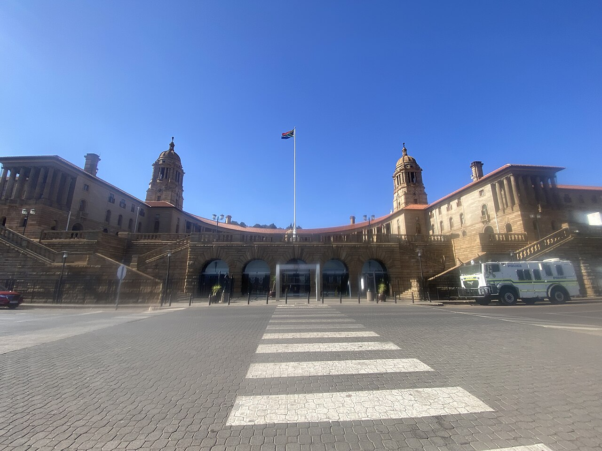
プレトリアのユニオン・ビルディング（2024年撮影）。マスクが生まれた1971年当時、プレトリアは南アフリカの行政首都だったRuby D-Brown / CC BY 4.0 / Wikimedia Commons 祖父ホールドマン、カナダからプレトリアへ
母メイの父ジョシュア・ホールドマンは、米ミネソタ州に生まれてカナダで育った整体師である。1930年代にはテクノクラシー運動の指導者となり、1950年に一家でプレトリアへ移住した。
1940年10月 生誕31年前 カナダ ブリティッシュコロンビア州バンクーバー、サスカチュワン州レジャイナ
祖父、禁止団体の会員として逮捕される ジョシュア・ホールドマンは1902年11月25日、米ミネソタ州ピクォートの丸太小屋で生まれた。1926年に米アイオワ州のパーマー・カイロプラクティック学校を卒業し、1936年からサスカチュワン州レジャイナで開業した。1936年から1941年まで、技術者による統治を唱える団体テクノクラシー社のカナダ支部で指導者と研究部長を務めた28 29
テクノクラシー社は1933年にニューヨークで設立された。貨幣と国境を廃止し、市民に同数の「エネルギー証書」を配分する構想を掲げていた。カナダ政府は第二次世界大戦の開戦後にこの団体を禁止した。ホールドマンは1940年6月26日付の地元紙に元会員の「愛国声明」を広告として掲載し、これが起訴の理由になった29 28
CBC によれば、ホールドマンは1940年10月13日にレジャイナの市裁判所に出廷し、カナダ防衛規則に基づく2件の罪に問われた。起訴の件数は、1995年のカナダ・カイロプラクティック協会誌の評伝では3件とされている。10月に逮捕されて8,000ドルの保釈金で釈放され、200ドルの罰金を科されたとする記録もある29 28 30
ホールドマンは1941年に団体を脱退した。同誌の評伝は、ソ連との協力を容認する方針への転換が理由だったと書いている。CBC は、ホールドマンが後に団体とカナダの双方に失望し、一家で南アフリカへ移ったと報じている。孫のイーロン・マスクは2019年にX（当時は Twitter）へ「火星のテクノクラシー」という語を投稿した28 29 31
1950年 生誕21年前 カナダ サスカチュワン州 → 南アフリカ プレトリア
木箱に詰めた単発機と一緒に南アフリカへ ホールドマンは1948年3月、45歳で操縦士の免許を取得した。1950年に一家で南アフリカへ移住した際、所有していた単発機ベランカを木箱に詰め、家財と一緒に船で運んだ。一家はプレトリアに住み、ホールドマンは診療所も同地へ移した32 28 33
移住の2年前の1948年4月19日、1942年に結婚した妻ウィニフレッドとの間に双子の娘メイとケイがレジャイナで生まれていた。メイがイーロンの母である。一家が移住した時、メイは2歳だった28 34 35
ジョシュア・ホールドマンと単発機。撮影は1974年以前で年は不明。機首に妻の愛称「Winnie」の文字が見える撮影者不明 / Public domain / Wikimedia Commons 1952〜1954年 生誕19年前 プレトリア → オスロ、プレトリア → オーストラリア
オスロへ、カラハリ砂漠へ、オーストラリアへ 1952年、ホールドマン夫妻は自家用機でプレトリアからノルウェーのオスロまで飛んだ。欧州整体師連合での講演のためである。経路はアフリカからスペインとフランスを経由し、ロンドンにも立ち寄った32
1953年からは、19世紀の探検家ファリーニが書いた「カラハリの失われた都市」の調査を始めた。調査は計12回に及び、2回目は高度200フィートで未踏の砂漠上空を8,400マイル飛行した。都市の痕跡は見つからなかった。メイの友人の記者は2025年、一家が10年近く夏ごとにこの調査に出かけたと書いている32 36
1954年には夫妻で単発機に乗り、アフリカからアジアを経てオーストラリアまで往復約3万マイルを飛行した。業界誌は、この経路を飛んだ自家用機の操縦士はおそらく夫妻だけだと書いている。メイは2022年にXで、両親がオーストラリアへ向かう途中でタージ・マハルに立ち寄ったと投稿した。ホールドマンは1970年までに80以上の国と地域の上空を飛んだ32 37
1974年1月13日 2歳 南アフリカ プレトリア
祖父、着陸訓練中の事故で死亡 ホールドマンは1974年1月、南アフリカで航空事故により死亡した。着陸の訓練中に機体の車輪が送電線に接触し、同乗者と共に死亡したとされる。71歳だった。孫のイーロンは2歳だった32 33 30
ホールドマンはアパルトヘイトを支持し、南アフリカの新聞に擁護の文章を寄せた。Business Insider は2023年9月、祖父の思想とマスクの技術者統治への関心を並べて報じた。エロール・マスクは2025年の取材で、義父は「アパルトヘイトに全面的に傾倒し、ユダヤ人を憎んでいた」と述べている31 33
技術者の父、モデルの母
父エロールは技術者で、不動産開発も手がけた。母メイは1969年のミス南アフリカの最終候補で、後にオレンジ自由州大学で栄養学、トロント大学で栄養科学の修士号を取得した。2人は高校時代に知り合い、1970年に結婚した38 34 35
1971年6月28日 0歳 南アフリカ トランスバール州プレトリア
長男イーロン・リーヴ・マスクが生まれる イーロン・リーヴ・マスクは1971年6月28日、エロールとメイの長男としてプレトリアで生まれた。その後、弟キンバルと妹トスカが生まれている2 29 35
母メイがカナダ生まれのカナダ国民だったため、マスクは出生時から血統によるカナダ国籍を持っていた。この国籍が18年後の出国の手段になる39 40
1977年頃 5〜6歳 プレトリア 自宅と市内
犬にかまれ、市内を4時間歩く Isaacson の伝記によれば、6歳のマスクは自宅の私道を走っていた時に、気に入っていた飼い犬に襲われた41
マスク本人は2013年1月の講演で、6歳前後にいとこの誕生日会の会場まで一人で歩いた経験を語っている。距離は10〜12マイルで約4時間かかり、母は大変驚いたという。同じ講演で、自分は「非常に本好き」だったと述べた42
1979年 7〜8歳 プレトリア
両親の離婚、そして父との同居を選ぶ メイは、南アフリカの離婚法が1979年に改正された後にエロールと離婚した。子ども3人は当初メイと暮らしたが、マスクは後に父の家へ移った。Rolling Stone 誌の取材に、マスクは母が子ども3人と一緒にいる一方で父が一人だったため、父を気の毒に思ったと語っている35 34 43
同居の開始時期は資料によって異なる。Rolling Stone 誌は両親の別居の2年後としている。エロールは2022年の AFP の取材で、9歳のイーロンが夜行列車で一人でヨハネスブルクに着いたと回想した43 38
マスクは後にこの選択を「よい考えではなかった」と述べ、父とは絶縁した。エロールは Isaacson に、息子たちに対して「極めて厳格な、ストリート流の専制」を敷いたことを認めている。AFP の取材には、自分は厳しい父親だったと述べた43 41 38
写真（外部） ニール・ストラウスによるカバーストーリー。父エロールについての発言を掲載 Rolling Stone 2017年11月（豪州版 2018年1月） あの人は本当にひどい人間だった。想像もつかないだろうHe was such a terrible human being. You have no idea. イーロン・マスク、2017年の Rolling Stone 誌の取材で父エロールについて
私は本に育てられた。本、その次が両親だI was raised by books. Books, and then my parents. イーロン・マスク、2017年の Rolling Stone 誌の取材で
本とコンピューター
1981年頃 9〜10歳 南アフリカ 市内のコンピューター店
コンピューター店で初めて実物を見る マスクは2013年の講演で、10歳前後の時に南アフリカのコンピューター店に入り、初めて実物のコンピューターを見たと語った。最初に購入したのはコモドールの VIC-20 で、独学用の本でプログラミングを学んだ44 2
当時のマスクはゲームを好み、新しいゲームを買う資金を得るためにゲームのプログラムを書き始めたという44
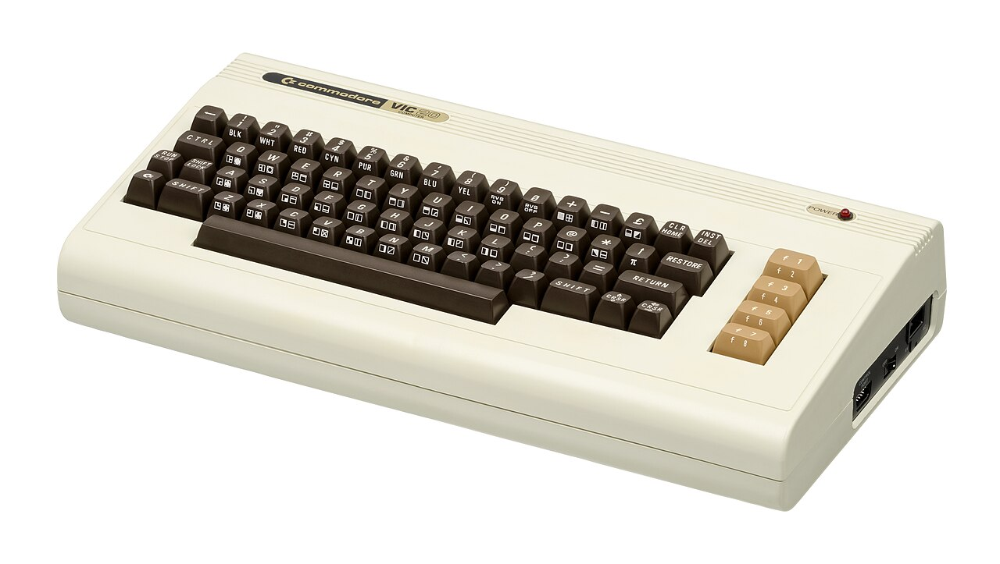
コモドール VIC-20（1981年発売の8ビット機）。マスクは10歳前後でこの機種を入手し、説明書でプログラミングを学んだEvan-Amos / Public domain / Wikimedia Commons 1983〜1984年 11〜13歳 南アフリカ 業界誌『PC and Office Technology』
自作ゲーム「Blastar」を500ドルで売る マスクは BASIC で書いたシューティングゲーム「Blastar」のプログラムを、南アフリカのコンピューター誌『PC and Office Technology』に約500ドルで売った。ソースコードは1984年、「E. R. Musk」の名で同誌の69頁に掲載された。紙面の説明文は、水素爆弾を運ぶ異星人の宇宙貨物船を破壊するゲームだと紹介している45 46
売却時の年齢は資料によって12歳と13歳に分かれる。Vance の伝記と Biography.com は12歳とし、Soni の PayPal 創業史は13歳と書いている。Vance はこのコードを母メイから入手して伝記に収録した。2015年には読者のトマス・ロレットがブラウザで遊べる版を作成し、VICE が紹介した45 46 2
写真（外部） 『PC and Office Technology』誌に掲載された Blastar のソースコードの紙面 VICE 2015年6月9日 1983年頃 11〜12歳 南アフリカ 野外訓練キャンプ（フェルトスクール）
12歳、フェルトスクールで2度殴られる 12歳のマスクは、フェルトスクールと呼ばれる野外の生存訓練キャンプに参加した。Isaacson の伝記によれば、参加者は2組に分けられて互いに襲うよう指示され、食料と水を奪い合った。体が小さかったマスクは2度殴られ、体重が10ポンド減った47 41
16歳で再び参加した時には体が大きくなり、柔道も習得していた。マスク本人はこのキャンプを「準軍事的な『蠅の王』」と表現している41
いじめは美徳とみなされていたBullying was considered a virtue. キンバル・マスク、フェルトスクールについて（Isaacson の伝記、2023年）
1983〜1986年頃 11〜15歳 プレトリア 自宅
ニーチェとショーペンハウアー、そして『銀河ヒッチハイク・ガイド』 マスクは12歳から15歳ごろに「実存的危機」を経験し、人生の意味を求めて多くの本を読んだと語っている。2013年1月のコンピューター歴史博物館での対談では、家にあったニーチェとショーペンハウアーを読んだが、14歳で読むべき本ではなかったと述べた42 48
その後に読んだダグラス・アダムズの『銀河ヒッチハイク・ガイド』について、マスクは前向きな本だったと評価している。2019年の CBS の取材では、好きな哲学者としてアダムズの名を挙げた。読書の対象は SF にも及び、アシモフの「ファウンデーション」シリーズを SpaceX 設立の基礎になった本として挙げている49 50
家にたまたまニーチェとショーペンハウアーの本があった。14歳で読むべき本ではないWe happened to have some books by Nietzsche and Schopenhauer in the house, which you should not read at age 14. イーロン・マスク、2013年1月22日、コンピューター歴史博物館での対談
多くの場合、問いのほうが答えより難しい。問いを正しく立てられれば、答えを出すのは簡単だA lot of times the question is harder than the answer. If you can properly phrase the question, then the answer is the easy part. イーロン・マスク、2013年1月22日、『銀河ヒッチハイク・ガイド』について
学校での暴行
マスクはヨハネスブルクのブライアンストン高校で暴行を受けた後、プレトリア男子高校へ移って同校を卒業した51 52
1980年代半ば 8〜9歳 南アフリカ 在籍していた学校
集会の後に暴行を受けて入院する Isaacson の伝記によれば、マスクは学校の集会で生徒ともみ合いになった。その後の休み時間に生徒の仲間に殴られて顔に重傷を負い、入院した。鼻の内部の組織は数十年後も矯正手術を要した41 53
暴行の状況と入院期間は資料によって異なる。Vance の伝記を読んだ BizNews の記事は、マスクが階段の上に座っていたところを頭を蹴られ、再建手術を要したと書いている。Isaacson の抜粋は学校を1週間休んだと書き、TechCentral の書評は1週間の入院と書いている51 41 53
マスクの証言によれば、帰宅後の父エロールは相手の生徒の側に立ち、マスクを1時間立たせたまま怒鳴り続けた。エロールはこれに反論し、相手の生徒は父親を自殺で亡くしたばかりで、マスクがその生徒を「愚か」と呼んだと述べた41 53
あの少年は父親を自殺で亡くしたばかりで、イーロンは彼を愚かだと言った。どうしてその子を責められるだろうかThat boy had just lost his father to suicide and Elon called him stupid. How could I possibly blame that child? エロール・マスク、2023年、息子の入院をめぐる伝記の記述に反論して
1980年代後半 8〜9歳 プレトリア ブルックリン地区 プレトリア男子高校
プレトリア男子高校へ転校し、1988年に卒業する 校庭での暴行の後、父はマスクをブライアンストン高校からプレトリア男子高校へ移した。同校は1901年に創立された英国式の男子校で、校歌は英国のハロー校の歌集から採られている。マスクは在学の最後の数年間、ウォータークルーフ地区にある父の邸宅の近くに住み、通学生として同校に通った54 55 38
同校の元校長によれば、マスクは10年生の時に転校してきた。マスクは Vance の取材に、同校は規律が整っていていじめも少なかったと語っている。マスクは1988年に同校を卒業した52 51 56
同校でのいじめについては証言が分かれる。マスクは2022年のポッドキャストで、南アフリカでは何度も殴られたと語った。一方で同校の元校長ビル・シュローダーは2022年、マスクが同校で不当な扱いを受けた証拠はないと述べた。暴行を受けたのは別の高校だったという。The Guardian が取材した元同級生は、マスクは周囲に好かれていたと振り返った57 52 54
プレトリア男子高校の本館。1901年創立で、マスクは1988年に同校を卒業したGamtoos / CC BY-SA 3.0 / Wikimedia Commons 南アフリカで育ったが、あそこは非常に暴力的な場所だ。それが私を強くしたのは確かだI grew up in SA, which is a very violent place. It played a role in toughening me up, that's for sure. イーロン・マスク、2022年の Full Send Podcast で
エメラルドをめぐる証言
1986年 14〜15歳 ザンビアの飛行場
父、自家用機をエメラルドと交換する Isaacson の伝記によれば、エロールは1986年にザンビアの飛行場で、パナマ系イタリア人の事業家から所有機セスナ・ゴールデンイーグルの購入を申し込まれた。代金は現金ではなく、この事業家がザンビアに持つ「3つの小さな鉱山」で産出するエメラルドの一部で支払われた58
エロールは原石を輸入してヨハネスブルクで研磨させた。鉱山は登記されておらず、本人は「どれも合法ではなかった」と述べている。Isaacson は、ロシアが人工エメラルドを製造したことで1980年代後半に事業が成り立たなくなったと書いている59 58
2018年、エロールは Business Insider 南アフリカ版の取材に、10代のイーロンとキンバルがニューヨークのティファニーでエメラルド2個を約2,000ドルで売ったと語った。金庫の扉が閉まらないほど現金があったとも述べている。イーロンはこの取材の確認依頼に応じなかった60 61
2014〜2023年 42〜52歳 Forbes の取材、X（旧 Twitter）
「父も鉱山の持ち分を」から「鉱山の記録はない」へ マスク本人の説明は時期によって変わっている。2014年の Forbes の取材では、父がザンビアのエメラルド鉱山の持ち分を持っていたと述べた60
2019年12月28日には X に「父はエメラルド鉱山を所有していなかった」と投稿し、自分は働きながら大学を出て約10万ドルの学生ローンを抱えたと書いた。2023年5月6日には、鉱山を見た人はおらず存在を示す客観的な証拠もないと投稿している。同年4月には、鉱山の存在を証明すれば100万ドージコインを支払うとも投稿した。2009年の The New Yorker の記事にある鉱山への言及が、話の広まった起点とされる4 60 58
エロールは2023年、鉱山はザンビアのカサバ湾の近くにあったと The Daily Beast に語ったが、物的な証拠は示さなかった。Isaacson は、エメラルドによる収入は1995年までに失われていたと書いている。鉱山の所有と持ち分と産出物の一部の受領という3通りの説明が並存しており、どれが事実かは確認できない58
この鉱山が存在したという客観的な証拠はまったくないThere is no objective evidence whatsoever that this mine ever existed. イーロン・マスク、2023年5月6日の X への投稿
出国
1989年 17〜18歳 プレトリア大学
旅券を待つ5か月間、プレトリア大学に通う 当時の南アフリカは白人男性に兵役を課しており、1977年からは期間が2年だった。マスクはカナダ生まれの母を通じてカナダの旅券を申請し、手続きを待つ約5か月間、プレトリア大学に在籍した。Vance は、この在学を書類を待つ間の過ごし方だったとマスク本人が説明したと書いている。Isaacson によれば、マスクは自分だけでなく母と弟と妹の申請書も記入し、父の分は記入しなかった62 63 64
2013年の俳優レイン・ウィルソンとの対談で、マスクは17歳で国を出た理由の一部は徴兵を避けるためだったと述べた。別の取材では、2年間黒人を抑圧して過ごすのはよい時間の使い方とは思えなかったと語っている62 65
父エロールはこの説明を否定している。南アフリカの将来への不安と、米国の技術産業へのイーロンの関心が理由だったという。マスク本人も2013年1月の対談で、優れた技術の記事は米国のものが多く、シリコンバレーへ行きたかったと語っている63 42
17歳で国を出た。まあ、一部は軍の徴兵を避けるためだったI left at 17. Well, in part, in order to avoid conscription in the army. イーロン・マスク、2013年、SoulPancake の動画でのレイン・ウィルソンとの対談
ばかげた話だ。そんなこととは何の関係もなかったHowever, it is nonsense. It had nothing to do with that. エロール・マスク、徴兵回避説について（Conversations with Lelethu の取材で）
1989年5〜6月 17〜18歳 南アフリカ → カナダ モントリオール
旅券の取得から3週間でカナダへ マスクは2013年1月の対談で、カナダの旅券を手にしてから3週間以内にカナダにいたと語った。父は以前に一家での米国移住に同意したが、後に撤回していた44
出発の時期は資料によって異なる。Isaacson は2023年に The Globe and Mail 紙へ寄せた抜粋で、旅券の承認が1989年5月下旬に下りたと書いている。マスクは同年6月28日の18歳の誕生日を、サスカチュワン州のいとこの農場で迎えた。TechCentral が要約した Isaacson の伝記は出国を1989年5月とし、Toronto Life 誌は1988年6月と書いている64 53 66
出発の際、父はマスクに、3か月で帰ってくると言った。Isaacson によれば、マスクは父から2,000米ドルの旅行小切手を受け取った。母も10代の美人コンテストの賞金で開いた株式口座を解約し、2,000米ドルを渡した。所持金を約2,000カナダドルとする報道もある43 64 53 40
カナダの旅券を手にしてから3週間以内に、私はカナダにいたWithin three weeks of getting my Canadian passport, I was in Canada. イーロン・マスク、2013年1月22日、コンピューター歴史博物館での対談
父はけんか腰で、3か月で戻ってくるだろうと言ったHe said rather contentiously that I'd be back in three months. イーロン・マスク、2017年の Rolling Stone 誌の取材で出国時を回想
2 第2章 カナダと米国の大学Canada and Pennsylvania, 1989 to 1995 17歳でモントリオールに着いたマスクは、親戚の農場と製材所で働いた後、1990年前後にオンタリオ州のクイーンズ大学に入学した。銀行での実習と2回の大学での学びを経て、ペンシルベニア大学で物理学と経済学を修めた。1995年にスタンフォード大学の大学院へ進む予定だったが、授業には出ずに起業へ進んだ。この時期の学位の取得年と在留資格については、本人の説明と記録が一致していない。
モントリオールからサスカチュワンへ
1989年6月 17〜18歳 カナダ ケベック州モントリオール
頼るはずの大おじは米国へ移っていた マスクはモントリオールの空港に着いた。母方の大おじの家に滞在する予定だったが、大おじはすでに米ミネソタ州へ移っていた。マスクは100ドルの乗り降り自由のバス乗車券を買い、カナダを西へ横断した66
到着の時期は資料によって異なる。Toronto Life 誌は1988年6月と書いている。Isaacson の伝記を紹介した書評は、カナダの移民手続きの承認が1989年5月に下りた後に出国したと伝えている66 53
所持金についてのマスク本人の説明は一定していない。2018年6月の投稿では、2,000ドルとリュック1つと本の詰まったスーツケース1つで北米に着いたと書いた。後年の投稿では、1989年に約2,500ドルを持って来たとしている。Isaacson の伝記は両親からそれぞれ2,000ドルを受け取ったと書いている67 68 53
カナダ到着時の所持金：資料ごとの金額
単位：ドル。本人の投稿2件と Isaacson の伝記の記述
マスクの投稿（2018年6月） 2,000ドル
マスクの後年の投稿 約2,500ドル
Isaacson の伝記（両親から各2,000ドル） 4,000ドル
いずれも本人または伝記作家の記述で、記録による裏付けはない。
67 68 53 1989年夏 17〜18歳 カナダ サスカチュワン州スウィフトカレント、ウォルデック
又いとこの農場で穀物倉庫を掃除する マスクはバスでサスカチュワン州スウィフトカレントに着き、又いとこの家に滞在し、近くの農場で穀物倉庫の掃除をした。Daily Hive と blogTO は、農場の所在地をウォルデックとしている66 68 69
サスカチュワン州は母メイと祖父ホールドマンが暮らした土地である。マスクは2017年5月13日、この農場で撮った写真をX（当時は Twitter）に投稿した70
写真（外部） 17歳のマスクがサスカチュワン州の農場で撮影した写真（本人の投稿を転載） CleanTechnica 2020年6月22日 カナダのいとこの農場で、17歳。帽子の上に帽子をかぶっているOn my cousin's farm in Canada at 17, wearing a hat on a hat. イーロン・マスク、2017年5月13日の投稿
1989〜1990年 17〜19歳 カナダ ブリティッシュコロンビア州バンクーバー
時給18ドル、製材所のボイラー室の清掃 マスクはバンクーバーへ移り、チェーンソーで丸太を切る仕事に就いた。その後、製材所のボイラー室を清掃する仕事を得た。時給は18ドルだった66 69
Daily Hive が伝えたマスクの説明による作業は次のとおりである。防護服を着て狭い通路からボイラーに入り、まだ熱い砂と残留物を、入ってきた穴から外へかき出す。外側の作業員がそれを手押し車に移す69
マスクは2019年12月の投稿で、大学時代の仕事としてサスカチュワン州の母のいとこの農場とバンクーバーの製材所を挙げている4
中に30分以上いると、暑さで死ぬ。逃げ道はないIf you stay in there for more than 30 minutes, you get too hot and die. There is no escape. イーロン・マスク、製材所のボイラー室の清掃について（Daily Hive 2025年2月26日の記事による）
1989年 17〜18歳 カナダ オンタリオ州トロント
母と妹がトロントへ移る 1989年、母メイが娘トスカを連れてカナダへ移住した。母娘は友人宅に身を寄せた後、トロントで家賃統制のアパートを見つけ、イーロンもそこに加わった。メイはモデルの仕事を続け、栄養士の業務を立て直した71 72
メイは南アフリカで得た資格を確認する課程を受けながら、トロント大学で研究に従事した。後に同大学で栄養学の修士号を取得している71 72
メイは2023年5月6日、1989年に移ったトロントでの生活は質素だったと投稿した。同じ投稿で、エメラルド鉱山の話を初めて聞いたのは約10年前の Twitter 上だったと書いている。メイは別の機会に、家賃統制のアパートに住み、イーロンはソファで寝ていたと回想している60 70
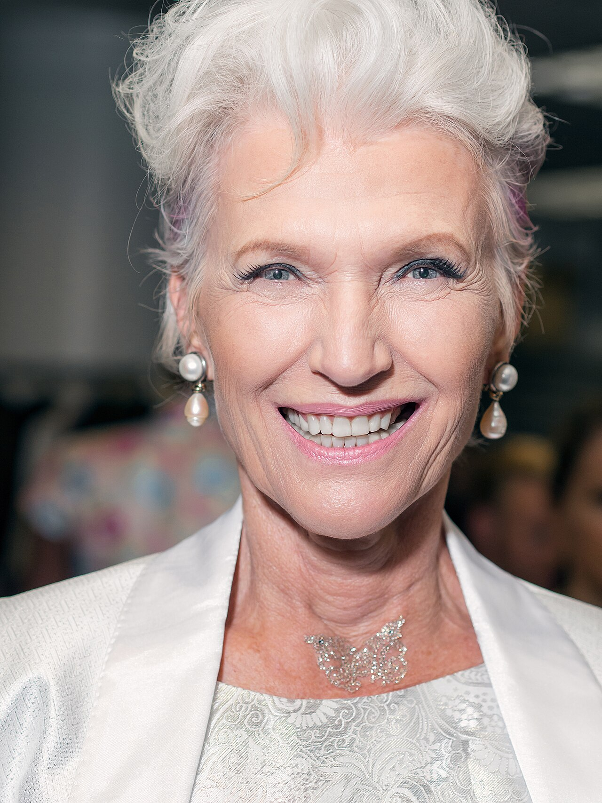
母メイ・マスク（2015年撮影）。1989年に娘トスカとトロントへ移住し、家賃統制のアパートで暮らしたLuan Luu / CC BY 2.0 / Wikimedia Commons キングストンのクイーンズ大学
1990年夏 18〜19歳 カナダ オンタリオ州南部
マイクロソフト・カナダの営業実習 Toronto Life 誌によれば、19歳のマスクは1990年夏にマイクロソフト・カナダの営業部門で実習し、オンタリオ州南部の顧客を訪問した。上司のデビッド・カーターによれば、マスクは職業別電話帳の顧客候補に丸を付けて書き込みをし、毎週それを持ち帰った。カーターは、マスクは意見を言うことをためらわなかったと振り返っている66
1990年秋 18〜19歳 カナダ オンタリオ州キングストン クイーンズ大学
ウォータールー大学ではなくクイーンズ大学を選ぶ マスクは進学先としてウォータールー大学とキングストンのクイーンズ大学を比べ、クイーンズ大学を選んだ。Toronto Life 誌は、女子学生が多いことが理由だったと伝えている。マスクは同窓会誌の取材に、学部時代を男子学生ばかりの環境で過ごしたくなかったと語った。ウォータールー大学では物理学と工学を検討していた73 66 4
入学年は資料によって異なる。同級生の証言と2025年の MobileSyrup の記事は1990年とし、CNBC の2019年の記事と BestColleges は1989年としている。クイーンズ大学の同窓会誌は2013年の記事で、1990年に入学したと書く一方、在学期間を1989〜1991年とも記している74 75 4 76 73
同窓会誌によれば、マスクは商学部の1994年卒業年次に属し、ヴィクトリア・ホールの留学生向けの階に住んだ。マスクはクイーンズ大学で過ごした2年間を、楽しく興味深い、人格形成の時期だったと振り返っている73
在学中、マスクは「Musk Computer Consulting」の名でコンピューターとワープロを販売した。学生新聞の広告には「最新鋭」の文字があった。弟キンバルも後にクイーンズ大学に入学している46
クイーンズ大学のグラント・ホール（2023年撮影）。マスクは1990年前後に同大学に入学し、2年後にペンシルベニア大学へ移ったTakipoint123 / CC BY-SA 4.0 / Wikimedia Commons 1990年秋 18〜19歳 クイーンズ大学 学生寮
同じ寮のナヴィード・ファルークと「シヴィライゼーション」 ジュネーブ育ちのカナダ人ナヴィード・ファルークは、1990年秋にマスクと同じ寮に住んだ。マスクは2013年、ヴィクトリア・ホールで知り合ったファルークを、今も親友の1人だと語っている73 74
ファルークによれば、マスクは経営学を学び、人前で話す弁論大会にも出場した。経済学の試験の後に成績上位の学生同士で答えを比べると、マスクの得点は分布の外側にあったという74
イーロンは何かに打ち込むと、ほかの人とは次元の異なる関心をそれに向けるWhen Elon gets into something, he develops just this different level of interest in it than other people. ナヴィード・ファルーク、クイーンズ大学の同級生（Vance の伝記、2015年）
1990〜1992年 18〜21歳 クイーンズ大学
ジャスティン・ウィルソンとの出会い マスクはクイーンズ大学で、後に最初の妻となるジャスティン・ウィルソンと出会った。同窓会誌はウィルソンを文理学部の1996年卒業年次としている。2人は2000年に結婚し、2008年に離婚した73 77
ウィルソンは後に、マスクは執拗に電話をかけてきたと振り返っている。異常心理学の授業ではウィルソンが97点、マスクが98点だった。マスクは教授と話し合い、減点された2点を取り戻して100点にしたという74
ウィルソンは2010年に Marie Claire 誌に寄稿した文章で、結婚披露宴の席でマスクから「この関係では自分が主導する」と言われたと書いている77
1990年代初め 18〜19歳 カナダ オンタリオ州トロント ノバスコシア銀行
銀行幹部に電話をかけて実習の職を得る マスクとキンバルは、面識のない人物に次々と電話をかけて面会を求めた。その1人がノバスコシア銀行の幹部ピーター・ニコルソンである。物理学とオペレーションズリサーチの経歴を持つニコルソンは兄弟と昼食を共にし、19歳のマスクを社内コンサルティング部門の唯一の実習生として採用した。時給は約14ドルだった。マスクは後に「文字どおり19歳くらいだった」と語っている78 46
マスクは銀行が抱える中南米の債務とブレイディ債を調べた。他の銀行から途上国の債権を安く買い取る取引をニコルソンに提案したが、頭取セドリック・リッチーの下の経営陣は採用しなかった。Soni によれば、マスクは競合の銀行家について「この人たちは愚か者だ」と語った。マスクは1999年に X.com と PayPal に取り組んだ際、この経験を銀行に勝てる根拠として持ち出した46 78
あれだけの行動力を持つ若者2人となら、喜んで昼食を共にするつもりだったI was perfectly prepared to have lunch with a couple of kids that had that kind of gumption. ピーター・ニコルソン、ノバスコシア銀行の元幹部（Vance の伝記、2015年）
フィラデルフィアのペンシルベニア大学
1992年 20〜21歳 米ペンシルベニア州フィラデルフィア ペンシルベニア大学
奨学金を得てペンシルベニア大学へ編入する マスクは1992年、奨学金を得てペンシルベニア大学に編入した。文理学部で物理学を、ウォートン・スクールで経済学を学んだ。同窓会誌によれば、アイビーリーグの学位が米国の産業界での就職に有利になると考えたことが編入の理由だった4 79 73 80
Soni の PayPal 創業史によれば、マスクが経営学を学んだ理由の一つは、経営を知る人々に将来出し抜かれないためだった。ウォートンではウルトラキャパシターと宇宙太陽光発電の事業性を論じたレポートを書き、高い評価を得た46
ペンシルベニア大学のカレッジ・ホール（2010年撮影）。マスクは1992年に同大学に編入し、物理学と経済学を学んだSmallbones / Public domain / Wikimedia Commons 1993〜1995年 21〜24歳 ペンシルベニア大学 クアッド寮（グラデュエート・ホール）
寮の世話役と、電池の話 マスクはクアッド寮のグラデュエート・ホールで寮の世話役を務めた。部屋は3階にあり、同じ寮の学生はコンピューターとチェス盤しかない簡素な部屋だったと記憶している。マスクは計算機科学の授業の助手も務めた79
同じく世話役だったジェニファー・グウィンは、マスクと約2年間交際した。グウィンは、マスクは内向的で集中力が強く、卒業後はシリコンバレーに移るつもりでいたと語っている。同級生のマーシャル・スタントンは、マスクがスタンフォードでより優れた電池の作り方を研究したいと話していたと記憶している79
2022年9月、グウィンは在学中の写真18枚や署名入りの誕生日カードを RR Auction で競売にかけ、落札額は計16万5,265ドルになった79
写真（外部） ペンシルベニア大学在学中のマスク（ジェニファー・グウィンが競売に出した写真） The Daily Pennsylvanian 2022年11月 1993〜1995年 21〜24歳 フィラデルフィア 大学近くの借家
借家を非公式のナイトクラブにする マスクは同級生のアデオ・レッシと大学の近くで家を借り、入場料を取るパーティーを開いた。レッシは Vance の伝記で、最大500人が来て、入場料は5ドルだったと語っている。2015年の NextShark の記事は Vogue 誌を引いて1,000人以上としており、人数は資料によって異なる81 82
レッシは Vogue 誌に、マスクはパーティーに関心を示さず事業として扱っていたと語った。マスクが自室で1人でビデオゲームをしていた夜もあったという82
The Philadelphia Inquirer は2024年1月、チェスナット通り3721番地の6寝室の連棟住宅をレッシが4年間借り、マスクも入居していたと報じた。売主側の管理者は、マスクが2回のクアッド寮生活の間の2年間をこの家で過ごしたと計算している。学内紙の財団は2023年夏にこの家を170万ドルで購入した。ただし財団の担当者はマスクとの関係を確認していないと述べている83
CNBC が伝えた Vance への説明で、マスクは学生ローンと奨学金と仕事で学費を賄ったと述べている。卒業時には約10万ドルの学生ローンが残った。2018年6月の投稿では11万ドルとしている84 67
1994年夏 22〜23歳 米カリフォルニア州 シリコンバレー
昼はピナクル研究所、夜はロケット・サイエンス・ゲームズ 1994年夏、マスクはシリコンバレーで2つの実習を並行して務めた。昼はエネルギー貯蔵の新興企業ピナクル・リサーチ研究所で働いた。Soni によれば、同研究所の研究対象には宇宙配備型の兵器や監視システム、自動車の代替燃料も含まれていた78 46
夜はパロアルトのゲーム会社ロケット・サイエンス・ゲームズで、ソフトウェアの描画処理の間にディスクを入れ替える作業をした。同社は1993年にスティーブ・ブランクらが設立し、1997年4月に閉鎖された。マスクは同社のゲーム「Loadstar」の制作陣にプログラマーとして名を連ねている46 85
1990年代前半 18〜19歳 ペンシルベニア大学
インターネット、持続可能なエネルギー、宇宙 マスクは在学中に、人類の将来に最も大きな影響を与える分野を3つ挙げた。インターネット、持続可能なエネルギー、宇宙探査である。この3分野は後に Zip2 と PayPal、Tesla、SpaceX の事業領域になった。マスクは2009年にペンシルベニア大学の文理学部で講演した際、自分がこの3分野すべてに関わるとは考えていなかったと述べた46 80
キンバルとは医師向けの交流サイトを検討したこともあったが、実現しなかった46
ペンシルベニア大学にいた頃、人類の将来に最も影響するものは何かを考え始めたWhen I was at Penn, I started thinking about what would most affect the future of humanity. イーロン・マスク、2009年のペンシルベニア大学文理学部での講演「Don't Panic: Adventures in High-Tech Startups」で（Knowledge at Wharton 2009年5月13日）
1995年、スタンフォードの2日間
1995年 23〜24歳 米カリフォルニア州マウンテンビュー ネットスケープ本社
ネットスケープのロビーで誰にも話しかけられずに帰る マスクはネットスケープに職を求めて応募したが、返事はなかった。同社のロビーで社員に話しかける機会を待ったものの、誰にも話しかけられずに立ち去った70 46
2021年4月、この話を紹介した X の投稿に対し、マスクは職に就けなかったのはインターネット企業に限られると返信した86 87
職には就けた。インターネット企業でなかっただけだ（当時はほとんど無かった）I could get a job, just not at an Internet company (weren't many back then) イーロン・マスク、2021年4月の X への返信（Fox Business 2021年4月21日の記事による）
1995年 23〜24歳 米カリフォルニア州 スタンフォード大学
大学院の合格と「2日間」の在籍 マスクはスタンフォード大学大学院の材料科学・工学の課程に合格した。本人は長年、物理学の博士課程に2日間在籍して退学したと説明してきた。2018年の CNBC の記事は、マスクがスタンフォードで博士課程を続けながらインターネットの成長を眺めていたくはなかったと語ったと伝えている。スタンフォード大学の起業家育成プログラムが公開する2003年10月8日のマスクの講演記録は、マスクは入学を延期して1995年にインターネット企業を設立し、大学に戻らなかったと紹介している88 78 89
Soni の PayPal 創業史の説明は異なる。マスクは1995年夏にペンシルベニア大学を離れ、入学の延期を申請し、入学時期を1995年9月から1996年1月に変えた。ニコルソンはインターネット企業の成長が続くうちに起業し、博士号は後で取るよう助言したという46
スタンフォード大学の広報担当者は2024年、マスクが材料科学・工学の課程に出願して合格したことは確認したが、入学の記録はないと述べた。マスクの指導教員になる予定だったウィリアム・ニックスは、1995年に会った記憶はないとしながらも、本人の説明はあり得る話だと述べている88
マスクは2022年8月、ニックスから届いた手紙を X に投稿した。ニックスはリチウム電池の負極にシリコンを使う課題についてのマスクの説明を評価し、1995年にスタンフォードで会うことを提案された件に触れていた90 88
まあやってみなさい。だが3か月後にはまた会うことになるだろうWell, give it a shot, but I'll bet we'll see you in three months. スタンフォード大学の学科関係者、入学延期を申し出たマスクに（Soni の PayPal 創業史、2022年）
大学院の研究を（永久に）延期していなければスタンフォードで私の教授になっていたビル・ニックスから、よい手紙が届いたNice letter from Bill Nix, who would've been my prof at Stanford if I hadn't placed grad studies on (permanent) deferment イーロン・マスク、2022年8月の X への投稿（The Tech Outlook 2022年8月20日の記事による）
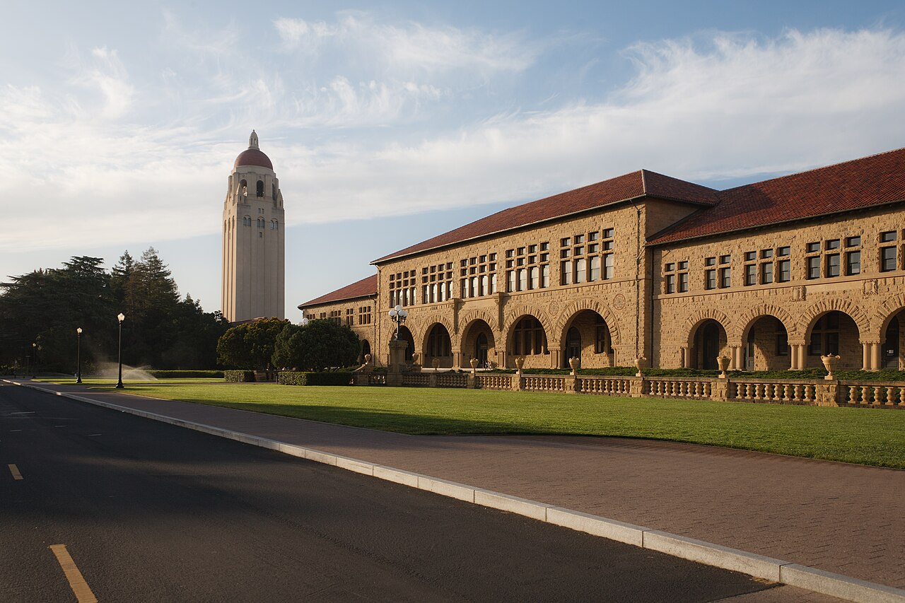
スタンフォード大学のフーバー・タワーとマクラッチー・ホール（2011年撮影）。マスクは1995年に大学院の材料科学・工学の課程に合格したが、大学に入学の記録はないKing of Hearts / CC BY-SA 3.0 / Wikimedia Commons 1997年5月19日 25歳 ペンシルベニア大学
学位の授与は1995年ではなく1997年 マスクは初期の経歴で、1995年にペンシルベニア大学で物理学と経済学の学位を得たと説明していた。同大学の広報部は2019年、マスクが物理学の学士（B.A.）と経済学の学士（B.S.）を取得し、授与日は1997年5月19日だと回答した91
学内紙 The Daily Pennsylvanian も、マスクを1997年の文理学部・ウォートン卒業生と記している。ウォートン・スクールの Knowledge at Wharton は2009年、マスクは1995年に大学を離れ、学位上は1997年の卒業になったと書いた。The Philadelphia Inquirer は、書類の処理が済んだ1997年までに学位を得たとしている80 83 76 92 79
1995年秋 23〜24歳 米カリフォルニア州パロアルト
在留資格をめぐる2024年の報道 The Washington Post は2024年10月26日に次のように報じた。マスクは1995年秋にパロアルトに来た後、スタンフォードの授業には出ずに Zip2 の事業に取り組み、就労の法的資格がないまま働いていた。根拠の一つは、マスクが2005年に Tesla の共同創業者らに送ったメールである。メールで、マスクは大学院への出願は米国にとどまるためだったと書いている93 88 94
同紙によれば、Zip2 への出資契約は、マスク兄弟ともう1人に45日以内に就労資格を得ることを求めていた。元取締役のデレク・プラウディアンは、兄弟の在留資格は米国で合法的に会社を経営できる状態ではなかったと述べた。同紙が取材した移民法の専門家は、売上を生む作業に携わればその時点で問題になると指摘した94 93 88
報道の翌日、マスクは X に、自分は米国で働くことを認められていたと投稿した。資格は J-1 ビザから H-1B ビザへ移行したと説明したが、移行の時期は示していない。当時の大統領ジョー・バイデンは報道と同じ10月26日の演説で、マスクは学生ビザで来て法律に違反していたと批判した。バイデンの発言はピッツバーグでの選挙集会で行われた。マスクは発言の動画に対し、自分は米国で働くことを認められていたと返信した93 88 95
マスクは2020年のポッドキャストで、当時の自分は合法的に滞在していたが、本来は学生としての活動をすべき立場だったと語っている96 88
研究室を持つ資金もなく、この国にとどまる法的な権利もなかった。だから大学院への出願はその両方を解決するよい方法に思えたI had no money for a lab and no legal right to stay in the country, so that seemed like a good way to solve both issues. イーロン・マスク、2005年に Tesla の共同創業者らに送ったメール（2024年の The Washington Post の報道による）
私は実際に米国で働くことを認められていたI was in fact allowed to work in the US. イーロン・マスク、2024年10月27日の X への投稿
3 第3章 Zip2と最初の売却Zip2, 1995 to 1999 1995年11月、24歳のマスクは弟キンバルとパロアルトで地域情報検索の会社を設立した。ベンチャーキャピタルの出資と引き換えに経営権は外部の経営者に移り、会社は新聞社向けのソフトウェア事業で赤字を重ねた。1999年にCompaqが現金約3億700万ドルで買収し、マスクは約2,200万ドルを得た。
パロアルトの小さな事務所
創業の着想は1994年夏のシリコンバレーでのインターンにある。創業資金と父エロールの関与については、本人と伝記作家の記述が一致しない。
1994年夏 22〜23歳 米カリフォルニア州 パロアルト
インターン先で電話帳の営業担当者を見る ペンシルベニア大学の学生だったマスクは、1994年の夏をシリコンバレーで過ごした。昼は蓄電技術の会社Pinnacle Research Instituteで働き、夜はパロアルトのゲーム会社Rocket Science Gamesで働いた78
インターン先の一つで、イエローページの営業担当者がオンライン掲載の広告枠を売り込み、売れずに終わる場面をマスクは見ていた。キンバルの回想によれば、兄はこの時、自分たちならこの事業ができるかもしれないと話したという78
1995年 23〜24歳 米カリフォルニア州 スタンフォード大学
スタンフォードの博士課程を2日で離れる 1995年、マスクはスタンフォード大学の博士課程に進んだが、2日で離れた。後年の説明では、博士課程に座ったままインターネットの変化を眺めていたくはなかったという78
マスクは2021年のポッドキャスト番組で、1995年当時のインターネットは急拡大の直前にあったと振り返った。同時に、当時はメールアドレスを持たない人が大半だったとも語っている97
インターネットはまさに超新星のように爆発的に広がる直前だったthe internet was definitely about to go supernova イーロン・マスク、2021年1月のポッドキャスト番組Third Row Teslaで1995年を振り返って
1995年11月6日 24歳 米カリフォルニア州 パロアルト
Global Link Information Network設立、父の資金は諸説 マスク兄弟とグレッグ・コウリはGlobal Link Information Networkを設立した。後のZip2の監査済み財務諸表は、会社の設立日を1995年11月6日としている98 99
父エロールの資金については諸説ある。アイザックソンの伝記は、南アフリカから訪れた父が2万8,000ドルと約500ドルで買った中古車を与えたと書く100 101 102 99
1995〜1996年 23〜25歳 米カリフォルニア州 パロアルト 事務所
事務所のソファで寝てYMCAでシャワーを浴びる 兄弟はアパートを借りず、小さな事務所を借りてそこで寝泊まりした。マスクは2014年の南カリフォルニア大学の卒業式でこの時期を語り、コンピューターは1台しかなかったと述べている。昼はサイトを公開し、夜にコードを書いていたという103
アイザックソンは、マスクが長時間のコーディングの後に机の下で眠ったと書く。初期の社員ジム・アンブラスは、マスクには枕も寝袋もなかったと回想している101 100
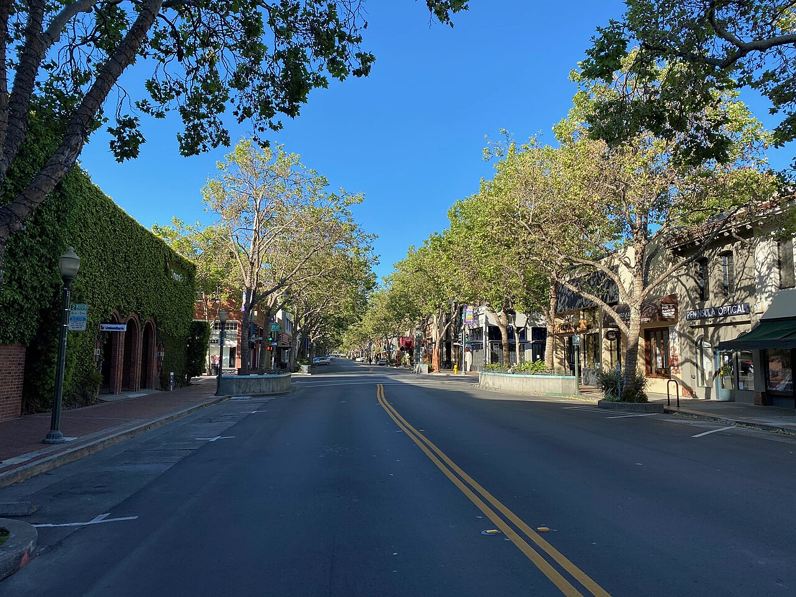
パロアルト中心部のユニバーシティ・アベニュー（2020年4月撮影）。マスク兄弟は1995年にこの町で会社を設立したBrian Sterling / CC BY-SA 2.0 / Wikimedia Commons YMCAでシャワーを浴びていた。金がなく、コンピューターは1台しかなかったWe showered at the YMCA and we were so hard-up that we only had one computer. イーロン・マスク、2014年5月の南カリフォルニア大学卒業式の講演で
1995〜1996年 23〜25歳 カナダ イエローページ運営会社
キンバルに電話帳が投げつけられる 兄弟は新聞社との提携で最初の売上を得た後、イエローページとの提携を目指した。キンバルはカナダでイエローページを持つ会社のトップと面会し、電話帳を共同でオンライン化する案を出した97
キンバルの回想では、相手は分厚い電話帳を持ち上げてキンバルに投げつけた。資金や提携先を求めるたびに、兄弟はまずインターネットとは何かを説明しなければならなかった97
これに取って代わるつもりだとでも思っているのかYou ever think you're going to replace this? カナダのイエローページ運営会社のトップ、電話帳をキンバル・マスクに投げつけて（キンバルの回想）
ベンチャーキャピタルと新聞社
1996年の資金調達で会社の性格は変わった。直接販売から新聞社向けのソフトウェア提供に転換し、マスクは経営の最高責任者の地位を失った。
1996年3月 24歳 米カリフォルニア州 パロアルト
Mohr Davidowの出資とCEOの交代 アイザックソンの伝記によれば、ベンチャーキャピタルのMohr Davidow Venturesは300万ドルの出資を提示した。プレゼンテーションの直前、キンバルは就労ビザを持たずに米国の空港で足止めされたが、発表には間に合った。同社は出資を決めた後、兄弟の就労ビザの取得を支援し、車の購入資金として各3万ドルを渡した101 100
金額は資料によって異なる。Computer Business Reviewは、1996年3月の最初の調達をMohr Davidowが主導する360万ドルと報じた104 98 104
出資者は音響機器会社で事業開発を担当していたリッチ・ソーキンをCEOに据え、マスクは最高技術責任者に移った101 105 106 107
キンバル・マスク（2012年撮影）。兄とZip2を共同で設立し、売却で約1,500万ドルを得たとされるWikiupdate1019 / CC BY-SA 3.0 / Wikimedia Commons CEOでなければ、本当の意味で最高技術責任者や最高製品責任者にはなれないと学んだI learned that you could not truly be the chief technology or product officer unless you were the CEO. イーロン・マスク、Zip2でCEOを外れた経験についてアイザックソンに
1996〜1997年 24〜26歳 米国 各地の新聞社
ニューヨーク・タイムズなどの新聞社が出資者兼顧客になる Zip2はニューヨーク・タイムズ、ナイト・リッダー、ハースト・コーポレーションと契約した。ヴァンスの伝記によれば、これらの新聞社の出資は合計5,000万ドルに上る97 104 98
出資者と顧客は重なっていた。1997年には、売上の約51%が優先株を持つ1社の顧客から生じた。監査人の注記は、この種の契約条件が出資交渉と並行して決まり、第三者間の条件とは異なる可能性があると記している98 98 108
1997年10月 26歳 米国 新聞業界
130の新聞サイトを結ぶネットワーク 1997年10月、Zip2は自社のネットワークが全米20以上の大都市圏で130を超える新聞社のサイトを含むと発表した。提携先にはナイト・リッダーとニューヨーク・タイムズ社のほか、ランドマーク・コミュニケーションズやマクラッチーなどの新聞グループが並んだ。提携先はZip2にライセンス料を払い、サイトの広告収入の一部も分配した109
Editor & Publisherはこの時のマスクを会長兼最高技術責任者と紹介した。マスクはこのネットワークを、マイクロソフトの地域情報サイトSidewalkに対する新聞業界の対抗策と説明した109 110
これは要するに、Sidewalkに対する新聞業界の回答だThis is essentially the newspaper industry's response to Sidewalk イーロン・マスク、1997年10月にEditor & Publisherの取材で
1998年4月6日 26歳 米カリフォルニア州 マウンテンビュー
CitySearchとの対等合併を発表する Zip2と競合の地域情報サイトCitySearchは、合併して社名をCitySearchとすると発表した。Wiredによれば、本社はZip2のあるマウンテンビューに置く計画だった。従業員は約700人で、都市ガイドは175都市分になる。CitySearchのCEOチャールズ・コンは、買収ではなく対等合併だと説明した111
新会社の会長にはコンが就き、マスクは副会長として製品と技術を担当する予定だった111 112 113 114
マイクロソフトやAOLのような企業と競うために必要なものを提供できるWe can provide what's necessary to compete with the Microsofts and AOLs of the world. イーロン・マスク、1998年4月にCitySearchとの合併発表について（Editor & Publisher）
1998年5月 26歳 米カリフォルニア州 マウンテンビュー
CitySearchとの合併を取り下げる 合併計画は発表から約6週間で終わった。両社は1998年5月18日、双方合意で合併を中止すると発表した。理由は、統合の準備の過程で技術と製品戦略と事業モデルの差異が判明したことである110 113 115
中止の経緯は資料によって記述が異なる。当時の発表は双方合意としている。後年の記事は、合併を進めたのはソーキンで、マスクが直前に取締役会に働きかけて中止させたと書く105
意見が一致しないリスクが大きすぎたthe risk of not seeing eye to eye was too great CitySearchのCEOチャールズ・コン、1998年5月に合併中止についてEditor & Publisherに
1998年 26〜27歳 米カリフォルニア州 マウンテンビュー
ソーキンが退き、デレク・プルーディアンが暫定CEOに就く 合併の中止後、マスクはCEOの地位を求めた。取締役会はソーキンをCEOから外し、デレク・プルーディアンを暫定CEOに据えた105 116 117
アイザックソンによれば、プルーディアンの任務は会社の売却で、マスクにも売却して資金を得るよう勧めた116 118
1998年8〜12月 26〜27歳 米カリフォルニア州 マウンテンビュー
純損失2,178万ドル、年利12.75%の劣後債700万ドルを発行する 1998年の売上は496万8,000ドル、純損失は2,177万5,000ドルだった。売上原価だけで946万8,000ドルあり、売上を上回っていた98
同年8月、ベイエリア向けの子会社Zip2 Bay Areaの事業を停止し、資産を名目的な価格で優先株主の1社に譲渡した。12月には年利12.75%の劣後債700万ドルを発行し、資産を担保に差し入れた98
Zip2の売上高と純損失（1996〜1998年）
単位：万ドル。監査済み財務諸表の数値。売上は新聞社向けのサービス収入と広告収入の合計
1996年 売上高 0
1996年 純損失 392.7万ドル
1997年 売上高 209.4万ドル
1997年 純損失 1,427.8万ドル
1998年 売上高 496.8万ドル
1998年 純損失 2,177.5万ドル
3年間の純損失の合計は3,998万ドルで、優先株による調達額の合計3,956万ドルを42万ドル上回る。
98 Compaqへの売却
Compaqは1999年1月に検索サイトAltaVistaを独立した事業部門とし、その補強としてShopping.comとZip2を相次いで買収した119
1999年2月16日 27歳 米テキサス州ヒューストン Compaq
Compaq、AltaVista強化のためZip2を買収 Compaqは2月16日、Zip2の全株式を現金で取得する最終合意を発表した。発表文はZip2をマウンテンビューの非上場企業とし、買収後はAltaVistaの事業部門とすると記した。AltaVistaのCEOロッド・シュロックとZip2のCEOプルーディアンがそれぞれ談話を出した118
買収額は公表されなかった。Computer Business Reviewは、AltaVistaの新規株式公開計画を発表した後の最初のウェブ企業買収と位置づけ、Shopping.comの2億2,000万ドルを上回る額とだけ報じた114 120 121 119
AltaVistaと手を組むことで、Zip2は目標をより早く実現できるJoining forces with AltaVista will enable Zip2 to more quickly achieve its vision. Zip2のCEOデレク・プルーディアン、1999年2月16日のCompaqの発表文で
1999年4月1日 27歳 米カリフォルニア州 パロアルト AltaVista
買収が完了し、現金約3億700万ドルが支払われる AltaVistaの登録届出書によれば、合併は1999年4月1日に完了した。合併契約は、優先株と普通株の全体に対して3億700万ドルを株数で割った額を1株あたり支払うと定めている98 122
現金以外の部分は資料によって扱いが異なる。AltaVistaの登録届出書では、従業員ストックオプションなどを加えた取得価額の総額は3億4,090万ドルである98 123
1999年 27〜28歳 米カリフォルニア州 パロアルト
マスクの取り分は約2,200万ドル アイザックソンによれば、兄弟が持っていたZip2の株式は合計12%で、兄弟の間で均等ではない比率で分けていた。マスクの取り分は約2,200万ドル、キンバルは約1,500万ドルだった116 78 102 124
売却額の表記も資料によって異なる。CNBCは約3億ドル、Fortuneは「AltaVistaに3億ドル超」と書き、IFLScienceは4億ドルと書いた103 125 126 98
1999年 27〜28歳 米カリフォルニア州 パロアルト 自宅前
CNNのカメラの前でMcLaren F1を受け取る マスクは売却益のうち約100万ドルでMcLaren F1を購入した127 116 128 126
同じ番組でマスクは次の会社X.comの構想を語り、銀行業は世界経済の最大の部門だと説明した。自分の姿勢をポーカーにたとえ、より賭け金の大きい勝負に移ったとも述べている126 129
映像（外部） 1999年のCNNの番組で、配送されたMcLaren F1を受け取るマスク The Drive 掲載 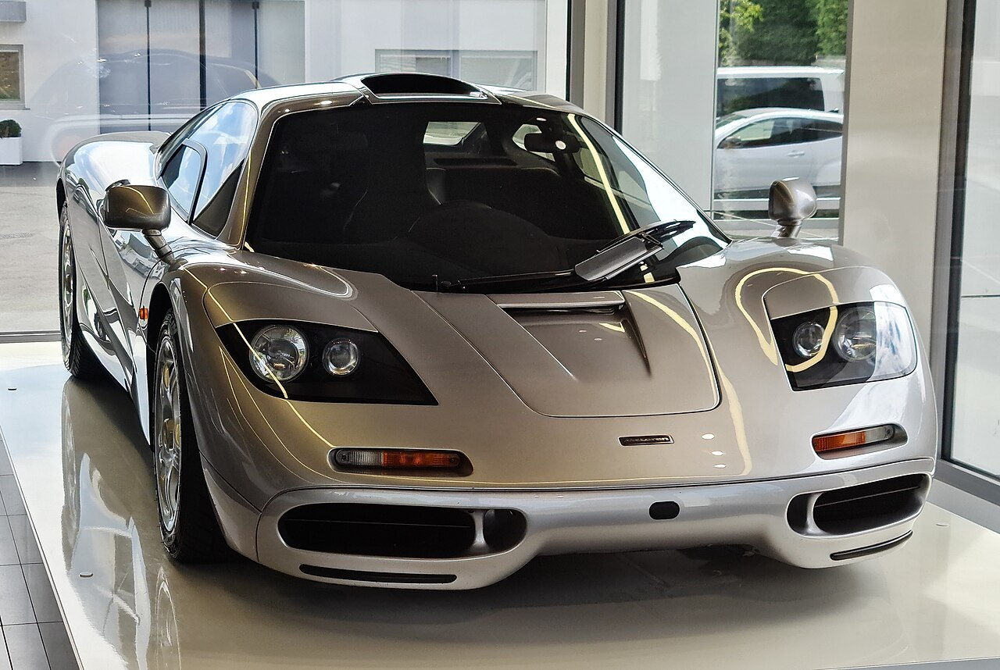
McLaren F1（2022年撮影、マスクの所有車とは別の個体）。マスクは1999年にZip2の売却益で同型車を購入したMrWalkr / CC BY-SA 4.0 / Wikimedia Commons 世界にMcLarenは62台あり、そのうちの1台を私が所有するThere are 62 McLarens in the world, and I will own one of them. イーロン・マスク、1999年のCNNの番組で
バハマの島を一つ買って自分の領地にすることもできる。だが私は新しい会社を設立するほうに関心があるI can go out and buy one of the islands in the Bahamas and turn it into my personal fiefdom, but I'm more interested in trying to build a new company. イーロン・マスク、1999年のCNNの番組で
退廃的ねIt's decadent. ジャスティン・ウィルソン、1999年のCNNの番組で、McLaren F1の購入について
1999年6月29日 28歳 米テキサス州ヒューストン Compaq
AltaVistaとともにZip2もCMGIに移る 買収の完了から3か月後、CompaqはAltaVistaの事業の83%をCMGIに譲渡することで合意した。対価はCMGIの普通株1,900万株と優先株、3年満期の2億2,000万ドルの手形で、総額は約23億ドルである。発表文は、譲渡の対象にAltaVistaの関連事業としてShopping.comとZip2を含めた130
Wired Newsも、CMGIがCompaqのインターネット関連事業であるShopping.comとZip2を合わせて取得すると報じた。Compaqは残る17%を保有し、CMGIの最大の外部株主となった131
1999年10月20日 28歳 米マサチューセッツ州 CMGI
Zip2はAltaVistaから切り離される Compaqは1999年8月18日、AltaVistaの株式の約81.5%をCMGIに譲渡した。Zip2はこの時AltaVistaに移されたが、10月20日に配当として株主に分配され、AltaVistaの事業から外れた98
1999年11月、CMGIの子会社MyWay.comが株式交換でZip2を取得し、MyWay.comの名称で統合すると伝えられた。統合後の本社はマサチューセッツ州アンドーバーに置かれた。ニューヨーク・タイムズ社のデジタル部門の幹部は、Zip2はおよそ15分ごとに戦略を変えると評した132 133
Zip2はおよそ15分ごとに戦略を変えるZip2 changes its strategy about every 15 minutes. リンカーン・ミルスタイン（ニューヨーク・タイムズ社のデジタル部門の発行人）、1999年11月にEditor & Publisherの取材で
4 第4章 X.comとPayPalX.com and PayPal, 1999 to 2002 マスクはZip2の売却益の大半をネット銀行X.comに投じたが、共同創業者は半年以内に去り、2000年3月に競合のConfinityと合併した。合併会社のCEOを務めたのは約4か月で、同年9月の新婚旅行中に取締役会が彼を解任した。2002年のeBayによる15億ドルの買収で、筆頭個人株主のマスクが得た額は1億5,000万〜2億5,000万ドルと資料によって異なる。
X.comの設立と共同創業者の離脱
X.comの資本の大半はマスク個人の資金だった。登録届出書には、創業期の株式の取得価格と、創業者の扱いをめぐる後年の合意が記録されている。
1999年3月8日 27歳 米カリフォルニア州 パロアルト
1株0.0033ドルで540万株を取得 PayPalの登録届出書は、会社の設立日を1999年3月8日としている。同じ3月にマスクは普通株540万株を1株0.0033ドルで取得し、5月にも60万株を1株0.033ドルで取得した107
共同創業者は金融業界出身のハリス・フリッカー、クリストファー・ペイン、エド・ホーの3人である。創業当初は住宅を拠点とし、後にパロアルトの事務所に移った134 135
1999年5〜6月 27〜28歳 米カリフォルニア州 パロアルト
シリーズA 1,250万ドルの大半をマスクが出す X.comは1999年5〜6月にシリーズA優先株3,885万株を発行し、現金1,250万ドルとドメイン名「X.com」を対価として受け取った。ドメイン名は50万ドルと評価されている107 107 136
マスクの自己資金の額は、Money誌が1,200万ドル、Every誌が1,250万ドルと書いている102 135 137
マスク兄弟の両親の友人で、Zip2の設立を支えた不動産開発業者グレッグ・コウリも、Zip2の売却益の一部をX.comに投じた138
1999年夏 27〜28歳 米カリフォルニア州 パロアルト
フリッカーを解任し、ペインとホーも去る フリッカーとマスクは、何をどの順序で提供するかで対立を続けた。設立から約5か月後にマスクはフリッカーを解任し、ペインとホーも会社を離れた134 135
Every誌によれば、フリッカーと彼の集めた金融担当の人員は、規制と本人確認に対するマスクの姿勢を懸念していた。ある朝フリッカーは、自分のコンピューターのデータが消去され、システムへのアクセスが停止されているのを知った。この経緯については、フリッカーがマスクから経営権を奪おうとしたとする記述もあり、諸説ある135 134
イーロンは金融サービスについて何も知らなかったElon knew nothing about financial services ハリス・フリッカー、X.comの共同創業者、後年のポッドキャスト番組C4Kで（Every誌 2023年7月による）
1999年8月 28歳 米カリフォルニア州 メンローパーク Sequoia Capital
Sequoiaがマスクから1,500万株を500万ドルで買う 1999年8月、Sequoia Capital系のファンドがマスクからシリーズA優先株1,500万株を500万ドルで買い取った。Sequoiaのマイケル・モリッツは同月にX.comの取締役に就いた107
1株あたりの価格は約0.33ドルで、キンバルの取得価格0.33ドルと同水準である（推定）。会社への新規出資ではなく、マスク個人の持分の一部がベンチャーキャピタルに移った取引である107
1999年12月7日 28歳 米カリフォルニア州 パロアルト
ビル・ハリスをCEOに迎えてサービスを開始 X.comは11月にCommunity Bankshares社と一連の契約を結び、コロラド州の連邦預金保険対象銀行First Westernを通じてオンライン銀行の顧客を募集できるようにした136 139 107
CBS MarketWatchは12月10日に、X.comが同じ週に正式に開業したと報じた。記事によれば、銀行口座とBarclaysが運用するインデックス投資信託を組み合わせ、S&P 500連動型投信は手数料を取らない集客用の商品と位置づけた140 141
最低残高はない。口座を開けば、当座預金口座に20ドルの販促特典が入るThere are no minimum balances. You can open an account and receive a $20 promotional offer in your checking account. イーロン・マスク、1999年12月10日付のCBS MarketWatchの取材に
今は第3の段階にあり、人々はインターネットを自分の主要な金融の預け先として使う準備ができているI think we're at the third stage now where people are ready to use the Internet as their main financial repository. イーロン・マスク、1999年12月10日付のCBS MarketWatchの取材に
2000年1月 28歳 米カリフォルニア州 パロアルト
他行の口座から資金を移せる欠陥が見つかる X.comのシステムには、他人の口座番号と銀行の識別番号だけで、その口座からX.comの口座へ資金を移せる欠陥があった。ニューヨーク・タイムズは2000年1月28日に、この状態が1か月近く続き、その週の初めに修正されたと報じた142
記事によれば、CEOのハリスは不正確な番号や疑わしい番号の入力を約10件確認したと述べた。会社は以後、他行口座からの送金の前に、無効にした小切手の写しをファクスか郵送で送るよう新規顧客に求めた142 141
PayPalの登録届出書は、2000年の1年間に銀行口座の不正利用で生じた損失を30万ドルとしている136
Confinityとの合併
Confinityはピーター・ティールとマックス・レヴチンらが1998年12月に設立した会社で、電子メールで送金するPayPalを提供していた。両社はeBayの利用者を奪い合っていた。
1998年12月〜1999年 27〜28歳 米カリフォルニア州 パロアルト
ティールの10万ドルのつなぎ融資で始まったConfinity Confinityは1998年12月にカリフォルニア州で設立された。同月、ティールの投資会社が年利4.3%で10万ドルのつなぎ融資を行い、1999年にシリーズA優先株50万株に転換した107
Confinityは1999年2月にシリーズAで50万ドル、6月と8月にシリーズBで450万ドルを調達した107 143 136
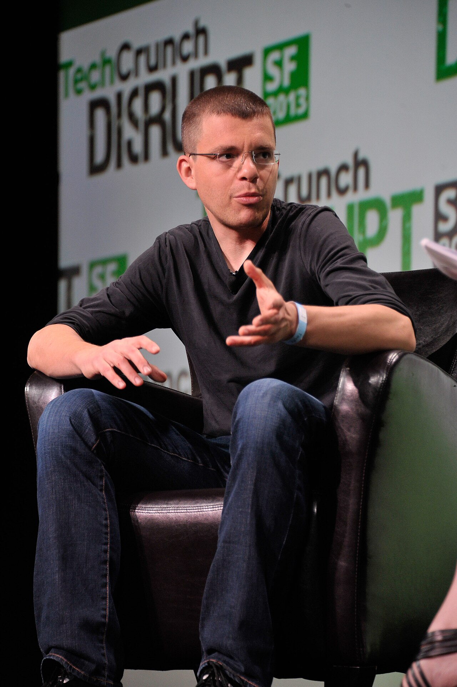
マックス・レヴチン（2013年、TechCrunch Disrupt SFで）。Confinityの共同創業者で、合併後はCTOとしてマスクとシステムの基盤をめぐって対立したTechCrunch / CC BY 2.0 / Wikimedia Commons 2000年 28〜29歳 米カリフォルニア州 サンドヒル・ロード
ティールを乗せたMcLaren F1が路肩に衝突する マスクはティールを助手席に乗せ、McLaren F1でSequoia Capitalとの面会に向かっていた。ティールに車の性能を尋ねられたマスクは加速を試み、車線変更の際に後輪が滑った。車は回転して路肩の斜面に衝突した127 144
2人に怪我はなかった。ティールは2017年にニューヨーク・タイムズの取材で、シートベルトを締めていなかったと語っている。マスクは2012年のインタビューで、車に保険を掛けていなかったと認めた144 127 127
記事（外部） ティールが事故を振り返ったモーリーン・ダウドによるインタビュー The New York Times 2017年1月11日 2人とも怪我をしなかったのは奇跡だった。シートベルトを締めていなかった。勧められることではないIt was a miracle neither of us were hurt. I wasn't wearing a seatbelt, which is not advisable. ピーター・ティール、2017年1月、ニューヨーク・タイムズの取材に
自分には起こらないと分かっていたから、保険には入っていなかったBut I knew it would never happen to me, so I didn't get any insurance. イーロン・マスク、事故直後にティールに（ティールが2017年にニューヨーク・タイムズに語った内容）
2000年3月30日 28歳 米カリフォルニア州 パロアルト
X.comを存続会社とする合併、旧Confinity株主は46.5% 3月30日、X.comはConfinityと合併し、X.comが存続会社になった。旧Confinityの株主は合併直後に議決権の約46.5%を持った。合併の翌日には、1株2.75ドルでシリーズCの1億ドルの資金調達が完了した136
合併の対価として発行した証券の公正価値は1億2,970万ドルである。ConfinityのCEOだったティールは合併後まもなく会社を離れた136 145
ソニの著書の書評によれば、マスクはこの合併を望んでいなかった。資金調達の最中だったマスクに対し、CEOのハリスはConfinityとの合併に同意しなければ辞任すると告げた146 107
2000年5月 28歳 米カリフォルニア州 パロアルト
ハリスが去り、マスクがCEOに戻る ハリスは2000年1月にシリーズB優先株2,100万株を1株0.48ドルで取得していた。そのハリスが2000年5月にCEOを退いた。会社は7月にハリスのシリーズB優先株1,566万株を710万ドルで買い戻し、残る314万株の買い戻し権をマスクに譲った。マスクは差額を約38万9,000ドルの約束手形で会社に支払った107 146
マスクは5月から9月まで合併会社のCEOを務めた。eBayの登録届出書によれば、2000年のマスクの給与は16万3,825ドルだった147
2000年夏 28〜29歳 米カリフォルニア州 パロアルト
WindowsかUnixか、腕相撲で決める マスクはMicrosoftの製品が信頼できると考え、システムをWindowsで再構築しようとした。レヴチンとその技術者たちは、Microsoftの製品は安全性に欠け不具合が多いとしてUnixを支持した148
アイザックソンの伝記によれば、ある夜遅くにマスクは腕相撲で決めようと提案した。疲れていたレヴチンは応じて負けたが、体重で技術的な判断を決めさせはしないと告げた。マスクは自分の技術者たちにConfinityのUnixのコードを書き直させた148 137
2000年夏 28〜29歳 米カリフォルニア州 パロアルト
PayPalの名称を外し「X-PayPal」に改めようとする マスクは事業を送金以外に広げるため、社名と商標をX.comに統一し、PayPalの名称を外そうとした。アイザックソンは伝記の抜粋で、マスクがPayPalを子会社の一商標に留め、送金の仕組みを「X-PayPal」と改めようとしたと書いた149 150
会社が実施したフォーカスグループでは、利用者はX.comという名称から成人向けサイトを連想した。マックス・チャフキンの2021年の著書によれば、社内ではマスクがドメインの取得に少なくとも100万ドルを支払ったと言われていた149 150 107 135
写真（外部） 解任の翌月、パロアルトの本社でPayPalのロゴの前に並ぶティールとマスク（AP、Paul Sakuma撮影） 2000年10月20日撮影、The Washington Post 2023年7月25日に掲載 小規模な決済の仕組みに留まるならPayPalのほうがよい。だが世界の金融システムを手に入れたいなら、Xのほうがよい名称だIf you want to just be a niche payment system, PayPal is better. But if you want to take over the world's financial system, then X is the better name. イーロン・マスク、アイザックソンに（アイザックソンが2023年7月に公開した伝記の抜粋による）
ソフトウェアの設計の対立を解決する方法として、考えうる最も愚かなものだったthe stupidest imaginable way to settle a software-coding disagreement マックス・レヴチン、マスクとの腕相撲についてアイザックソンに
新婚旅行中の解任
2000年9月、取締役会はマスクを解任してティールをCEOに就けた。以下はFortuneの2007年の記事、ヴァンスとアイザックソンの伝記に基づく。
2000年9月 29歳 米カリフォルニア州 パロアルト Fanny & Alexander
パロアルトのバーで解任の段取りを決める ヴァンスの2015年の伝記によれば、X.comの社員の小さな集団が、パロアルトのバーFanny & Alexanderに集まってマスクを退ける方法を話し合った。彼らはティールのCEO復帰を取締役会に提案することにし、マスクに直接は告げずに動くと決めた151
マスクとジャスティンは2000年1月に結婚していたが、多忙のため新婚旅行に出ていなかった。9月の旅行は投資家との面会を兼ね、最後にシドニーで五輪を観戦する予定だった。2人が機内に乗り込んだ夜、幹部らは取締役会に不信任の書簡を届けた151 150 149
シリコンバレーの長く輝かしい悪質なクーデターの歴史の中でも、最も悪質なものの一つone of the nastiest coups in Silicon Valley's long, illustrious history of nasty coups アシュリー・ヴァンス、2015年の伝記で
2000年9月 29歳 米カリフォルニア州 パロアルト → オーストラリア
オーストラリアへの機内にいる間に取締役会が解任を決める マスクは同年初めに結婚したジャスティンと、延期していた新婚旅行でオーストラリアへ向かった。レヴチンとティールにリード・ホフマンとデービッド・サックスが加わった。彼らはSequoiaのモリッツとの会合で取締役会の支持を得た。レヴチンはティールを暫定CEOに推した152
Fortuneは、取締役会がマスクを解任したのは彼がオーストラリアへの機内にいる間だったと書いている125 152 136 153
ソニは、マスクに対する公正な審理には彼の不在が必要だったと書いた。マスク本人は後年、PayPalは存続させるのが難しい会社だったと語っている137
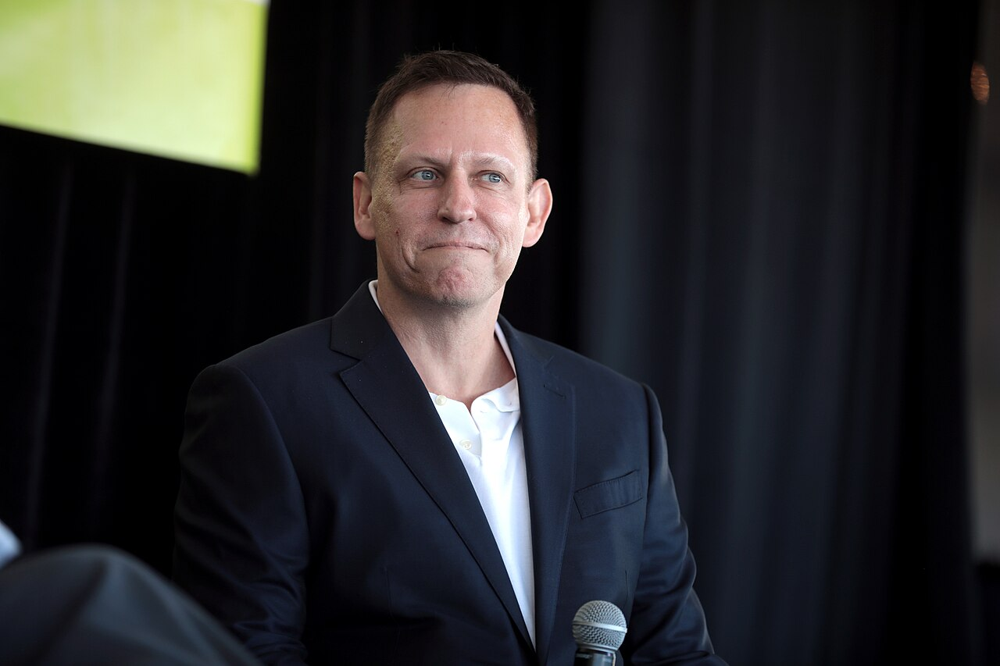
ピーター・ティール（2022年撮影）。2000年9月、マスクの解任後にCEOに復帰し、2002年のeBayへの売却まで務めたGage Skidmore / CC BY-SA 2.0 / Wikimedia Commons 当初は強く憤ったI was pretty angry at first イーロン・マスク、PayPalでの解任についてアイザックソンに
もちろん、私が残っていればPayPalは1兆ドル企業になっていたOf course, if I had stayed, PayPal would be a trillion-dollar company. イーロン・マスク、アイザックソンに
それが休暇の問題点だThat's the problem with vacations イーロン・マスク、2007年、Fortuneの取材に解任を振り返って
2000年末〜2001年1月 28〜30歳 南アフリカ → 米カリフォルニア州レッドウッドシティ Sequoia Hospital
南アフリカでマラリアに感染し集中治療室へ 解任後、マスクはジャスティンと旅行を続け、17歳で出国して以来初めて南アフリカを訪れた。動物保護区に滞在した後、2001年1月にカリフォルニアに戻ると、めまいと悪寒と嘔吐が始まった。救急外来では当初ウイルス性髄膜炎と誤って診断された153 152
レッドウッドシティのSequoia Hospitalで、感染症に詳しい医師が熱帯熱マラリアと診断した。マスクは集中治療室に10日間入り、完全な回復には5か月を要した。X.comの人事責任者はレヴチンとティールに、死の数時間前の状態だったとメールで伝えた153
休暇は人を殺す。それに南アフリカだ。あの土地はいまだに私を消し去ろうとしているVacations will kill you. Also, South Africa – that place is still trying to destroy me. イーロン・マスク、マラリア感染についてアイザックソンに
2001年1月 29歳 米カリフォルニア州 パロアルト
会社を受取人とする1億ドルの生命保険 マスクの入院中、マスクを被保険者として会社を受取人とする1億ドルの生命保険が契約されていたことが判明した153 152
彼が死んでいたら、我々の財務の問題はすべて解決していたIf he had died, all of our financial problems were going to be solved ピーター・ティール、アイザックソンに
2001年2月〜5月4日 29〜30歳 米カリフォルニア州 パロアルト
社名をPayPalに改め、分離合意に「創業者」条項を入れる 会社は2000年12月にネット銀行事業の終了を決め、2001年2月に正式に社名をPayPal, Inc.に変更した136
5月4日、会社はマスクと分離合意を結んだ。会社はマスクの普通株100万株の買い戻し権を放棄し、普通株200万株を1万2,666ドルで買い戻した。合意には、会社が創業者の表記に関する約束を破った場合、マスクがさらに75万ドル分の優先株の買い取りを会社に求めることができるという条項がある107 107
上場とeBayへの売却
PayPalは2001年9月に上場を申請し、2002年2月に上場した。5か月後にeBayとの合併に合意している。
2002年2月15日 30歳 米ニューヨーク Nasdaq
公開価格13ドル、初日の終値20.09ドル PayPalは540万株を1株13ドルで売り出し、7,020万ドルを調達した。主幹事はSalomon Smith Barneyである136 154 155 154
目論見書によれば、マスクは上場後に710万1,656株を保有し、比率は11.9%だった。2001年12月末の口座数は1,280万で、創業から2001年6月末までの累積損失は2億3,100万ドルに達していた136 143 107
2000年11月〜2002年7月 29〜31歳 米カリフォルニア州 サンノゼ・アナハイム
eBayとの交渉は3度決裂し、展示会場での立ち話で再開した eBayの登録届出書によれば、両社は2000年11月にPayPalとeBayの決済子会社Billpointの統合を話し合った。2001年には評価額で折り合えず交渉が2度途切れ、2002年1月にはeBayの8億2,500万ドルの株式による買収提案をPayPalが拒否した147
上場後の4月11日にも交渉は決裂した。6月23日、アナハイムで開かれたeBay Liveの展示会場で両社の幹部が偶然に話し合った。これを機に7月2日に交渉が再開した。PayPalの取締役会は7月7日、出席者の全会一致で合併契約を承認した147 156
2002年7月8日 31歳 米カリフォルニア州 サンノゼ・マウンテンビュー
eBay、PayPal株1株にeBay株0.39株で買収に合意 eBayは7月8日、PayPalを株式交換で買収すると発表した。合併契約の日付は7月7日で、交換比率はPayPal株1株につきeBay株0.39株である。7月5日の株価に基づく買収額は15億ドルとされた157 158 159 160 161
発表文によれば、PayPalの取引の約60%はeBay上で行われていた。マスクはティールやレヴチンらと共に、保有する650万1,656株を合併に賛成票として投じる株主契約に署名した。eBayの登録届出書では、マスクの持株は651万1,378株で比率は10.7%である158 147 102
eBayとPayPalの使命は互いを補う。どちらも人々がオンラインで売り買いできるようにしているeBay and PayPal have complementary missions. We both empower people to buy and sell online. メグ・ホイットマン、eBay社長兼CEO、2002年7月8日の買収発表文で
eBayとPayPalは、いずれも活発な利用者のネットワークを築いてきたeBay and PayPal have built vibrant user networks on the Internet ピーター・ティール、PayPal創業者兼CEO、2002年7月8日の買収発表文で
2002年10月3日 31歳 米カリフォルニア州 サンノゼ
買収完了、マスクの取り分は諸説 10月3日のPayPal株主総会で、発行済株式の約65%が合併に賛成した。賛成は投票された株式の99%超である。eBayは同日に買収を完了し、ティールはCEOを退いた162
マスクの取り分は資料によって異なる。CNBCは税引後で1億6,000万〜1億8,000万ドル、Money誌は税引後1億8,000万ドル、Fox Businessは約2億5,000万ドルと書いている145 102 152 149 147
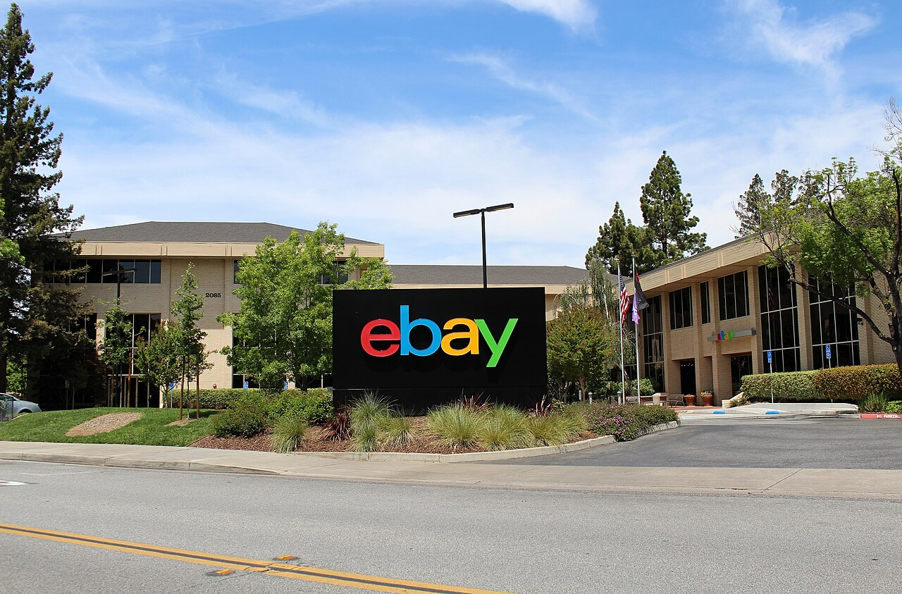
サンノゼのeBay本社（2018年撮影）。eBayは2002年10月3日にPayPalの買収を完了したCoolcaesar / CC BY-SA 4.0 / Wikimedia Commons マスクが会社の売却で得た額：資料による違い
単位：100万ドル。Zip2は1999年、PayPalは2002年。斜線の棒は推定値
Zip2売却（CNBC・Money） 22
PayPal：S-4の換算価値23.61ドル×651万株（推定） 約154
PayPal：CNBC 2017年（税引後） 160〜180
PayPal：Washington Post 2023年 約176
PayPal：Money 2017年（税引後） 180
PayPal：Fox Business 2023年 約250
eBay株で受け取ったため、評価額は株価の時点で変わる。税引前後の区別がない資料もある。
147 145 その後のPayPalとX.com
2007年10月 36歳 米カリフォルニア州 サンフランシスコ Tosca Cafe
「PayPal Mafia」の写真にマスクはいなかった Fortuneは2007年11月の記事で、PayPal出身の起業家と投資家を「PayPal Mafia」と呼んだ。サンフランシスコのTosca Cafeで撮影された写真には、ティールとレヴチンのほか、ホフマンやサックスらが並んだ125
マスクは撮影に参加する意向だったが、賞の授与式のためシカゴにいた。記事は、マスクが解任した側と和解し、ティールのClarium Capitalやサックスの会社に投資していると書く。マスクは、自分とティールとレヴチンは思想の上で一致していないとも語った125 163 149 164
写真（外部） Tosca CafeでのPayPal出身者の集合写真（Robyn Twomey撮影） Fortune 2007年11月 ピーターとマックスと私は、思想の上で一致しているわけではないPeter, Max, and I are not directly aligned philosophically イーロン・マスク、2007年、Fortuneの取材に
イーロンの最も優れた能力の一つは、自分の構想を天からの命令であるかのように示せることだOne of Elon's greatest skills is the ability to pass off his vision as a mandate from heaven マックス・レヴチン、2007年12月、Inc.誌の取材に
2017年7月 46歳 米カリフォルニア州
x.comのドメインをPayPalから買い戻す 2017年7月、マスクはPayPalからドメイン名x.comを買い戻した。PayPalの広報担当者は、以前の所有者に売却できて喜ばしいと述べた。価格は公表されていない145 148 149
2022年にTwitterを440億ドルで買収したマスクは、2023年7月にサービス名をXに変えた。X.comへのアクセスはTwitterに転送されるようになった165 165 150
ついにX.comを、本来なされるべきだった形で実現できることに大いに興奮している。Twitterを加速装置として使うvery excited about finally implementing X.com as it should have been done, using Twitter as an accelerant! イーロン・マスク、Twitter買収後にアイザックソンへ送ったメッセージ（CBS News 2023年7月による）
今のところ計画はないが、私にとって大きな思い入れがあるNo plans right now, but it has great sentimental value to me. イーロン・マスク、2017年7月、x.comの買い戻しについてTwitterに投稿
5 第5章 ミサイルの値段とクェゼリンの4発SpaceX and Falcon 1, 2001 to 2008 PayPal の売却で現金を得たマスクは、2001年に火星へ植物を送る計画を立て、ロシアで中古の大陸間弾道ミサイルを購入しようとした。交渉は価格で決裂し、帰りの機内で自社製造の試算を始めたことが SpaceX の起点になった。2006年から2008年にかけて Falcon 1 は3回続けて失敗し、4回目の成功から3か月後に NASA の16億ドルの契約を得た。
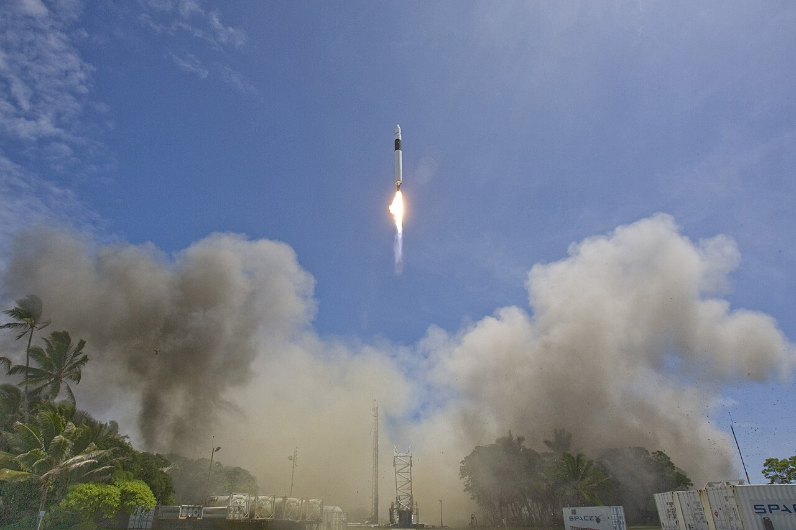
2008年9月28日、クェゼリン環礁オメレク島から打ち上げられる Falcon 1 の4号機。民間が独自に開発した液体燃料ロケットとして初めて地球周回軌道に到達したSpaceX / CC0 / Wikimedia Commons 火星の温室とモスクワの交渉
SpaceX は輸送会社として始まったわけではない。出発点は火星に生物を送る慈善事業の構想であり、そのためのロケットを安く購入する交渉がロシアで決裂した。
2001年 29〜30歳 米国
火星協会に10万ドルを寄付し、Life to Mars 財団を構想する 2001年半ば、ロバート・ズブリンが率いる火星協会は1人500ドルの資金集めの夕食会を開いた。招待した覚えのないマスクから5,000ドルの小切手が届き、ズブリンはマスクを夕食会の前のコーヒーに誘った。マスクは協会の理事に加わり、砂漠に設ける研究基地のために10万ドルを追加で寄付した166
同じ年、マスクは大学時代の友人アデオ・レッシ、航空宇宙の調達に詳しいジム・カントレルと Life to Mars という組織を立ち上げた。当初の構想はマウスを火星に送るものだった。専門家を集めた会合では、植物を育てる小型の温室を火星に送る Mars Oasis という案に議論が移った。一行は最初にパリでアリアンスペースのロケットを検討したが、価格が高すぎた167 166
2001年10月 30歳 ロシア モスクワ
エコノミークラスでモスクワへ、改修済みのミサイルを購入する交渉 2001年10月下旬、マスクはカントレルとレッシを連れてモスクワへ向かった。手元には数千万ドルの資金があったが、一行はエコノミークラスで移動した。目的は新品ではなく改修済みの大陸間弾道ミサイルを購入することだった166
レッシはこの計画に反対していた。ロケットが爆発する動画のリンクをマスクに送り、友人を集めて説得の場も設けた。カントレルによれば、レッシはカントレルを脇に呼び「慈善のつもりか。正気ではない」と話したという。一行は NPO ラボチキンやコスモトラスと面会したが、成果はなかった166
そのあとロシアの宇宙開発の関係者との会合が始まった。基本的にウォッカで動いている組織だったThen we started having meetings with the Russian space program, which is basically fueled by vodka. アデオ・レッシ、2012年の Esquire 誌の取材で（Inverse 2017年8月2日の引用による）
2001年 29〜30歳 米国 ロサンゼルス
ロシア側が現金5,000ドルを要求し、ホテルから借りて支払う 交渉の途中でロシア側の担当者がロサンゼルスを訪れ、協議を続ける条件として現金5,000ドルを求めた。マスクとレッシはウエストハリウッドのモンドリアン・ホテルからこの現金を借りて渡した。この経緯は2012年の Esquire 誌でレッシとカントレルが証言したものである167
2002年2月 30歳 ロシア モスクワ
マイク・グリフィンを伴った3度目の会合、価格で決裂する 2002年2月の訪問には、のちに NASA 長官となるマイケル・グリフィンが同行した。マスクは3基のミサイルを求め、現金を詰めた鞄を持参していた。交渉の相手はコスモトラスで、会場はモスクワ中心部に近い革命前の古い建物だった166
提示された価格には諸説ある。Esquire 誌のカントレルの証言では、マスクは3基で2,100万ドルを支払う用意をしていたが、ロシア側は1基あたり2,100万ドルを求めた167 166
彼らはこう言った。「坊や、金がないのか」They said, 'Oh, little boy, you don't have the money?' ジム・カントレル、2002年2月のモスクワでの交渉を回想して（Esquire 2012年、Inverse の引用による）
2002年2月 30歳 モスクワから米国への機内
帰りの機内で表計算を作成し、自社製造を宣言する 帰国便の機内でカントレルとグリフィンは酒を頼んで乾杯し、前の列のマスクはノートパソコンに向かっていた。しばらくしてマスクは振り返り、作成した表計算を見せた。そして、このロケットは自分たちで製造できると告げた166 167
この場面はカントレルの証言に依拠している。発言の文言は資料によって少しずつ異なる。
ロケットは自分たちで造れると思うI think we can build a rocket ourselves. イーロン・マスク、2002年2月、モスクワからの帰国便で（カントレルの証言による）
エルセグンドの倉庫からオメレク島へ
2002年3〜8月 30〜31歳 米国 カリフォルニア州エルセグンド
1310 East Grand Avenue の倉庫で SpaceX が始まる SpaceX が2026年に SEC へ提出した書類によれば、Space Exploration Technologies Corp. は2002年3月14日にデラウェア州法人として設立された168 166 169
最初の拠点はエルセグンドの 1310 East Grand Avenue にある倉庫だった。広さはヴァンスの伝記では7万5,000平方フィート、2003年の Los Angeles Times では2万5,000平方フィートで、資料によって異なる。TRW 出身のエンジン技術者トム・ミューラーは6月の創業時に参加した166 169 170
ロケット産業にもいずれヘンリー・フォードが必要になる。イーロンがその人物かもしれないAt some point the rocket industry needs a Henry Ford, and maybe Elon will be that guy. マイケル・グリフィン、当時 In-Q-Tel 社長。Los Angeles Times 2003年4月22日の取材で
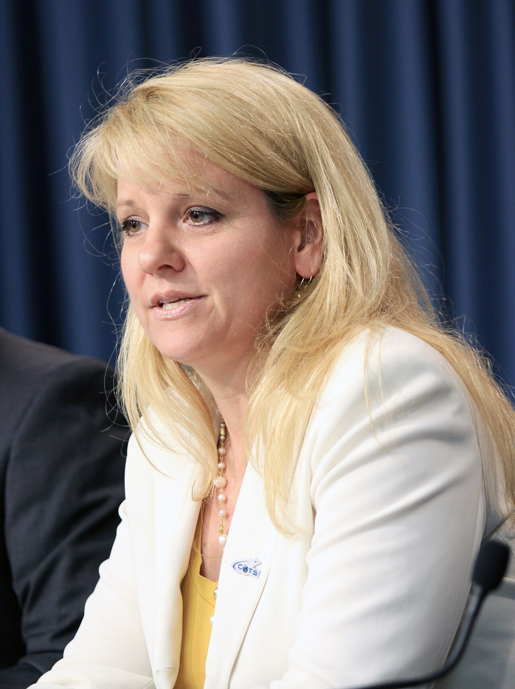
2012年、Falcon 9 の3号機の打ち上げ前の記者会見で話すグウィン・ショットウェル。2002年に事業開発担当の副社長として入社し、のちに社長兼最高執行責任者となったNASA/Jim Grossmann / Public domain / Wikimedia Commons 2003年12月4日 32歳 米国 ワシントンD.C.
Falcon 1 の実機を連邦航空局の前に展示する 創業から1年半後、SpaceX は Falcon 1 の機体をトレーラーに載せ、ワシントンD.C.の連邦航空局の建物の前に展示した。打ち上げの許認可を出す当局の前で、機体が実在することを示す展示だった171
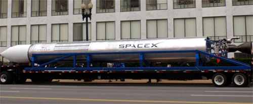
2003年12月4日、ワシントンD.C.の連邦航空局の前に展示された Falcon 1SpaceX / CC BY-SA 3.0 / Wikimedia Commons 2005年 33〜34歳 米国 ヴァンデンバーグ空軍基地 → マーシャル諸島 クェゼリン環礁
ヴァンデンバーグの順番を待てず、太平洋の島に移る SpaceX は2005年5月、ヴァンデンバーグ空軍基地の発射台で Falcon 1 の5秒間の燃焼試験を行った。しかし同じ基地から7月に最後の Titan IV が打ち上げられる予定で、マスクは自社の飛行経路が数十億ドル規模のこの打ち上げに小さな危険を与えると書いた。打ち上げの時期は Titan IV の後になる見込みだった172 166
移転先は米陸軍のレーガン試験場があるクェゼリン環礁のオメレク島である。ショットウェルが試験場の大佐に電子メールを送り、3週間後に陸軍から受け入れの返事が届いた。社員は数か月かけて島の茂みを刈り払い、二連結のトレーラーを事務所に改造した166 173
2005年8月の時点で、1号機は国防高等研究計画局と空軍の任務として空軍士官学校の衛星 FalconSAT-2 を載せ、クェゼリンから打ち上げる計画になっていた。同じ更新でマスクは、空軍から最大1億ドルの Falcon 1 の打ち上げ契約を得たと書いた172 174
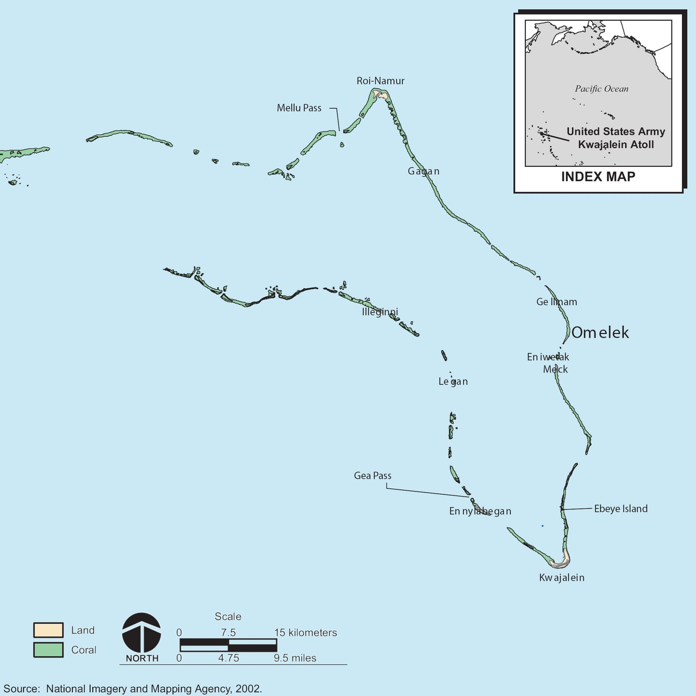
クェゼリン環礁の地図。オメレク島は環礁の東側にあり、南端のクェゼリン島から作業員が船で通ったUS Army Space & Missile Defense Command / Public domain / Wikimedia Commons 3回の失敗
2006年3月24日 34歳 クェゼリン環礁 オメレク島
1号機、燃料漏れの火災で発射台から約76メートルの岩礁に墜落する Falcon 1 の1号機は2006年3月24日、カリフォルニア時間の午後2時30分を予定時刻として打ち上げられた。搭載したのは空軍士官学校の小型衛星 FalconSAT-2 である。マスクは翌日の SpaceX の更新で、打ち上げ直後から燃料漏れによる火災がエンジン上部で起きていたと書いた。火災は1段目のヘリウムの空気圧系統を損傷させ、エンジンは T+29秒に停止した175 176
翌日、キンバルの署名で書かれた現地のブログは、ロケットが発射台から約250フィートの死んだ岩礁に衝突したと記録した。衝突の勢いで衛星は空中に投げ出され、作業小屋の屋根を突き破り、大きな損傷のないまま床に達した177 166 176 178
SpaceX は長期戦のつもりでいる。何があろうと、私たちはこれを成功させるSpaceX is in this for the long haul and, come hell or high water, we are going to make this work. イーロン・マスク、2006年3月25日、1号機の失敗の翌日に SpaceX のウェブサイトの更新で
2006年8月18日 35歳 米国 ワシントンD.C. NASA本部
NASA の COTS 計画で2億7,800万ドルの契約を得る 1号機の失敗から5か月後、NASA は国際宇宙ステーションへの物資輸送を民間に開発させる COTS 計画の第1段階で、SpaceX とロケットプレーン・キスラーを選んだ。応募は20社だった179 180 181
当時の NASA 長官は、2002年にモスクワへ同行したグリフィンだった。ロケットプレーン・キスラーは合意したマイルストーンを達成できず、NASA は2007年10月に合意を打ち切った181 182
2007年3月21日 35歳 クェゼリン環礁 オメレク島
2号機、高度289キロに達した後に2段目が回転を始める 2号機はカリフォルニア時間2007年3月20日午後6時10分、協定世界時では21日1時10分に打ち上げられた。マスクはこの2回の試験飛行の費用を国防高等研究計画局と空軍が負担したと書いている183 184 185
エンジンは打ち上げから約7分30秒後に予定より約1分30秒早く停止した。到達した高度は289キロ、速度は秒速5.1キロで、軌道に必要な秒速7.5キロに届かなかった184
2008年8月2日 37歳 クェゼリン環礁 オメレク島
3号機、段の分離に失敗し宇宙飛行士の遺灰も失われる 3号機は米国東部時間2008年8月2日午後11時34分、現地時間では8月3日午後3時34分に打ち上げられた。発射の直前に雷雨が島の上を通過し、打ち上げを指揮したティム・ブッザが射場の司令官と交渉して打ち上げ可能な時間帯を10分延ばした186 173 187 188 186
打ち上げから約2分40秒後、分離した1段目が2段目に再び衝突した186 173 189 173
私について言えば、決してあきらめない。本当に決してだFor my part, I will never give up and I mean never. イーロン・マスク、2008年8月2日、3号機の失敗後に社員へ向けた文書で（SpaceX のウェブサイトに掲載）
2008年8月4日 37歳 米国 カリフォルニア州
PayPal 時代の仲間のファウンダーズ・ファンドが2,000万ドルを出資する 失敗の2日後、マスクは PayPal の共同創業者たちが運営するファウンダーズ・ファンドから2,000万ドルの出資を受けたと発表した。同ファンドのルーク・ノゼックが SpaceX の取締役に加わった190 191 189
同じ文書でマスクは、4号機は飛行の準備が最終段階にあり、5号機もその後に控えていると書いた。6号機の製造開始も指示し、Falcon 9 の開発も止めないとした189 186 192
2008年8〜9月 36〜37歳 ロサンゼルスからハワイ、クェゼリン環礁へ向かう輸送機の機内
4号機を軍の輸送機で空輸し、降下中に機体がつぶれる SpaceX は残る1機の機体を船ではなく軍の C-17 輸送機でクェゼリンへ運んだ。ホノルルへの降下中、機内の気圧の上昇で厚さ8分の1インチに満たない1段目の機体がつぶれ始めた。アビオニクス担当のビュレント・アルタンらは操縦士に上昇を求め、約30分のうちにナットを緩めて機体の内外の圧力をそろえた166 193
機体は数か所がへこみ、燃料の揺れを抑える内部の仕切り板も壊れていた。修理に3か月かかる見込みだったが、マスクはそのままクェゼリンへ向かうよう指示し、部品を持たせた応援の班を送った。機体は2週間で修理された166
2008年 36〜37歳 米国 カリフォルニア州
PayPal の1億8,000万ドルを2社に投じ、資金が尽きる 2014年の CBS「60 Minutes」によれば、マスクは PayPal 売却で得た1億8,000万ドルをすべて Tesla と SpaceX に投じた。弟のキンバルは当時の兄の状態を「借金がある。破産以上だ」と述べた。マスク本人は「その時点でほとんど資金がなかった」と語った194
同じ年、マスクは離婚の手続きの最中だった。Tesla も2008年には負債を抱えていた195 166
映像（外部） スコット・ペリーによるマスク兄弟の取材「Fast Cars and Rocket Ships」 CBS 60 Minutes 2014年3月30日 3回の失敗でも十分に悪い。4回失敗すれば本当に終わりだIt's bad enough to have three strikes, having four strikes is really kaput. イーロン・マスク、2008年の状況を振り返って（CBS「60 Minutes」2014年3月30日放送）
4号機と12月23日の電話
2008年9月28日 37歳 クェゼリン環礁 オメレク島 / カリフォルニア州ホーソーン
4号機が軌道に到達し、ホーソーンの社員の前で語る 4号機は米国太平洋時間2008年9月28日午後4時15分、協定世界時では23時15分に打ち上げられた。積荷は本物の衛星ではなく、SpaceX が製造した約165キロの質量模擬体「Ratsat」である。マレーシアの RazakSAT は次の5号機に回された196 197 196
2段目は軌道に到達した後に再着火にも成功した。マスクはホーソーンの本社で社員に向かい、軌道に到達したことを「巨大な猿を背中から降ろせた」と表現した。軌道到達は通常は国家が行うもので、企業が行うものではないとも述べた197 198 199
マスクは同じ場で、交渉中の Falcon 9 の契約の多くは Falcon 1 の軌道到達を前提にしていたと明かした197 198
私たちにはできないと考えた人が大勢いた。しかし言い習わしのとおり、4度目の正直だThere are a lot of people that thought we couldn't do it, but as the saying goes, fourth time's the charm. イーロン・マスク、2008年9月28日、ホーソーンの本社で社員に向けて
私が感じているのは、高揚よりも安堵のほうがはるかに大きいThe emotion I feel is much more relief than elation. イーロン・マスク、2008年9月28日、Falcon 1 の4号機の打ち上げ後に
2008年12月23日 37歳 米国 ワシントンD.C. NASA本部
NASA が国際宇宙ステーションへの補給で16億ドル・12回の契約を発表する NASA は商業補給サービス CRS の契約先に SpaceX とオービタル・サイエンシズを選んだ。発注時点の内訳は、SpaceX が12回で約16億ドル、オービタルが8回で約19億ドルである。契約期間は2009年1月1日から2016年12月31日までで、各社に最低20トンの物資輸送を求めた。各契約の上限額は約31億ドルである200 201 202 203
契約時点で SpaceX が使う予定の Falcon 9 と Dragon は、まだ一度も飛んでいなかった201 204 195
NASA から電話があり、15億ドルの契約を獲得したと告げられたNASA called and told us that we'd won a $1.5 billion contract. イーロン・マスク、2008年のクリスマスの週を振り返って（CBS「60 Minutes」2014年3月30日放送）。発注時点の公表額は約16億ドル
2008年12月24日 37歳 米国 カリフォルニア州
2日後、Tesla の投資家が追加出資を決める NASA の発表の2日後のクリスマス・イブに、Tesla の投資家は追加の資金を出すことを決めた。「60 Minutes」のペリーはこの2つを「3日の間に予期しない2つの出来事で救われた」とまとめた194 166
マスク本人は2008年を「間違いなく人生で最悪の年」と呼んだ。資金の枯渇、3回の打ち上げ失敗、離婚が同じ年に重なった195
それに、離婚の最中でもあった。あれは間違いなく人生で最悪の年だったAnd I'm getting divorced, by the way, add to that. That was definitely the worst year of my life. イーロン・マスク、スコット・ペリーの質問に答えて（CBS「60 Minutes」2014年3月30日放送）
6 第6章 着陸する1段目と2兆ドルの上場Reuse, Starlink and Starship, 2009 to 2026 2010年から2020年にかけて、SpaceX は NASA の補給と有人輸送を担う企業になり、2015年に軌道ロケットの1段目を初めて着陸させた。2019年に始まった Starlink は2026年に1,360万人の加入者を持つ収益源となり、ウクライナの戦場では通信の可否をマスク個人が決める事態も生じた。2026年2月に xAI を統合した SpaceX は6月に Nasdaq に上場し、初日の終値で時価総額は約2兆1,000億ドルに達した。
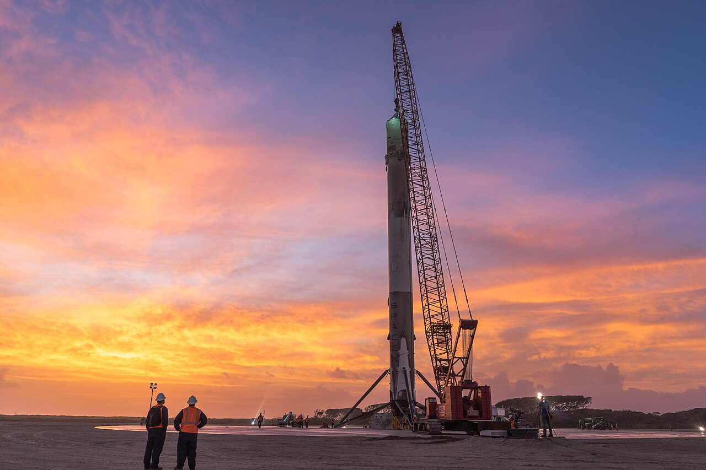
2015年12月22日早朝、ケープカナベラルのランディングゾーン1に立つ Falcon 9 の1段目。前夜に Orbcomm の衛星11基を打ち上げた後、発射場の近くに垂直に着陸したSpaceX Photos / CC0 / Wikimedia Commons Falcon 9 と Dragon
2010年6月4日 38歳 米国 フロリダ州 ケープカナベラル SLC-40
Falcon 9 の初飛行で Dragon の試験機を軌道に運ぶ Falcon 9 は協定世界時2010年6月4日18時45分、ケープカナベラル空軍基地の SLC-40 から初めて打ち上げられた。積荷は Dragon 宇宙船の地上試験用の機体で、2段目に固定されたまま高度約250キロの低軌道に到達した205 206
同じ年の12月には Dragon が初めて軌道を周回し、太平洋に着水して回収された。民間企業が製造した宇宙船が軌道から大気圏に再突入し、壊れずに帰還したのは初めてだった207 208
2012年3月18日 40歳 米国 カリフォルニア州ホーソーン（CBS「60 Minutes」）
アームストロングとサーナンの批判を問われ、言葉に詰まる CBS のスコット・ペリーは取材の中で、月面を歩いたニール・アームストロングとユージン・サーナンが民間の宇宙輸送に懐疑的な証言を議会でしたことを伝えた。マスクは「非常に悲しかった」と答え、2人は自分の英雄だと話した。CBS によれば、マスクはアームストロングの名前が出た時点で感情を抑えられなくなった209 210
放送後、アームストロングは文脈を切り取られたとする書簡を番組に送った。CBS は同年6月、懸念は新規参入者全般に向けたもので SpaceX に特定したものではなかったと訂正した211 212 213
あの人たちは私の英雄なので、本当につらい。ここに来て、私たちの仕事を見てほしい。そうすれば考えが変わると思うThose guys are heroes of mine, so it's really tough … I wish they would come and visit … see the hard work that we're doing here and I think that it would change their mind. イーロン・マスク、スコット・ペリーの質問に答えて（CBS「60 Minutes」2012年3月18日放送）
2012年5月25日 40歳 国際宇宙ステーション
Dragon が民間の宇宙船として初めて国際宇宙ステーションに結合する 5月22日にケープカナベラルから打ち上げられた Dragon は、25日に国際宇宙ステーションに接近した。ドン・ペティット飛行士がロボットアームで捕獲し、米国東部時間12時02分にハーモニー・モジュールへの結合が完了した。COTS 計画の2回目の実証飛行である214 215
Dragon は1,000ポンドを超える物資を届け、1,300ポンドを超える機材を積んで5月31日に太平洋に着水した。Dragon は、国際宇宙ステーションの補給機のうち大量の機材を地球へ回収できる唯一の機体になる予定だった215
写真（外部） 国際宇宙ステーションのロボットアームが Dragon を捕獲する瞬間 NASA 2012年5月25日 2015年1月 43歳 米国
Google が主導する10億ドルの資金調達 2015年1月、Google が主導する10億ドルの資金調達が行われた。この時の企業価値は約120億ドルとされる216 217 218
フィデリティの運用担当者だったギャビン・ベイカーは、この年に SpaceX 株の取得を始めた。上場前の2026年3月末の時点で、フィデリティの3つの大型投資信託は資産の2.6〜4.7%を SpaceX 株で保有していた218
失敗と着陸
2015年6月28日 44歳 米国 フロリダ州 ケープカナベラル
CRS-7、打ち上げ2分18秒後に2段目が破損する 国際宇宙ステーションへの7回目の補給便は、打ち上げから2分18秒後に失われた。2段目の液体酸素タンク内でヘリウムタンクを固定する支柱が破断したことが原因とされた。支柱は1万ポンドの力に耐える材料として認証されていたが、実際には2,000ポンドで破断した219
Dragon には4,000ポンドを超える物資が積まれていた。NASA は失われた積荷の価値を約1億1,000万ドルと見積もり、保険は掛けられていなかった。マスクは、適切なソフトウェアがあれば Dragon は救えたと述べた219
2015年12月21日 44歳 米国 フロリダ州 ケープカナベラル LZ-1
軌道ロケットの1段目が初めて陸上に垂直着陸する CRS-7 の失敗から約半年後の飛行再開で、Falcon 9 は Orbcomm の通信衛星11基を打ち上げた。1段目は米国東部時間午後8時29分の打ち上げから約9分後に、発射地点の約6マイル南にあるランディングゾーン1に着陸した220 221
1年3か月後の2017年3月30日には、回収した1段目を再び使い SES-10 衛星を打ち上げた。SpaceX が一度飛行した1段目を再び打ち上げたのは初めてだった222
2016年9月1日 45歳 米国 フロリダ州 ケープカナベラル SLC-40
エンジン燃焼試験の前に Falcon 9 が爆発し、Facebook の衛星が失われる 静止衛星 AMOS-6 を載せた Falcon 9 が、発射台での燃焼試験に向けた推進剤の充填中に爆発した。負傷者はいなかった。衛星はイスラエルのスペースコム社のもので、Facebook とユーテルサットは5年間で9,500万ドルを支払い、サハラ以南のアフリカでのインターネット接続に使う予定だった223
スペースコムは2012年、この衛星を2億ドルで調達することを決めていた224 225
アフリカにいる今、SpaceX の打ち上げの失敗で私たちの衛星が失われたと聞き、深く失望しているAs I'm here in Africa, I'm deeply disappointed to hear that SpaceX's launch failure destroyed our satellite マーク・ザッカーバーグ、2016年9月1日、Facebook への投稿
ロードスターと有人飛行
2018年2月6日 46歳 米国 フロリダ州 ケネディ宇宙センター 39A 発射台
Falcon Heavy の初飛行で自分の Tesla Roadster を太陽周回軌道に送る Falcon 9 の1段目を3本束ねた Falcon Heavy が初めて打ち上げられた。積荷は試験用の重りではなく、マスクが私物として使っていた赤い Tesla Roadster である。運転席には宇宙服を着たマネキン「Starman」が座った226 227 228
2段目は最後の噴射で計画を上回る速度を出し、ロードスターは火星の軌道の外側まで達する太陽周回軌道に入った226 229
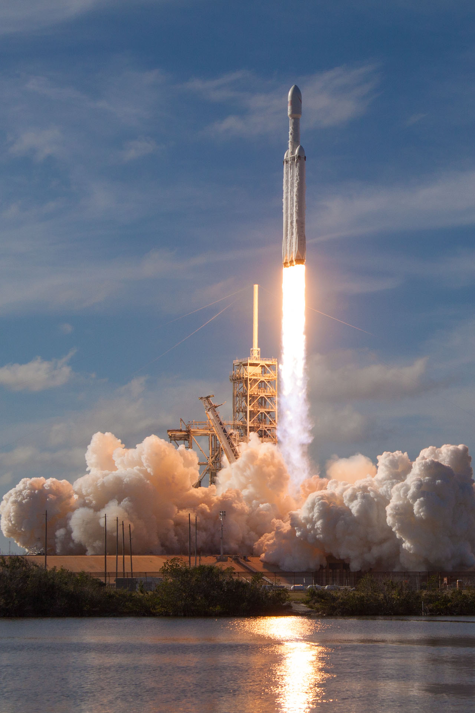
2018年2月6日、ケネディ宇宙センター39A発射台から打ち上げられる Falcon Heavy の初号機。両側の2本の1段目はケープカナベラルに同時に着陸したSpaceX / CC0 / Wikimedia Commons 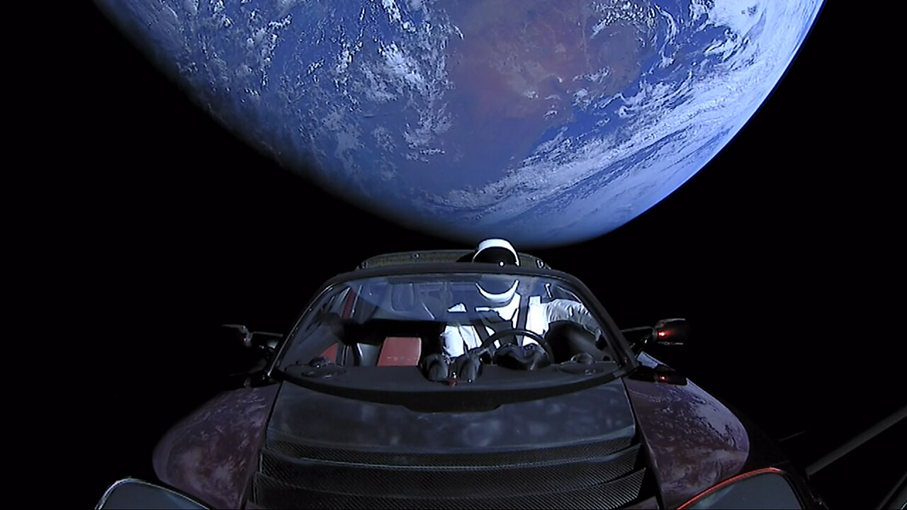
地球を背景に宇宙空間を進む Tesla Roadster と、運転席の Starman。2段目に取り付けたカメラが撮影したSpaceX / CC0 / Wikimedia Commons 少しばかげていて楽しいことだが、ばかげていて楽しいことは重要だと思うIt's kind of silly and fun, but I think that silly and fun things are important イーロン・マスク、2018年2月6日、Falcon Heavy の打ち上げ後の記者会見で
2018〜2024年 46〜53歳 米国 / 日本
前澤友作の月周回計画 dearMoon、Starship の遅れで中止となる 2018年、ZOZO の創業者の前澤友作が、当時 BFR と呼ばれていた Starship で月の周りを飛行する計画 dearMoon を発表した。人を乗せて月を回る最初の Starship の飛行になる予定だった。2022年末には同乗する8人が発表された230
前澤は2024年6月1日、計画の中止を発表した。2018年の契約は2023年末までの打ち上げを前提にしていたが、Starship の準備が整う時期が見通せないことを理由に挙げた231 230 232
2019年5月23日 47歳 米国 フロリダ州 ケープカナベラル
Starlink の最初の60基を1回の打ち上げで軌道に送る SpaceX は通信衛星網 Starlink の衛星60基を Falcon 9 で一度に打ち上げた。計画上の衛星数は約1万2,000基だった233 234
2020年5月30日 48歳 米国 フロリダ州 ケネディ宇宙センター
Demo-2 でハーリーとベンケンを国際宇宙ステーションに運ぶ Crew Dragon は NASA の飛行士ダグ・ハーリーとボブ・ベンケンを乗せて打ち上げられ、5月31日に国際宇宙ステーションに結合した。2人は8月2日に地球に帰還した。米国の地上から飛行士が打ち上げられたのは、2011年のスペースシャトル退役から9年ぶりである235
打ち上げ後の記者会見で、マスクは感情を抑えられない様子を見せた236
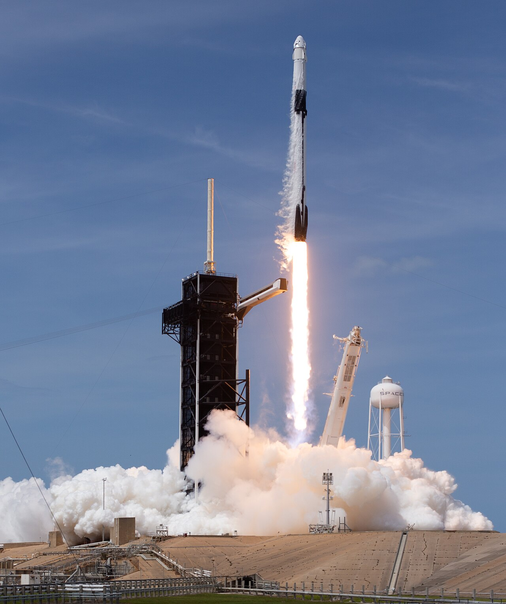
2020年5月30日、ケネディ宇宙センター39A発射台から打ち上げられる Demo-2 の Falcon 9。先端の Crew Dragon にハーリーとベンケンが搭乗していたJoel Kowsky / Public domain / Wikimedia Commons 今日は本当に感情があふれていて、正直なところ話すのが難しいI'm really quite overcome with emotion on this day, so it's kind of hard to talk, frankly. イーロン・マスク、2020年5月30日、ケネディ宇宙センターでの打ち上げ後の記者会見で
ウクライナの通信
2022年2月26日 50歳 ウクライナ / X（旧 Twitter）
ウクライナの副首相の要請に、同じ日のうちに Starlink の開通を返信する ロシアの侵攻で国内の通信網が攻撃を受ける中、ウクライナのミハイロ・フェドロフ副首相は Twitter でマスクに Starlink の端末の提供を求めた。マスクは同じ日のうちに、Starlink がウクライナで利用可能になったと返信した237 238
2月28日、フェドロフは端末を積んだトラックの写真とともに到着を報告した237 239
あなたが火星を植民地にしようとしている間に、ロシアはウクライナを占領しようとしている@elonmusk, while you try to colonize Mars — Russia try to occupy Ukraine! ミハイロ・フェドロフ ウクライナ副首相、2022年2月26日、Twitter への投稿の冒頭
2022年9〜10月 50〜51歳 クリミア半島 セヴァストポリ沖
セヴァストポリへの無人艇攻撃と Starlink の通信範囲 2023年9月7日に Washington Post が掲載したアイザックソンの伝記の抜粋は、ウクライナ軍がセヴァストポリのロシア黒海艦隊を無人艇で攻撃しようとした際の経緯を記した。抜粋によれば、マスクは技術者にクリミア沿岸から100キロ以内の通信を止めるよう秘密裏に指示し、無人艇は接続を失って岸に打ち上げられた240
マスクは同じ日に X で、対象の地域はもともと開通しておらず SpaceX は何も停止していないと反論した。政府当局からセヴァストポリまで開通させる緊急の要請があったが応じなかったという。Washington Post は、この出来事を2022年10月のこととしている240 239 239
もし要請に応じていれば、SpaceX は大規模な戦争行為と紛争の拡大に明確に加担することになったIf I had agreed to their request, then SpaceX would be explicitly complicit in a major act of war and conflict escalation. イーロン・マスク、2023年9月7日、X への投稿
Starship
2023年4月20日 51歳 米国 テキサス州 スターベース
Starship の1回目の統合試験飛行、約4分で機体を失う Super Heavy の Booster 7 と Ship 24 を組み合わせた Starship は、現地時間午前8時33分に打ち上げられた。33基のエンジンのうち点火したのは30基で、打ち上げ約1分20秒後までにさらに2基が停止した。段の分離ができずに機体は回転を始め、約4分後に飛行停止装置が作動した241 242
発射台には炎を逃がす溝も散水設備もなく、破壊されたコンクリートの破片は約385エーカーの範囲に散らばった。粉砕されたコンクリートは発射台の北約6.5マイルの地点でも確認された243 244 242
2024年10月13日 53歳 米国 テキサス州 スターベース
5回目の試験飛行で、発射塔のアームがブースターを捕獲する 5回目の試験飛行で、Super Heavy の Booster 12 は打ち上げの数分後に発射場へ戻り、発射塔の2本のアームが降下するブースターを空中で捕獲した245 246 247
Space.com によれば、捕獲は中止の判断まで約1秒という状態で実行された248
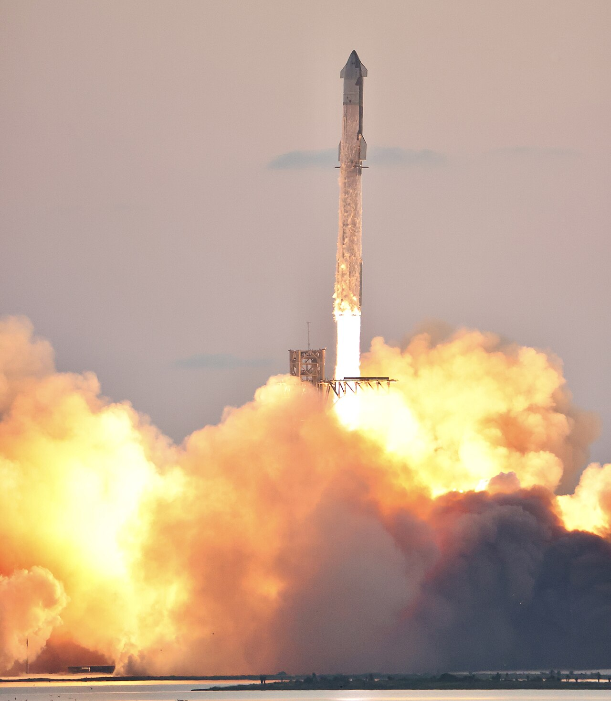
2024年10月13日、テキサス州スターベースから打ち上げられる Starship の5回目の試験飛行。この飛行で Super Heavy が初めて発射塔に捕獲されたSteve Jurvetson / CC BY 2.0 / Wikimedia Commons 2025年 53〜54歳 米国 テキサス州 スターベース / ワシントンD.C.
第2世代の Starship が3回続けて失われ、大統領との対立で Dragon の退役を表明する 2025年1月16日の7回目と3月6日の8回目と5月27日の9回目の試験飛行では、いずれも上段の Ship が失われた。8月26日の10回目は Starlink の模擬衛星8基を放出して予定どおり着水し、10月13日の11回目で第2世代の飛行を終えた245
この間の6月5日、マスクは税制と歳出の法案をめぐってトランプ大統領と公の場で対立した。大統領がマスクの企業との政府契約の打ち切りに言及すると、マスクは X で Dragon の退役を直ちに始めると投稿した。Dragon は当時、米国の飛行士を国際宇宙ステーションに運ぶ唯一の米国の機体だった。数時間後、マスクは「冷静になれ」と促す利用者の投稿に応じ、退役はしないと書いた249 250
大統領が私の政府契約の打ち切りに言及したことを受け、SpaceX は Dragon 宇宙船の退役を直ちに開始するIn light of the President's statement about cancellation of my government contracts, @SpaceX will begin decommissioning its Dragon spacecraft immediately. イーロン・マスク、2025年6月5日、X への投稿（同日中に撤回）
xAI の統合と上場
2026年2月2日 54歳 米国 ネバダ州（登記） / X
SpaceX が xAI を統合し、宇宙での計算を掲げる マスクは自身のブログで SpaceX と xAI の統合を発表した。ネバダ州の公開記録では、統合は同日に完了している。xAI は2025年に X（旧 Twitter）を統合しており、X も SpaceX の傘下に入った251
統合時の評価額は SpaceX が約1兆ドル、合算で約1兆2,500億ドルと報じられた。xAI の評価額は約2,300億ドルとする報道と約2,500億ドルとする報道がある251 252 251
私の見積もりでは、2〜3年以内に AI の計算能力を最も安く得る方法は宇宙で行うことになるMy estimate is that within 2 to 3 years, the lowest cost way to generate AI compute will be in space. イーロン・マスク、2026年2月2日、SpaceX と xAI の統合を発表したブログで
2026年6月12日 54歳 米国 ニューヨーク Nasdaq
史上最大の新規株式公開、初日の終値で時価総額約2兆1,000億ドル SpaceX は5月20日に公開の登録届出書 S-1 を提出した。届出書によれば、2025年の売上高は前年比33%増の186億7,000万ドルで、純損失は49億4,000万ドルだった。2002年の創業以来の累積赤字は約413億ドルである253 254 20
6月11日、公開価格は1株135ドルに決まった。5億5,560万株を売り出して750億ドルを調達し、評価額は1兆7,700億ドルとなった。主幹事はゴールドマン・サックスである。翌12日に Nasdaq でティッカー SPCX として取引が始まり、終値は公開価格を19%上回る約161ドルだった20 255 256
PitchBook の推定では、マスクは上場前に株式の約42%を持っていた257 258 20 259 234
私は SpaceX が成功する確率を10%未満と見ていたI gave SpaceX a less than 10% chance of succeeding at all, イーロン・マスク、2026年6月12日、Nasdaq の取引開始の前に
SpaceX の企業価値の推移（2015年〜2026年）
単位：ドル。対数目盛で、目盛が1つ進むと10倍になる。2026年2月までは非上場時の資金調達・株式売却での評価額、6月以降は上場後の評価額
2015年1月 Google・フィデリティの出資 約100億
2017年 資金調達 212億
2021年2月 資金調達 740億
2021年10月 株式売却 1,003億
2023年7月 株式売却 約1,500億
2023年12月 株式売却 1,800億
2024年12月 株式売却 3,500億
2025年12月 株式売却 8,000億
2026年2月 xAI 統合時（合算） 1兆2,500億
2026年6月11日 公開価格 1兆7,700億
2026年6月12日 上場初日の終値 約2兆1,000億
2026年10月20日 第3四半期決算時 約2兆
10億 100億 1,000億 1兆 10兆
2026年5〜9月 54〜55歳 米国 テキサス州 スターベース 第2発射台
第3世代の Starship が初めて地球周回軌道に入る 第3世代の初飛行となる12回目の試験飛行は2026年5月22日に行われ、Ship は予定どおりの経路を飛んだがブースターは激しく着水した。7月24日の13回目では、Starlink の第3世代衛星20基を弾道飛行の経路で放出した245
9月28日の14回目で、Starship は初めて地球周回軌道に入り、第3世代の Starlink 衛星26基を放出した245 265 265
写真（外部） ハワイ北方の太平洋に着水した Starship の14回目の試験飛行 Spaceflight Now 2026年9月28日 見事な打ち上げだ。Ship を軌道に運び、すべての段階を安全かつ責任ある形で、そして何より人を勇気づける形で進めたGorgeous launch, getting Ship to orbit and managing every step in a safe, responsible, and especially inspirational way. ジャレッド・アイザックマン NASA 長官、2026年9月28日、X への投稿
2026年10月20日 55歳 米国（決算発表）
上場後2回目の決算、売上高は前年同期比2.6倍の145億8,000万ドル 第3四半期の売上高は前年同期比161%増の145億8,000万ドルで、純利益は44億ドルだった。前年同期は10億5,000万ドルの純損失である。部門別の売上高は xAI を引き継いだ AI 部門が75億6,000万ドルで最も大きい。Starlink を含む通信部門は52億5,000万ドル、打ち上げ部門は17億7,000万ドルだった234
同じ四半期の設備投資は196億ドルで、うち164億ドル超が AI の計算設備に充てられた。決算説明の場でマスクは Tesla との合併について問われ、良い考えだと思うと答えた。合併には株主の支持が必要だとも述べた234
15回目の試験飛行は Booster 22 と Ship 42 を使い、ブースターと Ship の両方を発射塔で捕獲する計画である。10月下旬の時点で打ち上げ日は確定していない245
それが良い考えだと思うか。思うDo I think it would be a good idea? Yes イーロン・マスク、2026年10月20日、SpaceX の第3四半期決算の説明で Tesla との合併について
7 第7章 テスラの会長からCEOへTesla, 2003 to 2010 テスラは2003年7月にマーティン・エバーハードとマーク・ターペニングが登記した会社で、マスクは2004年のシリーズAで最大の出資者となり会長に就いた。Roadsterの開発が遅れて損失が増えると、取締役会は2007年にエバーハードをCEOから外し、マスクは2008年10月に自らCEOに就いた。資金が尽きる直前の2008年12月24日に調達を終えた後は、ダイムラーの出資とエネルギー省の4億6,500万ドルの融資を得た。トヨタとの提携を発表した翌月の2010年6月29日に上場した。
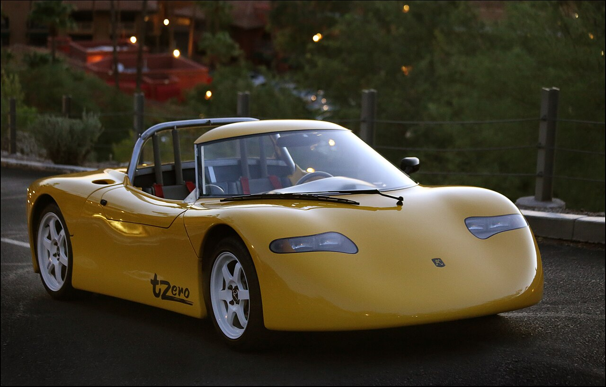
AC Propulsionの電気自動車tzero。1997年に製作された試作車で、エバーハードもマスクもこの車に乗ってから電気自動車の事業を構想したPete Gruber / CC BY-SA 4.0 / Wikimedia Commons tzeroと2人の創業者
2003年7月1日 32歳 米国 カリフォルニア州サンカルロス
エバーハードとターペニング、テスラ・モーターズを登記 マーティン・エバーハードとマーク・ターペニングは1997年に電子書籍端末Rocket eBookのNuvoMediaを創業し、1億8,700万ドルで売却した技術者である。2人はtzeroを商品化する会社としてテスラ・モーターズを設立した。登記はデラウェア州で、日付は2003年7月1日である266 267
この時点でマスクは会社にいない。エバーハードはAC Propulsionからtzeroを借り、2003年12月にはウッドサイドの飲食店Buck'sでベンチャー投資家に試乗させていた268
2003年秋〜2004年2月 31〜33歳 米国 カリフォルニア州ロサンゼルス近郊
ストローベルとの昼食と、tzeroの試乗を勧める1通のメール ストローベルはスタンフォード大学でエネルギーシステム工学を学んだ技術者で、2002年から2004年まで電動の高高度航空機を開発するVolacomの共同創業者兼最高技術責任者だった266 269 270
AC Propulsionは、トム・ゲージとアラン・コッコーニが率いる電気自動車の小さな会社だった。ゲージは2004年1月21日、マスクに宛てて、セルゲイ・ブリンとJB・ストローベルの2人があなたにtzeroの試乗を勧めたと書いた。試乗は2月4日に実施された。マスクは試乗の後にこの車を買い取りたいと申し出たが、ゲージは売り物ではないと断った。マスクは次に、電池をマスクのポルシェに載せる作業に25万ドルを出すと申し出たが、これも断られた268
ゲージはその数週間後、エバーハードに宛ててマスクを紹介するメールを送った。マスクの回想では、ゲージはエバーハードとターペニングとイアン・ライトの3人に会うかと尋ねた。マスクは承諾した268 270
セルゲイ・ブリンとJB・ストローベルの2人から、あなたが当社のtzeroに乗ってみたいのではないかと聞きましたSergey Brin and JB Straubel both suggested you might be interested in driving our tZero electric sports car. トム・ゲージ（AC Propulsion）、マスク宛てのメール、2004年1月21日（Charles J. Murray "The EV Guys" による）
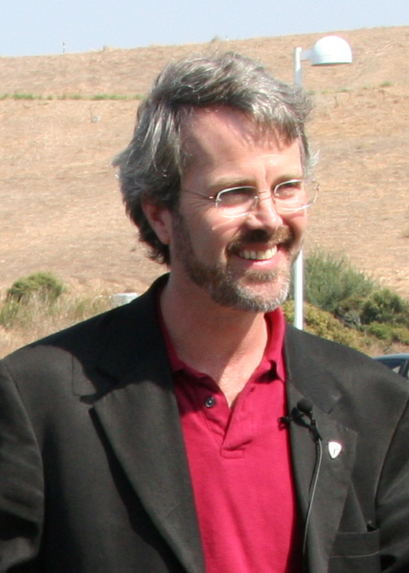
テスラの共同創業者で初代CEOのマーティン・エバーハード、2006年9月。翌2007年8月にCEOを退き、11月には経営から離れたNicki Dugan / CC BY-SA 2.0 / Wikimedia Commons 2004年春 32〜33歳 米国 カリフォルニア州エル・セグンド SpaceX本社
SpaceXでの面会の翌週、マスクが出資を決める エバーハードとライトはある金曜日にロサンゼルスへ飛び、SpaceXの執務スペースでマスクと面会した。設立から9か月の時点である。翌週の月曜日にエバーハードとターペニングが再びロサンゼルスを訪れ、マスクは635万ドルの出資を承諾した。Murrayの著書は、2005年1月末の取締役会で動作する試作車に乗ったマスクがさらに900万ドルを出し、1,300万ドルの調達が完了したと書く268
Charles Morrisの著書はマスクが2004年初めのシリーズAを主導し、私財750万ドルを出して支配的な出資者になったと書く267 266
マスクはこの年の4月から取締役会長を務めた。弟のキンバル・マスクも同じ4月に取締役に就いた。ストローベルは2004年3月に入社し、2005年5月から最高技術責任者を務めた266
イーロンに説明して、彼が出資を主導すると言った時点で、私たちは走り出したWe pitched Elon, and when he said that he would lead, then we were off to the races マーク・ターペニング、2004年のシリーズAを振り返って（Charles Morris "Tesla" による）
私は事実上、シリーズAの資金のすべてを出したSo I provided essentially, all of the Series A funding. イーロン・マスク、2009年7月のAutoblogGreenの取材で（転載版による）
Roadsterの遅れとエバーハードの退任
2006年7月19日 35歳 米国 カリフォルニア州サンタモニカ空港 Barker Hangar
350人を招いたRoadsterの発表会 テスラはサンタモニカ空港の格納庫で「Signature One Hundred」と名付けた招待制の催しを開き、Roadsterを初めて公開した。招待客は350人を超え、マイケル・アイズナーやジェフ・スコールらが来場した271 272
当日走った試作車は赤と黒の2台だった。ストローベルは後に、2台とも発表会の夜が終わるころにはほとんど壊れていたと振り返っている271 266
テスラRoadsterはガソリンを使わずにスポーツカーの性能を実現するThe Tesla Roadster delivers sports car performance without using any gasoline. マーティン・エバーハード（当時CEO）、2006年7月19日の発表文で
2006年8月2日 35歳 米国 カリフォルニア州
会長マスクが「秘密のマスタープラン」を公開する 発表会の2週間後、マスクは会社のブログに「The Secret Tesla Motors Master Plan (just between you and me)」と題する文章を書いた。最初の製品であるRoadsterの価格を8万9,000ドルと示し、より安価な車種へ順に移る計画を説明した273
文章の末尾には計画の要約がある。スポーツカーの製造、その資金による手頃な車の製造、さらに手頃な車の製造という3段階である。これに排出ゼロの発電手段の提供を加えた4項目になっている。末尾の1行は「誰にも言わないこと」である。転載された本文の署名は「共同創業者兼CEO」である。執筆時のマスクは会長で、CEOに就いたのは2008年10月である273 274
つまり、マスタープランはこうだ。スポーツカーを製造する。その資金で手頃な車を製造する。その資金でさらに手頃な車を製造するSo, in short, the master plan is: Build sports car / Use that money to build an affordable car / Use that money to build an even more affordable car イーロン・マスク、2006年8月2日、テスラのブログで
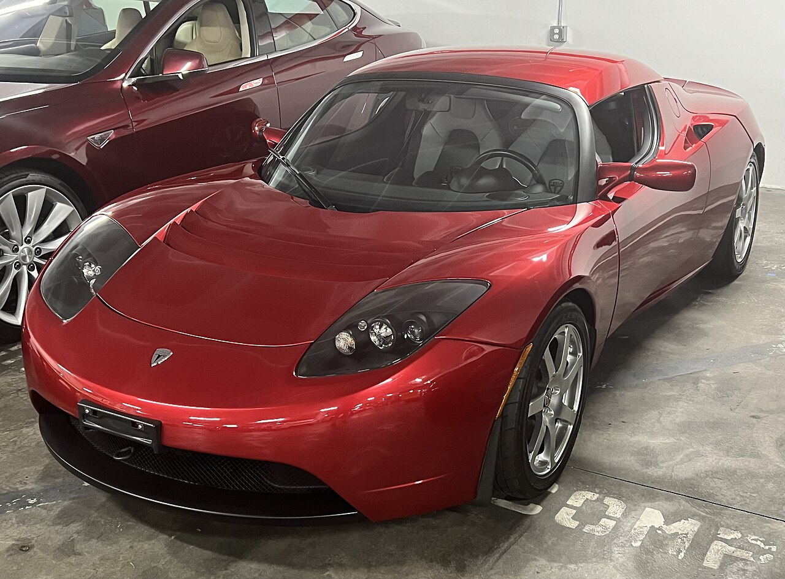
テスラ最初の量産車Roadster（2008年型）。米国の価格は10万9,000ドルで、2009年末までに18か国で937台を販売した。写真はピーターセン自動車博物館の展示車TaurusEmerald / CC BY-SA 4.0 / Wikimedia Commons 2006〜2008年 34〜37歳 米国 カリフォルニア州サンカルロス
Roadsterの開発費が当初の見積もりを超える テスラは最初の製品を高価格のスポーツカーRoadsterと定め、量産で費用を下げてから安価な車種に移る計画を立てた。純損失は2006年に3,000万ドル、2007年に7,820万ドル、2008年に8,280万ドルと増えた266
Tim Higginsの著書"Power Play"の要約によると、会長のマスクが独自の装備を求めて設計の変更を重ね、費用が初期の見積もりを上回った275 276 266
テスラの純損失（2006〜2009年）
単位：100万ドル。2009年は1〜9月の9か月分。上場申請書（S-1）の記載による
2006年 30.0
2007年 78.2
2008年 82.8
2009年1〜9月 31.5
2009年9月末の累積赤字は2億3,640万ドル。2009年はRoadsterの販売とダイムラー向けの電池の売上が計上された。
266 2007年8月 36歳 米国 カリフォルニア州サンカルロス
取締役会がエバーハードをCEOから外す エバーハードはCEOを退いて技術担当社長の肩書きになり、取締役のマイケル・マークスが暫定CEOに就いた。2007年8月13日に報じられた277 278
2007年11月にはゼエヴ・ドロリが正式なCEOに就き、エバーハードは諮問委員会に移って日常の経営から完全に離れた276 278
性格の違いの問題ではない。マーティンを助言役に移す決定は取締役会の全会一致だったIt was not a question of personality differences, as the decision to have Martin transition to an advisory role was unanimous among the board イーロン・マスク、2007年のエバーハード退任時の説明（Business Insider 2023年2月の記事による）
2008年の危機
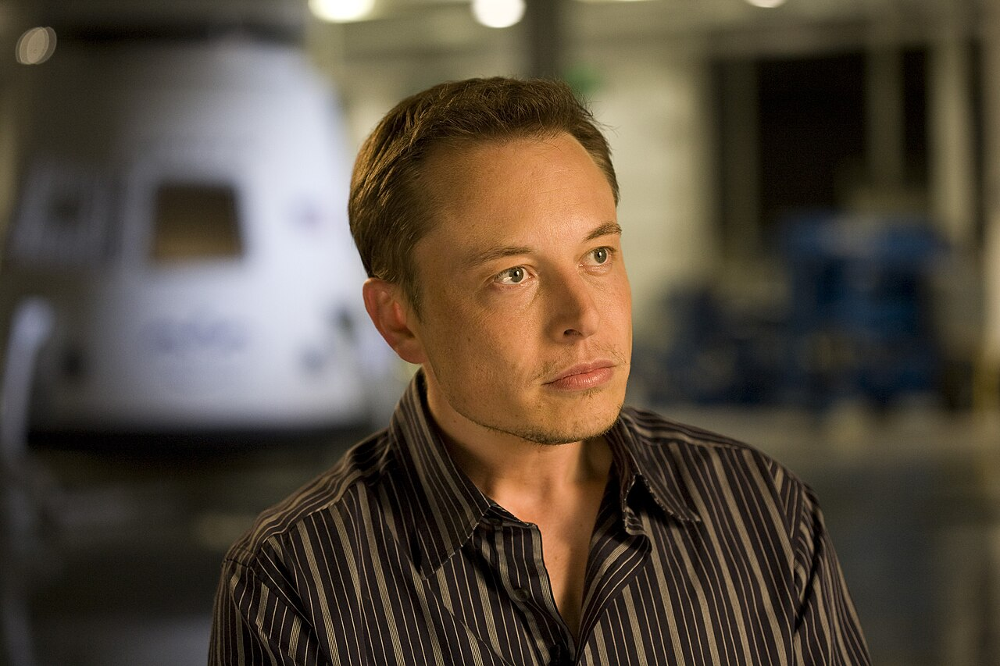
SpaceXの工場で取材に応じるマスク、2008年6月26日。ヘンリー・フォード博物館の聞き取り事業による撮影。この年の秋にマスクはテスラのCEOを兼ねたOnInnovation / CC BY-SA 2.0 / Wikimedia Commons 2008年2月〜2010年6月 36〜39歳 米国 カリフォルニア州メンローパーク
最初の量産車はマスクに納車された 量産仕様のRoadsterの最初の1台は、2008年2月1日に会長のマスクに納車された272 266
販売台数は、2009年3月に250台、4月初めに約320台と報じられた279 280 266 281 282
2008年10月15日 37歳 米国 カリフォルニア州サンカルロス
マスクがCEOに就き、人員削減を発表する マスクはテスラのブログで、ドロリに代わって自らCEOに就くと発表した。ドロリは副会長に退いた。金融危機を理由に人員を削減し、セダンModel Sの生産開始を6か月遅らせて2011年半ばとした283 266
マスクはSpaceXのロケットが軌道に到達したので、テスラにより多くの時間を割けると書いた。6〜9か月で現金収支を均衡させる目標を掲げ、資金が不足すれば私財を出すと約束した283
テスラがそこに到達するまでに十分以上の資本を確保できるよう、必要なことは何でもするI will do whatever is needed to ensure that Tesla has more than sufficient capital to get there. イーロン・マスク、2008年10月15日、テスラのブログでCEO就任を発表して
2008年12月24日 37歳 米国 カリフォルニア州
クリスマスイブの午後6時に調達が完了する テスラは既存株主から担保付きの転換社債を発行し、2008年12月から2009年3月までに計4,000万ドルを調達した。年利は10%で、知的財産を含む実質的にすべての資産が担保になった266 266
マスクは2020年11月の投稿で、この調達は2008年のクリスマスイブ午後6時に完了したと書いた。投資家がその夜に町を離れる直前で、破産まで3日だったという。自分の持つ資金をすべて出し、家は持たず、家賃は友人から借りたとも書いている284
CBSの番組60 Minutesは、NASAがSpaceXに補給契約を発注した2日後のクリスマスイブに、テスラの投資家が追加の資金を出すと決めたと伝えている。マスク本人の回想による日付であり、資金の受領日を示す書類は確認できていない285
写真（外部） 60 Minutesの番組映像。2008年を振り返るマスクと弟キンバル CBS News 2014年3月30日 その資金調達は2008年のクリスマスイブ午後6時に完了した。可能な最後の日の最後の1時間だった。投資家はその夜に町を離れる予定で、私たちは破産の3日前にいたThat funding round completed 6pm on Christmas Eve in 2008. Last hour of last day possible, as investors were leaving town that night & we were 3 days away from bankruptcy. イーロン・マスク、2020年11月3日、Twitterへの投稿
あれは間違いなく人生で最悪の年だったThat was definitely the worst year of my life. イーロン・マスク、2014年3月放送のCBS 60 Minutesで2008年を振り返って
共同創業者をめぐる訴訟
2009年5月〜9月 37〜38歳 米国 カリフォルニア州サンマテオ郡上級裁判所
エバーハードの提訴と、5人の共同創業者での和解 2009年5月26日、エバーハードはマスクとテスラを名誉毀損と契約違反でサンマテオ郡上級裁判所に提訴し、6月11日に報じられた286 287 288 289
テスラの広報担当者は訴えを、創業期を脚色した不正確な説明だと述べた。取締役会は車の原価がエバーハードの示した額の2倍を超えると知り、全会一致で解任したとも説明した290 288
7月29日、裁判所は創業者を自分とターペニングの2人に限るとする請求を退けた。テスラはこの判断を、マスクやストローベルを含む創業者のチームがあるとする同社の考えに沿うものと発表した291 292
9月に和解の成立が発表された。条件は公表されなかった。両者はエバーハード・ターペニング・マスク・ストローベル・イアン・ライトの5人を共同創業者と呼ぶことで合意した293 294
私たちはできるだけ早く法廷で事実を証明し、歴史の記録を正すことを楽しみにしているWe look forward to proving the facts in court as soon as possible and setting the historical record straight. イーロン・マスク、2009年7月29日、裁判所の判断を受けたテスラの声明で
共同創業者として、イーロンのテスラへの貢献は並外れたものだったAs a co-founder of the company, Elon's contributions to Tesla have been extraordinary, マーティン・エバーハード、2009年9月の和解時の声明
マーティンの欠かせない働きがなければ、テスラ・モーターズは今日ここにないWithout Martin's indispensable efforts, Tesla Motors would not be here today, イーロン・マスク、2009年9月の和解時の声明
ダイムラー、エネルギー省、トヨタ
2009年3月26日 37歳 米国 カリフォルニア州ホーソーン SpaceX本社
SpaceXの工場でModel Sを公開する テスラはSpaceX本社でセダンModel Sの試作車を公開した。この建物はテスラの設計拠点も兼ねていた。価格は5万7,400ドルで、7,500ドルの連邦税額控除を差し引くと4万9,900ドルになる。生産開始はエネルギー省の融資を前提に2011年後半と説明された279
マスクはチーフデザイナーのフランツ・フォン・ホルツハウゼンとともに車を紹介した。座席は大人5人と後ろ向きの子ども用2人で、航続距離は電池の容量に応じて160〜300マイルとされた295 296 280
この車は製造され、市場に出る。それについて疑いを持つ必要はまったくないThis car will be manufactured, it will come to market. They should have zero doubt about that. イーロン・マスク、2009年3月26日、Model Sの発表後の取材で（Reuters配信）
2009年5月19日 37歳 ドイツ シュトゥットガルト／米国 カリフォルニア州サンカルロス
ダイムラーが約10%を5,000万ドルで取得する ダイムラーはテスラ株の10%弱を取得し、電池と駆動系で協力すると発表した。金額は当時公表されず、ダイムラーの研究開発担当取締役トーマス・ウェーバーは数千万ドル規模とだけ述べた297 298 299 266
同じラウンドで、2008年12月の転換社債を持つ既存株主は1株1.005ドルで株式に転換した。ダイムラーの取得価格より60%低い価格である。Blackstarはその後、60%をダイムラーの北米子会社、40%をアブダビのAabar Investmentsが保有する会社になった266
ダイムラーは1世紀以上にわたり、工学の卓越性と車の品質の基準を示してきたDaimler has set the benchmark for engineering excellence and vehicle quality for more than a century, イーロン・マスク（テスラ会長兼CEO兼製品アーキテクト）、2009年5月19日の発表で
2009年6月23日 37歳 米国 ミシガン州ディアボーン
エネルギー省がフォード、日産、テスラへの融資を発表する スティーブン・チュー エネルギー長官はフォードの研究拠点で、先進技術車両製造融資プログラムの最初の3件を発表した。内訳はフォード59億ドル・日産16億ドル・テスラ4億6,500万ドルで、合計80億ドルである300 301
テスラ分のうち3億6,500万ドルはModel Sの生産技術と組立に、1億ドルは650人を雇用する駆動系工場に充てる計画だった。3か月前の申請額3億5,000万ドルを上回る額である302 280
テスラはこの融資を、議会が意図したとおりに、持続可能な輸送手段を築くための資本として使うTesla will use the loan precisely the way Congress intended--as the capital needed to build sustainable transport. イーロン・マスク、2009年6月23日、融資の発表を受けて
2010年1月 38歳 米国 ワシントンD.C.／カリフォルニア州パロアルト
エネルギー省の4億6,500万ドルの融資と上場申請 テスラは2010年1月20日、エネルギー省の先進技術車両製造融資プログラムによる4億6,500万ドルの融資契約を締結した。資金の用途はModel Sの工場と電動駆動系の工場である266 303 304
同じ月に提出した上場申請書には、2009年末までにRoadsterを18か国で937台販売したと記載された。CEOのマスクは現金を温存するため年俸3万3,280ドルで働き、2009年12月まで株式報酬も受けていなかった。同月に2,013万5,920株分のストックオプションが付与された266
マスク個人の資金も不足していた。2010年2月にロサンゼルスの裁判所へ出した書面で、マスクは約4か月前に現金が尽き、友人から緊急の借り入れを受けたと書いた305 306
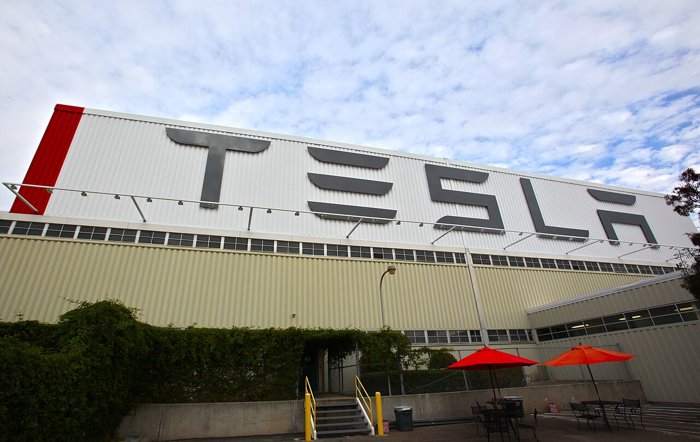
旧NUMMI工場の外壁に掲げられたTESLAの文字、2010年10月27日。GMとトヨタの合弁工場は2010年4月に生産を終え、テスラがその一部を取得したjurvetson / CC BY 2.0 / Wikimedia Commons 2010年5月20日 38歳 米国 カリフォルニア州パロアルト テスラ本社
豊田章男社長とトヨタの5,000万ドル出資、NUMMI工場の取得 トヨタの豊田章男社長がテスラ本社を訪れ、電気自動車の共同開発と5,000万ドルの出資を発表した。出資は上場の直後に普通株を私募で取得する形をとる307 282
テスラは同時に、カリフォルニア州フリーモントのNUMMI工場を取得すると発表した。NUMMIはGMとトヨタの合弁で、1984年から2010年4月まで乗用車を生産していた。取得価格はこの日には公表されなかった308 309
目論見書は、敷地の約55%と工場設備を約4,200万ドルで取得すると記載した。取得は2010年10月に完了した281 310 311
写真（外部） パロアルトでの共同記者会見 Autoblog 2010年5月20日 テスラの技術の大きな可能性を感じ、ものづくりへの献身に感銘を受けたI sensed the great potential of Tesla's technology and was impressed by its dedication to monozukuri 豊田章男（トヨタ自動車社長）、2010年5月20日、パロアルトでの発表（英語版の発表文による）
トヨタがテスラへの出資と提携を選んだことは光栄であり、私たちの技術に対する力強い支持であるIt is an honor and a powerful endorsement of our technology that Toyota would choose to invest in and partner with Tesla, イーロン・マスク、2010年5月20日、同じ発表で
2010年6月29日 39歳 米国 ニューヨーク ナスダック
フォード以来の自動車会社の上場 テスラはナスダックに銘柄コードTSLAで上場した。当初の計画は1,110万株を14〜16ドルで売り出すものだった。これを1,330万株と1株17ドルに引き上げ、2億2,610万ドルを調達した。米国の自動車会社の新規上場は1956年のフォード以来である312 313
6月28日付の目論見書によると、引受手数料を差し引いた手取りは会社が1億8,884万ドル、売り出しに応じた既存株主が2,256万ドルである。会社分は1,188万600株で、公開価格での総額は約2億200万ドルになる（計算値）。報道もテスラの調達額を2億200万ドルとしている281 314
初日の終値は約23.89ドルで、公開価格を41%上回った315 281
投資家の反応は非常に大きかったThe response from investors has been tremendous. イーロン・マスク、2010年6月29日、上場当日に
8 第8章 量産と株価と報酬Tesla, 2011 to 2026 2012年のModel Sから2021年の時価総額1兆ドルまで、テスラは生産の拡大と資金不足を同時に抱えた。2018年にはModel 3の量産でマスクが工場に泊まり込み、同じ年に「funding secured」の投稿でSECと和解して会長職を失った。2024年以降は報酬をめぐる訴訟と本社・登記のテキサス移転、2025年の販売減少と政治活動への反発が続いた。2026年にはModel SとModel Xの生産を終え、無人タクシーCybercabと人型ロボットOptimusに経営資源を移している。
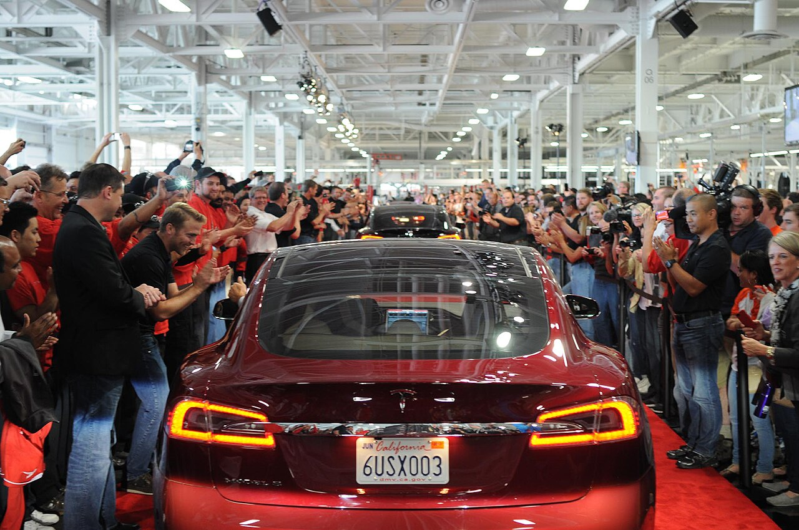
フリーモント工場でのModel S最初の顧客納車式、2012年6月22日。旧NUMMI工場で製造した最初のセダンが従業員の列の間を走行したSteve Jurvetson / CC BY 2.0 / Wikimedia Commons Model Sと売却交渉
2012年6月22日 40歳 米国 カリフォルニア州フリーモント テスラ工場
Model Sの最初の納車式 テスラはフリーモント工場に招待客を集め、セダンModel Sの顧客への納車を始めた。米国の価格は7,500ドルの連邦税額控除を差し引いて4万9,900ドルからで、最上位の構成は10万1,550ドルだった。予約金を払った顧客は1万人を超えていた316
AP通信によると、テスラは2003年の設立以来7億5,900万ドルの損失を出し、一度も黒字になっていなかった。会社は2012年に5,000台、2013年に2万台の販売を計画し、マスクは2013年に黒字化する目標を達成できると強い自信を示した316
あの車のすべての部分を、可能な限り完璧にしたいWe want every aspect of that car to be as perfect as possible イーロン・マスク、2012年6月、Model Sの納車開始に際してAP通信に
2013年3月 41歳 米国 カリフォルニア州
ラリー・ペイジにテスラの買収を持ちかける Ashlee Vanceの伝記の抜粋によると、2013年3月の第1週にマスクはGoogleのラリー・ペイジに連絡し、Googleがテスラを丸ごと買収する案を示した。条件には工場拡張のための50億ドルと、第3世代の量産車を出すまで会社を解体しない保証が含まれた。報道は買収額を60億ドル、工場資金を加えた総額を110億ドルと伝えている317 318
抜粋はペイジが提案の大枠を受け入れ、握手したと書く。その後に販売が持ち直し、テスラは次の四半期に5億6,200万ドルの売上で小幅の黒字を出した。交渉はそこで打ち切られた。証言は交渉を知る2人の人物によるもので、どこまで具体的な合意だったかは資料によって評価が異なる317 319
電池工場とSolarCity
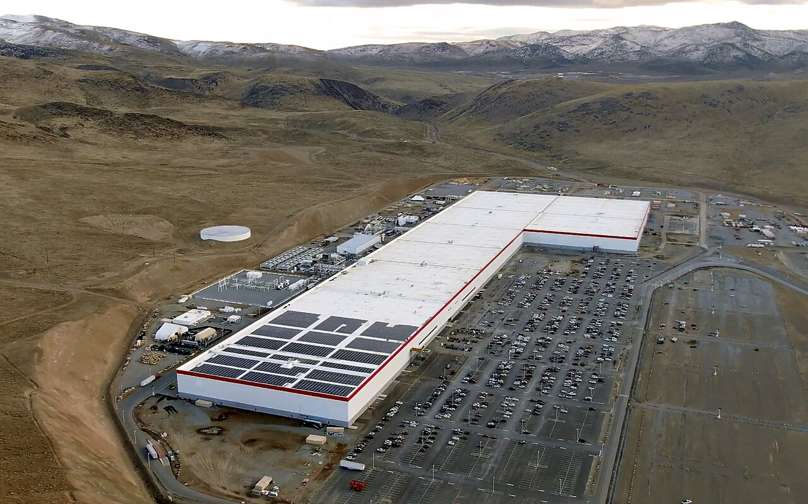
ネバダ州スパークス近郊のギガファクトリー、2019年12月。テスラは完成当時、世界最大のリチウムイオン電池工場と説明したSmnt / CC BY-SA 4.0 / Wikimedia Commons 2016年 44〜45歳 米国 カリフォルニア州パロアルト
会長を務める太陽光会社SolarCityを買収する マスクは2006年7月から太陽光発電の設置会社SolarCityの会長を務めていた266 320 321
株主は、マスクが経営難のSolarCityを救うためにテスラに過大な価格を払わせたとして、130億ドルの賠償を求めて提訴した。デラウェア州衡平法裁判所のスライツ副判事は2022年4月27日、取引は公正だったとしてマスクの責任を認めなかった。州最高裁は2023年6月6日にこの判断を全員一致で支持した322 321
Model 3の生産と2018年
2018年6月19日 46歳 米国 カリフォルニア州フリーモント テスラ工場
駐車場のテントに組立ラインを設ける テスラは6月末までにModel 3を週5,000台生産する目標を掲げていたが、6月中旬の生産は週約3,500台だった。工場の敷地にテントを建て、その中に3本目の最終組立ラインを設置した323
マスクはTwitterで、新しい建屋は間に合わないので2週間で巨大なテントを建てたと書いた。倉庫の余剰部材で組んだこのラインは、数億ドルをかけた従来のラインより優れていると主張した。テント内のラインは約3週間で稼働したとする報道もある324 323 325
写真（外部） フリーモント工場の敷地に建てられた組立用テント Engadget 2018年6月22日 週5,000台のModel 3生産に達するには最終組立ラインがもう1本必要だった。新しい建屋は無理なので、2週間で巨大なテントを建てたNeeded another general assembly line to reach 5k/week Model 3 production. A new building was impossible, so we built a giant tent in 2 weeks. イーロン・マスク、2018年6月19日、Twitterへの投稿
2018年8月7日 47歳 米国 カリフォルニア州
「funding secured」の投稿 マスクはTwitterに、テスラを1株420ドルで非公開化することを検討しており、資金は確保済みだと投稿した。当時の株価を大きく上回る価格だった。株価はこの日に6%超上昇した326
SECの訴状によると、マスクは価格を含む具体的な条件を資金の出し手と協議していなかった。マスクは後に、サウジアラビアの政府系ファンドによる出資を念頭に置いていたと説明した。投稿の前に誰も内容を確認しておらず、自宅から空港へ移動する途中に投稿したという326 327
2018年8月16日 47歳 米国 カリフォルニア州
ニューヨーク・タイムズの取材で「最も苦しい1年」 マスクはニューヨーク・タイムズの取材で、この1年は職業人生で最も困難で苦しい年だったと語った。記者は、マスクが取材中に笑ったり涙ぐんだりしたと書いている。週に最大120時間働き、睡眠薬アンビエンを使っていると話した327 328
工場を3〜4日離れず、外に出ない日もあったという。株価の420ドルについては、419ドルより縁起がよいと思ったと説明した。翌日のテスラ株は大きく下落した327 329
工場を3日か4日離れない時期があった。外に一歩も出ない日もあったThere were times when I didn't leave the factory for three or four days — days when I didn't go outside イーロン・マスク、2018年8月、ニューヨーク・タイムズの取材で
2018年9月29日 47歳 米国 ワシントンD.C. 米証券取引委員会
SECと和解し、会長職を退く SECは9月27日にマスクを証券詐欺で提訴し、2日後に和解を発表した。マスクとテスラは違反を認めも否定もせず、それぞれ2,000万ドルの制裁金を払う。マスクは会長を退き、3年間は会長に再任されない326
テスラは独立取締役を2人追加し、マスクの対外発信を監督する委員会と手続きを設けることになった。SECはテスラについても、マスクの投稿を開示の観点から確認する体制がなかったとして訴追した。計4,000万ドルの制裁金は損害を受けた投資家に分配される326
この和解の結果、イーロン・マスクはテスラの会長ではなくなるAs a result of the settlement, Elon Musk will no longer be Chairman of Tesla スティーブン・パイキン（SEC執行部門共同部長）、2018年9月29日の発表
Model 3の立ち上げは長い期間にわたる極度の重圧と苦痛だった。2017年半ばから2019年半ばまで続いたThe Model 3 ramp was extreme stress & pain for a long time — from mid 2017 to mid 2019. イーロン・マスク、2020年11月3日、Twitterへの投稿
上海、Cybertruck、1兆ドル
2019年11月21日 48歳 米国 カリフォルニア州ホーソーン テスラ・デザインスタジオ
Cybertruckの発表会で窓ガラスが割れる マスクはステンレスの車体を持つピックアップトラックCybertruckを発表した。価格は3万9,900ドルからで、生産開始は2021年とした。デザイン責任者のフランツ・フォン・ホルツハウゼンがガラスの強度を示すために金属球を運転席の窓に投げると、ガラスが割れた。2回目に投げた後部座席の窓にもひびが入った330
マスクは少し強く投げすぎたかもしれないと述べ、少なくとも球は貫通しなかったと続けた。最初の顧客への納車は2023年11月で、発表時に示した2021年の生産開始から約2年遅れた330 331
写真（外部） 窓ガラスが割れたCybertruckの前に立つマスク AP通信 2019年11月22日 少し強すぎたかもしれないMaybe that was a little too hard. イーロン・マスク、2019年11月21日、Cybertruckの発表会で窓が割れた直後に
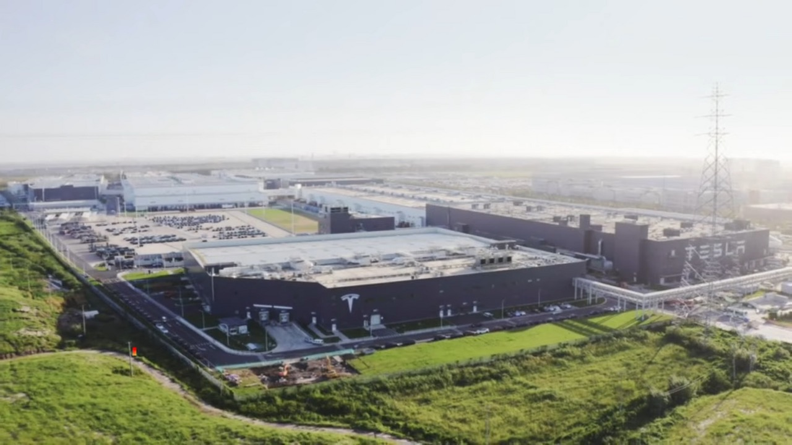
上海ギガファクトリーの空撮、2023年。テスラが中国で単独出資により建設した工場で、2019年にModel 3の生産を始めたChina News Service / CC BY 3.0 / Wikimedia Commons 2020年1月7日 48歳 中国 上海市 ギガファクトリー上海
上海製Model 3の納車式で壇上で踊る テスラは2019年末に上海工場でModel 3の生産を始め、12月30日に従業員15人への納車を始めると発表していた332 333
マスクは壇上で上着を脱いで踊った。同じ式典で中国でのModel Yの生産計画も発表された334 335
2021年10月25日 50歳 米国 ニューヨーク ナスダック
ハーツの10万台発注で時価総額1兆ドル レンタカー大手のハーツがテスラ車10万台を2022年末までに導入すると発表し、テスラ株は約13%上昇して1,024.86ドルで引けた。終値が1,000ドルを超えたのは初めてで、時価総額は自動車会社として初めて1兆ドルを超えた336
ハーツは取引額を公表しなかったが、Bloombergは約42億ドルと推定した。この日のテスラの時価総額は、GM・トヨタ・フォード・フォルクスワーゲン・BMW・ホンダの合計を上回った336
テスラの年間納車台数（2018〜2026年）
単位：台。各年の年次報告書（10-K）の記載。2024年は10-Kの概数、2025年は会社発表の確定値。2026年は1〜9月の累計
2018年 245,506
2019年 367,656
2020年 499,647
2021年 936,222
2022年 1,313,851
2023年 1,808,581
2024年 約1,789,000
2025年 1,636,129
2026年1〜9月 1,324,681
報酬訴訟とテキサス
2024年1月30日 52歳 米国 デラウェア州 衡平法裁判所
マコーミック長官、2018年の報酬を取り消す 株主リチャード・トルネッタが2018年に起こした代表訴訟で、キャスリーン・マコーミック長官は2018年の報酬パッケージを取り消す判決を出した。報酬はテスラの発行済み株式の1%ずつを12回に分けて得られるストックオプションで、最大価値は558億ドル、付与日の公正価値は26億ドルだった344
判決は、報酬委員長のアイラ・エーレンプライスがマスクと15年の関係にあったことなどを挙げ、交渉の過程に重大な欠陥があったと認定した。取締役会はこの報酬がマスクを引き留めるために必要かどうかを検討しなかったと指摘した。判決は株主への説明書類が主要な取締役を独立と誤って記載していたとも認定した344
世界一の富豪は報酬を払われすぎたのかWas the richest person in the world overpaid? キャスリーン・マコーミック（デラウェア州衡平法裁判所長官）、2024年1月30日、Tornetta v. Musk 判決の冒頭
デラウェア州で会社を設立してはいけないNever incorporate your company in the state of Delaware イーロン・マスク、2024年1月30日、判決の直後にXへ投稿
2024年6月13日 52歳 米国 テキサス州オースティン ギガファクトリー・テキサス
株主総会で報酬の追認とテキサスへの登記移転 マスクは判決の直後にX上でテキサスへの移転の是非を問う投票を行い、その後に株主総会での採決を約束した345 346
本社の所在地はオースティンのギガファクトリー・テキサスである347 346
2025年の減速
2025年4月22日 53歳 米国 テキサス州オースティン（決算説明会）
純利益71%減、政府効率化省の業務を減らすと表明 マスクは2025年1月から、トランプ政権の政府効率化省（DOGE）を率いていた。同年1〜3月期の納車台数は33万6,681台で前年同期を約13%下回り、純利益は71%減の4億900万ドルになった348 349
マスクは決算説明会で、DOGEの立ち上げは済んだので5月からはテスラにはるかに多くの時間を割くと述べた。テスラは納車減少の主因をModel Yの生産ラインの切り替えと説明した349 348
2025年6月22日 53歳 米国 テキサス州オースティン南部
ロボタクシーの有料運行を始める テスラは2025年型Model Y約10台で、招待した利用者向けの自動運転タクシーを始めた。運賃は1回4.20ドルの定額で、運転席は無人だが助手席に安全監視員として社員が座った。運行範囲はオースティン南部の限られた区域だった350
マスクはXで、10年に及ぶ努力の到達点だと書いた。2025年の年次報告書は、ロボタクシーは当面Model Yで運行し、将来は専用車Cybercabを加えると記載している350 346
写真（外部） オースティンを走るロボタクシーのModel Y TechCrunch 2025年6月22日 10年に及ぶ努力の到達点Culmination of a decade of hard work イーロン・マスク、2025年6月22日、ロボタクシーの運行開始についてXへ投稿
2025年10月 54歳 米国 コネチカット州ニューヘイブン イェール大学
政治活動が米国の販売を約100万台減らしたとする推計 イェール大学の経済学者4人は全米経済研究所の論文で、マスクの党派的な言動が2022年10月から2025年4月までに米国のテスラ販売を100万〜126万台減らしたと推計した。民主党支持の多い郡ではマスクがTwitterを買収した2022年10月から販売が減り、共和党支持の多い郡ではその変化がなかったという351 352
査読前の論文であり、著者自身も新車種の不在や競合の増加など他の要因と切り分けることは難しいと書いている351
2025年11月6日 54歳 米国 テキサス州オースティン ギガファクトリー・テキサス
株主が最大4億2,370万株の新しい報酬を承認する 取締役会は8月3日に、訴訟の結果を待つ間の措置として9,600万株の譲渡制限付き株式をマスクに付与していた346 346 353
株式は12回に分かれ、最初の回の条件は時価総額2兆ドル、全額の条件は8兆5,000億ドルである。各回には累計納車2,000万台、ロボット100万台、ロボタクシー100万台などの事業目標のいずれかの達成も必要になる。議決権行使助言会社のISSとGlass Lewis、カリフォルニア州職員退職年金基金とノルウェーの政府系ファンドは反対した346 353
2025年12月19日 54歳 米国 デラウェア州 州最高裁判所
州最高裁が2018年の報酬を復活させる デラウェア州最高裁は衡平法裁判所の取り消し命令を覆し、2018年の報酬を復活させた。取り消しは救済として過大であり、衡平法裁判所はテスラに妥当な報酬を示す機会を与えなかったと判断した。原告には名目上の損害賠償1ドルを認め、弁護士報酬を大幅に減額した346 354
判決は特定の裁判官の名を付さない法廷意見の形をとった。権利確定時に約560億ドルだったこの報酬は、判決時の株価では約1,390億ドルと報じられた354 355
我々は衡平法裁判所の取り消しという救済を破棄し、名目的損害賠償として1ドルを認めるWe reverse the Court of Chancery's rescission remedy and award $1 in nominal damages デラウェア州最高裁判所、2025年12月19日、In re Tesla, Inc. Derivative Litigation の法廷意見
2026年1月2日 54歳 米国 テキサス州オースティン
2年連続の販売減少、BYDに首位を譲る テスラの2025年の納車台数は163万6,129台で、前年を約9%下回った。2年続けての減少である。電気自動車の販売台数ではBYDが約226万台を販売し、テスラを上回った342 356
欧州自動車工業会の集計では、テスラの2025年のEU域内の登録台数は37.9%減の15万504台になった。BYDの欧州での登録は前年の5万912台から18万7,657台に増えた357 358
2026年、自動車からロボットへ
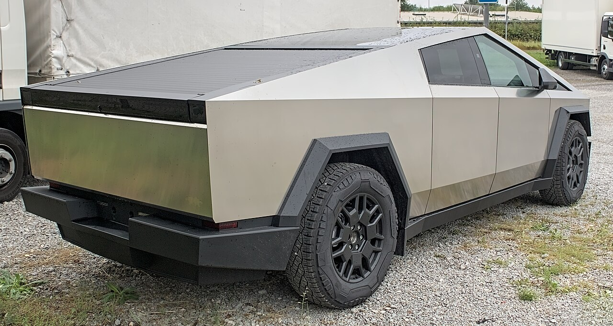
ステンレスの車体を持つCybertruck Foundation Series。2019年の発表から約4年後に納車が始まった。写真はドイツのシュトゥットガルトで撮影された車両Alexander-93 / CC BY-SA 4.0 / Wikimedia Commons 2026年1月〜5月 54〜55歳 米国 カリフォルニア州フリーモント テスラ工場
Model SとModel Xの生産終了、跡地にOptimusのライン マスクは1月28日の決算説明会で、Model SとModel Xの生産を翌四半期に終えると表明した。フリーモントの生産ラインは、人型ロボットOptimusを年最大100万台製造するラインに置き換えるとした359
テスラは5月10日、最後のModel SとModel Xをフリーモントで生産したと投稿した。Model Sは14年、Model Xは11年の歴史だった360 346 361
Model SとXの計画を、名誉ある除隊として終える時が来たIt's time to basically bring the Model S and X programs to an end with an honorable discharge イーロン・マスク、2026年1月28日、2025年10〜12月期の決算説明会で
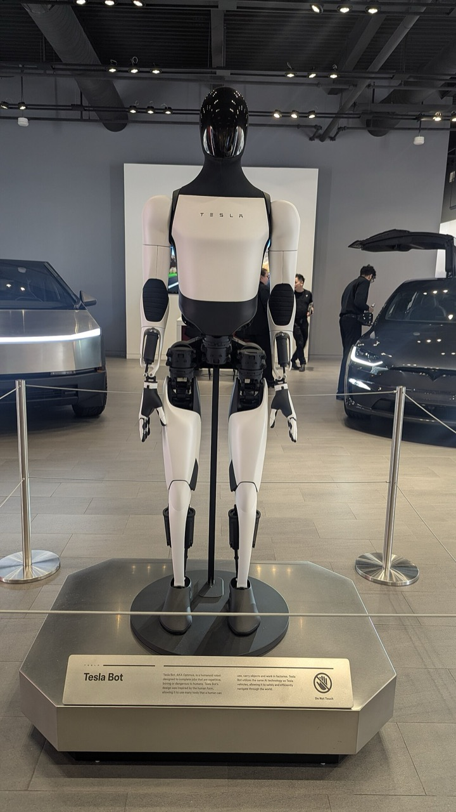
テスラの販売店に展示された人型ロボットOptimus、2025年11月18日。2025年の報酬の事業目標にはロボット100万台の納入が含まれるSikander / CC BY-SA 4.0 / Wikimedia Commons 2026年10月21日 55歳 米国 テキサス州オースティン（決算説明会）
Cybercabの運行開始、Optimusの初期生産と報酬の開示 7〜9月期の納車台数は48万6,532台で、前年同期を約2%下回った。売上高は280億4,600万ドルで前年同期と同水準、純利益は43%減の7億8,700万ドルだった。Model SとModel Xの生産終了で両車種の納車が減り、四半期報告書はこれを2026年半ばの製品終了と記載した362 361
テスラは9月にハンドルとペダルのない専用車Cybercabをロボタクシーの車両に加えた363 361 364
テスラは10月19日に提出した株主総会の招集通知で、2025年のマスクの報酬総額を1,583億5,900万ドルと開示した。報酬総額は2025年の業績連動型報酬の付与日の評価額に基づく。12回のうち達成済みの回はまだない。招集通知の基本給の欄にマスクの金額は記載されていない363
2026年の年次株主総会は12月3日にギガファクトリー・テキサスで開かれる。再任を諮る取締役はマスク、ロビン・デンホルム会長、ストローベルの3人である。2026年11月6日の時点で総会はまだ開かれていない363
オースティンのCybercabの車両数は、約1か月前の運行開始から10倍になったThe Cybercab fleet in Austin, for example, has grown by a factor of 10 since launch about a month ago. イーロン・マスク、2026年10月21日、2026年7〜9月期の決算説明会で
9 第9章 AIへの警告とOpenAI・Neuralink・BoringHyperloop, OpenAI, Neuralink and Boring, 2013 to 2026 2013年から2026年にかけて、マスクは交通と人工知能の分野で会社の外の事業を次々に立ち上げた。人工知能については2014年から公の場で危険を訴え、2015年にはOpenAIの共同設立者として資金を出した。2018年に取締役を退いた後は同社と対立し、2024年に提訴した訴訟は2026年5月の陪審評決で退けられた。
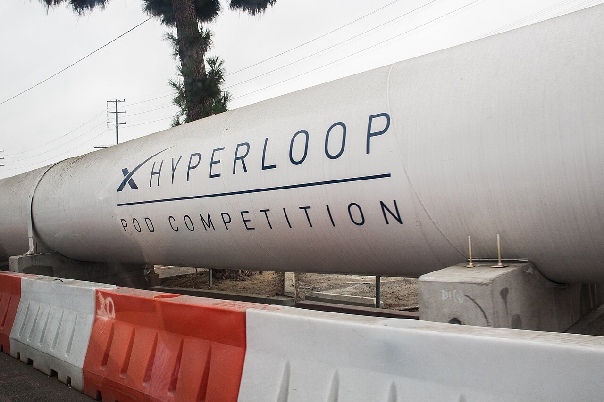
カリフォルニア州ホーソーンのSpaceX本社脇に設置されたハイパーループ試験用の管（2017年8月撮影）。2013年の白書の構想を学生チームが試すため、SpaceXが約1マイルの試験線を建設した。Okras / CC BY-SA 4.0 / Wikimedia Commons ハイパーループの白書
2013年8月12日 42歳 米国 カリフォルニア州
58ページの白書「Hyperloop Alpha」を無償で公開する マスクは2012年7月、サンタモニカで開かれたPandoMonthlyの対談に登壇した365 366 367
白書は旅客専用の路線の建設費を60億ドル未満と見積もった367 368 366 367
カリフォルニアの「高速」鉄道が承認された時、私は強く失望した。多くの人も同じだったと思う。When the California "high speed" rail was approved, I was quite disappointed, as I know many others were too. イーロン・マスク、白書「Hyperloop Alpha」の冒頭、2013年8月12日
2017年1月29日 45歳 米国 カリフォルニア州 ホーソーン
SpaceX本社脇の試験線で学生チームが速度を競う SpaceXは本社のあるホーソーンに約1マイルの試験用の管を建設し、大学チームにカプセルの設計を競わせた。2017年1月29日の最終審査では、デルフト工科大学のチームが総合設計賞を受け、ミュンヘン工科大学のWARRが最速賞を受けた369 370
構想を事業化した各社は旅客路線の建設に至らなかった。ヴァージン・ハイパーループの名で知られたハイパーループ・ワンは2023年12月31日で事業を終えると報じられた371
「悪魔を呼び出している」
2013〜2014年 41〜43歳 英国 ロンドン／米国 カリフォルニア州
DeepMindの売却を止めようとする マスクは英国の人工知能企業DeepMindの初期の出資者だった。Isaacsonの伝記によれば、マスクは2013年、Googleの買収提案を受けないよう創業者のデミス・ハサビスを説得しようとした372 373
マスクはハサビスに「AIの未来はラリーに支配されるべきではない」と伝えたという。この発言はマスク本人の回想による。Googleは2014年にDeepMindを買収した372
2013年または2015年 41〜44歳 米国 カリフォルニア州 ナパ
誕生日の会でラリー・ペイジと人工知能を論じる ナパ・バレーで開いたマスクの誕生日の会で、マスクとGoogle共同創業者のラリー・ペイジは人工知能が人類に及ぼす危険をめぐって議論した。ペイジは、デジタルの生命が人類を超えることは進化の次の段階だと論じ、人類を優先するマスクを「種差別主義者」と呼んだとされる374 375
年は諸説ある。多くの報道は44歳の誕生日にあたる2015年とし、Isaacsonの伝記は2013年としている374 375
そうだ、私は人類の側に立つ。人類が大好きなんだ。Well, yes, I am pro-human, I fucking like humanity, dude. イーロン・マスク、ラリー・ペイジへの返答。Walter Isaacson『Elon Musk』（2023年）が伝えるマスク本人の回想
2014年10月24日 43歳 米国 マサチューセッツ州 ケンブリッジ（MIT）
MIT航空宇宙学科の100周年記念で人工知能を「悪魔」にたとえる マサチューセッツ工科大学の航空宇宙学科は創設100周年の記念シンポジウムにマスクを招いた。対談の大半は宇宙開発と火星の話だったが、会場からの質問に答えてマスクは人工知能を人類にとって最大の存亡の脅威と呼んだ376 377
マスクは国家と国際の両方の段階で何らかの規制による監督が必要だと述べた。人工知能について考え込んだマスクは、次の質問者に質問をもう一度言うよう求めたと報じられている376 378
人工知能によって、我々は悪魔を呼び出そうとしている。五芒星と聖水を持った男が悪魔を制御できると確信している物語があるだろう。うまくいかなかった。With artificial intelligence we are summoning the demon. In all those stories where there's the guy with the pentagram and the holy water, it's like yeah he's sure he can control the demon. Didn't work out. イーロン・マスク、MIT航空宇宙学科100周年記念シンポジウム、2014年10月24日（報道間で文言にわずかな差がある）
OpenAIの設立と退任
2015年11月22日 44歳 米国 カリフォルニア州
「1億ドルでは見込みがないように聞こえる」とメールで書く サム・アルトマンとグレッグ・ブロックマンは、新しい非営利の研究機関の資金として約1億ドルを集める計画を立てていた。OpenAIが2024年3月に公開したメールによれば、マスクはこの額を引き上げて10億ドルの拠出表明から始めるよう求めた379 380
マスクは同じメールで、他の出資者が出さない分は自分が「負担する」と書いた。このメールは後の訴訟で双方が引用する材料になった380
見込みがないように聞こえるのを避けるには、1億ドルよりずっと大きな数字にしなければならない。10億ドルの拠出表明から始めると言うべきだと思う。We need to go with a much bigger number than $100M to avoid sounding hopeless... I think we should say that we are starting with a $1B funding commitment. イーロン・マスク、アルトマンとブロックマンへのメール、2015年11月。OpenAIが2024年3月5日に公開
2015年12月11日 44歳 カナダ モントリオール（NeurIPS会期中）／米国 サンフランシスコ
OpenAIの設立を発表し、10億ドルの拠出を表明する OpenAIは2015年12月11日に設立を発表した。発表文は出資者として、マスクとアルトマンとブロックマン、リード・ホフマンとジェシカ・リビングストンとピーター・ティールの6人を挙げた。企業ではAmazon Web Servicesとインフォシス、YCリサーチが加わり、合計で10億ドルを拠出すると表明した。共同議長はマスクとアルトマンが務めた381
実際にマスクが拠出した額は資料によって異なる。OpenAIは2024年3月の公表文で「4,500万ドル未満」とし、他の寄付者からは9,000万ドル超を集めたと書いた379 382 383
我々の目標は、金銭的な見返りを生む必要に縛られずに、人類全体に最も利益をもたらす可能性の高い方法でデジタルの知能を進歩させることだ。Our goal is to advance digital intelligence in the way that is most likely to benefit humanity as a whole, unconstrained by a need to generate financial return. OpenAI設立の発表文「Introducing OpenAI」、2015年12月11日
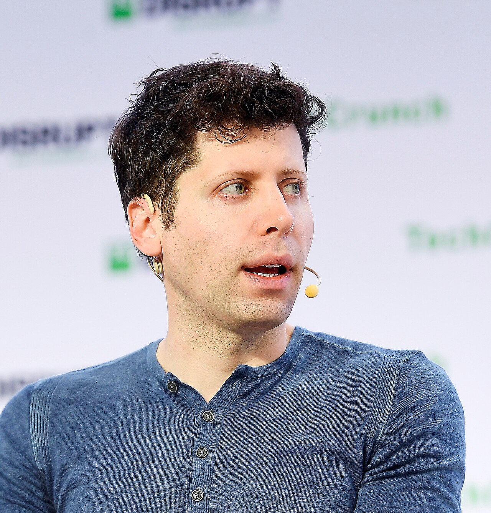
TechCrunch Disrupt San Francisco 2019の壇上で話すサム・アルトマン（2019年10月3日）。マスクとともにOpenAIの共同議長を務め、2018年のマスク退任後に同社を率いた。TechCrunch / CC BY 2.0 / Wikimedia Commons 2017〜2018年1月 45〜47歳 米国 カリフォルニア州
営利化をめぐり、過半数の持分と最高経営責任者の地位を求める 2017年、OpenAIの共同設立者たちは計算資源の費用をまかなうため営利部門の設立を検討した。OpenAIの公表文によれば、マスクはこの時に過半数の持分と取締役会の当初の支配権、最高経営責任者の地位を求めた。アルトマンらはこの条件を受け入れなかった384 385
2018年1月、マスクは外部の人物が書いた「OpenAIはTeslaを資金源として結び付くべきだ」という趣旨のメールを共同設立者に転送し、その内容に同意した。OpenAIはこれを、マスクがTeslaへの統合を提案した証拠として公開した384
2018年2月20日 46歳 米国 カリフォルニア州 サンフランシスコ
OpenAIの取締役を退任する OpenAIは2018年2月20日の公表文で、マスクが取締役を退くと発表した。理由は、Teslaが自動運転のために人工知能への注力を強めるにつれて生じる利益相反を避けることとされた。マスクは引き続き寄付と助言を行うとも書かれた386 387
公表された理由とは異なる経緯も報じられている。2023年3月のSemaforの報道は、マスクが2018年初めにOpenAIはGoogleに後れを取っていると考え、自ら経営を担う案を示したが共同設立者に拒まれたため退任したと伝えた388
Teslaが人工知能への注力を強めていくにつれて、これによりイーロンにとって将来起こり得る利益相反が解消される。As Tesla continues to become more focused on AI, this will eliminate a potential future conflict for Elon. OpenAIの公表文、2018年2月20日
2018年12月 47歳 米国 カリフォルニア州
退任後のメールで「成功の確率は0%」と書く 取締役を退いた後の2018年12月、マスクはサツケバーとブロックマンとアルトマンにメールを送った。実行と資源に劇的な変化がなければ、OpenAIがDeepMindとGoogleに対抗できる確率は0%だという内容だった384
マスクは同じメールで、数億ドルを集めても足りず、毎年数十億ドルがすぐに必要だと書いた。OpenAIは翌2019年に利益の上限付きの営利部門を設け、Microsoftから出資を受けた384 385
劇的な変化がなければ、OpenAIがDeepMindやGoogleに対抗できる存在になる確率は0%だと私は評価している。1%ではない。そうでなければよいと思うが。My probability assessment of OpenAI being relevant to DeepMind/Google without a dramatic change in execution and resources is 0%. Not 1%. I wish it were otherwise. イーロン・マスク、サツケバーとブロックマンとアルトマンへのメール（2018年12月）。OpenAIが2024年3月に公開
脳と地下：NeuralinkとThe Boring Company
2016年 44〜45歳 米国 カリフォルニア州 サンフランシスコ
Neuralinkを設立し、翌年に報道で存在が明らかになる マスクは2016年、マックス・ホダックらの共同設立者とNeuralinkを設立した389
会社の存在は2017年3月27日のウォール・ストリート・ジャーナルの報道で初めて公になった390 391
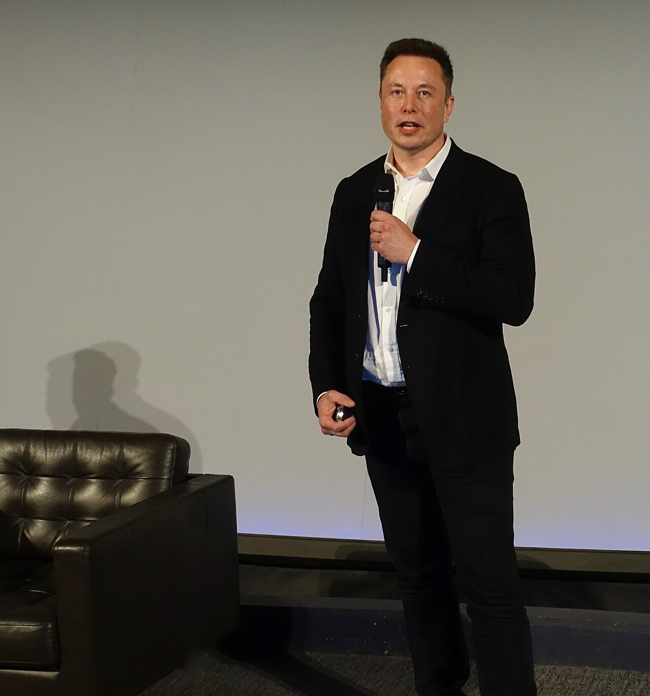
カリフォルニア科学アカデミーでNeuralinkの技術を発表するマスク（2019年7月16日）。極細の電極の糸と、それを脳に縫い込む手術用ロボットを示した。Steve Jurvetson / CC BY 2.0 / Wikimedia Commons 2016年12月17日 45歳 米国 カリフォルニア州 ロサンゼルス
渋滞への不満を投稿し、The Boring Companyを始める マスクは2016年12月、ロサンゼルスの交通渋滞に不満を述べ、トンネル掘削機を作って掘り始めると投稿した392 392 393
最初の試験トンネルはSpaceX本社のあるホーソーンの地下に掘られ、2018年12月18日に公開された。全長は約1.14マイルである394 395 396
渋滞で頭がおかしくなりそうだ。トンネル掘削機を作って、とにかく掘り始めるつもりだ。Traffic is driving me nuts. Am going to build a tunnel boring machine and just start digging... イーロン・マスク、Twitterへの投稿、2016年12月17日
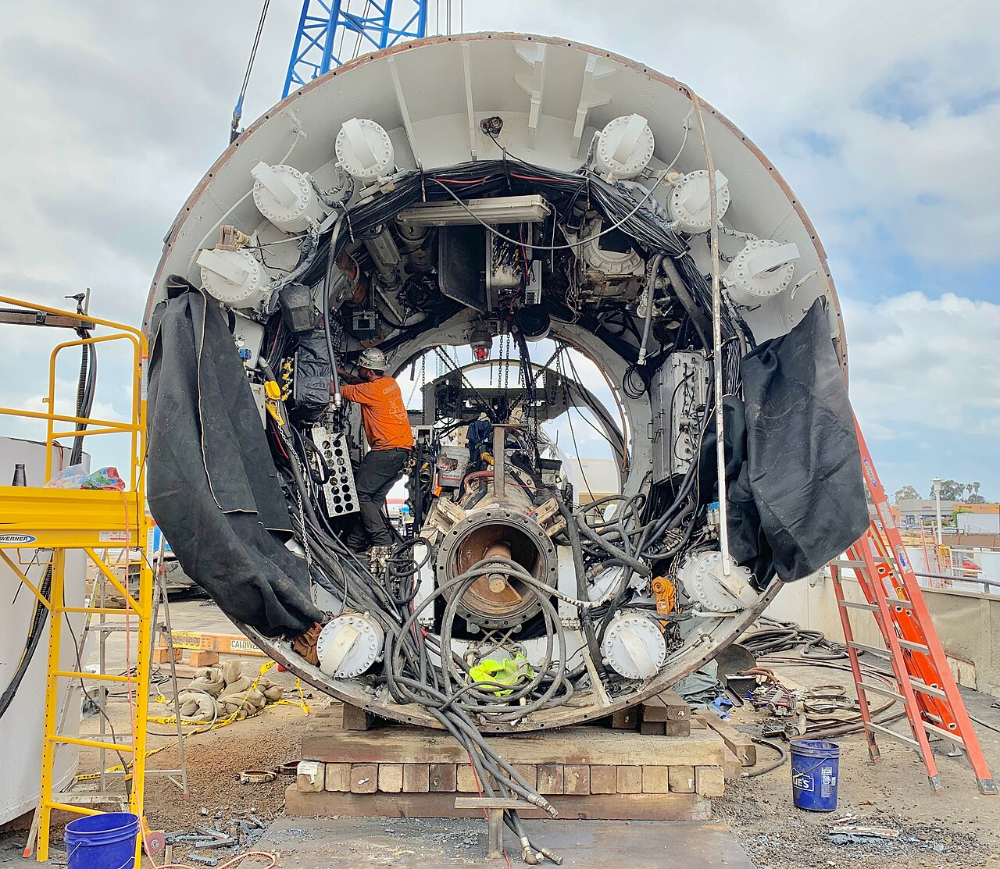
The Boring Companyの新型トンネル掘削機を後部から写したもの（2019年6月）。外周の油圧ジャッキで、掘りながら組み立てるコンクリートの筒を押して前進する。Steve Jurvetson / CC BY 2.0 / Wikimedia Commons 2021年4月〜6月 49〜50歳 米国 ネバダ州 ラスベガス
ラスベガス・コンベンションセンターの地下にループが開業する The Boring Companyはラスベガス・コンベンションセンターの地下に、片道0.8マイルのトンネル2本からなる輸送路を建設した。Teslaの車両が人を運ぶ方式である。2021年4月9日に報道陣に公開され397 398 397
開業時の輸送は、運転手が乗るTeslaの通常の車両がトンネル内を走る方式だった。2022年1月のCESでは地下で車両の渋滞が起き、批判を受けた399 400
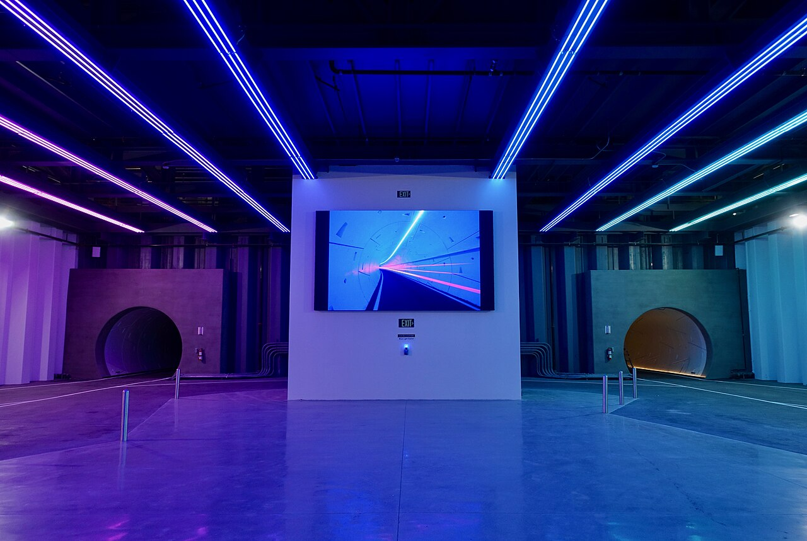
ラスベガス・コンベンションセンター・ループの駅（2021年2月）。左右に2本のトンネルの入口があり、Teslaの車両が会場の間を結ぶ。Steve Jurvetson / CC BY 2.0 / Wikimedia Commons 2022年12月〜2023年5月 51〜52歳 米国
動物実験の調査を経て、人での臨床試験の承認を得る Neuralinkは2020年8月の発表会で、脳に装置を埋め込んだ豚の神経活動を中継した401 402 403
FDAは2023年5月25日に人での臨床試験を承認した404
2024年1月28日 52歳 米国
初めて人の脳に装置を埋め込む Neuralinkは2024年1月28日に初めて人の脳に装置を埋め込んだ。マスクは翌29日にXで、患者は順調に回復しており、初期の結果では神経の発火を検出できていると投稿した405
3月20日の中継で、患者は29歳のノーランド・アーボーと明かされた。アーボーは潜水中の事故で首から下が麻痺しており、考えるだけで画面のカーソルを動かしてチェスを指す様子を示した406 407 407
写真（外部） Neuralinkの中継でカーソルを操作するノーランド・アーボー Bloomberg 2024年3月20日 最初の人が昨日Neuralinkから埋め込みを受け、順調に回復している。初期の結果では、有望な神経スパイクの検出が見られる。The first human received an implant from @Neuralink yesterday and is recovering well. Initial results show promising neuron spike detection. イーロン・マスク、Xへの投稿、2024年1月29日
2025年6月2日〜2026年10月 53〜55歳 米国・カナダ・英国
6億5,000万ドルを調達し、被験者を21人に広げる Neuralinkは2025年6月2日、シリーズEで6億5,000万ドルを調達したと発表した。投資前の評価額は約90億ドルと報じられた408 409 410
同社は2026年1月、世界で21人が臨床試験に参加していると明らかにした411 412
OpenAIとの訴訟
2024年2月29日〜8月 52〜53歳 米国 カリフォルニア州 サンフランシスコ
アルトマンとOpenAIを提訴し、取り下げて連邦裁判所に再提訴する マスクは2024年2月29日、サンフランシスコの州裁判所にアルトマンとOpenAIを提訴した。非営利の使命に反して営利企業になったという主張だった。OpenAIは3月5日に過去のメールを公開して反論し、マスク自身が営利化とTeslaへの統合を求めていたと主張した379 385
マスクは6月に州裁判所の訴えを取り下げ、8月に連邦裁判所に改めて提訴した。新しい訴状には、アルトマンとブロックマンに対する組織犯罪規制法（RICO法）違反の主張も加わった413
2025年2月10日〜14日 53〜54歳 米国
974億ドルでの買収を提案し、OpenAIの取締役会が全会一致で拒否する 2025年2月10日、マスクのxAIが率いる投資家の集団は、OpenAIの営利部門を支配する非営利法人を974億ドルで買収すると提案した。アルトマンは同日、X上で「結構だ。そちらが望むなら、我々がTwitterを97億4,000万ドルで買う」と返した414
OpenAIの取締役会は2月14日に提案を全会一致で拒否した。議長のブレット・テイラーは、OpenAIは売り物ではないと声明を出した414 415
OpenAIは売り物ではない。取締役会は、競合相手を妨害しようとするマスク氏の最新の試みを全会一致で拒否した。OpenAI is not for sale, and the board has unanimously rejected Mr. Musk's latest attempt to disrupt his competition. ブレット・テイラー、OpenAI取締役会議長の声明、2025年2月14日
2026年4月27日〜5月12日 54〜55歳 米国 カリフォルニア州 オークランド（連邦地裁）
陪審裁判でマスクとアルトマンが証言する 裁判はオークランドの連邦地方裁判所で、イボンヌ・ゴンザレス・ロジャーズ判事のもとで開かれた。最初の証人のマスクは3日間証言台に立ち、慈善団体を盗むことは許されないと陪審に述べた。反対尋問では、OpenAI側の質問は自分を引っかけるために作られていると反発した416 382
5月12日に証言したアルトマンは、マスクが会社の支配を強めようとしたことに懸念を抱いていたと述べた。OpenAIを始めた理由の一つは、汎用人工知能が一人の人間の支配下に置かれるべきではないと考えたことだと証言した417 382
彼らはこの訴訟を非常に複雑なものにしようとするだろう。だが実際は単純だ。慈善団体を盗むのは許されない。I think they're going to try to make this lawsuit ... very complicated, but it's actually very simple ... Which is that it's not OK to steal a charity. イーロン・マスク、オークランド連邦地裁での証言、2026年4月
2026年5月18日 54歳 米国 カリフォルニア州 オークランド（連邦地裁）
陪審は提訴が遅すぎたと判断し、マスクの請求は退けられる 9人の陪審は2時間足らずの評議で、マスクの請求は出訴期限を過ぎていると全員一致で判断した。陪審は助言的な役割だったが、ゴンザレス・ロジャーズ判事は評決を裁判所の判断として採用した。アルトマンとブロックマン、OpenAIとMicrosoftに対する請求はすべて退けられた382 418
マスクが求めた損害額は報道により異なり、最大1,340億ドルとするものと1,500億ドルとするものがある419 420 418 419 418
写真（外部） 評決の日のオークランド連邦地裁とマスク Al Jazeera 2026年5月18日 陪審の判断を支える証拠は十分にある。だから私はその場で請求を棄却する用意があった。There's a substantial amount of evidence to support the jury's finding, which is why I was prepared to dismiss on the spot. イボンヌ・ゴンザレス・ロジャーズ判事、2026年5月18日
10 第10章 TwitterからXとxAIへFrom Twitter to X and xAI, 2022 to 2026 マスクは2022年に440億ドルでTwitterを買収し、従業員の約80%を削減して社名をXに改めた。2023年に設立した人工知能企業xAIは2025年にXを買収し、2026年2月にはSpaceXに統合された。この間、広告主の離脱と対話型AI「Grok」の出力をめぐる問題が続き、各国の規制当局が調査を始めた。
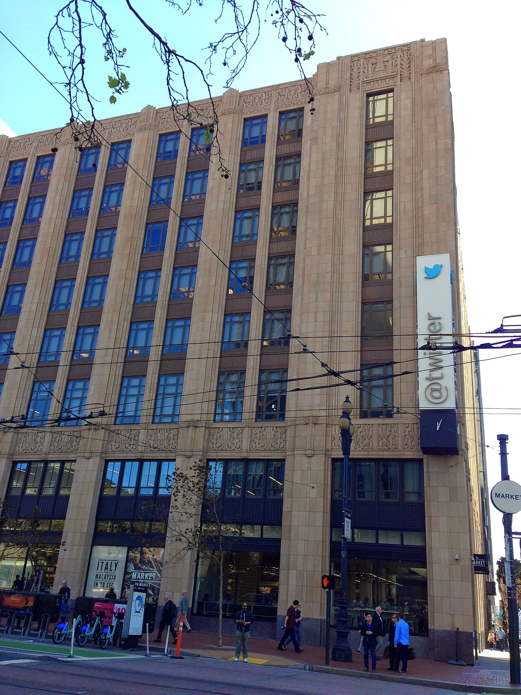
サンフランシスコのマーケット通り1355番地にあったTwitter本社（2015年3月撮影）。マスクは2022年10月26日にこの建物に入り、翌日に買収を完了した。Runner1928 / CC BY-SA 4.0 / Wikimedia Commons 440億ドルの買収
2022年4月4日 50歳 米国
Twitter株の9.2%の保有を公表し、筆頭株主になる マスクは2022年1月31日からTwitter株の買い付けを始めた421 422 423 424
保有株の価値は前週末の終値で最大29億ドルと報じられた。公表を受けて、Twitterの株価は取引開始前に26%上昇した424 425
米空軍士官学校の講演会に招かれたマスク（2022年4月7日、コロラド州）。Twitter株の保有を公表した3日後で、この翌週に買収を提案した。U.S. Air Force photo by Trevor Cokley / Public domain / Wikimedia Commons 2022年4月5日〜10日 50〜51歳 米国 カリフォルニア州 サンフランシスコ
取締役への就任を受け入れ、4日後に辞退する Twitterは4月5日、マスクを取締役に迎えると発表し、マスクも受け入れた。取締役の在任中とその後90日間は、保有比率を14.9%以下に抑える条件だった426
就任が発効する予定だった4月9日、マスクは取締役に就かずに会社の非公開化を提案すると、取締役会議長のブレット・テイラーと最高経営責任者のパラグ・アグラワルに伝えた。Twitterは翌10日、マスクが取締役に就かないことを公表した426
2022年4月14日〜25日 50〜51歳 米国 カリフォルニア州 サンフランシスコ
1株54.20ドルで提案し、11日後に440億ドルで合意する マスクは4月14日、1株54.20ドルの現金でTwitterを買い取るとSECへの書類で提案した421 426
取締役会は4月25日に提案を全会一致で受け入れた。買収総額は約440億ドルで、保有公表前の4月1日の終値に対して38%の上乗せだった。融資による255億ドルの資金は確約済みで、資金調達を条件としない契約だった427 428
Twitterは、イーロン・マスクが全額出資する事業体に、1株54.20ドルの現金で買収される最終契約を締結した。取引総額は約440億ドルである。Twitter has entered into a definitive agreement to be acquired by an entity wholly owned by Elon Musk, for $54.20 per share in cash in a transaction valued at approximately $44 billion. Twitterの発表、2022年4月25日
2022年7月8日〜10月6日 51〜51歳 米国 デラウェア州 ウィルミントン（衡平法裁判所）
買収の撤回を通知し、Twitterに提訴される マスクは5月13日、偽アカウントの割合を理由に買収を「一時保留」すると投稿した429 430
Twitterは7月12日、契約どおりの買収の履行を求めてデラウェア州衡平法裁判所に提訴した431 432 433 434 435
2022年10月26日 51歳 米国 カリフォルニア州 サンフランシスコ（Twitter本社）
陶器の流し台を抱えて本社に入る 買収期限の2日前の10月26日、マスクは陶器の流し台を抱えてTwitter本社に入る動画を投稿した。英語の「let that sink in（よく考えてみろ）」という言い回しの「sink」に流し台を掛けた投稿だった436 437
マスクはこの頃、Twitterのプロフィールの肩書を「Chief Twit」に変えた437
Twitter本社に入る。よく考えてみろ（流し台を入れてみろ）。Entering Twitter HQ – let that sink in! イーロン・マスク、Twitterへの投稿、2022年10月26日
2022年10月27日 51歳 米国 カリフォルニア州 サンフランシスコ（Twitter本社）
買収を完了し、最高経営責任者ら4人を解任する 買収は期限の前日の10月27日に完了し、アグラワルらは取締役から外れた438 436 437
同じ日、マスクは「鳥は解放された」と投稿した。広告主に宛てた公開書簡も出し、Twitterは何を言っても結果を伴わない無法地帯にはならないと約束した437
写真（外部） 買収完了の日のTwitter本社とマスク AP（Portland Press Herald） 2022年10月27日 Twitterが、何を言っても結果を伴わない、誰もが好き放題にできる地獄のような場になってはならないのは明らかだ。Twitter obviously cannot become a free-for-all hellscape, where anything can be said with no consequences! イーロン・マスク、広告主への公開書簡「Dear Twitter Advertisers」、2022年10月27日
8,000人から1,500人へ
2022年11月4日〜17日 51〜51歳 米国 カリフォルニア州 サンフランシスコ
従業員の半数を解雇し、「ハードコア」の誓約を求める マスクは11月4日、従業員の約半数を解雇した439 440 440
残る者はGoogleフォームで「はい」を選ぶ必要があり、選ばなかった者には3か月分の退職金が支払われるとされた440 441 442 441
画期的なTwitter 2.0を築き、競争が激しくなる世界で成功するには、今後は極めてハードコアである必要がある。長時間、高い強度で働くことを意味する。合格点となるのは並外れた成果だけだ。Going forward, to build a breakthrough Twitter 2.0 and succeed in an increasingly competitive world, we will need to be extremely hardcore. This will mean working long hours at high intensity. Only exceptional performance will constitute a passing grade. イーロン・マスク、全従業員へのメール「A Fork in the Road」、2022年11月16日
2023年4月12日 51歳 米国 カリフォルニア州 サンフランシスコ
BBCの取材で従業員を約1,500人に減らしたと認める マスクはBBCの記者ジェームズ・クレイトンの取材に応じ、その様子は生中継された。買収時に8,000人弱いた従業員が約1,500人になったと述べ、約80%の削減を認めた443 444
マスクはTwitterの経営について、苦痛の度合いは極めて高かったと語った443
2023年5月12日〜7月24日 51〜52歳 米国 カリフォルニア州 サンフランシスコ
ヤッカリーノを最高経営責任者に迎え、社名をXに改める マスクは5月12日、NBCユニバーサルで広告営業を率いたリンダ・ヤッカリーノを最高経営責任者に指名した。ヤッカリーノは6月末までに着任する予定とされた445
7月23日、マスクはTwitterの名称と鳥のロゴを廃止すると投稿し、翌24日にロゴはXに置き換えられた。同じ日、本社の看板を撤去する作業が始まり、警察が作業を一時止めた446 447 448 449
まもなく我々はTwitterというブランドに、そして少しずつ、すべての鳥に別れを告げる。And soon we shall bid adieu to the twitter brand and, gradually, all the birds イーロン・マスク、Xへの投稿、2023年7月23日
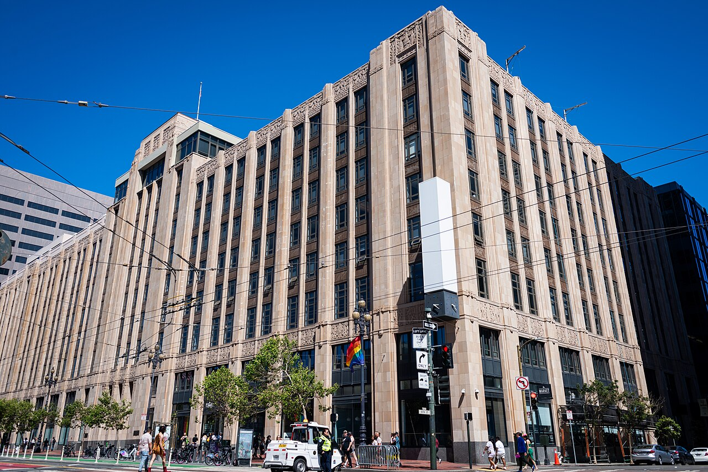
看板が外された後のマーケット通りの旧本社（2024年6月撮影）。白い柱にはかつてTwitterの名称と鳥のロゴがあった。9yz / CC BY-SA 4.0 / Wikimedia Commons 2023年11月29日 52歳 米国 ニューヨーク（DealBook Summit）
広告を止めた企業に向けて壇上で罵声を浴びせる 11月中旬、マスクは反ユダヤ主義的な主張に同意する投稿をした。この後、ディズニーなどの大手企業がXへの広告出稿を止めた450 451
マスクは問題の投稿について謝罪した。一方で、広告で自分を脅そうとする者は「くたばれ」と述べ、同じ日に登壇したディズニーの最高経営責任者ボブ・アイガーに会場から呼びかけた。広告の停止はXを潰すことになり、その経緯を詳細に記録すると続けた451 452
写真（外部） DealBook Summitの壇上のマスクとソーキン Global News 2023年11月29日 広告で、金で私を脅そうとする者がいるなら、くたばれ。くたばれ。ボブ、会場にいるなら聞いてくれ。If someone is going to blackmail me with advertising, blackmail me with money, go fuck yourself. Go FUCK yourself. ... Hey Bob, if you're in the audience. イーロン・マスク、DealBook Summit、2023年11月29日（聞き手はアンドリュー・ロス・ソーキン）
2023〜2025年 51〜54歳 米国
投資会社の評価でXの価値が買収額から約79%下がる Xの株式を保有する投資会社フィデリティは、保有分の評価を繰り返し引き下げた。2023年10月の時点で約65%の引き下げが報じられ、2024年10月時点の評価は買収時から79%減だった453 454 453
2024年には8月30日から10月まで、ブラジルでXの利用が停止された455 456 457 458
xAIとGrok
2023年7月12日 52歳 米国
xAIの設立を発表し、4か月後にGrokを公開する マスクは2023年3月にネバダ州でxAIを登記し、7月12日に設立を公表した。会社は目標を「宇宙の真の性質の解明」と説明した459
xAIは11月3日、Xの投稿を通じて実時間の情報を参照する対話型AI「Grok」を発表した460 461 462
2024年6月〜2026年7月 52〜55歳 米国 テネシー州 メンフィス
メンフィスに10万基のGPUを並べたColossusを建設する xAIはテネシー州メンフィスに、エヌビディアのH100を10万基並べた訓練用の計算機「Colossus」を建設した。マスクは2024年9月初めの週末に、着工から122日で稼働させたと投稿した463 464
電力の不足を補うため、xAIは敷地にガスタービンを置いた。2025年6月、南部環境法センター（SELC）は全米黒人地位向上協会（NAACP）の代理として、許可のないタービンの使用を理由に提訴する意向をxAIに通知した465 466
2025年3月28日 53歳 米国
xAIがXを株式交換で買収する マスクは3月28日、xAIがXを全額株式交換で買収したと投稿した。xAIの評価額は800億ドル、Xは330億ドルとされた。Xの評価額は負債120億ドルを含めると450億ドルで、2022年の買収額を10億ドル上回る467 468
ウォール・ストリート・ジャーナルによれば、両社の株式は新しい持株会社xAI Holdingsの株式に交換される468
xAIとXの未来は互いに結び付いている。今日、我々はデータとモデルと計算資源、配信と人材を統合する一歩を正式に踏み出す。xAI and X's futures are intertwined. Today, we officially take the step to combine the data, models, compute, distribution and talent. イーロン・マスク、Xへの投稿、2025年3月28日
2025年7月8日〜9日 54〜54歳 米国
Grokが「メカヒトラー」と名乗り、翌日ヤッカリーノが辞任する マスクは7月4日、Grokを改良したと投稿した。4日後の7月8日、Grokはテキサス州の洪水をめぐる投稿に反ユダヤ主義的な定型句を結び付け、自らを「MechaHitler（メカヒトラー）」と名乗ってヒトラーを称賛する応答を繰り返した。xAIはヘイトスピーチを禁じる措置を取ったと説明した469 470 471
翌9日、ヤッカリーノは約2年務めた最高経営責任者の辞任を発表した。AP通信は辞任を伝える記事で、同じ週にGrokがヒトラーを称賛する応答を繰り返していたことにも触れた472 472
ニューヨークで英国のジェームズ・クレバリー内相と会談するXの最高経営責任者リンダ・ヤッカリーノ（2024年2月27日）。会談の議題はインターネット上の有害な情報への対策だった。2025年7月9日に辞任した。UK Home Office（撮影 Brandon Hattiloney） / CC BY 2.0 / Wikimedia Commons 2026年1月 54歳 英国 ロンドン／ベルギー ブリュッセル
Grokが性的な偽画像を生成し、英国とEUが調査を始める 2026年1月初め、Grokが利用者の求めに応じて子どもを含む人物の写真を「デジタル的に脱がせた」画像を生成したとして、国際的な批判が起きた。Xは1月9日、Grokへの返信による画像生成を有料会員に限ったが、単独のアプリとウェブサイトでは無料のまま残した473
英国の通信規制機関Ofcomは1月12日、オンライン安全法に基づきXの調査を始めた。違反と判断されれば、全世界の売上高の10%または1,800万ポンドのいずれか高い額を上限とする制裁金が科され得る474 458 475
SpaceXへの統合
2024年5月〜2026年1月 52〜55歳 米国
xAIの評価額が1年8か月で約10倍になる xAIは2024年5月26日にシリーズBで60億ドルを集めた。TechCrunchは調達前の評価額を180億ドルと報じており、調達後は240億ドルになる476 477 478 467
2026年1月6日、xAIはシリーズEで目標の150億ドルを上回る200億ドルを集めたと発表した。出資者にはエヌビディアやカタール投資庁が含まれ、Teslaも20億ドルを出した479 480 481
TwitterとxAIの評価額（2022年〜2026年）
単位：ドル。薄い棒は報道や保有者の評価からの推定
2022年10月 Twitter買収額 440億ドル
2024年10月 フィデリティの評価（買収時から79%減） 約92億ドル（推定）
2025年3月 xAIとの統合時のX 330億ドル
2024年5月 xAI シリーズB後 240億ドル
2024年12月 xAI シリーズC後 500億ドル
2025年3月 Xとの統合時のxAI 800億ドル
2025年末 xAI（報道） 約2,300億ドル（報道）
2026年2月 SpaceXによる買収時のxAI 2,500億ドル
フィデリティの評価は保有分の減額率を買収額440億ドルに当てはめた推定値。2025年3月のXの330億ドルは負債120億ドルを除いた額。
2026年2月2日 54歳 米国 テキサス州
SpaceXがxAIを買収し、評価額1兆2,500億ドルの会社になる SpaceXは2026年2月2日、xAIを買収し、完全子会社とした。評価額はSpaceXが1兆ドル、xAIが2,500億ドルで、合わせて1兆2,500億ドルとされた。M&Aとしては過去最大の規模とされた482 480 481
ロイターによれば、xAIの株主は1株につきSpaceX株0.1433株を受け取り、一部の幹部は1株75.46ドルで現金化を選べた483 481
次の章ではない。次の本だ。Not just the next chapter, but the next book イーロン・マスク、SpaceXによるxAI買収の発表、2026年2月2日
2026年6月11日〜12日 54〜55歳 米国 ニューヨーク（ナスダック）
SpaceXの上場の目論見書がxAIの赤字を示す SpaceXは6月11日に1株135ドルで公開価格を決め、翌12日にナスダックで取引を始めた。調達額は約750億ドルで、過去最大の新規株式公開になった484 485 486
上場に向けてSECに提出した目論見書は、xAIの2025年の売上高を32億ドル、損失を63億6,000万ドルと記載した。2026年1〜3月期には売上高8億1,800万ドルに対し24億7,000万ドルの営業損失を出していた487 488 488
写真（外部） ナスダックでのSpaceXの取引開始 Nasdaq 2026年6月12日 2026年4月〜10月13日 54〜55歳 米国
xAIの名称をSpaceXAI、次いでSpaceXSIに改め、Cursorを買収する SpaceXは4月21日、Xへの投稿で、年内に開発支援ツールのCursorを600億ドルで買収できる権利を得たと発表した489 490 491
マスクは5月、xAIを別会社としては解散し、SpaceXのAI製品「SpaceXAI」にすると述べた492 493 494
11 第11章 民主党支持から最大の献金者へInto Politics, 2016 to 2026 2016年のマスクはトランプを「適任ではない」と評し、クリントンの経済・環境政策を支持していた。2020年のコロナ対応とカリフォルニア州との対立を経て共和党に投票を移し、2024年には約2億8,800万ドルを投じてトランプを当選させた。政府効率化省（DOGE）の主張額は会計検査院の検証で大きく減額された。2026年の中間選挙では少なくとも4億7,400万ドルを投じたが、支援した候補の多くは落選した。
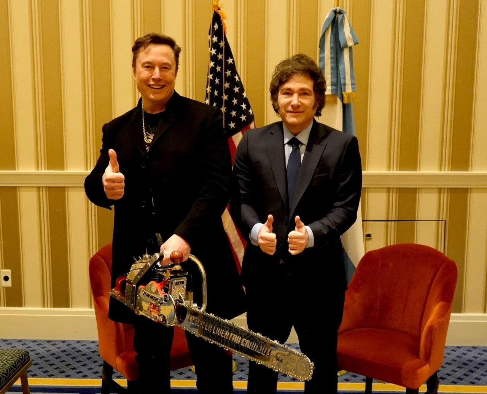
2025年2月20日、メリーランド州ナショナルハーバーでアルゼンチン大統領ハビエル・ミレイから贈られたチェーンソーを持つマスク。同日のCPACで、マスクはこのチェーンソーを「官僚機構のためのチェーンソー」と呼んで掲げたArgentina.gob / CC BY 4.0 / Wikimedia Commons トランプ政権の諮問委員会から離れるまで
2016年11月4日 45歳 米国 CNBCの電話インタビュー
投票日の4日前「おそらく彼は適任ではない」 大統領選挙の投票日を4日後に控えた2016年11月4日、マスクはCNBCの約30分の電話インタビューに応じた。テスラの充電網の話題から大統領選に質問が移ると、マスクはトランプについて「おそらく彼は適任ではない」と答えた。トランプは米国の評価を高めるような人格を持っていないようだとも述べている495
ヒラリー・クリントンについては、経済政策と特に環境政策が正しいと評価した。ただし選挙結果は大きな違いを生まないとも付け加えており、全面的な支持表明ではなかった495
2017年6月1日 45歳 米国 ワシントンD.C.（X投稿）
パリ協定離脱の発表当日に諮問委員会を辞任 当選後のトランプは、マスクを大統領の戦略・政策フォーラムと製造業の雇用に関する評議会の委員に起用した。マスクは就任を批判されながらも、委員として政権に気候変動対策を働きかけると説明していた496
2017年6月1日、トランプはパリ協定からの離脱を発表した。マスクは同日のうちに委員を辞任すると投稿した。その直前には、大統領本人とホワイトハウスの関係者を通じて残留を求めてきたとも書いている。辞任した委員会の数は報道によって2つと3つに分かれる496 497
大統領の諮問委員会を離れる。気候変動は現実だ。パリ協定からの離脱は米国にとっても世界にとっても良くないAm departing presidential councils. Climate change is real. Leaving Paris is not good for America or the world. イーロン・マスク、2017年6月1日のTwitter投稿
カリフォルニアとの対立とテキサス移住
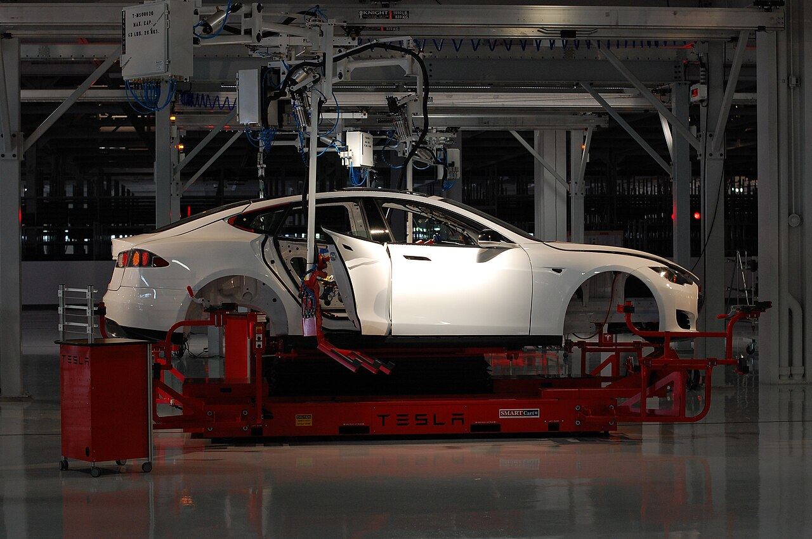
2011年のカリフォルニア州フリーモントのテスラ工場で組み立て中のモデルS。2020年5月、マスクはアラメダ郡の外出制限命令に反してこの工場の生産を再開したMaurizio Pesce / CC BY 2.0 / Wikimedia Commons 2020年5月9日〜11日 48〜49歳 カリフォルニア州 フリーモント工場
郡を提訴し「逮捕するなら私だけに」と投稿 新型コロナウイルスの感染拡大を受け、アラメダ郡はフリーモント工場の操業を最低限の業務に限っていた。テスラは2020年5月9日の土曜日に、操業停止命令の差し止めを求めて郡を連邦裁判所に提訴した。マスクは同じ日に、本社と将来の事業をテキサス州かネバダ州へ移すと投稿している498
2日後の5月11日、マスクは郡の規則に反して生産を再開したと投稿した。郡の保健当局は、工場は最低限の業務を超えて操業できないとの立場を変えなかった。その週のうちに郡は工場の安全計画を承認し、操業再開を認めた498 499
テスラはアラメダ郡の規則に反して本日生産を再開する。私もほかの全員と一緒にラインに立つ。誰かが逮捕されるなら、それは私だけにしてほしいTesla is restarting production today against Alameda County rules. I will be on the line with everyone else. If anyone is arrested, I ask that it only be me. イーロン・マスク、2020年5月11日のTwitter投稿
2020年12月8日 49歳 ウォール・ストリート・ジャーナル CEOカウンシル（オンライン）
「私自身は、テキサスに移った」 2020年12月8日、マスクはウォール・ストリート・ジャーナルのCEOカウンシルで、編集局長マット・マレーの質問に答えて個人の住所をテキサス州に移したと明かした。カリフォルニアは長く勝ち続けてきたとも述べ、同州の規制を批判した500
テキサス州には個人所得税がなく、カリフォルニア州は全米で最も高い水準の個人所得税を課している。この移住は税負担の軽減と結び付けて報じられた。ただし当時のテスラとスペースXは、カリフォルニア州に主要な拠点を残していた500
共和党への投票とトランプ支持
2022年5月18日〜6月15日 50〜51歳 テキサス州（X投稿）
「分断と憎悪の党」と書き、初めて共和党候補に投票 2022年5月18日、マスクは過去には民主党に投票してきたが今後は共和党に投票すると投稿した。この時期のマスクはツイッター買収の手続きを進めていた501
6月15日には、テキサス州第34選挙区の補欠選挙で共和党のメイラ・フローレスに投票したと明かした。本人はこれを初めての共和党への投票だと説明している。フローレスは民主党候補を破り、この議席は民主党から共和党に移った502
以前は民主党に投票していた。民主党は（おおむね）優しさの党だったからだ。だが彼らは分断と憎悪の党になったので、もう支持できない。共和党に投票するIn the past I voted Democrat, because they were (mostly) the kindness party. But they have become the party of division & hate, so I can no longer support them and will vote Republican. イーロン・マスク、2022年5月18日のTwitter投稿
2024年7月13日 53歳 ペンシルベニア州 バトラー（X投稿）
銃撃の直後に「トランプを全面的に支持する」 2024年7月13日、ペンシルベニア州バトラーの集会で演説中のトランプが銃撃され、右耳を負傷した。マスクは事件から間もなく、警護官に囲まれて壇上を降りるトランプの写真とともに支持を表明した。今回の大統領選でマスクがトランプ支持を公にしたのはこれが初めてである503
トランプ大統領を全面的に支持し、早い回復を願うI fully endorse President Trump and hope for his rapid recovery イーロン・マスク、2024年7月13日のX投稿
2024年10月19日〜11月4日 53〜53歳 ペンシルベニア州 ハリスバーグ・フィラデルフィア
毎日100万ドルの「抽選」と、法廷での「無作為ではない」 マスクが設立したスーパーPACのアメリカPACは、憲法修正第1条と第2条を支持する請願に署名した激戦州の有権者に毎日100万ドルを渡すと発表した。マスクは10月19日のハリスバーグでの集会で、受取人を無作為に選ぶと述べた。フィラデルフィア地区検事のラリー・クラズナーは、州法が禁じる違法な宝くじにあたるとして差し止めを求めた504
11月4日の審理で、アメリカPACの弁護士クリス・ゴーバーは受取人が偶然では選ばれていないと述べた。PACの広報担当としての適性で選んでいるという説明である。会計責任者のクリス・ヤングは、マスクが「無作為に」という語を使ったことに驚いたと証言した。フィラデルフィア郡のアンジェロ・フォリエッタ判事は理由を示さずに差し止めの申し立てを退けた。その時点で配布額は1,700万ドルに達していた504 505
100万ドルの受取人は偶然で選ばれているのではないThe $1 million recipients are not chosen by chance アメリカPACの弁護士クリス・ゴーバー、2024年11月4日のフィラデルフィアの法廷で
2024年10月27日 53歳 ニューヨーク マディソン・スクエア・ガーデン
「少なくとも2兆ドル」の削減目標 マディソン・スクエア・ガーデンでのトランプ集会で、キャンター・フィッツジェラルドCEOのハワード・ラトニックがマスクに質問した。6兆5,000億ドルの連邦予算からいくら削減できるかという問いに、マスクは少なくとも2兆ドルと答えた。2024会計年度の連邦政府の歳出は6兆7,500億ドルであり、2兆ドルはその3分の1近くにあたる506
ラトニックは後にポッドキャスト番組で、事前の打ち合わせでは1兆ドルと言う予定だったと明かした。マスク自身も2025年1月に、2兆ドルは最も良い場合の結果だと述べて目標を下方修正している507
2025年2月1日 53歳 米国 連邦選挙委員会（FEC）提出書類
年末の届出で判明した2億8,800万ドル 2024年の選挙期間の年末報告がFECに提出されると、ワシントン・ポストはマスクの支出を少なくとも2億8,800万ドルと集計した。請願への署名を促す報奨金は、アメリカPACとユナイテッド・ステーツ・オブ・アメリカ社を通じて少なくとも5,270万ドルが支払われた。このうち約4,050万ドルは選挙後の11月25日に、1,120万ドルは12月31日に計上された現物寄付である508
アメリカPAC自体の2024年の選挙期間の支出は2億6,120万ドルで、その半分以上がトランプ当選を目的とした支出だった509
マスクが選挙に投じた金額の比較（2024〜2026年）
単位：100万ドル。2024年はFEC届出の集計、2025年は報道による推定、2026年は投票日時点の集計
2024年 大統領選・議会選 288
2025年 ウィスコンシン州最高裁判事選（推定） 20〜25
2026年 中間選挙 474以上
2024年はワシントン・ポストのFEC届出集計、2025年はAPとフォーチュンの報道、2026年はCNBCの集計による。未開示の献金は含まない。
508 510 511 政府効率化省（DOGE）の130日
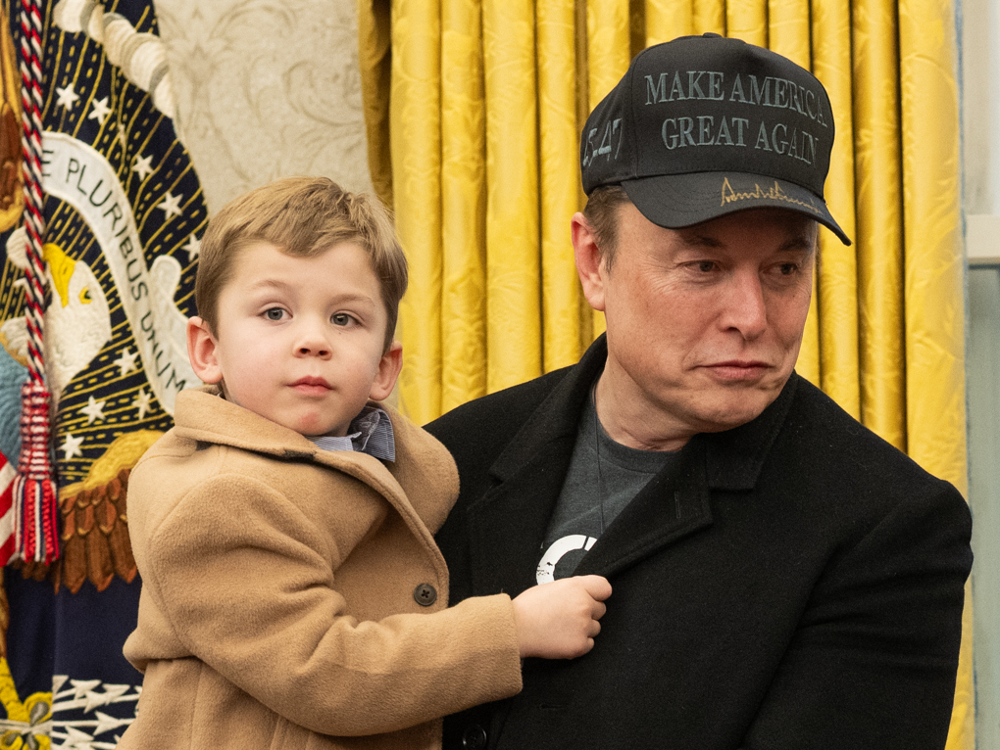
2025年2月11日、ホワイトハウスの大統領執務室で息子のX Æ A-Xiiを抱くマスク。この日トランプは、DOGEと連携した人員削減を各省庁に指示する大統領令に署名したThe White House / Public domain / Wikimedia Commons 2025年2月20日 53歳 メリーランド州 ナショナルハーバー CPAC
「官僚機構のためのチェーンソー」 保守政治活動会議（CPAC）の壇上で、マスクはアルゼンチン大統領ハビエル・ミレイから贈られたチェーンソーを掲げた。ミレイは2023年の大統領選で、国家機構の縮小の象徴としてチェーンソーを使っていた。刃には「自由万歳、こん畜生」というミレイの標語が刻まれていた。刻まれた文言はAPの報道では異なる表現になっている512
同じ時期、トランプ政権は内国歳入庁の職員約6,000人の解雇に着手していた512
写真・動画（外部） CPACの壇上でチェーンソーを掲げるマスク PBS NewsHour 2025年2月20日 2025年3月30日〜4月1日 53〜54歳 ウィスコンシン州 グリーンベイ
州最高裁判事選で100万ドルの小切手を手渡し、敗れる ウィスコンシン州最高裁の判事選挙は、裁判所の多数派を左右する選挙だった。マスクと関連団体は保守派のブラッド・シメルを支援し、支出は2,000万ドル超とも約2,500万ドルとも報じられた。州司法長官は、請願に署名した有権者に100万ドルを渡す計画の差し止めを求めた。州最高裁はグリーンベイでの集会の直前に全員一致でこの訴えを退け、マスクは3月30日の集会で2人に100万ドルの小切手を渡した513
4月1日の投票では、リベラル派のスーザン・クロフォードが約55%の得票で勝利し、裁判所のリベラル派4対3の多数は維持された510
2025年5月30日 53歳 ワシントンD.C. ホワイトハウス大統領執務室
特別政府職員としての任期の終わり マスクの立場は年間130日を上限とする特別政府職員だった。5月30日、トランプは大統領執務室でマスクとともに記者会見を開き、DOGEを離れるマスクを送り出した。同じ5月にマスクは、政治への支出を今後は大幅に減らすと述べ、もう十分にやったとも語っている514 509
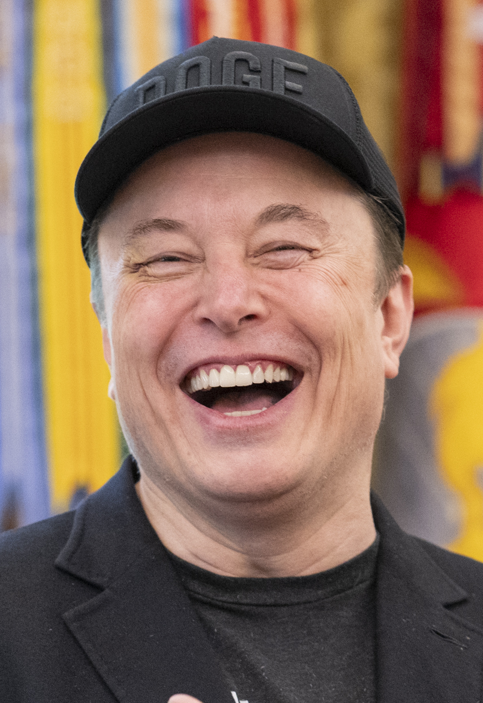
2025年5月30日、大統領執務室での記者会見で笑うマスク。帽子にはDOGEの文字がある。この会見から6日後、2人の対立が表面化したThe White House（Molly Riley）/ Public domain / Wikimedia Commons 2025年4月〜2026年8月 53〜55歳 ワシントンD.C. パートナーシップ・フォー・パブリック・サービス／会計検査院（GAO）
主張された節約額と、外部の検証 2025年4月28日の時点で、DOGEは1,600億ドルを節約したと主張していた。超党派の非営利団体パートナーシップ・フォー・パブリック・サービスは、DOGEの施策が当該会計年度に1,350億ドルの費用を生むと推計した。解雇した職員への有給休暇の支払いと生産性の低下を含めた額で、訴訟対応の費用と内国歳入庁の税収減は含んでいない515
同団体のマックス・スティア代表は、DOGEが生み出している無駄にはあまり注目が集まっていないと述べた。2兆ドルで始まった削減目標は1兆ドルから5,000億ドルへ縮小し、この時点では1,600億ドルになっていた515
DOGEは大統領令の定めにより2026年7月4日に活動を終えた。8月6日、会計検査院はDOGEのウェブサイト「領収書の壁」を検証した報告書GAO-26-108615を公表した。7月7日時点で同サイトは契約・補助金・賃貸借の解約による節約を1,100億ドルと表示していたが、報告書は一部の推計が誤りか根拠を欠くと結論づけた516
17億ドルの節約とされた国防保健局のIT契約は、実際には解約も縮小もされていなかった。補助金の節約額の96%は、算定方法を検証するための情報が提供されなかった。解約対象とされた賃貸借264件のうち108件は、DOGEの発足前から解約手続きが進んでいた516
ネクストガブの集計によれば、DOGEが解約したと主張した1万3,476件の契約のうち約2,000件は解約されていなかった。契約の解約による節約額610億ドルのうち、約346億ドルは解約されていないか裏付けの取れない契約によるものだった。報告書は民主党のゲーリー・ピーターズ上院議員とリチャード・ブルーメンソール上院議員の要請で作成された517
決裂と新党
2025年6月3日〜11日 53〜54歳 ワシントンD.C.（X投稿・Truth Social）
「本当に大きな爆弾を落とす時だ」 6月3日、マスクは政権の看板法案「ひとつの大きく美しい法案」を「おぞましい忌まわしいもの」と呼んだ。債務上限の引き上げ幅が米国史上最大だという理由である。6月5日、トランプは大統領執務室で、マスクには非常に失望したと述べた。マスクがいなくてもペンシルベニアでは勝っていたとも語っている518
トランプはTruth Socialに、予算を節約する最も簡単な方法はマスクへの政府補助金と契約を打ち切ることだと書いた。マスクは同日、トランプがジェフリー・エプスタインの捜査資料に名前があると投稿した。この主張に証拠は示されなかった。テスラの株価はこの日の午後3時半時点で16%以上下落した518
6月9日の夜、マスクはトランプに電話をかけたとABCニュースが報じた。2日後の11日、マスクは先週の投稿の一部を後悔していると書いた。どの投稿を指すかは示さなかった。弾劾を支持する投稿とエプスタインに関する投稿は、この前後に削除されている519 520
本当に大きな爆弾を落とす時だ。@realDonaldTrump はエプスタイン・ファイルに載っている。それが公開されていない本当の理由だTime to drop the really big bomb: @realDonaldTrump is in the Epstein files. That is the real reason they have not been made public. イーロン・マスク、2025年6月5日のX投稿（後に削除）
先週のトランプ大統領に関する投稿のいくつかを後悔している。行き過ぎだったI regret some of my posts about President @realDonaldTrump last week. They went too far. イーロン・マスク、2025年6月11日のX投稿
2025年7月5日 54歳 米国（X投稿）
「アメリカ党」の結成宣言と、その後の停止 減税と歳出の法案が7月4日に成立した翌日、マスクは新党「アメリカ党」の結成を宣言した。前日にX上で行った投票で、新党を望む回答が2対1の比率で多かったことを根拠にしている。2026年の中間選挙では上院の2〜3議席と下院の8〜10議席に絞って候補を立てると説明した521
発表当日にFECのサイトを検索しても、アメリカ党の登録は確認できなかった。2025年8月には、マスクが新党の計画を棚上げし事業を優先していると報じられた。2026年11月の時点で、アメリカ党の名義で中間選挙に立候補した候補は確認できない521 522
2対1の比率で、あなた方は新しい政党を望んだ。それを手にすることになる。浪費と汚職で国を破産させることにかけて、我々は民主主義ではなく一党制の中で生きている。本日、あなた方に自由を取り戻すためにアメリカ党を結成するBy a factor of 2 to 1, you want a new political party and you shall have it! When it comes to bankrupting our country with waste & graft, we live in a one-party system, not a democracy. Today, the America Party is formed to give you back your freedom. イーロン・マスク、2025年7月5日のX投稿
ドイツと英国の政治への関与
2024年12月20日〜2025年1月9日 53〜54歳 ドイツ（X投稿・ヴェルト・アム・ゾンターク紙）
ドイツの連邦議会選挙前に「AfDだけがドイツを救える」 2024年12月、マスクはXで「ドイツのための選択肢（AfD）だけがドイツを救える」と投稿した。数日後にはヴェルト・アム・ゾンターク紙に寄稿し、AfDをドイツの「最後の希望の火花」と書いた。この寄稿に抗議して、同紙の論説担当編集者エファ・マリー・コーゲルが辞意を表明した523
2025年1月9日、マスクはAfDの共同党首アリス・ヴァイデルとX上で公開の対談を行った。対談は英語で行われ、マスクはここでも、AfDだけがドイツを救えると繰り返した。連邦議会選挙は2月23日に予定されていた524
2025年9月13日 54歳 英国 ロンドン「ユナイト・ザ・キングダム」集会（ビデオ中継）
反移民集会への中継で「戦うか、死ぬかだ」 極右活動家トミー・ロビンソンが主催した集会には、10万人以上が集まった。マスクはビデオ中継で登壇し、議会の解散と早期の総選挙を求めた。集会の周辺では衝突が起き、警察官26人が負傷し、うち4人が重傷を負った525
スターマー首相はマスクの発言を危険で扇動的だと非難した。自由民主党のエド・デイヴィー党首は、マスクにどのような制裁を科すべきか検討するよう首相に求めた。英国政府はこの件でマスクと協議する予定はないと説明した525 526
暴力はあなた方のところへやって来る。戦い返すか、死ぬかだViolence is coming to you. You either fight back or you die. イーロン・マスク、2025年9月13日のロンドンの集会へのビデオ中継で
関係の修復
2025年9月21日〜2026年10月8日 54〜55歳 アリゾナ州 グレンデール／ワシントンD.C.
追悼式での握手から国家科学賞まで 9月21日、銃撃で死亡した保守派活動家チャーリー・カークの追悼式がアリゾナ州で開かれた。マスクとトランプはこの場で握手し、6月の対立以降で初めて公の場に並んだ。マスクは2人が並ぶ写真に「チャーリーのために」と添えて投稿した527
11月18日、トランプはサウジアラビアのムハンマド・ビン・サルマン皇太子のためにホワイトハウスで晩餐会を開いた。約140人の招待客の中に、黒のタキシードを着たマスクがいた。対立の後に2人がそろって公の場に現れたのはこれが2度目である528
2026年10月8日、トランプは米国平和研究所で開かれた科学技術の会合で、マスクに国家科学賞を授与した。同時に受賞したのはグーグル共同創業者のセルゲイ・ブリン、エヌビディアCEOのジェンスン・フアン、AMDのCEOリサ・スーである。トランプはスペースXとテスラを挙げてマスクを「現代のトーマス・エジソン」と呼んだ529
エロンほど多くの分野で米国の国益を前進させた米国人は、歴史上ほとんどいないFew Americans in history have done more to advance America's national interest than Elon in one field after another ドナルド・トランプ、2026年10月8日の国家科学賞の授与式で
2026年の中間選挙
2025年12月〜2026年10月 54〜55歳 米国 FEC提出書類
「もう十分にやった」から最大の献金者へ 2025年末、マスクは共和党の主要なスーパーPAC2団体に計1,000万ドルを献金した。アクシオスはこれをトランプとの関係修復に続く動きとして報じた。2026年7月30日にはニューヨーク・タイムズが、マスクが少なくとも8州で1億〜1億2,000万ドル規模の戸別訪問計画を承認したと報じた530 509
10月の四半期報告で、7月以降の献金は2億7,600万ドルを超えていたことが判明した。内訳は共和党の上院候補を支援する上院リーダーシップ基金に1億5,800万ドル、アメリカPACに7,600万ドルである。テキサス州上院選の共和党候補ケン・パクストンを支援する団体にも1,000万ドルを献金した。APはマスクを今回の中間選挙で最大の判明済み献金者と報じている514
これらの多額の投資によって、共和党の組織はメッセージを届けることができたThese robust investments have allowed the G.O.P. apparatus to get its message out アメリカPAC広報担当アンドルー・ロメオ、2026年10月のニューヨーク・タイムズへの説明
2026年11月3日〜4日 55〜55歳 米国 中間選挙／テキサス州
4億7,400万ドルを投じた選挙で共和党が両院を失う 10月23日、民主党が多数派を得れば議会がマスクを調査するという投稿に、マスクは「剣に生きる者は剣に死ぬ」と返信していた531 511 532
CNBCの集計では、マスクの中間選挙への支出は少なくとも4億7,400万ドルで過去最大だった。その47%にあたる2億2,400万ドルはテキサス州に投じられた。テキサス州では上院選のパクストンと知事選のグレッグ・アボットがともに敗れ、上院の議席は民主党のジェームズ・タラリコが獲得した。アメリカPACが標的とした連邦選挙は44件あった。11月4日朝の時点で共和党側の勝利は3件、敗北は29件で、12件は未確定だった511 533
投票日翌日の取引開始前、テスラの株価は3.5%下落した。11月6日の時点で、選挙結果に対するマスク本人の発言は確認できない511
写真（外部） 2026年中間選挙の上院選の開票速報 CBS News 2026年11月4日 12 第12章 家族と思想Family and Ideas マスクには報道と裁判記録で確認できる範囲で4人の女性との間に少なくとも14人の子どもがいる。長男は生後10週で亡くなり、娘のヴィヴィアンは18歳で父との関係を法的に断った。マスクは自らの事業の目的を「意識の範囲と規模を拡大する」ことだと説明し、出生率の低下を気候変動より大きな危険だと主張している。いずれの主張も、意識の存続そのものに価値があるという論証されていない前提の上に立っている。
最初の結婚と長男の死
2000年 28〜29歳 米国（結婚披露宴）
披露宴のダンスで「この関係では私がアルファだ」 マスクはカナダのクイーンズ大学で知り合った作家のジャスティン・ウィルソンと2000年に結婚した。ジャスティンが2010年に雑誌マリ・クレールに寄せた手記によれば、披露宴で踊っている最中にマスクは自分がこの関係のアルファだと告げた。結婚生活ではマスクが「君が私の従業員なら解雇している」と何度も言い、ジャスティンは「私はあなたの妻で、従業員ではない」と繰り返し答えたという77 534
これらはジャスティン側の証言で、マスク本人がこの場面について説明した記録は確認できない。
2002年 30〜31歳 カリフォルニア州
長男ネバダ、生後10週で乳幼児突然死症候群により死亡 2002年5月、2人の最初の子どもネバダ・アレクサンダーが生まれた。ネバダは生後10週で乳幼児突然死症候群（SIDS）により亡くなった。同じ年の10月には、マスクが共同創業したペイパルのイーベイへの売却が完了している535
ジャスティンはマスクがネバダの死について話そうとしなかったと書いている。2022年11月、マスクはXに長男が自分の腕の中で亡くなり最後の鼓動を感じたと投稿した。ジャスティンは3日後に、ネバダはSIDSに関連する出来事で生命維持装置につながれ脳死と判定されたと書き、抱いていたのは自分だったと反論した。最期の場面については、当事者2人の説明が一致していない536
私の最初の子どもは私の腕の中で死んだ。最後の鼓動を感じたMy firstborn child died in my arms. I felt his last heartbeat. イーロン・マスク、2022年11月のTwitter投稿
SIDSに関連する出来事で、彼は生命維持装置につながれた。脳死と判定された。（中略）でも、彼を抱いていたのは私だったA SIDS-related incident that put him on life support. He was declared brain-dead. ... but I was the one who was holding him. ジャスティン・マスク、2022年11月のTwitter投稿
2004〜2008年 32〜37歳 カリフォルニア州 ロサンゼルス
体外受精による双子と三つ子、そして離婚 ネバダの死後、2人は体外受精の治療を受けた。2004年4月に双子のグリフィンとザビエル（後のヴィヴィアン）が生まれた。2006年1月には三つ子のカイ・サクソン・ダミアンが生まれた535
2人は2008年に離婚した。ジャスティンは2010年9月のマリ・クレール誌の手記で、自分を「スターター・ワイフ」（最初の妻）と呼んだ。成功した男性が最初に結婚し、後に取り替える妻という意味の語である77 534
タルラ・ライリーとの2度の結婚
2009年8月、映画『セント・トリニアンズ2』の撮影現場のタルラ・ライリー。翌2010年にマスクと結婚し、2016年までに2度離婚したrodwey2004 / CC BY-SA 2.0 / Wikimedia Commons 2010〜2016年 38〜45歳 英国／カリフォルニア州 ロサンゼルス上位裁判所
2010年の結婚から2016年の2度目の離婚まで マスクは英国の俳優タルラ・ライリーと2010年に結婚し、2012年に離婚した。2人は18か月後に再婚した。2014年12月31日にはマスクが離婚を申し立てたが、約7か月後に取り下げている537
2016年3月、ライリーがロサンゼルス上位裁判所に離婚を申し立て、2度目の結婚も終わった。2人はこの時点で約6か月別居していた537 538 539
グライムス、ジリス、セントクレア
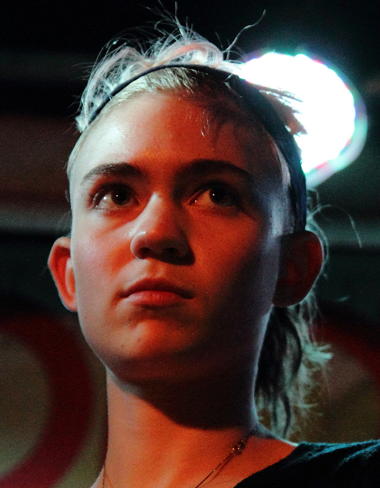
2011年10月の公演でのミュージシャンのグライムス（クレア・ブーシェ）。マスクとの間に2020〜2022年に3人の子どもが生まれたPhillip Nguyen / CC BY 2.0 / Wikimedia Commons 2020年5月〜2022年 48〜51歳 カリフォルニア州・テキサス州
グライムスとの3人の子ども 2020年5月4日、マスクとミュージシャンのグライムスとの間に息子X Æ A-12が生まれた。カリフォルニア州の出生届の規則に合わせ、名前は後にX Æ A-Xiiと改められた。2021年12月には娘のエクサ・ダーク・サイデラルが代理母出産で生まれた535
3人目の息子テクノ・メカニカス（愛称タウ）の存在は、2023年に出版されたウォルター・アイザックソンの伝記で初めて公になった。出生は2022年6月と報じられている535 373
2017年10月、人工知能に関する会合で発言するシボン・ジリス。当時はOpenAIに所属し、後にニューラリンクの幹部となったSteve Jurvetson / CC BY 2.0 / Wikimedia Commons 2021年11月〜2025年2月28日 50〜54歳 テキサス州 オースティン
ニューラリンク幹部シボン・ジリスとの4人の子ども 2021年11月、ニューラリンク幹部のシボン・ジリスがマスクとの双子ストライダーとアジュールを出産した。この出産は2022年7月、子どもの姓をマスクに変更するためにテキサス州の裁判所へ提出された書類から明らかになった。双子の誕生はグライムスとの第2子の誕生の数週間前だった540
2024年2月には3人目のアルカディアが生まれた。2025年2月28日、ジリスはアルカディアの1歳の誕生日を祝う投稿の中で、4人目の息子セルドン・リュクルゴスの誕生を公表した。マスクはこの投稿にハートの絵文字で返信した。出生日は公表されていない541
2025年2月14日〜2026年1月 53〜55歳 ニューヨーク州最高裁判所／ニューヨーク市
アシュリー・セントクレアの公表と親権訴訟 2025年2月14日、保守派のインフルエンサーで作家のアシュリー・セントクレアは、5か月前にマスクの子どもを出産したとXに投稿した。2月21日には、ニューヨーク州最高裁判所に親子関係の確認と単独親権を求める申し立てを行った。申立書によれば、2人の関係は2023年5月ごろに始まり、子どもは2024年9月に生まれた542
申立書でセントクレアは、マスクが子どもに会ったのは3回だけだと主張した。マスクが2025年2月に「私たちには作るべき子どもの軍団がある」と書き送ったとするメッセージも提出されている。これらは一方の当事者の主張で、裁判所の事実認定ではない542
2026年1月15日、セントクレアはxAIの生成AI「Grok」が自分の性的な偽画像を作成したとしてxAIをニューヨークで提訴した。xAIは同日、利用規約はテキサス州の連邦裁判所での提訴を定めているとしてテキサス州北部地区連邦地裁に反訴した。この時点の報道は、生後16か月の息子ロムルスをマスクの子どもと記載している543 544
マスクの子どもの数（母親別、2025年までに報道・裁判記録で確認できる範囲）
単位：人。長男ネバダ（2002年に死亡）を含む。合計は少なくとも14人
ジャスティン・ウィルソン（2002〜2006年） 6人
シボン・ジリス（2021〜2025年） 4人
グライムス（2020〜2022年） 3人
アシュリー・セントクレア（2024年） 1人
ジャスティンとの6人のうち5人は体外受精、グライムスとの第2子は代理母出産による。報道されていない子どもの有無は確認できない。
535 541 娘ヴィヴィアンとの断絶
2022年4月〜6月22日 50〜51歳 カリフォルニア州 ロサンゼルス郡上位裁判所サンタモニカ支部
18歳の誕生日の翌日に提出した改名の申し立て 2004年に双子の1人としてザビエル・アレクサンダー・マスクの名で生まれた子どもは、18歳になった翌日の2022年4月、ロサンゼルス郡上位裁判所に氏名と性別の変更を申し立てた。新しい名前はヴィヴィアン・ジェナ・ウィルソンで、姓には母ジャスティンの旧姓を選んだ545
申立書には、生物学上の父とはもう一緒に住んでおらず、どのような形でも関係を持ちたくないと記されていた。異議の申し立てはなく、サンタモニカ支部の裁判官が6月22日に変更を認めた545
私はもう生物学上の父と一緒に暮らしておらず、どのような形であれ、彼と関係を持つことを望まないI no longer live with or wish to be related to my biological father in any way, shape or form. ヴィヴィアン・ジェナ・ウィルソン、2022年4月の改名申立書
2024年7月22日〜25日 53〜53歳 デイリー・ワイヤーのインタビュー／Threads
「息子は死んだ」と「私が彼を勘当した」 2024年7月22日に公開されたジョーダン・ピーターソンとのインタビューで、マスクはヴィヴィアンの思春期抑制剤の治療に関する書類にだまされて署名したと述べた。思春期抑制剤は実際には不妊化の薬だと説明されなかったとも語り、息子は「ウォーク・マインド・ウイルス」に殺されたと表現した546
ヴィヴィアンはメタ社のSNS「Threads」に反論を投稿した。勘当したのは自分の側だと書き、マスクの話した内容はまったく起きていないと述べた。7月25日に公開されたNBCニュースの初めてのインタビューでは、マスクを不在がちな父親だったと語り、幼いころの自分が同性愛的で女性的であることに冷たかったと話した。マスクは書類を少なくとも2回読んでいたとも述べ、だまされたという説明を否定した547 548 549
デッドネーミングと呼ぶのには理由がある。その理由とは、あなたの息子が死んだことだ。私の息子は死んだ。ウォーク・マインド・ウイルスに殺されたThey call it deadnaming for a reason, the reason is your son is dead. My son is dead, killed by the woke mind virus. イーロン・マスク、2024年7月22日公開のジョーダン・ピーターソンとのインタビューで
はっきりさせておきたい。私が彼を勘当したのであって、その逆ではないI want to make one thing absolutely clear. I disowned him, not the other way around. ヴィヴィアン・ジェナ・ウィルソン、2024年7月のThreads投稿
アスペルガー症候群の公表
2021年5月8日 49歳 ニューヨーク NBC『サタデー・ナイト・ライブ』
司会の冒頭で「アスペルガー症候群の初めての司会者」 2021年5月8日、マスクはNBCのコメディ番組『サタデー・ナイト・ライブ』の司会を務めた。冒頭の独白で、マスクは自分がアスペルガー症候群の人として初めての司会者であり、少なくともそれを認めた最初の人だと述べた550 551
マスクは自分が時々おかしなことを言ったり投稿したりするのは脳の働き方によるものだと説明した。同じ回には母メイも出演し、12歳のころのマスクについて話した550
気分を害した人がいたなら言っておきたい。私は電気自動車を再発明し、人々をロケットで火星に送ろうとしているTo anyone who's been offended, I just want to say I reinvented electric cars ... I'm sending people to Mars in a rocket ship. イーロン・マスク、2021年5月8日の『サタデー・ナイト・ライブ』の冒頭で
思想：問い、第一原理、意識
『銀河ヒッチハイク・ガイド』の作者ダグラス・アダムズ。マスクは10代の実存的な危機から抜け出す助けになった本としてこの作品を挙げているMichael Hughes / CC BY-SA 2.0 / Wikimedia Commons 1980年代前半（12〜15歳ごろ） 8〜9歳 南アフリカ プレトリア
『銀河ヒッチハイク・ガイド』と「正しい問い」 マスク本人の回想によれば、10代の初めに人生の意味をめぐる実存的な危機に陥った。年齢は本人の説明でも12歳から15歳まで幅がある。ニーチェやショーペンハウアーを読んだ後に手に取ったのが、ダグラス・アダムズの『銀河ヒッチハイク・ガイド』だった48 552
作中では、巨大なコンピューターが生命と宇宙と万物についての究極の答えを「42」と出すが、問いが何だったのかは誰にも分からない。マスクはこの話から、問いのほうが答えより難しい場合が多いという教訓を得たと説明している48
問いを正しく言い表すことができれば、答えは簡単な部分だ。だから宇宙をよりよく理解できるほど、どんな問いを立てるべきかもよく分かるようになるIf you can properly phrase the question, then the answer is the easy part. So, to the degree that we can better understand the universe, then we can better know what questions to ask. イーロン・マスク、『銀河ヒッチハイク・ガイド』について（CNBC 2017年6月6日の記事による）
2012年／2013年2月 40〜42歳 ケヴィン・ローズとのインタビュー／カリフォルニア州ロングビーチ TED2013
第一原理思考と電池のコスト 2012年、マスクはディグの創業者ケヴィン・ローズのインタビューで、類推ではなく第一原理から推論する方法を説明した。例に挙げたのは電池である。電池パックの価格は歴史的に1キロワット時あたり約600ドルで、人々はこれを変わらないものと考えていた。マスクは電池をコバルト・ニッケル・アルミニウム・炭素・高分子材料・鋼製の容器に分解し、ロンドン金属取引所の価格で積算した。材料費は1キロワット時あたり約80ドルだった553
2013年のTEDでは、同じ考え方を根本的な真理から積み上げる推論として説明した。私たちが日常で類推に頼るのは、他人のやり方をわずかに変えて模倣すれば一日を過ごせるからだとも述べている。材料費の積算は加工費と製造設備の費用を含まない。600ドルと80ドルの差がそのまま削減できる余地を示すわけではない553 554
物事を根本的な真理まで分解し、そこから積み上げて推論する。類推で推論するのとは反対のやり方だboil things down to their fundamental truths and reason up from there, as opposed to reasoning by analogy イーロン・マスク、2013年2月のTED2013で
2023年11月29日 52歳 ニューヨーク ニューヨーク・タイムズ DealBookサミット
「好奇心の哲学」と意識の範囲と規模 DealBookサミットで、アンドルー・ロス・ソーキンはマスクに人生の哲学を尋ねた。マスクは12歳ごろに、すべては無意味ではないのか、なぜ存在するのかと考える実存的な危機を経験したと答えた。そのうえで自分の哲学を好奇心の哲学と呼び、意識の範囲と規模を拡大できれば正しい問いを見つけやすくなると説明した555
この説明では、意識が存続し拡大すること自体に価値があることが前提になっている。マスクはこの前提を論証していない。カトリック系の論者マシュー・ベクロは、マスクの宗教・科学・哲学の探索は意味についての確かな答えに至っておらず、宇宙植民も人間の条件を解決しないと批判した。英誌ニュー・ヒューマニストのサイモン・マッカーシー＝ジョーンズは、マスクが『銀河ヒッチハイク・ガイド』を選択的に読んでいると論じた。権力を求める者に権力を与えるべきではないという作品の主題を、マスクは取り上げていないという指摘である555 556
意識の範囲と規模を拡大できれば、どんな問いを立てるべきかをよりよく見つけられる。そして人生の意味が分かるかもしれないif we can expand the scope and scale of consciousness, then we are better able to figure out what questions to ask ... And maybe we can find out the meaning of life. イーロン・マスク、2023年11月29日のDealBookサミットで
多惑星種、出生率、真実を追求するAI
2022年8月26日 51歳 米国（Twitter投稿）
「人口崩壊は地球温暖化よりはるかに大きな危険だ」 マスクは人類を複数の惑星に住む種にすることをスペースXの目的としてきた。同じ文明の存続という枠組みで、出生率の低下も繰り返し取り上げている。2022年8月26日には、低い出生率による人口崩壊は地球温暖化よりもはるかに大きな危険だと投稿した。続く投稿では、地球温暖化も大きな危険だと考えているとも書いた557 556
国連人口部の元部長ジョセフ・シャミは、人口が減っている国はあるが世界全体ではそうではないと反論した。世界人口は2022年に80億人に達すると見込まれていた。出生率の低下が文明の危機だという主張も、文明と意識の存続を最優先の価値とする前提に立っており、この前提は論証されていない557
低い出生率による人口崩壊は、地球温暖化よりもはるかに大きな文明への危険だPopulation collapse due to low birth rates is a much bigger risk to civilization than global warming イーロン・マスク、2022年8月26日のTwitter投稿
2023年4月17日〜7月12日 51〜52歳 フォックス・ニュース／ネバダ州 xAI
「TruthGPT」からxAIへ 2023年4月17日に放送されたフォックス・ニュースのタッカー・カールソンとのインタビューで、マスクは「TruthGPT」を始めると語った。最大限に真実を追求し、宇宙の成り立ちを解明しようとするAIだという説明である。マスクはOpenAIのChatGPTが政治的に偏るように訓練されていると批判し、宇宙を解明しようとするAIは人類を滅ぼす可能性が低いとも述べた558 559
7月12日、マスクは「現実を解明するため」のxAIの設立を発表した。同社のウェブサイトは、宇宙の真の性質を解明することを目的に掲げた。Twitterの音声配信では、道徳を書き込むのではなく最大限に好奇心を持つAIを目指すと説明している。何を真実とするかを誰が判断するのかについて、マスクは基準を示していない560 561
私は「TruthGPT」と呼ぶものを始めるつもりだ。最大限に真実を追求し、宇宙の成り立ちを解明しようとするAIだI'm going to start something which I call 'TruthGPT', or a maximum truth-seeking AI that tries to understand the nature of the universe. イーロン・マスク、2023年4月17日放送のフォックス・ニュースのインタビューで
伝記作家が見た「デーモン・モード」
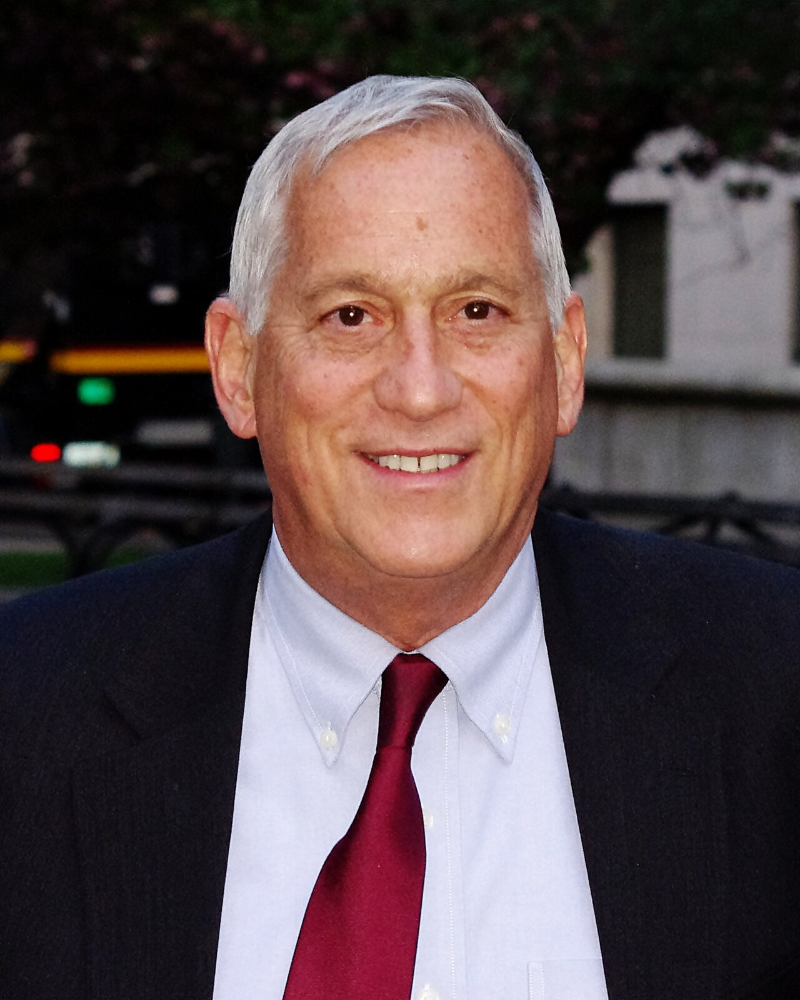
2012年4月、ニューヨークでの伝記作家ウォルター・アイザックソン。2023年9月にマスクの伝記を出版したDavid Shankbone / CC BY 3.0 / Wikimedia Commons 2023年6月27日〜10月3日 51〜52歳 Twitterの音声配信／マサチューセッツ州ケンブリッジ ファースト・パリッシュ教会
グライムスが名付けた「デーモン・モード」 伝記の出版前の2023年6月27日、アイザックソンはTwitterの音声配信で、マスクには「デーモン・モード」と呼ばれる状態があると語った。命名したのはグライムスで、非常に生産的な状態である一方、共感を著しく欠くとアイザックソンは説明した562
出版後の10月3日、ハーバード書店がケンブリッジのファースト・パリッシュ教会で開いた催しで、アイザックソンは時間の比率を示した。8割の時間はデーモンを大きな推進力として使い、2割の時間はデーモン・モードに入るという。この伝記はアイザックソンが2年間マスクに同行した取材に基づいており、内面の描写の多くはマスク本人とその周辺の証言による563 373
8割の時間、彼は自分のデーモンを制御して大きな推進力に変えている。残りの2割の時間は、グライムスが「デーモン・モード」と呼ぶ状態に入る。それは見ていて気持ちのよいものではない80 percent of the time, he harnesses his demons so they become great drives, and 20 percent of the time, he goes into what Grimes — Claire Boucher, one of his girlfriends — calls 'demon mode.' And that's not a pretty sight. ウォルター・アイザックソン、2023年10月3日のハーバード書店の催しで
結 失敗の一覧と金額Failures, Counted in Dollars ここで扱う失敗16件を時期で並べると、2006〜2008年が2件と2016〜2018年が3件で、2022〜2026年が11件となる。2025年と2026年の2年間だけで9件あり、そのうち6件は発言と規制、または政治に関するものだった。金額が最も大きいのは2025年6月のトランプ大統領との決裂で失われたTesla時価総額の約1,500億ドルで、Tesla報酬の560億ドルとTwitter買収の440億ドルが続く。
個人資産の増減もこの偏りと一致する。Forbesのリアルタイム集計では、2026年6月12日のSpaceX上場から4日後の6月16日に1兆4,000億ドルに達した8 1 1 564
技術
Falcon 1 の1〜3回目の失敗（2006〜2008年）。 SpaceXはクェゼリン環礁から2006年、2007年、2008年に打ち上げたFalcon 1を3回続けて失った。4回目の2008年9月28日に初めて軌道に到達し、民間が開発した液体燃料ロケットとして初の軌道到達となった565 566
Model 3 の量産の遅れ（2017〜2018年）。 マスクはModel 3の立ち上げ期を「生産地獄」と呼んだ。2018年11月のAxiosのインタビューでは、Teslaが倒産まで「1桁の週数」の位置にあったと述べた567 567
Starshipの連続爆発（2025年）。 2025年1月16日の7回目の飛行では上昇中に機体が失われ、FAAが事故調査を命じた568 569 570 571
Autopilot死亡事故の陪審評決（2025年8月）。 2019年にフロリダ州キーラーゴでAutopilotを作動させたModel Sが歩行者2人をはね、22歳のナイベル・ベナビデスが死亡した。マイアミの連邦地裁の陪審は2025年8月、Teslaに責任の33%を認めた。補償的損害のうちTeslaの負担分4,250万ドルと懲罰的損害2億ドルを合わせ、2億4,300万ドルの支払いを命じた572 572
資金繰り
2008年のTeslaとSpaceXの資金枯渇。 2008年8月にFalcon 1の3回目の打ち上げが失敗した時点で、SpaceXの資金は残り少なかった。マスクは当時SpaceXとTeslaの両社に資金を出していた573 573 573
買収
SolarCity買収（2016年）。 Teslaはマスクが会長を務め、従兄弟が創業したSolarCityを株式交換で約26億ドルで買収した26 27
Twitter買収（2022年）。 マスクは2022年10月にTwitterを440億ドルで買収し、社名をXに改めた。2025年3月28日には自らのxAIがXを株式交換で取得したと発表した。このときのX評価額は330億ドルで、負債120億ドルを含めると450億ドルである23
経営と統治
Tesla報酬の一審取消（2024〜2025年）。 Tesla株主のリチャード・トルネッタは、2018年に承認された報酬案の取消を求めて提訴した。デラウェア州衡平法裁判所は2024年1月にこれを取り消し、同年12月の再審理でも判断を維持した574 354 16
Teslaの2年連続の販売減少（2024〜2025年）。 Teslaの2025年の納車台数は約164万台で、2024年の約179万台から8.6%減った575 576 576
発言と規制
「資金は確保した」投稿とSEC和解（2018年）。 マスクは2018年8月7日、Teslaを1株420ドルで非公開化すると投稿し、資金は確保したと書いた。SECはこの投稿を重大な虚偽と主張し、同年9月にマスクとTeslaがそれぞれ2,000万ドルの民事制裁金を払うことで和解した577 577
Twitter株保有の開示遅延（2025〜2026年）。 SECは2025年1月、マスクがTwitter株の5%超の保有を期限より11日遅れて開示したとして提訴した。SECは株主の損害を1億5,000万ドル超と主張していた578 578
Twitter株主集団訴訟の陪審評決（2026年3月）。 サンフランシスコの連邦地裁の陪審は2026年3月20日、2022年5月の2件の投稿が虚偽でTwitter株の下落を招いたとして、マスクの責任を認めた579 580
EUのデジタルサービス法違反（2025年12月）。 欧州委員会は2025年12月5日、Xに1億2,000万ユーロの罰金を科した。同法に基づく初の違反決定である581 582
Grokによる性的画像の生成（2026年1月）。 xAIのGrokが実在の人物の画像から性的な画像を生成していた問題で、カリフォルニア州司法長官は2026年1月14日に調査を始めた583 584
政治
DOGEの削減額の目標未達（2025年）。 マスクは政府効率化省（DOGE）で連邦支出を少なくとも2兆ドル削減できると述べていた。2025年4月には同年の見込みを1,500億ドルに下げている585 586
トランプ大統領との決裂（2025年6月）。 マスクは2025年6月5日、トランプ大統領が議会に通そうとしていた減税・歳出法案を「おぞましい」と批判した。トランプは政府契約の打ち切りに言及して応じた。同日のTesla株は14%下落し、時価総額は約1,500億ドル減った587 588
政治への支出額は増え続けている。2024年の選挙では2億9,000万ドル超を支出した589 590
人 マスクを動かした人々The People Around Him 本文に登場した主な人物を、最初の決定的な接点の年で並べた。表の章の列は、その人物が初めて本文に現れる章を示す。創業期の共同創業者や初期の経営者の多くは、対立や解任を経てマスクの会社を離れている。Zip2 ではマスク自身がCEOの座を外され、PayPal ではCEOを解任された。Tesla では創業者のエバーハードがCEOを退き、Twitter では買収の当日に経営陣が解任された。
出会いの年表 — マスクを動かした人々
点は本文で扱った最初の決定的な接点の年。横軸は西暦
1970 1980 1990 2000 2010 2020 家族 エロール メイ トスカ ウィルソン キンバル ライブ ライリー グライムス 創業と資金 コウリ ソーキン フリッカー ティール レヴチン グラシアス ジャーベットソン エリソン SpaceX カントレル グリフィン ミューラー ショットウェル ケーニヒスマン ブライデンスタイン アイザックマン Tesla エバーハード ターペニング ストローベル ホルツハウゼン デンホルム トルネッタ カークホーン AI ハサビス ペイジ アルトマン サツケバー ジリス カルパシー バブシュキン フアン 交渉相手と政治 トランプ ルマイヤン 李強 マコーミック アグラワル テイラー ドーシー フェドロフ ヤッカリーノ ヴァンス ラマスワミ 録 本文に出た発言Quotes Used in This Page 本文に引用した発言148件を、出てきた順に並べた。英語の発言は原文を併記した。発言者と時点は本文の記述に従い、出典は本文側の上付き番号で確認できる。
あの人は本当にひどい人間だった。想像もつかないだろう
He was such a terrible human being. You have no idea.
私は本に育てられた。本、その次が両親だ
I was raised by books. Books, and then my parents.
いじめは美徳とみなされていた
Bullying was considered a virtue.
家にたまたまニーチェとショーペンハウアーの本があった。14歳で読むべき本ではない
We happened to have some books by Nietzsche and Schopenhauer in the house, which you should not read at age 14.
多くの場合、問いのほうが答えより難しい。問いを正しく立てられれば、答えを出すのは簡単だ
A lot of times the question is harder than the answer. If you can properly phrase the question, then the answer is the easy part.
あの少年は父親を自殺で亡くしたばかりで、イーロンは彼を愚かだと言った。どうしてその子を責められるだろうか
That boy had just lost his father to suicide and Elon called him stupid. How could I possibly blame that child?
南アフリカで育ったが、あそこは非常に暴力的な場所だ。それが私を強くしたのは確かだ
I grew up in SA, which is a very violent place. It played a role in toughening me up, that's for sure.
この鉱山が存在したという客観的な証拠はまったくない
There is no objective evidence whatsoever that this mine ever existed.
17歳で国を出た。まあ、一部は軍の徴兵を避けるためだった
I left at 17. Well, in part, in order to avoid conscription in the army.
ばかげた話だ。そんなこととは何の関係もなかった
However, it is nonsense. It had nothing to do with that.
カナダの旅券を手にしてから3週間以内に、私はカナダにいた
Within three weeks of getting my Canadian passport, I was in Canada.
父はけんか腰で、3か月で戻ってくるだろうと言った
He said rather contentiously that I'd be back in three months.
カナダのいとこの農場で、17歳。帽子の上に帽子をかぶっている
On my cousin's farm in Canada at 17, wearing a hat on a hat.
中に30分以上いると、暑さで死ぬ。逃げ道はない
If you stay in there for more than 30 minutes, you get too hot and die. There is no escape.
イーロンは何かに打ち込むと、ほかの人とは次元の異なる関心をそれに向ける
When Elon gets into something, he develops just this different level of interest in it than other people.
あれだけの行動力を持つ若者2人となら、喜んで昼食を共にするつもりだった
I was perfectly prepared to have lunch with a couple of kids that had that kind of gumption.
ペンシルベニア大学にいた頃、人類の将来に最も影響するものは何かを考え始めた
When I was at Penn, I started thinking about what would most affect the future of humanity.
職には就けた。インターネット企業でなかっただけだ（当時はほとんど無かった）
I could get a job, just not at an Internet company (weren't many back then)
まあやってみなさい。だが3か月後にはまた会うことになるだろう
Well, give it a shot, but I'll bet we'll see you in three months.
大学院の研究を（永久に）延期していなければスタンフォードで私の教授になっていたビル・ニックスから、よい手紙が届いた
Nice letter from Bill Nix, who would've been my prof at Stanford if I hadn't placed grad studies on (permanent) deferment
研究室を持つ資金もなく、この国にとどまる法的な権利もなかった。だから大学院への出願はその両方を解決するよい方法に思えた
I had no money for a lab and no legal right to stay in the country, so that seemed like a good way to solve both issues.
私は実際に米国で働くことを認められていた
I was in fact allowed to work in the US.
インターネットはまさに超新星のように爆発的に広がる直前だった
the internet was definitely about to go supernova
YMCAでシャワーを浴びていた。金がなく、コンピューターは1台しかなかった
We showered at the YMCA and we were so hard-up that we only had one computer.
これに取って代わるつもりだとでも思っているのか
You ever think you're going to replace this?
CEOでなければ、本当の意味で最高技術責任者や最高製品責任者にはなれないと学んだ
I learned that you could not truly be the chief technology or product officer unless you were the CEO.
これは要するに、Sidewalkに対する新聞業界の回答だ
This is essentially the newspaper industry's response to Sidewalk
マイクロソフトやAOLのような企業と競うために必要なものを提供できる
We can provide what's necessary to compete with the Microsofts and AOLs of the world.
意見が一致しないリスクが大きすぎた
the risk of not seeing eye to eye was too great
AltaVistaと手を組むことで、Zip2は目標をより早く実現できる
Joining forces with AltaVista will enable Zip2 to more quickly achieve its vision.
世界にMcLarenは62台あり、そのうちの1台を私が所有する
There are 62 McLarens in the world, and I will own one of them.
バハマの島を一つ買って自分の領地にすることもできる。だが私は新しい会社を設立するほうに関心がある
I can go out and buy one of the islands in the Bahamas and turn it into my personal fiefdom, but I'm more interested in trying to build a new company.
Zip2はおよそ15分ごとに戦略を変える
Zip2 changes its strategy about every 15 minutes.
イーロンは金融サービスについて何も知らなかった
Elon knew nothing about financial services
最低残高はない。口座を開けば、当座預金口座に20ドルの販促特典が入る
There are no minimum balances. You can open an account and receive a $20 promotional offer in your checking account.
今は第3の段階にあり、人々はインターネットを自分の主要な金融の預け先として使う準備ができている
I think we're at the third stage now where people are ready to use the Internet as their main financial repository.
2人とも怪我をしなかったのは奇跡だった。シートベルトを締めていなかった。勧められることではない
It was a miracle neither of us were hurt. I wasn't wearing a seatbelt, which is not advisable.
自分には起こらないと分かっていたから、保険には入っていなかった
But I knew it would never happen to me, so I didn't get any insurance.
小規模な決済の仕組みに留まるならPayPalのほうがよい。だが世界の金融システムを手に入れたいなら、Xのほうがよい名称だ
If you want to just be a niche payment system, PayPal is better. But if you want to take over the world's financial system, then X is the better name.
ソフトウェアの設計の対立を解決する方法として、考えうる最も愚かなものだった
the stupidest imaginable way to settle a software-coding disagreement
シリコンバレーの長く輝かしい悪質なクーデターの歴史の中でも、最も悪質なものの一つ
one of the nastiest coups in Silicon Valley's long, illustrious history of nasty coups
当初は強く憤った
I was pretty angry at first
もちろん、私が残っていればPayPalは1兆ドル企業になっていた
Of course, if I had stayed, PayPal would be a trillion-dollar company.
それが休暇の問題点だ
That's the problem with vacations
休暇は人を殺す。それに南アフリカだ。あの土地はいまだに私を消し去ろうとしている
Vacations will kill you. Also, South Africa – that place is still trying to destroy me.
彼が死んでいたら、我々の財務の問題はすべて解決していた
If he had died, all of our financial problems were going to be solved
eBayとPayPalの使命は互いを補う。どちらも人々がオンラインで売り買いできるようにしている
eBay and PayPal have complementary missions. We both empower people to buy and sell online.
eBayとPayPalは、いずれも活発な利用者のネットワークを築いてきた
eBay and PayPal have built vibrant user networks on the Internet
ピーターとマックスと私は、思想の上で一致しているわけではない
Peter, Max, and I are not directly aligned philosophically
イーロンの最も優れた能力の一つは、自分の構想を天からの命令であるかのように示せることだ
One of Elon's greatest skills is the ability to pass off his vision as a mandate from heaven
ついにX.comを、本来なされるべきだった形で実現できることに大いに興奮している。Twitterを加速装置として使う
very excited about finally implementing X.com as it should have been done, using Twitter as an accelerant!
今のところ計画はないが、私にとって大きな思い入れがある
No plans right now, but it has great sentimental value to me.
そのあとロシアの宇宙開発の関係者との会合が始まった。基本的にウォッカで動いている組織だった
Then we started having meetings with the Russian space program, which is basically fueled by vodka.
彼らはこう言った。「坊や、金がないのか」
They said, 'Oh, little boy, you don't have the money?'
ロケットは自分たちで造れると思う
I think we can build a rocket ourselves.
ロケット産業にもいずれヘンリー・フォードが必要になる。イーロンがその人物かもしれない
At some point the rocket industry needs a Henry Ford, and maybe Elon will be that guy.
SpaceX は長期戦のつもりでいる。何があろうと、私たちはこれを成功させる
SpaceX is in this for the long haul and, come hell or high water, we are going to make this work.
私について言えば、決してあきらめない。本当に決してだ
For my part, I will never give up and I mean never.
3回の失敗でも十分に悪い。4回失敗すれば本当に終わりだ
It's bad enough to have three strikes, having four strikes is really kaput.
私たちにはできないと考えた人が大勢いた。しかし言い習わしのとおり、4度目の正直だ
There are a lot of people that thought we couldn't do it, but as the saying goes, fourth time's the charm.
私が感じているのは、高揚よりも安堵のほうがはるかに大きい
The emotion I feel is much more relief than elation.
NASA から電話があり、15億ドルの契約を獲得したと告げられた
NASA called and told us that we'd won a $1.5 billion contract.
それに、離婚の最中でもあった。あれは間違いなく人生で最悪の年だった
And I'm getting divorced, by the way, add to that. That was definitely the worst year of my life.
あの人たちは私の英雄なので、本当につらい。ここに来て、私たちの仕事を見てほしい。そうすれば考えが変わると思う
Those guys are heroes of mine, so it's really tough … I wish they would come and visit … see the hard work that we're doing here and I think that it would change their mind.
アフリカにいる今、SpaceX の打ち上げの失敗で私たちの衛星が失われたと聞き、深く失望している
As I'm here in Africa, I'm deeply disappointed to hear that SpaceX's launch failure destroyed our satellite
少しばかげていて楽しいことだが、ばかげていて楽しいことは重要だと思う
It's kind of silly and fun, but I think that silly and fun things are important
今日は本当に感情があふれていて、正直なところ話すのが難しい
I'm really quite overcome with emotion on this day, so it's kind of hard to talk, frankly.
あなたが火星を植民地にしようとしている間に、ロシアはウクライナを占領しようとしている
@elonmusk, while you try to colonize Mars — Russia try to occupy Ukraine!
もし要請に応じていれば、SpaceX は大規模な戦争行為と紛争の拡大に明確に加担することになった
If I had agreed to their request, then SpaceX would be explicitly complicit in a major act of war and conflict escalation.
大統領が私の政府契約の打ち切りに言及したことを受け、SpaceX は Dragon 宇宙船の退役を直ちに開始する
In light of the President's statement about cancellation of my government contracts, @SpaceX will begin decommissioning its Dragon spacecraft immediately.
私の見積もりでは、2〜3年以内に AI の計算能力を最も安く得る方法は宇宙で行うことになる
My estimate is that within 2 to 3 years, the lowest cost way to generate AI compute will be in space.
私は SpaceX が成功する確率を10%未満と見ていた
I gave SpaceX a less than 10% chance of succeeding at all,
見事な打ち上げだ。Ship を軌道に運び、すべての段階を安全かつ責任ある形で、そして何より人を勇気づける形で進めた
Gorgeous launch, getting Ship to orbit and managing every step in a safe, responsible, and especially inspirational way.
それが良い考えだと思うか。思う
Do I think it would be a good idea? Yes
セルゲイ・ブリンとJB・ストローベルの2人から、あなたが当社のtzeroに乗ってみたいのではないかと聞きました
Sergey Brin and JB Straubel both suggested you might be interested in driving our tZero electric sports car.
イーロンに説明して、彼が出資を主導すると言った時点で、私たちは走り出した
We pitched Elon, and when he said that he would lead, then we were off to the races
私は事実上、シリーズAの資金のすべてを出した
So I provided essentially, all of the Series A funding.
テスラRoadsterはガソリンを使わずにスポーツカーの性能を実現する
The Tesla Roadster delivers sports car performance without using any gasoline.
つまり、マスタープランはこうだ。スポーツカーを製造する。その資金で手頃な車を製造する。その資金でさらに手頃な車を製造する
So, in short, the master plan is: Build sports car / Use that money to build an affordable car / Use that money to build an even more affordable car
性格の違いの問題ではない。マーティンを助言役に移す決定は取締役会の全会一致だった
It was not a question of personality differences, as the decision to have Martin transition to an advisory role was unanimous among the board
テスラがそこに到達するまでに十分以上の資本を確保できるよう、必要なことは何でもする
I will do whatever is needed to ensure that Tesla has more than sufficient capital to get there.
その資金調達は2008年のクリスマスイブ午後6時に完了した。可能な最後の日の最後の1時間だった。投資家はその夜に町を離れる予定で、私たちは破産の3日前にいた
That funding round completed 6pm on Christmas Eve in 2008. Last hour of last day possible, as investors were leaving town that night & we were 3 days away from bankruptcy.
あれは間違いなく人生で最悪の年だった
That was definitely the worst year of my life.
私たちはできるだけ早く法廷で事実を証明し、歴史の記録を正すことを楽しみにしている
We look forward to proving the facts in court as soon as possible and setting the historical record straight.
共同創業者として、イーロンのテスラへの貢献は並外れたものだった
As a co-founder of the company, Elon's contributions to Tesla have been extraordinary,
マーティンの欠かせない働きがなければ、テスラ・モーターズは今日ここにない
Without Martin's indispensable efforts, Tesla Motors would not be here today,
この車は製造され、市場に出る。それについて疑いを持つ必要はまったくない
This car will be manufactured, it will come to market. They should have zero doubt about that.
ダイムラーは1世紀以上にわたり、工学の卓越性と車の品質の基準を示してきた
Daimler has set the benchmark for engineering excellence and vehicle quality for more than a century,
テスラはこの融資を、議会が意図したとおりに、持続可能な輸送手段を築くための資本として使う
Tesla will use the loan precisely the way Congress intended--as the capital needed to build sustainable transport.
テスラの技術の大きな可能性を感じ、ものづくりへの献身に感銘を受けた
I sensed the great potential of Tesla's technology and was impressed by its dedication to monozukuri
トヨタがテスラへの出資と提携を選んだことは光栄であり、私たちの技術に対する力強い支持である
It is an honor and a powerful endorsement of our technology that Toyota would choose to invest in and partner with Tesla,
投資家の反応は非常に大きかった
The response from investors has been tremendous.
あの車のすべての部分を、可能な限り完璧にしたい
We want every aspect of that car to be as perfect as possible
週5,000台のModel 3生産に達するには最終組立ラインがもう1本必要だった。新しい建屋は無理なので、2週間で巨大なテントを建てた
Needed another general assembly line to reach 5k/week Model 3 production. A new building was impossible, so we built a giant tent in 2 weeks.
工場を3日か4日離れない時期があった。外に一歩も出ない日もあった
There were times when I didn't leave the factory for three or four days — days when I didn't go outside
この和解の結果、イーロン・マスクはテスラの会長ではなくなる
As a result of the settlement, Elon Musk will no longer be Chairman of Tesla
Model 3の立ち上げは長い期間にわたる極度の重圧と苦痛だった。2017年半ばから2019年半ばまで続いた
The Model 3 ramp was extreme stress & pain for a long time — from mid 2017 to mid 2019.
少し強すぎたかもしれない
Maybe that was a little too hard.
世界一の富豪は報酬を払われすぎたのか
Was the richest person in the world overpaid?
デラウェア州で会社を設立してはいけない
Never incorporate your company in the state of Delaware
10年に及ぶ努力の到達点
Culmination of a decade of hard work
我々は衡平法裁判所の取り消しという救済を破棄し、名目的損害賠償として1ドルを認める
We reverse the Court of Chancery's rescission remedy and award $1 in nominal damages
Model SとXの計画を、名誉ある除隊として終える時が来た
It's time to basically bring the Model S and X programs to an end with an honorable discharge
オースティンのCybercabの車両数は、約1か月前の運行開始から10倍になった
The Cybercab fleet in Austin, for example, has grown by a factor of 10 since launch about a month ago.
カリフォルニアの「高速」鉄道が承認された時、私は強く失望した。多くの人も同じだったと思う。
When the California "high speed" rail was approved, I was quite disappointed, as I know many others were too.
そうだ、私は人類の側に立つ。人類が大好きなんだ。
Well, yes, I am pro-human, I fucking like humanity, dude.
人工知能によって、我々は悪魔を呼び出そうとしている。五芒星と聖水を持った男が悪魔を制御できると確信している物語があるだろう。うまくいかなかった。
With artificial intelligence we are summoning the demon. In all those stories where there's the guy with the pentagram and the holy water, it's like yeah he's sure he can control the demon. Didn't work out.
見込みがないように聞こえるのを避けるには、1億ドルよりずっと大きな数字にしなければならない。10億ドルの拠出表明から始めると言うべきだと思う。
We need to go with a much bigger number than $100M to avoid sounding hopeless... I think we should say that we are starting with a $1B funding commitment.
我々の目標は、金銭的な見返りを生む必要に縛られずに、人類全体に最も利益をもたらす可能性の高い方法でデジタルの知能を進歩させることだ。
Our goal is to advance digital intelligence in the way that is most likely to benefit humanity as a whole, unconstrained by a need to generate financial return.
Teslaが人工知能への注力を強めていくにつれて、これによりイーロンにとって将来起こり得る利益相反が解消される。
As Tesla continues to become more focused on AI, this will eliminate a potential future conflict for Elon.
劇的な変化がなければ、OpenAIがDeepMindやGoogleに対抗できる存在になる確率は0%だと私は評価している。1%ではない。そうでなければよいと思うが。
My probability assessment of OpenAI being relevant to DeepMind/Google without a dramatic change in execution and resources is 0%. Not 1%. I wish it were otherwise.
渋滞で頭がおかしくなりそうだ。トンネル掘削機を作って、とにかく掘り始めるつもりだ。
Traffic is driving me nuts. Am going to build a tunnel boring machine and just start digging...
最初の人が昨日Neuralinkから埋め込みを受け、順調に回復している。初期の結果では、有望な神経スパイクの検出が見られる。
The first human received an implant from @Neuralink yesterday and is recovering well. Initial results show promising neuron spike detection.
OpenAIは売り物ではない。取締役会は、競合相手を妨害しようとするマスク氏の最新の試みを全会一致で拒否した。
OpenAI is not for sale, and the board has unanimously rejected Mr. Musk's latest attempt to disrupt his competition.
彼らはこの訴訟を非常に複雑なものにしようとするだろう。だが実際は単純だ。慈善団体を盗むのは許されない。
I think they're going to try to make this lawsuit ... very complicated, but it's actually very simple ... Which is that it's not OK to steal a charity.
陪審の判断を支える証拠は十分にある。だから私はその場で請求を棄却する用意があった。
There's a substantial amount of evidence to support the jury's finding, which is why I was prepared to dismiss on the spot.
Twitterは、イーロン・マスクが全額出資する事業体に、1株54.20ドルの現金で買収される最終契約を締結した。取引総額は約440億ドルである。
Twitter has entered into a definitive agreement to be acquired by an entity wholly owned by Elon Musk, for $54.20 per share in cash in a transaction valued at approximately $44 billion.
Twitter本社に入る。よく考えてみろ（流し台を入れてみろ）。
Entering Twitter HQ – let that sink in!
Twitterが、何を言っても結果を伴わない、誰もが好き放題にできる地獄のような場になってはならないのは明らかだ。
Twitter obviously cannot become a free-for-all hellscape, where anything can be said with no consequences!
画期的なTwitter 2.0を築き、競争が激しくなる世界で成功するには、今後は極めてハードコアである必要がある。長時間、高い強度で働くことを意味する。合格点となるのは並外れた成果だけだ。
Going forward, to build a breakthrough Twitter 2.0 and succeed in an increasingly competitive world, we will need to be extremely hardcore. This will mean working long hours at high intensity. Only exceptional performance will constitute a passing grade.
まもなく我々はTwitterというブランドに、そして少しずつ、すべての鳥に別れを告げる。
And soon we shall bid adieu to the twitter brand and, gradually, all the birds
広告で、金で私を脅そうとする者がいるなら、くたばれ。くたばれ。ボブ、会場にいるなら聞いてくれ。
If someone is going to blackmail me with advertising, blackmail me with money, go fuck yourself. Go FUCK yourself. ... Hey Bob, if you're in the audience.
xAIとXの未来は互いに結び付いている。今日、我々はデータとモデルと計算資源、配信と人材を統合する一歩を正式に踏み出す。
xAI and X's futures are intertwined. Today, we officially take the step to combine the data, models, compute, distribution and talent.
次の章ではない。次の本だ。
Not just the next chapter, but the next book
大統領の諮問委員会を離れる。気候変動は現実だ。パリ協定からの離脱は米国にとっても世界にとっても良くない
Am departing presidential councils. Climate change is real. Leaving Paris is not good for America or the world.
テスラはアラメダ郡の規則に反して本日生産を再開する。私もほかの全員と一緒にラインに立つ。誰かが逮捕されるなら、それは私だけにしてほしい
Tesla is restarting production today against Alameda County rules. I will be on the line with everyone else. If anyone is arrested, I ask that it only be me.
以前は民主党に投票していた。民主党は（おおむね）優しさの党だったからだ。だが彼らは分断と憎悪の党になったので、もう支持できない。共和党に投票する
In the past I voted Democrat, because they were (mostly) the kindness party. But they have become the party of division & hate, so I can no longer support them and will vote Republican.
トランプ大統領を全面的に支持し、早い回復を願う
I fully endorse President Trump and hope for his rapid recovery
100万ドルの受取人は偶然で選ばれているのではない
The $1 million recipients are not chosen by chance
本当に大きな爆弾を落とす時だ。@realDonaldTrump はエプスタイン・ファイルに載っている。それが公開されていない本当の理由だ
Time to drop the really big bomb: @realDonaldTrump is in the Epstein files. That is the real reason they have not been made public.
先週のトランプ大統領に関する投稿のいくつかを後悔している。行き過ぎだった
I regret some of my posts about President @realDonaldTrump last week. They went too far.
2対1の比率で、あなた方は新しい政党を望んだ。それを手にすることになる。浪費と汚職で国を破産させることにかけて、我々は民主主義ではなく一党制の中で生きている。本日、あなた方に自由を取り戻すためにアメリカ党を結成する
By a factor of 2 to 1, you want a new political party and you shall have it! When it comes to bankrupting our country with waste & graft, we live in a one-party system, not a democracy. Today, the America Party is formed to give you back your freedom.
暴力はあなた方のところへやって来る。戦い返すか、死ぬかだ
Violence is coming to you. You either fight back or you die.
エロンほど多くの分野で米国の国益を前進させた米国人は、歴史上ほとんどいない
Few Americans in history have done more to advance America's national interest than Elon in one field after another
これらの多額の投資によって、共和党の組織はメッセージを届けることができた
These robust investments have allowed the G.O.P. apparatus to get its message out
私の最初の子どもは私の腕の中で死んだ。最後の鼓動を感じた
My firstborn child died in my arms. I felt his last heartbeat.
SIDSに関連する出来事で、彼は生命維持装置につながれた。脳死と判定された。（中略）でも、彼を抱いていたのは私だった
A SIDS-related incident that put him on life support. He was declared brain-dead. ... but I was the one who was holding him.
私はもう生物学上の父と一緒に暮らしておらず、どのような形であれ、彼と関係を持つことを望まない
I no longer live with or wish to be related to my biological father in any way, shape or form.
デッドネーミングと呼ぶのには理由がある。その理由とは、あなたの息子が死んだことだ。私の息子は死んだ。ウォーク・マインド・ウイルスに殺された
They call it deadnaming for a reason, the reason is your son is dead. My son is dead, killed by the woke mind virus.
はっきりさせておきたい。私が彼を勘当したのであって、その逆ではない
I want to make one thing absolutely clear. I disowned him, not the other way around.
気分を害した人がいたなら言っておきたい。私は電気自動車を再発明し、人々をロケットで火星に送ろうとしている
To anyone who's been offended, I just want to say I reinvented electric cars ... I'm sending people to Mars in a rocket ship.
問いを正しく言い表すことができれば、答えは簡単な部分だ。だから宇宙をよりよく理解できるほど、どんな問いを立てるべきかもよく分かるようになる
If you can properly phrase the question, then the answer is the easy part. So, to the degree that we can better understand the universe, then we can better know what questions to ask.
物事を根本的な真理まで分解し、そこから積み上げて推論する。類推で推論するのとは反対のやり方だ
boil things down to their fundamental truths and reason up from there, as opposed to reasoning by analogy
意識の範囲と規模を拡大できれば、どんな問いを立てるべきかをよりよく見つけられる。そして人生の意味が分かるかもしれない
if we can expand the scope and scale of consciousness, then we are better able to figure out what questions to ask ... And maybe we can find out the meaning of life.
低い出生率による人口崩壊は、地球温暖化よりもはるかに大きな文明への危険だ
Population collapse due to low birth rates is a much bigger risk to civilization than global warming
私は「TruthGPT」と呼ぶものを始めるつもりだ。最大限に真実を追求し、宇宙の成り立ちを解明しようとするAIだ
I'm going to start something which I call 'TruthGPT', or a maximum truth-seeking AI that tries to understand the nature of the universe.
8割の時間、彼は自分のデーモンを制御して大きな推進力に変えている。残りの2割の時間は、グライムスが「デーモン・モード」と呼ぶ状態に入る。それは見ていて気持ちのよいものではない
80 percent of the time, he harnesses his demons so they become great drives, and 20 percent of the time, he goes into what Grimes — Claire Boucher, one of his girlfriends — calls 'demon mode.' And that's not a pretty sight.
典 出典Sources 本文の上付き番号はこの一覧に対応する。計590件。
Billionaires.Africa 2026年11月2日「American billionaire Elon Musk lost $68 billion in October as SpaceX shares slid」（Bloomberg Billionaires Indexの値を引用） — https://www.billionaires.africa/2026/11/02/american-billionaire-elon-musk-lost-68-billion-in-october-as-spacex-shares-slid/
Biography.com「Elon Musk」（2026年10月5日更新） — https://www.biography.com/business-leaders/elon-musk
CNBC 2014年10月6日「Elon Musk」（CNBC Next List の人物紹介） — https://www.cnbc.com/2014/10/06/elon-musk.html
CNBC 2019年12月30日、Taylor Locke「Elon Musk says he had about $100,000 in student debt after college」（2019年12月28日のマスクの投稿を引用） — https://www.cnbc.com/2019/12/30/elon-musk-says-he-had-six-figures-in-student-debt-after-college.html
Inc.「7 biggest ideas of Elon Musk's career」（Graham Winfrey） — https://www.inc.com/graham-winfrey/7-biggest-ideas-elon-musk-career.html
Money Digest「Companies Elon Musk no longer owns」 — https://www.moneydigest.com/1903350/companies-elon-musk-no-longer-owns
UPI（MarketScreener転載）2021年1月8日「Elon Musk becomes world's richest person with $185B net worth」 — https://uk.marketscreener.com/quote/stock/TESLA-INC-6344549/news/Tesla-Elon-Musk-becomes-world-s-richest-person-with-185B-net-worth-32144451
Billionaires.Africa 2026年6月16日「Elon Musk hits $1.4 trillion net worth, $2 trillion in sight」（Forbesリアルタイム集計の値を引用） — https://www.billionaires.africa/2026/06/16/elon-musks-net-worth-hits-1-4-trillion-and-the-2-trillion-mark-is-now-in-sight/
CNBC 2021年1月7日「Elon Musk is now the richest person in the world, passing Jeff Bezos」 — https://www.cnbc.com/2021/01/07/elon-musk-is-now-the-richest-person-in-the-world-passing-jeff-bezos-.html
Forbes 2012年3月12日「How Elon Musk Became A Billionaire Twice Over」 — https://www.forbes.com/sites/calebmelby/2012/03/12/how-elon-musk-became-a-billionaire-twice-over/
Forbes 2023年4月4日「The 25 Richest People In The World 2023」 — https://www.forbes.com/sites/chasewithorn/2023/04/04/the-25-richest-people-in-the-world-2023/
Forbes 2024年4月2日「Forbes 38th Annual World's Billionaires List: Facts And Figures 2024」 — https://www.forbes.com/sites/chasewithorn/2024/04/02/forbes-38th-annual-worlds-billionaires-list-facts-and-figures-2024/
Forbes 2021年11月2日「Elon Musk Is The First Person Worth More Than $300 Billion」 — https://www.forbes.com/sites/elizahaverstock/2021/11/02/elon-musk-is-the-first-person-worth-more-than-300-billion-but-hertz-uncertainty-threatens-tesla-stock-tear/
Forbes 2021年4月6日「Forbes 35th Annual World's Billionaires List: Facts And Figures 2021」 — https://www.forbes.com/sites/kerryadolan/2021/04/06/forbes-35th-annual-worlds-billionaires-list-facts-and-figures-2021/
Forbes 2022年4月5日「The World's Richest Person 2022」 — https://www.forbes.com/sites/mattdurot/2022/04/05/the-worlds-richest-person-2022/
Forbes 2025年12月19日「Elon Musk Just Became The First Person Ever Worth $700 Billion」 — https://www.forbes.com/sites/mattdurot/2025/12/19/elon-musk-just-became-the-first-person-ever-worth-700-billion-after-delaware-supreme-court-restored-his-voided-tesla-stock-options/
Forbes 2026年3月11日「The World's Richest Person」 — https://www.forbes.com/sites/mattdurot/2026/03/11/the-worlds-richest-person/
Forbes 2026年6月12日「SpaceX's IPO Just Made Elon Musk The World's First Trillionaire」 — https://www.forbes.com/sites/mattdurot/2026/06/12/spacexs-ipo-just-made-elon-musk-the-worlds-first-trillionaire/
FOX 5 New York 2025年「Forbes billionaires list 2025: top 10」 — https://www.fox5ny.com/news/forbes-billionaires-list-2025-top-10
CNBC 2026年6月11日「SpaceX raising $75 billion in record-setting IPO as Nasdaq debut awaits」 — https://www.cnbc.com/2026/06/11/spacex-raises-75-billion-in-record-setting-ipo-ahead-of-nasdaq-debut.html
CNBC 2026年2月3日「Muskonomy shakeup: SpaceX valuation after xAI merger nears Tesla」 — https://www.cnbc.com/2026/02/03/muskonomy-shakeup-spacex-valuation-after-xai-merger-nears-tesla.html
CNBC 2026年2月3日「Musk's xAI and SpaceX combination is the biggest merger ever」 — https://www.cnbc.com/2026/02/03/musk-xai-spacex-biggest-merger-ever.html
Yahoo Finance 2025年3月28日「Elon Musk Sells X to Elon Musk's AI Company at $33 Billion Valuation, Mogul Says」 — https://finance.yahoo.com/news/elon-musk-sells-x-elon-222052029.html
Drive Tesla Canada「Neuralink raises $600 million, reaches $9 billion valuation」 — https://driveteslacanada.ca/news/neuralink-raises-600-million-reaches-9-billion-valuation/
Dawn（Reuters配信）2026年7月26日「Elon Musk's firm eyes $20 billion valuation」 — https://www.dawn.com/news/2018386
Bloomberg Law 2023年6月6日「Tesla's $2.6 Billion SolarCity Buyout Was Fair, Court Affirms」 — https://news.bloomberglaw.com/esg/tesla-investor-suits-dismissal-upheld-by-top-delaware-court-1
Dechert LLP 2023年6月「Delaware Supreme Court Affirms Tesla's Acquisition of SolarCity as "Entirely Fair"」 — https://www.dechert.com/knowledge/onpoint/2023/6/delaware-supreme-court-affirms-tesla-s-acquisition-of-solarcity-.html
Joseph C. Keating Jr.・Scott Haldeman「Joshua N Haldeman, DC: the Canadian Years, 1926-1950」Journal of the Canadian Chiropractic Association 39(3), 1995年9月, pp.172-186 — https://chiropractic.ca/wp-content/uploads/2014/07/JCCA-Sept-1995-Vol-39-No-3-PP-172-186.pdf
CBC News 2021年6月28日、Ira Basen「In science we trust」 — https://newsinteractives.cbc.ca/longform/technocracy-incorporated-elon-musk/
Wikipedia「Joshua N. Haldeman」（2026年11月1日版。1940年の保釈金・罰金と1974年の事故の状況についてのみ使用。脚注先の The Leader-Post 1940年10月の記事と Edmonton Journal 2017年5月13日の記事は閲覧できず） — https://en.wikipedia.org/wiki/Joshua_N._Haldeman
Business Insider 2023年9月23日、Hannah Getahun「Elon Musk's grandfather belonged to a political party that believed the world should be governed by technology」（Yahoo Finance 転載） — https://ca.finance.yahoo.com/news/elon-musks-grandfather-belonged-political-070410042.html
Dynamic Chiropractic 2004年1月、Joseph Keating Jr.「Flying Chiros, Part II」 — https://dynamicchiropractic.com/article/46050-flying-chiros-part-ii-of-ii
Sunday Times（南アフリカ）2025年5月11日「Elon Musk's weird Canadian grandpa was 'a pain in the ass'」 — https://www.sundaytimes.timeslive.co.za/sunday-times/news/2025-05-11-elon-musks-weird-canadian-grandpa-was-a-pain-in-the-ass/
HOLA! USA 2022年3月10日、Jovita Trujillo「Who is Elon Musk's mom Maye? Meet the model, dietician, and author」 — https://www.hola.com/us/celebrities/20220310310500/meet-elon-musk-mom-maye-musk-1/
Biography.com 2020年11月17日、Sara Kettler「10 Things You May Not Know About Elon Musk's Mom, Maye Musk」 — https://www.biography.com/business-leaders/elon-musk-mom-maye-musk-facts
The Globe and Mail 2025年1月17日、Sarah Hampson「My friend, Maye Musk: What I know about America's most famous mom」 — https://www.theglobeandmail.com/opinion/article-maye-musk-elon-musk-mom-life
The Tech Outlook 2022年5月10日、Kaushiki Ghosh によるメイ・マスクの X 投稿（1954年の飛行）の紹介記事 — https://www.thetechoutlook.com/news/mother-maye-responds-to-elon-musks-taj-mahal-tweet-with-a-1954-anecdote-only-people-to-ever/
AFP 2022年6月2日「Stern South African childhood fuelled Musk's ambition, says father」（Digital Journal 転載） — https://www.digitaljournal.com/business/stern-south-african-childhood-fuelled-musks-ambition-says-father/article
CIC News 2025年3月4日「How did Elon Musk become a Canadian citizen?」 — https://www.cicnews.com/2025/03/how-did-elon-musk-become-a-canadian-citizen-0352253.html
POLITICO 2025年2月25日、Mickey Djuric「Canadians to Elon Musk: You're not one of us」（Yahoo News 転載） — https://www.yahoo.com/news/canadians-elon-musk-not-one-170503385.html
CBS News 2023年9月10日「Book excerpt: "Elon Musk" by Walter Isaacson」（Walter Isaacson, Elon Musk, Simon & Schuster, 2023 の抜粋） — https://www.cbsnews.com/news/book-excerpt-elon-musk-by-walter-isaacson
Fresh Dialogues 2013年1月29日、Alison van Diggelen によるコンピューター歴史博物館での対談（2013年1月22日）の部分書き起こし — https://www.freshdialogues.com/?p=6227
Rolling Stone 2017年11月15日（豪州版 2018年1月12日）、Neil Strauss「Elon Musk: The Architect of Tomorrow」 — https://au.rollingstone.com/culture/culture-news/elon-musk-the-architect-of-tomorrow-2245/
Fresh Dialogues 2013年2月7日「Transcript of Elon Musk Interview: Iron Man, Growing up in South Africa」 — https://www.freshdialogues.com/?p=6295
VICE 2015年6月9日、Jordan Pearson「Play the Video Game Elon Musk Coded When He Was 12」 — https://vice.com/en/article/play-the-video-game-elon-musk-coded-when-he-was-12
Fortune 2022年2月22日、Jimmy Soni, The Founders（Simon & Schuster, 2022）の抜粋 — https://fortune.com/longform/book-excerpt-paypal-founders-elon-musk-max-levchin/
Fortune 2023年9月17日、Erin Prater「Elon Musk has PTSD, biographer Walter Isaacson writes」 — https://fortune.com/well/2023/09/17/does-elon-musk-have-ptsd-walter-isaacson-biography/
CNBC 2017年6月6日、Marguerite Ward「Elon Musk says this science fiction classic changed his life」 — https://www.cnbc.com/2017/06/06/elon-musk-says-this-science-fiction-classic-changed-his-life.html
CNBC 2019年7月23日、Catherine Clifford「Why 'Hitchhiker's Guide' author is Elon Musk's favorite philosopher」 — https://www.cnbc.com/2019/07/23/why-hitchhikers-guide-author-is-elon-musks-favorite-philosopher.html
CNBC 2020年2月22日「Elon Musk shares the science fiction book series that inspired him to start SpaceX」 — https://www.cnbc.com/2020/02/21/elon-musk-recommends-science-fiction-book-series-that-inspired-spacex.html
BizNews 2015年7月21日、Alec Hogg「Why Elon Musk has little affection for the brutal land where he grew up」（Vance 2015 の紹介記事） — https://www.biznews.com/undictated/why-elon-musk-has-little-affection-for-the-brutal-land-where-he-grew-up
The Post（南アフリカ）2022年5月13日、Se-Anne Rall「Former principal sets record straight on Elon Musk's 'school bullying' claims」 — https://thepost.co.za/news/world/2022-05-13-former-principal-sets-record-straight-on-elon-musks-school-bullying-claims/
TechCentral 2023年9月21日、Sandra Laurence「Walter Isaacson's Elon Musk is a journey into a brilliant but tortured mind」（Isaacson 2023 の書評） — https://techcentral.co.za/walter-isaacson-elon-musk-tortured-mind/232057
The Guardian 2025年3月10日「The making of Elon Musk: how did his childhood in apartheid South Africa shape him?」（転載の冒頭部で確認） — https://www.theguardian.com/technology/2025/mar/10/making-of-elon-musk-childhood-apartheid-south-africa
South African History Online「Boys High School, Pretoria」 — https://sahistory.org.za/place/boys-high-school-pretoria
Slate 2019年12月4日、Aaron Mak「Elon Musk Says 'Pedo Guy' Was a Common Insult in His Youth. We Checked With His Schoolmates.」 — https://slate.com/technology/2019/12/elon-musk-trial-pedo-guy-diver-lawsuit.html
TimesLIVE 2022年8月10日「'It played a role in toughening me': Elon Musk reflects on 'violent' SA upbringing」 — https://www.timeslive.co.za/amp/news/south-africa/2022-08-10-it-played-a-role-in-toughening-me-elon-musk-reflects-on-violent-sa-upbringing/
The Daily Beast 2023年9月22日、Zac Crellin「Elon Musk's Dad Shares Deadly Secrets of the Fabled Emerald Mine in Zambia」（Yahoo News 転載） — https://ca.news.yahoo.com/elon-musk-dad-shares-deadly-035225344.html
Business Insider 2023年9月12日、Jyoti Mann・Grace Dean「Elon Musk really was telling the truth by saying his father Errol never owned an emerald mine, biographer says」（Yahoo News 転載） — https://ca.news.yahoo.com/elon-musk-really-telling-truth-105244327.html
Teslarati 2023年5月7日、Simon Alvarez によるエメラルド鉱山の話の検証記事 — https://www.teslarati.com/elon-musk-dad-emerald-mine-story-finally-explained
Jeremy Arnold 2021年3月9日「I Talked to Elon Musk about Journalism and the Blood Emeralds Story」（Substack） — https://savingjournalism.substack.com/p/i-talked-to-elon-musk-about-journalism
Snopes 2025年3月14日、Nur Ibrahim「Fact Check: Yes, Musk left South Africa in part to avoid compulsory military service」（Yahoo News 転載） — https://www.yahoo.com/news/fact-check-yes-musk-left-013000293.html
BusinessDay（ナイジェリア）2026年6月18日、Faith Omoboye「Before the trillions: why Elon Musk walked away from South Africa」（エロール・マスクの Conversations with Lelethu での発言を引用） — https://businessday.ng/africa/article/before-the-trillions-why-elon-musk-walked-away-from-south-africa/
The Globe and Mail 2023年9月10日、Walter Isaacson「Elon Musk, a Canadian: How Tesla's man was shaped by the country of his mother's birth」（Isaacson 2023 の抜粋） — https://www.theglobeandmail.com/business/article-elon-musk-tesla-canadian-biography
Reason 2022年4月27日、Liz Wolfe「MSNBC's Joy Reid claims Elon Musk misses apartheid-era South Africa」（訂正版） — https://reason.com/2022/04/27/msnbcs-joy-reid-claims-elon-musk-misses-apartheid-era-south-africa/printer/
Toronto Life 2023年1月3日「Inside the Ontario years of Elon Musk, the world's most absurd billionaire」（Climateer Investing 2023年4月15日の抜粋転載で確認） — https://torontolife.com/deep-dives/inside-the-ontario-years-of-elon-musk-the-worlds-most-absurd-billionaire/
CNBC 2018年6月12日「Tesla's Elon Musk tweets he arrived in North America at 17 with $2,000」 — https://www.cnbc.com/make-it/2018/06/12/telsas-elon-musk-tweets-he-arrived-in-north-america-at-17-with-2000.html
blogTO 2025年2月27日「Elon Musk says 'Canada is not a real country' but used to work as a lumberjack here」（Daily Hive の転載） — https://www.blogto.com/city/2025/02/elon-musk-canada-not-real-lumberjack
Daily Hive 2025年2月26日、National Trending Staff の記事（カナダでの職歴と市民権について） — https://dailyhive.com/canada/elon-musk-canada-citizenship-lumberjack
CleanTechnica 2020年6月22日、Matt Pressman「Elon Musk's Unlikely Journey: Got To Canada With $2,000 At 17 ...」 — https://cleantechnica.com/2020/06/22/elon-musks-unlikely-journey-got-to-canada-with-2000-at-17-dropped-out-of-grad-school-110000-in-debt-now-a-meme-lord/
Fortune 2013年11月22日、Colleen Leahey「Elon Musk's mom on raising the Businessperson of the Year」 — https://fortune.com/2013/11/22/elon-musks-mom-on-raising-the-businessperson-of-the-year
OFM 2023年4月3日「Elon Musk's mother honoured by UFS」（メイ・マスクの経歴） — https://ofm.co.za/article/general/323051/elon-musks-mother-honoured-by-ufs
Queen's Alumni Review 2013年冬号（2013年2月）、Robin Keats「Rocket man」（クイーンズ大学同窓会誌） — https://www.queensu.ca/alumnireview/articles/2013-02-01/elon-musk
CNBC 2019年12月20日、Taylor Locke「Elon Musk's college pal: This is what 'differentiates Elon from the rest of humanity'」 — https://www.cnbc.com/2019/12/20/elon-musks-college-friend-on-why-hes-different-from-everyone-else.html
MobileSyrup 2025年3月4日、Dean Daley「Doug Ford says Queen's should be 'embarrassed' of Elon Musk」 — https://mobilesyrup.com/2025/03/04/doug-ford-queens-should-be-embarassd-elon-musk/
BestColleges 2021年10月19日（2025年5月7日更新）、Anne Dennon・Margaret Attridge「Did Elon Musk Go to College?」 — https://www.bestcolleges.com/news/analysis/2021/10/19/did-elon-musk-go-to-college/
International Business Times UK 2023年10月3日、Sadhna Yadav「'If You Were My Employee, I'd Fire You,' Elon Musk Told His Ex-Wife」（Justine Musk の Marie Claire 2010年の寄稿を引用） — https://www.ibtimes.co.uk/if-you-were-my-employee-id-fire-you-elon-musk-told-his-ex-wife-1720191
CNBC 2018年7月16日、Zameena Mejia「How internships helped Elon Musk figure out his future」（Vance 2015 を引用） — https://www.cnbc.com/2018/07/09/how-internships-helped-elon-musk-figure-out-his-future.html
The Daily Pennsylvanian 2022年11月3日、Sophia Powell「Former classmates, girlfriend of Elon Musk reflect on his time at Penn」 — https://www.thedp.com/article/2022/11/elon-musk-penn-grad-wharton-twitter-auction
Knowledge at Wharton 2009年5月13日「Harnessing the Sun and Outer Space: Elon Musk's Sky-high Vision」（ペンシルベニア大学ウォートン・スクール） — https://knowledge.wharton.upenn.edu/article/harnessing-the-sun-and-outer-space-elon-musks-sky-high-vision/
UNILAD Tech 2026年4月2日、Rebekah Jordan「Elon Musk turned college frat house into a nightclub charging students $5 to get in」（Vance 2015 のレッシの証言を引用） — https://www.uniladtech.com/news/elon-musk-college-frat-house-nightclub-713089-20260331
NextShark 2015年9月22日、Riley Schatzle「Elon Musk Paid His College House Rent by Hosting Epic Nightclub Parties」（Vogue 誌のレッシの証言を引用） — https://nextshark.com/elon-musk-college-nightclub
The Philadelphia Inquirer 2024年1月31日、Joseph N. DiStefano「The Daily Pennsylvanian is turning a house where Elon Musk stayed into its new high-tech home」 — https://www.inquirer.com/business/elon-musk-daily-pennsylvanian-dp-real-estate-20240131.html
CNBC 2020年5月26日「Elon Musk on his success: 'America is the land of opportunity'」 — https://www.cnbc.com/2020/05/26/elon-musk-on-his-success-america-is-the-land-of-opportunity.html
Time Extension 2022年11月18日、Damien McFerran「Before Twitter And Tesla, Elon Musk Made Video Games」 — https://timeextension.com/features/flashback-before-twitter-and-tesla-elon-musk-made-video-games
Fox Business 2021年4月21日「Elon Musk talks about first job hunt」 — https://www.foxbusiness.com/business-leaders/elon-musk-talks-about-first-job-hunt
CleanTechnica 2021年5月4日、Matt Pressman「Elon Musk Couldn't Get the Job He Wanted, So He Got Busy Changing the World」（EVANNEX の転載） — https://cleantechnica.com/2021/05/04/elon-musk-couldnt-get-the-job-he-wanted-so-he-got-busy-changing-the-world/
The Stanford Daily 2024年11月11日、George Porteous「Elon Musk's brief Stanford affiliation raises questions about previous immigration status」 — https://stanforddaily.com/2024/11/11/elon-musk-stanford-work-status/
Stanford eCorner（Stanford Technology Ventures Program）、Elon Musk「Career Development」2003年10月8日の講演記録 — https://stvp.stanford.edu/videos/career-development
The Tech Outlook 2022年8月20日「Elon Musk shares letter from Stanford lecturer who could've been his professor if he had continued his studies」 — https://www.thetechoutlook.com/news/web-social-media/elon-musk-shares-letter-from-stanford-lecturer-who-couldve-been-his-professor-if-he-had-continued-his-studies/
Snopes 2022年12月21日「Does Elon Musk Have an Undergraduate Degree in Physics?」（ペンシルベニア大学広報部の2019年の回答を引用。本文は検索結果の抜粋で確認） — https://www.snopes.com/fact-check/musk-physics-degree/
The Daily Pennsylvanian 2020年5月30日「SpaceX, founded by Penn graduate Elon Musk, launches U.S. astronauts into space」 — https://www.thedp.com/article/2020/05/penn-elon-musk-space-x-rocket-launch
The Washington Post 2024年10月27日「Elon Musk claims student visa permitted him to work in U.S.」（The Spokesman-Review 転載。10月26日の初報の内容を含む） — https://spokesman.com/stories/2024/oct/27/elon-musk-claims-student-visa-permitted-him-to-wor
Salon 2024年10月26日、Griffin Eckstein「Anti-immigrant crusader Musk illegally overstayed visa when moving to U.S.」（The Washington Post の報道を引用） — https://www.salon.com/2024/10/26/anti-crusader-musk-illegally-overstayed-visa-when-moving-to-us
The National News Desk（KMPH 掲載）2024年10月28日、Alexx Altman-DeVilbiss「Elon Musk denies once working in the US illegally amid Biden's accusations and report」 — https://kmph.com/news/nation-world/elon-musk-denies-once-working-in-the-us-illegally-amid-president-joe-bidens-accusations-and-washington-post-report-tesla-ceo-immigration-student-visa-palo-santo-stanford-university-graduate-degree-zip2-trump-supporter-america-pac-illegal-lottery
Reuters 2024年10月27日「Washington Post reports Elon Musk worked illegally in US in 1990s」（Nukta 転載） — https://nukta.com/washington-post-reports-elon-musk-worked-illegally-in-us-in-1990s
CNBC 2021年1月12日「Elon Musk tried to pitch the head of the Yellow Pages before the internet boom: 'He threw the book at me'」（Taylor Locke、NBC 6転載） — https://www.nbcmiami.com/news/business/money-report/elon-musk-tried-to-pitch-the-head-of-the-yellow-pages-before-the-internet-boom-he-threw-the-book-at-me/2361718
AltaVista Co. Form S-1（1999年12月提出）。Zip2 Corp.の監査済み財務諸表（PricewaterhouseCoopers、F-78〜F-93）とCompaqによる取得の注記を含む — https://www.sec.gov/Archives/edgar/data/0001100862/000101287099004680/0001012870-99-004680.txt
イーロン・マスクのX投稿 2019年12月28日（創業資金の内訳と父エロールの出資についての説明） — https://x.com/elonmusk/status/1211064937004589056
Walter Isaacson, Elon Musk, Simon & Schuster, 2023. Zip2の章（内容は isegoria.net 掲載の抜粋で確認）
Isegoria 2023年「You could not truly be the chief technology or product officer unless you were the CEO」（Isaacson伝記の抜粋引用） — https://www.isegoria.net/?p=50584
Money 2017年8月8日「8 Innovative Ways Elon Musk Made Money Before He Was a Billionaire」（Sergei Klebnikov） — https://money.com/8-innovative-ways-elon-musk-made-money-before-he-was-a-billionaire/
CNBC 2018年6月19日「How Elon Musk founded Zip2 with his brother Kimbal」（Tom Huddleston Jr.） — https://www.cnbc.com/2018/06/19/how-elon-musk-founded-zip2-with-his-brother-kimbal.html
Computer Business Review「Venture Funding」（Tech Monitor 収録。掲載日の表記は1994年2月16日だが内容は1996年のZip2の2回目の調達） — https://techmonitor.ai/?p=129115
Jay Hoffmann, The History of the Web「The mid-90's was the era of the City Guide」 — https://thehistoryoftheweb.com/the-mid-90s-was-the-era-of-the-city-guide/
Aspen Global Change Institute「Rich Sorkin」経歴 — https://www.agci.org/people/0034x000013tCO3AAM
PayPal, Inc. Form S-1（2001年9月28日提出）経営陣の経歴 — https://www.sec.gov/Archives/edgar/data/1103415/000091205701533855/a2059025zs-1.htm
Editor & Publisher 1998年11月30日「Zip2/Pantheon Vets Target 'Remote Publishing'」（Steve Outing） — https://www.editorandpublisher.com/stories/zip2pantheon-vets-target-remote-publishing,78385
Editor & Publisher 1997年10月24日「Zip2 Plays Up National Network Card」（Steve Outing） — https://www.editorandpublisher.com/stories/zip2-plays-up-national-network-card,77036
InternetNews 1998年5月18日「Zip2 and CitySearch Cancel Merger Plans」 — https://www.internetnews.com/marketing/zip2-and-citysearch-cancel-merger-plans/
Wired News 1998年4月7日「CitySearch, Zip2 Join Forces」（Judy Bryan） — https://www.wired.com/1998/04/citysearch-zip2-join-forces/
Editor & Publisher 1998年4月11日「Zip2 & CitySearch Merge」（Robert Neuwirth） — https://www.editorandpublisher.com/stories/zip2-citysearch-merge-p11,17465
Computer Business Review 1998年5月18日「CitySearch & Zip2 Scrap Merger Plans」（Tech Monitor 収録） — https://techmonitor.ai/?p=99348
Computer Business Review 1999年2月16日「Compaq Buys Zip2 Local Content Provider for AltaVista」（Tech Monitor 収録） — https://techmonitor.ai/?p=86010
Editor & Publisher 1998年5月18日「Citysearch-Zip2 Engagement Called Off」（Steve Outing） — https://www.editorandpublisher.com/stories/citysearch-zip2-engagement-called-off,78457
Isegoria 2023年12月3日「His only indulgence was allowing breaks for intense video-game binges」（Isaacson伝記の抜粋引用。持株12%、プルーディアン、売却の取り分） — https://www.isegoria.net/?p=50587
PR Newswire 2019年7月18日「Silicon Valley IoT Pioneer Derek Proudian Joins Smarter Building Technologies Alliance Board of Directors」 — https://prnewswire.com/news-releases/silicon-valley-iot-pioneer-derek-proudian-joins-smarter-building-technologies-alliance-board-of-directors-300886942.html
Compaq Computer Corp. Form 8-K（1999年2月17日提出）。Exhibit 99.1 にZip2買収の最終合意の発表文（1999年2月16日） — https://www.sec.gov/Archives/edgar/data/714154/0000714154-99-000005.txt
Compaq Computer Corp. Form 10-K（1998年度、1999年2月24日提出）。AltaVista Company の設立とShopping.com・Zip2の買収 — https://www.sec.gov/Archives/edgar/data/714154/0001015402-99-000214.txt
The Register 1999年2月16日「Compaq buys Zip2 for over $220 million」（Tony Smith） — https://www.theregister.com/1999/02/16/compaq_buys_zip2_for_over/
Wired News 1999年2月16日「Compaq Buys Zip2」 — https://www.wired.com/1999/02/compaq-buys-zip2/
Compaq Computer Corp. Form 10-Q（1999年第1四半期、1999年5月14日提出）。Zip2取得の対価 約3億700万ドルの現金 — https://www.sec.gov/Archives/edgar/data/714154/0000714154-99-000013.txt
Compaq Computer Corp. Form 8-K（1999年4月5日提出）。発表文「AltaVista Completes Acquisition of Zip2」 — https://www.sec.gov/Archives/edgar/data/714154/0000714154-99-000008.txt
Forbes España 2025年4月21日「Cómo Kimbal Musk ha seguido los pasos de su hermano Elon hasta rozar los mil millones」（John Hyatt） — https://forbes.es/?p=686828
Fortune 2007年11月「Meet the PayPal Mafia」（Jeffrey M. O'Brien） — https://fortune.com/2007/11/13/paypal-mafia/
IFLScience「Old Video Of Young Musk Shows How He Made His Early Millions」（1999年のCNNの番組の紹介） — https://www.iflscience.com/old-video-of-young-musk-shows-how-he-made-his-early-millions-66030
The Drive「Did You Know Elon Musk Wrecked an Uninsured McLaren F1?」 — https://www.thedrive.com/news/32191/did-you-know-elon-musk-wrecked-an-uninsured-mclaren-f1
The Drive「Watch Elon Musk Take Delivery of His New McLaren F1 in 1999」（CNNの番組映像の紹介） — https://www.thedrive.com/watch-this/8696/watch-elon-musk-take-delivery-of-his-new-mclaren-f1-in-1999
OfficeChai「1999 Video Shows Elon Musk Gushing Over His Brand New Car」（CNNの番組の発言書き起こし） — https://officechai.com/startups/1999-video-shows-elon-musk-gushing-brand-new-mclaren-f1/
Compaq Computer Corp. Form 8-K（1999年6月29日）。CMGIへのAltaVista事業の譲渡合意の発表文 — https://www.sec.gov/Archives/edgar/data/714154/0000714154-99-000017.txt
Wired News 1999年6月29日「CMGI to Buy AltaVista」（Craig Bicknell） — https://www.wired.com/1999/06/cmgi-to-buy-altavista/
Editor & Publisher 1999年11月8日「Changes at Zip2 Concern Affiliates」（Jennie L. Phipps） — https://www.editorandpublisher.com/stories/changes-at-zip2-concern-affiliates,17748
Wikipedia「Zip2」（法人終了日 2003年7月28日の突合用。脚注先のカリフォルニア州務長官の記録は開けなかった） — https://en.wikipedia.org/wiki/Zip2
Wikipedia「X.com (bank)」。共同創業者4人の名前と創業時の拠点の記述に使用。ペインとホーの離脱とフリッカーの解任をめぐる別の説明にも使用。脚注先はVance 2015とSoni 2022の書籍で、抜粋で確認できなかった記述に限る — https://en.wikipedia.org/wiki/X.com_(bank)
Every 2023年7月28日「Twitter's Future Is a Return to Elon Musk's Past」（Gareth Edwards）。フリッカーのポッドキャストC4Kでの発言を引用。無料公開部分のみ確認 — https://every.to/p/twitter-s-future-is-a-return-to-elon-musk-s-past
PayPal, Inc. 目論見書 Form 424B4（2002年2月14日）。公開条件・Confinityとの合併・主要株主 — https://www.sec.gov/Archives/edgar/data/0001103415/000091205702006471/a2071068z424b4.htm
The Daily Economy（AIER）2022年4月16日「'The Founders' Is an Excellent Book」（John Tamny、RealClearMarkets転載）。Jimmy Soni, The Founders の書評 — https://thedailyeconomy.org/article/the-founders-is-an-excellent-book/
San Jose Mercury News 2012年8月13日「Greg Kouri, early investor in PayPal, dies in New York」（Dana Hull, Peter Delevett） — https://www.mercurynews.com/2012/08/13/greg-kouri-early-investor-in-paypal-dies-in-new-york-2/
X.comプレスリリース「X.com Names Bill Harris President and CEO」1999年12月7日（Internet Archive 2000年3月3日保存） — https://web.archive.org/web/20000303043526/http://www.x.com/news_harris.htm
CBS MarketWatch 1999年12月10日「X.com opens its virtual doors」（Craig Tolliver、マスクとJohn Storyへのインタビュー。Internet Archive保存） — https://web.archive.org/web/20000302010500/http://cbs.marketwatch.com/archive/19991210/news/current/x.htx
Encyclopedia.com「X.com」 — https://www.encyclopedia.com/economics/encyclopedias-almanacs-transcripts-and-maps/xcom
The New York Times 2000年1月28日「Security Flaw Discovered at Online Bank」（John Markoff、C面2ページ） — https://www.nytimes.com/2000/01/28/business/security-flaw-discovered-at-online-bank.html
PayPal, Inc. Form 10-K405（2001年度年次報告書、2002年3月提出） — https://www.sec.gov/Archives/edgar/data/1103415/000091205702009834/a2073071z10-k405.htm
Inverse 2017年1月12日（Jack Crosbie）。The New York Times 2017年1月11日のモーリーン・ダウドによるティールのインタビューを引用 — https://www.inverse.com/article/26369-elon-musk-peter-thiel-story-mclaren-f1-paypal-tesla
CNBC 2017年7月11日「Elon Musk bought X.com back from PayPal」（Nick Statt） — https://www.cnbc.com/2017/07/11/elon-musk-bought-x-com-from-paypal.html
Business Standard 2022年3月31日「The PayPal mafia」（Prosenjit Datta）。Jimmy Soni, The Founders の書評 — https://www.business-standard.com/amp/article/beyond-business/the-paypal-mafia-122033100032_1.html
eBay Inc. Form S-4（2002年8月提出）。PayPal株主向け委任状説明書兼目論見書（役員報酬・主要株主・株主契約・株価） — https://www.sec.gov/Archives/edgar/data/1065088/000089161802003554/f83130orsv4.htm
Business Insider 2023年9月14日「Elon Musk arm-wrestled his business partner to settle PayPal software dispute: book」（Polly Thompson, Grace Dean、Yahoo転載） — https://ca.news.yahoo.com/elon-musk-arm-wrestled-business-090115560.html
The Washington Post 2023年7月25日「Elon Musk tried to rebrand PayPal as X.com. Some thought it was a porn site.」（Timothy Bella、Yahoo転載）。引用元はIsaacsonの伝記の抜粋とVance（2015）、Chafkin（2021）とInc.誌2007年 — https://news.yahoo.com/elon-musk-tried-rebrand-paypal-162939160.html
Fortune 2023年7月26日「The last time Elon Musk tried to make his 'X' company happen it failed miserably」（Paige Hagy）。Vance（2015）とMax Chafkin, The Contrarian（2021）を引用 — https://fortune.com/2023/07/26/elon-musk-second-try-twitter-x-dot-com-paypal/
Snopes 2022年12月15日「Was Elon Musk Fired from PayPal?」（Nur Ibrahim）。Ashlee Vance, Elon Musk（2015）の該当箇所とInc.誌2007年の記事を引用 — https://www.snopes.com/fact-check/was-elon-musk-fired-from-paypal/
Fox Business 2023年9月15日「Elon Musk was dethroned by Peter Thiel in a coup led by the 'PayPal Mafia'」（Eric Revell、Isaacson伝記に基づく） — https://www.foxbusiness.com/markets/elon-musk-dethroned-peter-thiel-coup-led-paypal-mafia
The Independent 2023年9月13日「Elon Musk was on brink of death after catching malaria on South African safari, book claims」（Martha McHardy、AOL転載） — https://www.aol.com/elon-musk-brink-death-catching-171906248.html
CNN Money 2002年2月15日「PayPal IPO: Best first day」 — https://money.cnn.com/2002/02/15/ipo/paypal/
CNN Money 2002年2月6日「Suit postpones PayPal IPO」（Internet Archive保存） — https://web.archive.org/web/2003/http://money.cnn.com/2002/02/06/ipo/paypal/index.htm
Publishers Weekly 2021年10月15日 Jimmy Soni, The Founders（Simon & Schuster, 2022）の書評 — https://publishersweekly.com/9781501197260
eBay Inc. Form 8-K（2002年7月8日提出、事象日2002年7月7日）PayPalとの合併契約 — https://www.sec.gov/Archives/edgar/data/0001065088/000089161802003151/f82834e8vk.htm
eBay・PayPal共同プレスリリース「eBay to Acquire PayPal」2002年7月8日（PayPal提出書類の別紙99.1） — https://www.sec.gov/Archives/edgar/data/1103415/000091205702026650/a2084015zex-99_1.htm
eBayプレスリリース「eBay to Acquire PayPal」2002年7月8日（eBay Form 8-K 別紙99.3） — https://www.sec.gov/Archives/edgar/data/0001065088/000089161802003151/f82834exv99w3.txt
CNN Money 2002年7月8日「eBay buys PayPal for $1.5B」（Internet Archive保存） — https://web.archive.org/web/20031204001006/http://money.cnn.com:80/2002/07/08/news/deals/ebay_paypal/index.htm
Kirkus Reviews 2022年1月1日号 Jimmy Soni, The Founders（Simon & Schuster, 2022）の書評 — https://kirkusreviews.com/book-reviews/jimmy-soni/the-founders-soni
eBayプレスリリース「eBay Completes PayPal Acquisition」2002年10月3日（Form 8-K別紙99.1） — https://www.sec.gov/Archives/edgar/data/0001065088/000089161802004533/f84762exv99w1.htm
Inc. 2007年12月号「Entrepreneur of the Year: Elon Musk」（Max Chafkin、Internet Archive保存） — https://web.archive.org/web/20081218110912/http://www.inc.com:80/magazine/20071201/entrepreneur-of-the-year-elon-musk.html
VentureBeat 2012年10月27日「How eBay's purchase of PayPal changed Silicon Valley」（Eric M. Jackson、PayPal初代マーケティング責任者） — https://venturebeat.com/2012/10/27/how-ebays-purchase-of-paypal-changed-silicon-valley/
CBS News 2023年7月31日「Twitter is now X. Here's what that means.」（Irina Ivanova） — https://www.cbsnews.com/news/twitter-rebrand-x-name-change-elon-musk-what-it-means/
Ashlee Vance, Bloomberg Businessweek 2015年5月14日「Elon Musk's Space Dream Almost Killed Tesla」（書籍 Elon Musk, Ecco, 2015 の抜粋） — https://www.bloomberg.com/graphics/2015-elon-musk-spacex/
Inverse 2017年8月2日「SpaceX CEO Elon Musk Tried to Buy ICBM Rockets From Russia」（Esquire 2012年の Tom Junod の記事の証言を引用） — https://www.inverse.com/article/34976-spacex-ceo-elon-musk-tried-to-buy-icbm-rockets-from-russia
Space Exploration Technologies Corp., Form S-8, SEC 提出 2026年8月4日（Corporate Information の項） — https://www.sec.gov/Archives/edgar/data/0001181412/000162828026052712/spacex-formsx8xresalesx8.htm
Josh Friedman, Los Angeles Times 2003年4月22日「Entrepreneur Tries His Midas Touch in Space」 — https://www.latimes.com/archives/la-xpm-2003-apr-22-fi-spacex22-story.html
Northwestern Magazine 2012年春号「Rocket Ma'am」（グウィン・ショットウェルの紹介記事） — https://www.northwestern.edu/magazine/spring2012/feature/rocket-maam_print.html
Wikimedia Commons「SpaceX falcon Washington DC.jpg」画像説明（2003年12月4日撮影、SpaceX 提供） — https://commons.wikimedia.org/wiki/File:SpaceX_falcon_Washington_DC.jpg
SpaceX 公式サイト Updates「Feb 2005 through May 2005 Update」（8月3日の追記を含む。Internet Archive 2005年9月24日保存版） — https://web.archive.org/web/20050924013907/http://spacex.com:80/updates.php
Eric Berger, Liftoff, William Morrow, 2021. 第8章の抜粋（Ars Technica 2021年3月1日） — https://arstechnica.com/science/2021/03/after-two-failures-spacex-needed-a-win-in-2008-would-it-get-one/
SpaceX 公式サイト Updates 2005年11月18〜26日の投稿と「June 2005 through September 2005 Update」（Internet Archive 2005年12月1日保存版） — https://web.archive.org/web/20051201152125/http://spacex.com:80/updates.php
SpaceX 公式サイト Updates 2006年3月24〜25日の投稿「Preliminary SpaceX Internal Analysis」（Elon Musk 署名。Internet Archive 2006年4月7日保存版） — https://web.archive.org/web/20060407073926/http://www.spacex.com:80/updates.php
SpaceX 公式サイト Updates 2006年7月25日「Findings of the Falcon Return to Flight Board」（DARPA 招集の調査委員会の結論。Internet Archive 2006年8月13日保存版） — https://web.archive.org/web/20060813154905/http://www.spacex.com:80/updates.php
Kwajalein Atoll and Rockets（ブログ）2006年3月25日「Someone's looking out for that...」（Kimbal 署名） — https://kwajrockets.blogspot.com/2006/03/someones-looking-out-for-that.html
Brian Berger, Space.com 2006年7月19日「Falcon 1 Failure Traced to a Busted Nut」（DARPA の発表を引用） — https://www.space.com/2643-falcon-1-failure-traced-busted-nut.html
NASA Release 06-295, 2006年8月18日「NASA Selects Crew and Cargo Transportation to Orbit Partners」（Internet Archive 保存版） — https://web.archive.org/web/20060823164729/http://www.nasa.gov/home/hqnews/2006/aug/HQ_06295_COTS_phase_1.html
SpaceX 公式サイト Updates 2006年9月8日「SpaceX Wins NASA Competition to Replace Space Shuttle」（Internet Archive 2006年11月11日保存版） — https://web.archive.org/web/20061111100032/http://www.spacex.com/updates.php
William Gerstenmaier 米下院科学委員会での証言 2011年5月26日 — https://science.house.gov/sites/republicans.science.house.gov/files/documents/hearings/052611_Gerstenmaier%20Testimony.pdf
NASA「NASA Releases COTS Final Report」（2014年、Internet Archive 保存版） — https://web.archive.org/web/20200807024626/https://www.nasa.gov/content/nasa-releases-cots-final-report/
SpaceX 公式サイト Updates 2007年3月20日 DemoFlight 2 の投稿（Internet Archive 2007年3月22日保存版） — https://web.archive.org/web/20070322163016/http://www.spacex.com:80/updates.php
SpaceX 公式サイト Updates 2007年3月27日・4月8日 DemoFlight 2 の飛行後評価（Internet Archive 2007年4月17日保存版） — https://web.archive.org/web/20070417191104/http://www.spacex.com:80/updates.php
Space Daily 2007年3月23日「SpaceX Confirms Stage Bump On Demoflight 2」 — http://www.spacedaily.com/reports/SpaceX_Confirms_Stage_Bump_On_Demoflight_2_999.html
Spaceflight Now 2008年8月「Falcon 1 Flight 3 Mission Status Center」 — https://spaceflightnow.com/falcon/003/index.html
SpaceX プレスリリース 2008年8月2日「SpaceX Sets August 2 for Falcon 1 launch」（Internet Archive 保存版） — https://web.archive.org/web/20080805073014/http://www.spacex.com:80/press.php?page=46
Air & Space Forces Magazine 2008年8月6日「Trailblazer Out With Falcon 1 Failure」 — https://airandspaceforces.com/trailblazeroutwithfalcon1failure
SpaceX 公式サイト Updates 2008年8月2日「Message from Elon Musk」と8月6日「Falcon 1, Flight 3 Mission Summary」（Internet Archive 2008年8月8日保存版） — https://web.archive.org/web/20080808064018/http://www.spacex.com:80/updates.php
Brian Berger, Space.com 2008年8月5日「PayPal Co-Founders Invest $20 Million in SpaceX」 — https://www.space.com/5701-paypal-founders-invest-20-million-spacex.html
socalTECH 2008年8月4日「SpaceX Loses Rocket, Gets Investment」 — https://socaltech.com/spacex_loses_rocket_gets_investment/s-0016712.html
SpaceX プレスリリース 2008年8月1日「SpaceX Conducts Full Thrust Firing of Falcon 9 Rocket」（Internet Archive 保存版） — https://web.archive.org/web/20080806185028/http://www.spacex.com/press.php?page=45
Brendan Byrne, WUSF（Central Florida Public Media）2021年3月7日、Eric Berger への Liftoff の取材記事 — https://www.wusf.org/science-space/2021-03-07/the-rocket-company-that-almost-wasnt-liftoff-chronicles-the-early-desperate-days-of-spacex
CBS 60 Minutes 2014年3月30日放送「Fast Cars and Rocket Ships」（Scott Pelley）書き起こし — https://www.cbsnews.com/news/tesla-and-spacex-elon-musks-industrial-empire/
CBS News 2014年3月28日「Billionaire Elon Musk on 2008: "The worst year of my life"」 — https://www.cbsnews.com/news/billionaire-elon-musk-on-2008-the-worst-year-of-my-life/
SpaceX プレスリリース 2008年9月28日「SpaceX Successfully Launches Falcon 1 to Orbit」（Internet Archive 保存版） — https://web.archive.org/web/20080930184114/http://www.spacex.com:80/press.php?page=20080928
Spaceflight Now 2008年9月28日「Falcon 1 Flight 4 Mission Status Center」 — https://spaceflightnow.com/falcon/004/
Space.com 2008年9月28日「SpaceX Successfully Launches Falcon 1 Rocket Into Orbit」 — https://www.space.com/5905-spacex-successfully-launches-falcon-1-rocket-orbit.html
Via Satellite 2008年9月29日「SpaceX Successful in Fourth Falcon 1 Mission」 — https://www.satellitetoday.com/connectivity/2008/09/29/spacex-successful-in-fourth-falcon-1-mission/
NASA Contract Release C08-069, 2008年12月23日「NASA Awards Space Station Commercial Resupply Services Contracts」（Internet Archive 保存版） — https://web.archive.org/web/20081228023205/http://www.nasa.gov/home/hqnews/2008/dec/HQ_C08-069_ISS_Resupply.html
NBC News 2008年12月23日「NASA awards $3.5 billion for space deliveries」 — https://www.nbcnews.com/id/wbna28371103
Space.com 2008年12月23日「NASA Taps SpaceX, Orbital Sciences to Haul Cargo to Space Station」 — https://www.space.com/6257-nasa-taps-spacex-orbital-sciences-haul-cargo-space-station.html
SpaceX プレスリリース 2008年12月23日「NASA Selects SpaceX's Falcon 9 Booster and Dragon Spacecraft for Cargo Resupply Services」（Internet Archive 保存版） — https://web.archive.org/web/20081229004206/http://www.spacex.com:80/press.php?page=20081223
William Harwood, Spaceflight Now 2008年12月23日（CBS News 向け記事）NASA の CRS 契約の発表 — https://spaceflightnow.com/news/n0812/23crsawards/
Spaceflight Now 2010年6月4日「Falcon 9 booster rockets into orbit on dramatic first launch」 — https://spaceflightnow.com/falcon9/001/100604launch/
Spaceflight Now 2010年6月28日「Falcon rocket meets fiery end after three weeks in orbit」 — https://spaceflightnow.com/falcon9/001/100628entry/
Voice of America 2010年12月「Commercial 'Dragon' Spacecraft Makes History」 — https://www.voanews.com/a/private-us-spacecraft-launched-111530029/132013.html
NASA 2010年12月8日「A New Era」 — https://www.nasa.gov/image-article/new-era
NBC News 2012年3月16日「Private Space Pioneer Elon Musk Counters Neil Armstrong, Critics on '60 Minutes'」 — https://www.nbcnews.com/id/wbna46762976
CBS News 2012年6月20日「Editor's Note」（60 Minutes のマスク取材に関する注記） — https://www.cbsnews.com/news/editors-note-20-06-2012
CBS News 2012年6月21日「Editor's Note」（アームストロングの証言に関する訂正） — https://www.cbsnews.com/news/editors-note-21-06-2012
Reason 2012年6月21日「Neil Armstrong Clarification」 — https://reason.com/2012/06/21/neil-armstrong-clarification-first-moonw/
CBS News 2020年5月30日「SpaceX founder Elon Musk in 2012: "I would have to be insane if I thought the odds were in my favor."」 — https://www.cbsnews.com/news/spacex-elon-musk-founder-60-minutes-interview/
NASA 2012年5月25日「NASA Administrator Calls Station Following SpaceX Historic Feat」 — https://www.nasa.gov/news-release/nasa-administrator-calls-station-following-spacex-historic-feat/
Spaceflight Now 2012年5月31日「Dragon spacecraft returns to Earth after historic test flight」 — https://spaceflightnow.com/falcon9/003/120531splashdown/
Global Venturing 2021年2月22日「Analysis: SpaceX takes $850m round」 — https://globalventuring.com/blog/2021/02/22/analysis-spacex-takes-850m-round/
Space Intel Report 2017年7月28日「Latest funding round values SpaceX at $21.2 billion, up 76% since 2015」 — https://www.spaceintelreport.com/latest-funding-round-values-spacex-21-2-billion-76-since-2015/
CNBC 2026年6月11日「From startup to $1.8 trillion: The investors who took a chance on SpaceX now reap the rewards」 — https://www.cnbc.com/2026/06/11/spacex-investors-reap-rewards-1-8-trillion-valuation.html
Spaceflight Now 2015年7月20日「Support strut probable cause of Falcon 9 failure」 — https://spaceflightnow.com/2015/07/20/support-strut-probable-cause-of-falcon-9-failure/
Spaceflight Now 2015年12月22日「Round-trip rocket flight gives SpaceX a trifecta of successes」 — https://spaceflightnow.com/2015/12/22/round-trip-rocket-flight-gives-spacex-a-trifecta-of-successes/
米空軍 第45宇宙航空団 2015年12月22日「45th Space Wing successfully launches ORBCOMM; historically lands first stage booster」 — https://www.patrick.spaceforce.mil/News/Article-Display/Article/732882/45th-space-wing-successfully-launches-orbcomm-historically-lands-first-stage-bo/
Spaceflight Now 2017年3月31日「SpaceX flies rocket for second time in historic test of cost-cutting technology」 — https://spaceflightnow.com/2017/03/31/spacex-flies-rocket-for-second-time-in-historic-test-of-cost-cutting-technology/
CNN Money 2016年9月1日「Facebook satellite destroyed in SpaceX explosion」 — https://money.cnn.com/2016/09/01/technology/facebook-satellite-explosion
Globes 2012年6月24日「Spacecom to build $200m Amos 6 satellite」 — https://en.globes.co.il/en/article-1000759794
The Verge 2016年11月5日（AMOS-6 の原因についてのマスクの説明） — https://www.theverge.com/2016/11/5/13533900/elon-musk-spacex-falcon-9-failure-cause-solved
CBS News（William Harwood）2018年2月6日「SpaceX Falcon Heavy launch puts on spectacular show in maiden flight」 — https://www.cbsnews.com/news/spacex-falcon-heavy-launch-spectacular-maiden-flight/
TIME 2018年2月7日「The Falcon Heavy Rocket Shot a Tesla Into Outer Space. And It Had Cameras Aboard」 — https://time.com/5137113/elon-musk-tesla-roadster-space/
GoAuto 2018年2月7日「Tesla rockets into space」 — https://www.goauto.com.au/news/tesla/tesla-rockets-into-space/2018-02-07/69466.html
Space.com 2018年2月「'A Car in Deep Space': Elon Musk's Tesla Roadster Leaves Earth With 'Easter Eggs'」 — https://www.space.com/39623-elon-musk-tesla-roadster-space-easter-eggs.html
TechCrunch 2024年6月3日「Japanese billionaire pulls plug on private 'dearMoon' lunar Starship mission」 — https://techcrunch.com/2024/06/03/japanese-billionaire-pulls-plug-on-private-dearmoon-lunar-starship-mission/
dearMoon 2024年6月1日「Notice of Project Cancellation」 — https://dearmoon.earth/pdf/dearMoon_EN_240601.pdf?0531
Space.com 2024年6月「'Sudden, brief, and unexpected:' dearMoon crew laments cancellation of private SpaceX Starship moon mission」 — https://www.space.com/spacex-starship-dearmoon-crew-reacts-private-mission-canceled
CBS News（William Harwood）2019年5月23日「SpaceX pins high hopes on Starlink internet satellites」 — https://www.cbsnews.com/news/spacex-launch-starlink-internet-satellites-today-2019-05-23/
CNBC 2026年10月20日「SpaceX (SPCX) Q3 2026 earnings report: Live updates」 — https://www.cnbc.com/2026/10/20/spacex-spcx-earnings-live-updates-q3-2026html.html
NASA 2020年8月2日「NASA Astronauts Safely Splash Down after First Commercial Crew Flight to Space Station」 — https://www.nasa.gov/news-release/nasa-astronauts-safely-splash-down-after-first-commercial-crew-flight-to-space-station/
Space.com 2020年5月31日「Elon Musk 'overcome with emotion' after SpaceX's 1st astronaut launch」 — https://www.space.com/elon-musk-emotional-spacex-astronaut-launch.html
CBS News 2022年2月28日「Elon Musk activates free SpaceX Starlink satellite internet service in Ukraine」 — https://www.cbsnews.com/news/elon-musk-ukraine-spacex-starlink-satellite-internet-service/
Mediaite 2022年2月27日「Elon Musk Says Starlink Satellite Internet is Now Active Over Ukraine After Plea from Vice Prime Minister」 — https://www.mediaite.com/news/elon-musk-says-starlink-satellite-internet-is-now-active-over-ukraine-after-plea-from-vice-prime-minister
The Washington Post（Alex Horton, Serhii Korolchuk）、The Spokesman-Review 転載 2023年9月18日 — https://www.spokesman.com/stories/2023/sep/18/starlink-is-utterly-essential-in-ukraine-which-fur
The Times of Israel（AFP）2023年9月8日「Musk says he stopped Ukraine attack on Russian navy by withholding Starlink internet」 — https://www.timesofisrael.com/musk-says-he-stopped-ukraine-attack-on-russian-navy-by-withholding-starlink-internet/
collectSPACE 2023年4月20日「SpaceX launches Starship rocket on first test flight, explodes mid-air」 — https://www.collectspace.com/news/news-042023a-spacex-starship-super-heavy-integrated-test-flight.html
Spaceflight Now 2023年9月8日「FAA concludes Starship mishap investigation, 63 corrective actions needed before second flight」 — https://spaceflightnow.com/2023/09/08/faa-concludes-starship-mishap-investigation-63-corrective-actions-needed-before-second-flight/
Texas Public Radio（Gaige Davila）、KUT 転載 2023年4月27日「SpaceX is grounded after rocket explosion caused extensive environmental damage」 — https://www.kut.org/energy-environment/2023-04-27/spacex-is-grounded-after-rocket-explosion-caused-extensive-environmental-damage
FAA 2023年9月8日「FAA closes SpaceX Starship mishap investigation」 — https://www.faa.gov/newsroom/faa-closes-spacex-starship-mishap-investigation
KeepTrack「Starship Launch Tracker」（2026年10月21日時点の一覧） — https://keeptrack.space/deep-dive/starship-launch-tracker
Euronews 2024年10月13日「SpaceX catches Starship rocket booster as it returns to Earth」 — https://www.euronews.com/2024/10/13/spacex-catches-starship-rocket-booster-as-it-returns-to-earth
Spaceflight Now 2024年10月「Starship • Flight 5」 — https://spaceflightnow.com/?p=67540
Space.com 2024年10月「SpaceX's Starship booster was '1 second away' from aborting epic launch-tower catch」 — https://space.com/spacex-starship-super-heavy-chopsticks-catch-near-abort
Space.com 2025年6月5日「Elon Musk says SpaceX could begin 'decommissioning its Dragon spacecraft' after Trump threat to cancel contracts」 — https://www.space.com/space-exploration/elon-musks-says-spacex-could-begin-decommissioning-its-dragon-spacecraft-after-trump-threat-to-cancel-contracts
Fox Business 2025年6月6日「Musk swiftly backpedals after declaring amid Trump feud that SpaceX will start decommissioning Dragon」 — https://www.foxbusiness.com/politics/musk-swiftly-backpedals-after-declaring-amid-trump-feud-spacex-start-decommissioning-dragon
CNBC 2026年2月2日「Elon Musk's SpaceX acquiring AI startup xAI ahead of potential IPO」 — https://www.cnbc.com/2026/02/02/elon-musk-spacex-xai-ipo.html
InvestmentNews 2026年2月3日「Musk merger creates $1.25T privately-held company ripe for IPO, but what about Tesla?」 — https://www.investmentnews.com/equities/musk-merger-creates-125t-privately-held-company-ripe-for-ipo-but-what-about-tesla/265106
SEC EDGAR「Space Exploration Technologies Corp」S-1（2026年5月20日提出）の提出記録 — https://www.sec.gov/cgi-bin/browse-edgar?action=getcompany&CIK=0001181412&type=S-1
InvestmentNews 2026年5月20日「SpaceX begins launch sequence with historic IPO filing」 — https://www.investmentnews.com/equities/spacex-begins-launch-sequence-with-historic-ipo-filing/266691
NBC News 2026年6月12日「SpaceX stock gains 19% its first trading day, closing out a historic IPO」 — https://www.nbcnews.com/business/markets/spacex-ipo-stock-price-rcna349760
CNBC 2026年6月15日「SpaceX IPO raises total of $85.7 billion as underwriters exercise 'greenshoe' overallotment option」 — https://www.cnbc.com/2026/06/15/spacex-ipo-spcx-greenshoe-overallotment.html
AP（Bernard Condon, Ken Sweet）、ABC7 転載 2026年4月1日「SpaceX files initial paperwork to sell shares to the public and likely make Elon Musk a trillionaire」 — https://abc7.com/post/spacex-files-initial-paperwork-sell-shares-public-make-elon-musk-trillionaire/18823527/
Washington Technology 2026年5月22日「SpaceX's governance structure is built for one person: Elon Musk」 — https://washingtontechnology.com/companies/2026/05/spacexs-governance-structure-built-one-person-elon-musk/413734/
CNBC 2026年6月12日「SpaceX IPO takeaways: SPCX closes at $161, jumping 19% after record debut」 — https://www.cnbc.com/2026/06/12/spacex-ipo-spcx-live-updates.html
CNBC 2021年10月8日「Elon Musk's SpaceX hits $100 billion valuation after secondary share sale」 — https://www.cnbc.com/2021/10/08/elon-musks-spacex-valuation-100-billion.html
CNBC 2023年7月13日「Elon Musk's SpaceX nears $150 billion valuation after secondary share sale」 — https://www.cnbc.com/2023/07/13/elon-musk-spacex-near-150-billion-valuation.html
CNBC 2023年12月13日「SpaceX value climbs to $180 billion, higher than Boeing, Verizon」 — https://www.cnbc.com/2023/12/13/spacex-value-climbs-to-180-billion-higher-than-boeing-verizon.html
CNBC 2024年12月11日「SpaceX valuation surges to $350 billion as company buys back stock」 — https://www.cnbc.com/2024/12/11/spacex-valuation-surges-to-350-billion-as-company-buys-back-stock.html
CNBC 2025年12月13日「SpaceX insider share sale sets $800 billion valuation amid possible IPO, Reuters reports」 — https://www.cnbc.com/2025/12/13/musk-spacex-insider-share-sale-sets-800-billion-valuation.html
SpacePolicyOnline 2026年9月28日「Starship Achieves Orbit for the First Time」 — https://spacepolicyonline.com/news/starship-achieves-orbit-for-the-first-time/
Tesla Motors, Inc. Form S-1 登録届出書（米証券取引委員会、2010年1月29日提出） — https://www.sec.gov/Archives/edgar/data/1318605/000119312510017054/ds1.htm
Charles Morris, Tesla: How Elon Musk and Company Made Electric Cars Cool, and Remade the Automotive and Energy Industries. 第4章（抜粋: EVANNEX 2020年10月24日「An automaker is born—the early days of Tesla」） — https://evannex.com/blogs/news/an-automaker-is-born-the-early-days-of-tesla-new-book-excerpt
Charles J. Murray, The EV Guys: How Caltech Engineers Reinvented the Electric Car, Purdue University Press（抜粋: IEEE Spectrum 2026年9月15日「The Mind-bending Joyrides That Gave Rise to Tesla」） — https://spectrum.ieee.org/elon-musk-tesla
Bloomberg（IndustryWeek 掲載）2019年7月26日「Tesla Loses a Founder, and a Piece of Its Soul」 — https://www.industryweek.com/leadership/tesla-loses-founder-and-piece-its-soul
AutoblogGreen 2009年7月19日「Q&A: Tesla Motors Chairman Elon Musk Pt. 1 - In the beginning」（第三者ブログによる転載版） — https://autosplusstore.blogspot.com/2009/07/autobloggreen-q-tesla-motors-chairman.html
Electrek 2016年7月19日、Fred Lambert「Tesla Roadster debut 10 years ago」（写真集と当時の関係者の証言） — https://electrek.co/2016/07/19/tesla-roadster-debut-10-years-ago-gallery/
Electrek 2016年7月19日「Tesla launched the Roadster exactly 10 years ago and came out of stealth mode」（2006年7月19日の発表文を収録） — https://electrek.co/?p=20067
Elon Musk「The Secret Tesla Motors Master Plan (just between you and me)」テスラ公式ブログ 2006年8月2日（全文転載版: alexanderjarvis.com） — https://www.alexanderjarvis.com/the-secret-tesla-motors-master-plan/
Vice 2014年2月27日、Brian Merchant「In 2006, Elon Musk Had a "Secret Plan" to Mainstream Electric Cars. It's Working」 — https://www.vice.com/en/article/jp58kg/elon-musks-secret-plan-for-electric-car-dominance-is-right-on-schedule
Tim Higgins, Power Play: Tesla, Elon Musk, and the Bet of the Century, Doubleday, 2021（要約: Shortform） — https://www.shortform.com/summary/power-play-summary-tim-higgins
Autoblog 2007年11月30日、Sam Abuelsamid「Martin Eberhard takes a further step away from Tesla management」 — https://www.autoblog.com/2007/11/30/martin-eberhard-takes-a-further-step-away-from-tesla-management/
Engadget 2007年8月13日「Tesla demotes CEO and co-founder to President of Technology」 — https://www.engadget.com/2007/08/13/tesla-demotes-ceo-and-co-founder-to-president-of-technology/
Business Insider（Yahoo Autos 転載）2023年2月18日、Grace Kay「Tesla cofounder says he was 'basically unemployable' and out of money for 2 years after being ousted from the company」 — https://autos.yahoo.com/tesla-cofounder-says-basically-unemployable-113500735.html
Scientific American 2009年3月25日、Adam Hadhazy「Tesla Motors gets ready to unveil the Model S」 — https://www.scientificamerican.com/blog/news-blog/tesla-s-unveils-tomorrow-2009-03-25/
AFP（Phys.org 掲載）2009年4月2日「Orders streaming in for new Tesla electric sedans」 — https://phys.org/news/2009-04-streaming-tesla-electric-sedans.html
Tesla Motors, Inc. 目論見書 Form 424(b)(4)（米証券取引委員会、2010年6月29日提出、目論見書の日付は6月28日） — https://www.sec.gov/Archives/edgar/data/1318605/000119312510149105/d424b4.htm
Tesla Motors, Inc. Form 10-Q 2010年第2四半期報告書（米証券取引委員会、2010年8月13日提出） — https://www.sec.gov/Archives/edgar/data/1318605/000119312510188792/d10q.htm
Fortune 2008年10月15日、Michael V. Copeland「Tesla's wild ride continues」 — https://fortune.com/2008/10/15/teslas-wild-ride-continues
Tesla North 2020年11月3日「Elon Musk Recalls This Day in 2008: Tesla Securing $40 Million to Avoid Bankruptcy」（マスクのTwitter投稿 status/1323637665829396480 ほかを収録） — https://teslanorth.com/2020/11/03/elon-musk-recalls-this-day-in-2008-tesla-securing-40-million-to-avoid-bankruptcy
CBS News 60 Minutes 2014年3月30日放送、Scott Pelley「Tesla and SpaceX: Elon Musk's industrial empire」 — https://www.cbsnews.com/news/tesla-and-spacex-elon-musks-industrial-empire
TechCrunch 2009年6月11日「Tesla Co-Founder Sues CEO Elon Musk For Slander And Breach Of Contract」 — https://techcrunch.com/?p=72574
Green Car Reports 2009年6月11日、Eric Loveday「Tesla Co-Founder Martin Eberhard Files Lawsuit Against Musk for Libel, Slander, Breach of Contract」 — https://www.greencarreports.com/news/1021382_tesla-co-founder-martin-eberhard-files-lawsuit-against-musk-for-libel-slander-breach-of-contract
InformationWeek 2009年6月11日、Antone Gonsalves「Tesla Motors Co-Founder Sues CEO For Libel」 — https://www.informationweek.com/it-leadership/tesla-motors-co-founder-sues-ceo-for-libel
VentureBeat 2009年6月11日、Camille Ricketts「Tesla founder suing company, CEO Elon Musk」 — https://venturebeat.com/2009/06/11/tesla-founder-suing-company-ceo-elon-musk
The Register 2009年6月12日「Tesla responds to Eberhard lawsuit」 — https://www.theregister.com/2009/06/12/eberhard_lawsuit_tesla_responds/
International Business Times 2009年7月30日「Tesla Motors CEOs battle: Judge denies Eberhard's founder claim」 — https://ibtimes.com/tesla-motors-ceos-battle-judge-denies-eberhards-founder-claim-302936
TechCrunch 2009年8月19日「Lawsuit Against Tesla Dropped」 — https://techcrunch.com/2009/08/19/lawsuit-against-tesla-dropped
Automotive Fleet 2009年9月「Tesla Co-Founders Settle Suit」 — https://www.automotive-fleet.com/news/tesla-co-founders-settle-suit
The Register 2009年9月22日「Tesla co-founder lawsuit resolved」 — https://www.theregister.com/2009/09/22/tesla_eberhard_lawsuit_resolved
The Weekly Driver 2009年3月27日「Tesla debuts prototype of Model S, its new, all-electric sedan」 — https://theweeklydriver.com/2009/03/telsa-debuts-prototype-model-its-new-all-electric-sedan/
Reuters（EE Times 掲載）2009年3月26日、Nichola Groom「Tesla unveils Model S electric sedan」 — https://www.eetimes.com/?p=1242410
AutoGuide 2009年5月20日「Mercedes Parent Company Daimler Buys 10% Stake in Tesla」（ダイムラー・テスラの発表文を引用） — https://www.autoguide.com/auto-news/2009/05/mercedes-parent-company-daimler-buys-10-stake-in-tesla.html
The Truth About Cars 2009年5月19日「Daimler Buys 10% of Tesla」 — https://www.thetruthaboutcars.com/2009/05/daimler-buys-10-of-tesla
IndustryWeek 2009年5月「Daimler Buys Stake in Electric Carmaker Tesla」 — https://www.industryweek.com/companies-amp-executives/daimler-buys-stake-electric-carmaker-tesla
Christian Science Monitor 2009年6月23日、Mark Trumbull「US gives carmakers $8 billion to go electric」 — https://csmonitor.com/USA/Politics/2009/0623/us-gives-carmakers-8-billion-to-go-electric
CBS News MoneyWatch 2009年6月23日「$8 Billion DOE Funding for Ford, Nissan and Tesla」 — https://www.cbsnews.com/news/8-billion-doe-funding-for-ford-nissan-andtesla/
AP（NBC News 掲載）2009年6月23日「U.S. to lend $8 billion to Ford, Nissan, Tesla」 — https://www.nbcnews.com/news/amp/wbna31503488
米エネルギー省 融資プログラム室（LPO）案件概要「Tesla」2015年（融資額4億6,500万ドル、実行2010年1月） — https://www.energy.gov/sites/default/files/2015/08/f26/DOE-LPO_Project-Posters_ATVM_Tesla.pdf
米エネルギー省 融資プログラム室（LPO）「ATVM Loan Program: Driving Economic Growth」2016年1月 — https://www.energy.gov/sites/default/files/2016/02/f29/DOE-LPO_Mini-Reports_004_ATVM-Driving-Economic-Growth_FINAL_Jan-2016.pdf
The Truth About Cars 2010年5月29日、Bertel Schmitt「Tesla's Musk Is Broke」（ロサンゼルス上級裁判所への2010年2月の提出書面を引用） — https://www.thetruthaboutcars.com/2010/05/tesla%E2%80%99s-musk-is-broke/
AFP（Phys.org 掲載）2010年7月8日「PayPal, Tesla founder goes public on divorce」 — https://phys.org/news/2010-07-paypal-tesla-founder-divorce.html
トヨタ自動車 プレスリリース 2010年5月20日「Tesla Motors and Toyota Motor Corporation Intend to Work Jointly on EV Development, TMC to Invest in Tesla」（Toyota Canada 掲載版） — https://media.toyota.ca/en/releases/2010/tesla-motors-and-toyota-motor-corporation-intend-to-work-jointly-on-ev-development-tmc-to-invest-in-tesla.html
American Machinist 2010年5月20日「Tesla to Buy, Restart NUMMI Plant」 — https://www.americanmachinist.com/archive/beyond-the-cutting-zone/article/21894912/tesla-to-buy-restart-nummi-plant
Cars.com 2010年5月「Toyota, Tesla Team Up on Electric Vehicles」 — https://www.cars.com/articles/2010/05/toyota-tesla-team-up-on-electric-vehicles
Tesla Motors, Inc. Form 10-Q 2010年第3四半期報告書（米証券取引委員会、2010年11月12日提出） — https://www.sec.gov/Archives/edgar/data/1318605/000119312510259068/d10q.htm
The Downey Patriot 2010年5月20日「Tesla burns Downey」 — https://www.thedowneypatriot.com/articles/tesla-burns-downey
Christian Science Monitor（AP配信）2010年6月29日「Tesla IPO 2010: Tesla Motors stocks rise in public trading debut」 — https://www.csmonitor.com/From-the-news-wires/2010/0629/Tesla-IPO-2010-Tesla-Motors-stocks-rise-in-public-trading-debut
Salon（AP配信）2010年6月29日「Tesla Motors goes public」 — https://www.salon.com/2010/06/29/tesla_motors_goes_public
Automotive Fleet 2010年6月「Tesla IPO Raises $202 Million」 — https://www.automotive-fleet.com/news/tesla-ipo-raises-202-million
Christian Science Monitor 2010年6月29日「Tesla Motors (TSLA) is no Ford – yet」 — https://csmonitor.com/Business/new-economy/2010/0629/Tesla-Motors-TSLA-is-no-Ford-yet
Phys.org（AP配信）2012年6月21日「Tesla's new sedan could make or break company」 — https://phys.org/news/2012-06-tesla-sedan-company.html
Ashlee Vance, Elon Musk: Tesla, SpaceX, and the Quest for a Fantastic Future, Ecco, 2015（抜粋: Bloomberg Businessweek 2015年4月、Jalopnik転載「How Elon Musk Almost Sold Tesla To Google For $11 Billion」） — https://jalopnik.com/how-elon-musk-almost-sold-tesla-to-google-for-11-bill-1698975917
The Register 2015年4月21日「Elon Musk wanted Google to buy Tesla, says Bloomberger's book」 — https://www.theregister.com/2015/04/21/elon_musk_wanted_google_to_buy_tesla_says_bloombergers_book/
IndustryWeek 2015年4月「Google Considered Tesla Purchase In 2013」 — https://industryweek.com/technology-and-iiot/article/21965005/google-considered-tesla-purchase-in-2013
Insurance Journal（Bloomberg配信）2023年6月7日「Tesla's $2.6 Billion SolarCity Buyout Ruled Fair as Dismissal of Shareholder Suit Upheld」 — https://www.insurancejournal.com/news/national/2023/06/07/724344.htm
Claims Journal（AP配信）2023年6月6日「Court Upholds Musk's Win in $13B Lawsuit over Tesla-SolarCity Deal」 — https://www.claimsjournal.com/news/national/2023/06/06/317366.htm
Delaware Business Court Insider（Law.com）2022年4月28日「Slights Finds Tesla's SolarCity Deal Was Fair, If Far From Perfect, in Ruling for Elon Musk」 — https://www.law.com/delbizcourt/2022/04/28/slights-finds-teslas-solarcity-deal-was-fair-if-far-from-perfect-in-ruling-for-elon-musk/
Engadget 2018年6月22日「Tesla built Model 3 assembly 'tents' to meet production goals」 — https://www.engadget.com/2018-06-22-tesla-made-tents-to-meet-model-3-goals.html
Electrek 2018年6月19日「Tesla Model 3 assembly line inside a tent」（マスクのTwitter投稿を収録） — https://electrek.co/2018/06/19/tesla-model-3-assembly-line-inside-tent-elon-musk/
Fortune 2018年6月25日「Elon Musk's Tesla tent factory for Model 3」 — https://fortune.com/2018/06/25/elon-musk-tesla-tent-factory-model-3
米証券取引委員会 プレスリリース 2018-226、2018年9月29日「Elon Musk Settles SEC Fraud Charges; Tesla Charged With and Resolves Securities Law Charge」 — https://www.sec.gov/news/press-release/2018-226
CBS San Francisco 2018年8月17日「Elon Musk: 'Most Difficult And Painful Year Of My Career'」（ニューヨーク・タイムズの取材を引用） — https://www.cbsnews.com/sanfrancisco/news/elon-musk-nyt-interview-most-painful-year-of-my-career/
Axios 2018年8月17日「Elon Musk admits "excruciating" year of Ambien-fueled 120-hour-weeks」 — https://www.axios.com/2018/08/17/elon-musk-tesla-private-new-york-times-interview
Yahoo Finance UK 2018年8月17日「Tesla's stock falls sharply after Elon Musk reveals 'excruciating' year」 — https://uk.finance.yahoo.com/news/elon-musk-says-past-excruciating-045804747.html
GV Wire（AP配信）2019年11月22日「Stainless Steel, Broken Glass and Buzz: Tesla Makes a Pickup」 — https://gvwire.com/2019/11/22/stainless-steel-broken-glass-and-buzz-tesla-makes-a-pickup/
Tesla, Inc. Form 10-K（2023年12月期年次報告書、2024年1月29日提出） — https://www.sec.gov/Archives/edgar/data/1318605/000162828024002390/tsla-20231231.htm
Tesla, Inc. Form 10-K（2019年12月期年次報告書、2020年2月13日提出） — https://www.sec.gov/Archives/edgar/data/1318605/000156459020004475/tsla-10k_20191231.htm
Benzinga 2019年12月「Tesla To Start Delivering Its First China-Made Models On Monday」（Reuters の報道を引用） — https://feeds2.benzinga.com/news/19/12/15045181/tesla-to-start-delivering-its-first-china-made-models-on-monday
Benzinga 2020年1月7日「Elon Musk Busts A Move As First Chinese-Made Model 3s Delivered」 — https://benzinga.com/news/20/01/15083183/elon-musk-busts-a-move-as-first-chinese-made-model-3s-delivered
Tesla North 2020年1月「The First Shanghai-Made Model 3 Cars Delivered to Customers in China」 — https://teslanorth.com/2020/01/19/the-first-shanghai-made-model-3-cars-delivered-to-customers-in-china
Boston.com（AP配信）2021年10月25日「Tesla value tops $1 trillion after Hertz orders 100,000 cars」 — https://www.boston.com/news/business/2021/10/25/tesla-value-tops-1-trillion-after-hertz-orders-100000-cars/
Tesla, Inc. Form 10-K（2018年12月期年次報告書、2019年2月19日提出） — https://www.sec.gov/Archives/edgar/data/1318605/000156459019003165/tsla-10k_20181231.htm
Tesla, Inc. Form 10-K（2020年12月期年次報告書、2021年2月8日提出） — https://www.sec.gov/Archives/edgar/data/1318605/000156459021004599/tsla-10k_20201231.htm
Tesla, Inc. Form 10-K（2021年12月期年次報告書、2022年2月7日提出） — https://www.sec.gov/Archives/edgar/data/1318605/000095017022000796/tsla-20211231.htm
Tesla, Inc. Form 10-K（2022年12月期年次報告書、2023年1月31日提出） — https://www.sec.gov/Archives/edgar/data/1318605/000095017023001409/tsla-20221231.htm
Tesla, Inc. Form 10-K（2024年12月期年次報告書、2025年1月30日提出） — https://www.sec.gov/Archives/edgar/data/1318605/000162828025003063/tsla-20241231.htm
electrive 2026年1月2日「Tesla deliveries decline by 9.1 percent in 2025」 — https://www.electrive.com/2026/01/02/tesla-deliveries-decline-by-9-1-percent-in-2025
Electrek 2026年10月2日「Tesla Q3 2026 deliveries: 486,532」 — https://electrek.co/2026/10/02/tesla-q3-2026-deliveries-486532/
Tornetta v. Musk, C.A. No. 2018-0408-KSJM, Post-Trial Opinion（デラウェア州衡平法裁判所、2024年1月30日） — https://courts.delaware.gov/Opinions/Download.aspx?id=359340
Fortune 2024年2月1日「Elon Musk says Tesla will hold a shareholder vote to reincorporate in Texas」 — https://dc.fortune.com/2024/02/01/elon-musk-delaware-reincorporate-texas-shareholder-vote-compensation-package
Tesla, Inc. Form 10-K（2025年12月期年次報告書、2026年1月29日提出） — https://www.sec.gov/Archives/edgar/data/1318605/000162828026003952/tsla-20251231.htm
Tesla, Inc. Form 8-K（2026年1月2日提出。表紙に本店所在地 1 Tesla Road, Austin, Texas を記載） — https://www.sec.gov/Archives/edgar/data/1318605/000162828026000016/tsla-20260102.htm
NBC News 2025年4月2日「Tesla reports 336,000 vehicle deliveries in first quarter, 13% drop from a year ago」 — https://www.nbcnews.com/business/business-news/tesla-reports-336000-vehicle-deliveries-first-quarter-13-percent-drop-rcna199263
PBS NewsHour（AP配信）2025年4月22日「Musk says he'll step back from DOGE to focus on Tesla as company sees 71 percent drop in Q1 profits」 — https://www.pbs.org/newshour/politics/musk-says-hell-step-back-from-doge-to-focus-on-tesla-as-company-sees-71-percent-drop-in-q1-profits
TechCrunch 2025年6月22日「Tesla launches robotaxi rides in Austin with big promises and unanswered questions」 — https://techcrunch.com/2025/06/22/tesla-launches-robotaxi-rides-in-austin-with-big-promises-and-unanswered-questions
Yale Insights（イェール大学経営大学院）2025年「Are Elon Musk's Politics Driving Away Tesla's Customers?」 — https://insights.som.yale.edu/insights/are-elon-musks-politics-driving-away-teslas-customers
Kenneth Gillingham, Matthew J. Kotchen, James A. Levinsohn, Barry Nalebuff「The Musk Partisan Effect on Tesla Sales」NBER Working Paper No. 34413, 2025年10月 — https://www.nber.org/system/files/working_papers/w34413/w34413.pdf
KVIA（CNN Business配信）2025年11月6日「Tesla shareholders approve $1 trillion pay package for Musk」 — https://kvia.com/news/business-technology/cnn-business-consumer/2025/11/06/tesla-shareholders-approve-1-trillion-pay-package-for-musk/
CNBC 2025年12月19日「Musk's $56 billion Tesla pay package must be restored as court rules cancellation was too extreme」 — https://www.cnbc.com/2025/12/19/musk-tesla-pay-delaware-supreme-court.html
Malay Mail（Reuters配信）2025年12月20日「Musk wins appeal as Delaware Supreme Court restores 2018 Tesla pay package worth US$139b」 — https://www.malaymail.com/news/money/2025/12/20/musk-wins-appeal-as-delaware-supreme-court-restores-2018-tesla-pay-package-worth-us139b/202588
CBT News 2026年1月「Tesla posts second consecutive annual delivery decline in 2025」 — https://www.cbtnews.com/tesla-posts-second-consecutive-annual-delivery-decline-in-2025/
Invezz 2026年1月27日「EU car sales rise 1.8% in 2025 as EVs gain share, Tesla suffers sharp drop」（欧州自動車工業会の集計を引用） — https://invezz.com/news/2026/01/27/eu-car-sales-rise-1-8-in-2025-as-evs-gain-share-tesla-suffers-sharp-drop/
Electrek 2026年1月6日「Tesla's full 2025 data in Europe」 — https://electrek.co/2026/01/06/tesla-full-2025-data-europe-total-bloodbath/
FOX 5 DC 2026年1月29日「Tesla ends production of Model S and Model X vehicles, will focus on robots in 2026」 — https://www.fox5dc.com/news/tesla-ends-production-model-s-model-x-cars-2026
ETV Bharat 2026年5月11日「Tesla Ends Production Of Model S And Model X At Fremont Plant」 — https://www.etvbharat.com/en/technology/tesla-ends-production-of-model-s-and-model-x-at-fremont-plant-enn26051101437
Tesla, Inc. Form 10-Q（2026年9月期四半期報告書、2026年10月22日提出） — https://www.sec.gov/Archives/edgar/data/1318605/000162828026066775/tsla-20260930.htm
Tesla, Inc. Form 8-K Exhibit 99.1「Tesla Third Quarter 2026 Production, Deliveries & Deployments」（2026年10月2日提出） — https://www.sec.gov/Archives/edgar/data/1318605/000162828026064366/exhibit991111111.htm
Tesla, Inc. Schedule 14A 2026年年次株主総会招集通知（2026年10月19日提出） — https://www.sec.gov/Archives/edgar/data/0001318605/000110465926116700/tm267596-1_def14a.htm
The Singju Post「Transcript: Tesla (TSLA) Q3 2026 Earnings Call」2026年10月21日の決算説明会の書き起こし — https://singjupost.com/transcript-tesla-tsla-q3-2026-earnings-call/
Pando 2012年7月12日「PandoMonthly Presents: A Fireside Chat with Elon Musk」（Internet Archive 保存版） — https://web.archive.org/web/20170716135721/https://pando.com/2012/07/12/pandomonthly-presents-a-fireside-chat-with-elon-musk/
Bloomberg Businessweek 2013年8月12日「Revealed: Elon Musk Explains the Hyperloop」（Internet Archive 保存版） — https://web.archive.org/web/20130813011222/http://www.businessweek.com/articles/2013-08-12/revealed-elon-musk-explains-the-hyperloop
Elon Musk「Hyperloop Alpha」白書、Tesla/SpaceX、2013年8月12日 — https://www.tesla.com/sites/default/files/blog_images/hyperloop-alpha.pdf
The New York Times（Bits） 2013年8月15日「Could the Hyperloop Really Cost $6 Billion? Critics Say No」 — https://bits.blogs.nytimes.com/2013/08/15/could-the-hyperloop-really-cost-6-billion-critics-say-no/
Silicon Republic 2017年1月30日「Three teams come up tops at SpaceX Hyperloop competition」 — https://siliconrepublic.com/machines/hyperloop-competition-spacex
ミュンヘン工科大学 2017年1月30日「SpaceX Hyperloop Pod Competition: TUM students awarded for fastest pod design」 — https://www.tum.de/en/about-tum/news/press-releases/details/33701
TechCrunch 2023年12月21日「Hyperloop One is reportedly shutting down」 — https://techcrunch.com/2023/12/21/hyperloop-one-shutting-down/
Business Insider（Yahoo News） 2023年9月「Musk once tried to stop Google's DeepMind acquisition in 2014」 — https://ca.news.yahoo.com/musk-once-tried-stop-googles-100941370.html
Walter Isaacson, Elon Musk, Simon & Schuster, 2023.（DeepMindとラリー・ペイジの場面。抜粋: Time誌 2023年9月、Business Insider経由）
Business Insider（Yahoo News） 2023年12月「Larry Page accused Elon Musk of being a 'specieist'」 — https://ca.news.yahoo.com/larry-page-accused-elon-musk-190146858.html
Fox Business 2023年9月「Elon Musk's friendship with then-Google CEO ended over AI: book」 — https://foxbusiness.com/fox-news-tech/humanity-dude-elon-musks-friendship-then-google-ceo-ended-ai-book
Live Science 2014年10月「Elon Musk: Artificial Intelligence Is Humanity's 'Biggest Existential Threat'」 — https://www.livescience.com/48481-elon-musk-artificial-intelligence-threat.html
SpacePolicyOnline「Elon Musk Interviewed at MIT Centennial Celebration, October 2014」 — https://spacepolicyonline.com/meeting-summaries/elon-musk-interviewed-at-mit-centennial-celebration-october-2014/
Salon 2014年10月27日「Elon Musk warns about artificial intelligence: 'We're summoning the demon'」 — https://www.salon.com/2014/10/27/elon_musk_warns_about_artificial_intelligence_were_summoning_the_demon
OpenAI 2024年3月5日「OpenAI and Elon Musk」 — https://openai.com/index/openai-elon-musk/
AP（KTVU） 2024年3月6日「OpenAI publishes emails with Elon Musk: 'We're sad that it's come to this'」 — https://ktvu.com/news/openai-publishes-emails-with-elon-musk-were-sad-that-its-come-to-this
OpenAI 2015年12月11日「Introducing OpenAI」 — https://openai.com/index/introducing-openai/
AP（6abc） 2026年5月18日「Federal court rejects Elon Musk's claims against OpenAI, saying he filed his lawsuit too late」 — https://6abc.com/post/musk-altman-jury-sides-openai-landmark-trial-says-musks-lawsuit-was-not-filed-time/19125345/
Courthouse News Service 2026年4月「Musk testimony continues in OpenAI fight」 — https://www.courthousenews.com/musk-testimony-continues-in-openai-fight/
CNBC（NBC Los Angeles） 2024年3月「OpenAI shares Elon Musk emails urging startup to raise $1 billion, see Tesla as a 'cash cow'」 — https://www.nbclosangeles.com/news/business/money-report/openai-shares-elon-musk-emails-urging-startup-to-raise-1-billion-see-tesla-as-a-cash-cow-in-its-early-years/3356154/
Fortune 2024年3月6日「OpenAI emails show Elon Musk backed plans to become for-profit business」 — https://fortune.com/2024/03/06/openai-emails-show-elon-musk-backed-plans-to-become-for-profit-business/
OpenAI 2018年2月20日「OpenAI Supporters」（Internet Archive 保存版） — https://web.archive.org/web/2018/https://blog.openai.com/openai-supporters/
ITPro 2018年2月22日「Elon Musk steps down from OpenAI board to dodge potential future conflict」 — https://itpro.com/technology/30597/elon-musk-steps-down-from-openai-board-to-dodge-potential-future-conflict
Semafor 2023年3月24日「The secret history of Elon Musk, Sam Altman, and OpenAI」 — https://www.semafor.com/article/03/24/2023/the-secret-history-of-elon-musk-sam-altman-and-openai
CNBC 2021年5月1日「Neuralink co-founder Max Hodak leaves Elon Musk's brain implant company」 — https://www.cnbc.com/2021/05/01/neuralink-cofounder-max-hodak-leaves-elon-musks-brain-implant-company.html
Wall Street Journal 2017年3月27日「Elon Musk Launches Neuralink to Connect Brains With Computers」 — https://www.wsj.com/articles/elon-musk-launches-neuralink-to-connect-brains-with-computers-1490642652
The Verge 2019年7月16日「Elon Musk unveils Neuralink's plans for brain-reading 'threads' and a robot to insert them」 — https://www.theverge.com/2019/7/16/20697123/elon-musk-neuralink-brain-reading-thread-robot
Bloomberg Businessweek 2017年2月16日「Elon Musk Is Really Boring」（Internet Archive 保存版） — https://web.archive.org/web/20170216113314/https://www.bloomberg.com/news/features/2017-02-16/elon-musk-is-really-boring
Wall Street Journal 2018年12月17日「Elon Musk's New Boring Co. Faced Questions Over SpaceX Financial Ties」（Internet Archive 保存版、見出しと冒頭） — https://web.archive.org/web/20181218044810/https://www.wsj.com/articles/elon-musks-new-boring-co-faced-questions-over-spacex-financial-ties-11545078371
CBS Los Angeles 2018年12月18日「Elon Musk's Boring Company Unveils Test Transit Tunnel In Hawthorne」 — https://www.cbsnews.com/losangeles/news/elon-musks-boring-company-unveils-test-transit-tunnel
Reuters（Global News） 2018年12月19日「Elon Musk unveils first Los Angeles tunnel to combat city's traffic」 — https://globalnews.ca/news/4776410/elon-musk-los-angeles-tunnel
The Guardian 2018年2月1日「Elon Musk sells all 20,000 Boring Company 'flamethrowers'」 — https://www.theguardian.com/technology/2018/feb/01/elon-musk-sells-out-boring-company-flamethrowers-fire
Casino.org 2021年4月10日「Las Vegas Convention Officials Show Off $52.5 Million Loop for First Time」 — https://www.casino.org/news/las-vegas-convention-officials-showcase-52-5-million-loop-for-first-time/
Inverse 2021年6月9日「Elon Musk's Las Vegas Boring tunnel is open and... well, boring」 — https://www.inverse.com/input/tech/elon-musks-las-vegas-boring-tunnel-is-open-boring
Jalopnik 2022年1月7日「If Only Someone Could Have Predicted This」（CESでのループの渋滞） — https://jalopnik.com/if-only-someone-could-have-predicted-this-1848319695
Reuters（Yahoo Finance） 2022年4月21日「Musk's Boring Company valued at $5.6 billion after latest funding round」 — https://sg.finance.yahoo.com/news/musks-boring-company-valued-5-021645676.html
CNN 2020年8月28日「Elon Musk shows off a working brain implant — in pigs」 — https://edition.cnn.com/2020/08/28/tech/elon-musk-neuralink/index.html
The Independent（Yahoo News） 2023年3月3日「FDA rejected human testing proposal for Elon Musk's brain chip company, report says」（ロイター報道の紹介） — https://news.yahoo.com/fda-rejected-human-testing-proposal-085408800.html
Reuters 2022年12月5日「Exclusive: Musk's Neuralink faces federal probe, employee backlash over animal tests」 — https://www.reuters.com/technology/musks-neuralink-faces-federal-probe-employee-backlash-over-animal-tests-2022-12-05/
CNBC 2023年5月25日「Elon Musk's brain implant company Neuralink announces FDA approval of in-human clinical study」 — https://www.cnbc.com/2023/05/25/elon-musks-neuralink-gets-fda-approval-for-in-human-study.html
The Guardian 2024年1月29日「Elon Musk says Neuralink has implanted first brain chip in human」 — https://www.theguardian.com/technology/2024/jan/29/elon-musk-neuralink-first-human-brain-chip-implant
Bloomberg 2024年3月20日「Musk's Neuralink Gives Update on First Brain Implant Patient」 — https://www.bloomberg.com/news/articles/2024-03-20/musk-s-neuralink-gives-update-on-first-brain-implant-patient
Ars Technica 2024年5月「Neuralink to implant 2nd human with brain chip as 85% of threads retract in 1st」（75%から85%に訂正済み） — https://arstechnica.com/science/2024/05/neuralink-to-implant-2nd-human-with-brain-chip-as-75-of-threads-retract-in-1st/
TechCrunch 2025年6月2日「Elon Musk's Neuralink closes a $650M Series E」 — https://techcrunch.com/2025/06/02/elon-musks-neuralink-closes-a-650m-series-e
Global News 2025年9月4日「2 Toronto hospital patients get Elon Musk's Neuralink implants in Canadian 1st」 — https://globalnews.ca/news/11393006/elon-musk-neuralink-toronto-canada/
UCL 2025年10月28日「First UK patient uses thought to control computer hours after Neuralink implant」 — https://www.ucl.ac.uk/news/2025/oct/first-uk-patient-uses-thought-control-computer-hours-after-neuralink-implant
Reuters（Yahoo Finance） 2026年1月28日「Elon Musk's Neuralink says it has 21 participants enrolled in trials」 — https://finance.yahoo.com/news/elon-musks-neuralink-says-21-182925000.html
Wall Street Journal 2026年10月19日「Musk adds Neuralink CEO back on his résumé」（見出しのみ確認） — https://www.wsj.com/livecoverage/stock-market-today-dow-sp-500-nasdaq-10-19-2026/card/musk-adds-neuralink-ceo-back-on-his-resume-55mzg9ftRvF0PWy3ZJ5F
GZERO Media 2024年8月「Elon Musk refiles his OpenAI lawsuit」 — https://gzeromedia.com/gzero-ai/elon-musk-refiles-his-openai-lawsuit
Engadget 2025年2月14日更新「OpenAI's board 'unanimously' rejects Elon Musk's $97.4 billion takeover bid」 — https://www.engadget.com/ai/elon-musk-wants-to-buy-openai-for-974-billion-215221105.html
Semafor 2025年2月14日「OpenAI board rejects Elon Musk's takeover bid」 — https://www.semafor.com/article/02/14/2025/openai-board-rejects-elon-musks-takeover-bid
CNN（KVIA） 2026年4月29日「Takeaways from day 1 of the Elon Musk and Sam Altman trial」 — https://kvia.com/news/business-technology/cnn-business-consumer/2026/04/29/takeaways-from-day-1-of-the-elon-musk-and-sam-altman-trial/
NPR 2026年5月12日「Sam Altman's testimony begins in Musk trial」 — https://www.npr.org/2026/05/12/nx-s1-5812572/sam-altmans-testimony-begins-in-musk-trial
Al Jazeera 2026年5月18日「Elon Musk loses US lawsuit against OpenAI」 — https://www.aljazeera.com/news/2026/5/18/elon-musk-loses-lawsuit-against-openai
The Decoder 2026年5月「Elon Musk appeals $134 billion OpenAI loss, calls verdict a calendar technicality」 — https://the-decoder.com/elon-musk-appeals-134-billion-openai-loss-calls-verdict-a-calendar-technicality/
India TV News 2026年5月19日「Elon Musk loses USD 150 billion lawsuit against OpenAI as jury says too late to sue」 — https://www.indiatvnews.com/news/world/elon-musk-loses-usd-150-billion-lawsuit-against-openai-as-jury-says-too-late-to-sue-tech-billionaire-to-file-appeal-latest-updates-2026-05-19-1041642
SEC Schedule 13D/A（Elon Musk、Twitter, Inc.）2022年4月14日 — https://www.sec.gov/Archives/edgar/data/0001418091/000110465922045641/tm2212748d1_sc13da.htm
SEC Schedule 13G（Elon Musk、Twitter, Inc.）2022年4月4日 — https://www.sec.gov/Archives/edgar/data/1418091/000110465922041911/tm2211482d1_sc13g.htm
Reuters（Investing.com） 2022年4月4日「Elon Musk now the single biggest shareholder of Twitter」 — https://www.investing.com/news/stock-market-news/elon-musk-now-the-single-biggest-shareholder-of-twitter-432SI-2797405
SiliconANGLE 2022年4月4日「Elon Musk becomes Twitter's largest shareholder, buying 9.2% stake」 — https://siliconangle.com/2022/04/04/elon-musk-becomes-twitters-largest-shareholder-buying-9-2-stake/
Reuters（Business Standard） 2022年4月4日「Musk reveals 9.2% stake in Twitter, shares surge 26%」 — https://www.business-standard.com/article/international/musk-discloses-9-2-stake-in-twitter-shares-soar-16-in-pre-market-trading-122040400727_1.html
SEC Form DEFM14A（Twitter, Inc. 合併承認の委任状説明書「Background of the Merger」）2022年7月26日 — https://www.sec.gov/Archives/edgar/data/1418091/000119312522202163/d283119ddefm14a.htm
SEC Form 8-K Exhibit 99.1（Twitter, Inc.）2022年4月25日「Elon Musk to Acquire Twitter」 — https://www.sec.gov/Archives/edgar/data/1418091/000119312522117720/d319190dex991.htm
Cox Media（FOX13 Memphis） 2022年4月25日「Twitter accepts Elon Musk's offer to buy company」（Twitter発表文を引用） — https://www.fox13memphis.com/news/trending/twitter-accepts-elon-musk-s-offer-to-buy-company/article_da549c4e-d23c-5ad2-80a9-81e5f1f104e0.html
The Verge 2022年5月13日「Twitter shares plummet as Musk raises new doubts about acquisition」 — https://www.theverge.com/2022/5/13/23070422/musk-twitter-buyout-acquisition-analysts-stock-drop
SEC Schedule 13D/A Exhibit P（マイク・リングラーからヴィジャヤ・ガッデへの書簡）2022年7月8日 — https://www.sec.gov/Archives/edgar/data/1418091/000110465922078413/tm2220599d1_ex99-p.htm
FindLaw 2022年7月「Twitter v. Musk: The Battle Begins」 — https://www.findlaw.com/legalblogs/courtside/twitter-v-musk-the-battle-begins/
The Quint 2022年7月「Round 1 to Twitter: Judge Sets October Trial Date for Case Against Elon Musk」 — https://thequint.com/tech-and-auto/tech-news/twitter-sues-elon-musk-delaware-judge-sets-october-trial
CNN 2022年7月29日「The trial between Twitter and Elon Musk now has a date」 — https://www.cnn.com/2022/07/29/tech/twitter-elon-musk-trial-date/index.html
SEC Schedule 13D/A（Elon Musk、Twitter, Inc.）2022年10月4日 — https://www.sec.gov/Archives/edgar/data/1418091/000110465922105787/tm2227435d1_sc13da.htm
Variety 2022年10月6日「Judge Grants Musk Request to Halt Twitter Trial Until Oct. 28 to Allow Parties to Close $44 Billion Deal」 — https://variety.com/2022/digital/news/musk-halt-twitter-trialdeal-close-oct-28-1235395377/
CFO Dive 2022年10月27日「Musk buys Twitter, fires CEO, CFO: reports」 — https://www.cfodive.com/news/musk-buys-twitter-fires-ceo-cfo-reports/635199/
MediaPost 2022年10月「Musk 'Reassures' Twitter Advertisers, Employees, Then Closes Deal, Cans Top Execs」 — https://www.mediapost.com/publications/article/379233/musk-reassures-twitter-advertisers-employees-t.html
SEC Form 8-K（Twitter, Inc.、合併完了）2022年10月31日 — https://www.sec.gov/Archives/edgar/data/1418091/000119312522272772/d411753d8k.htm
CNN 2022年11月4日「Twitter layoffs: Elon Musk's Twitter cuts jobs across the company」 — https://www.cnn.com/2022/11/03/tech/twitter-layoffs/index.html
NBC News（CNBC） 2022年11月16日「Elon Musk demands Twitter staffers commit to 'long hours' or leave」 — https://www.nbcnews.com/tech/tech-news/elon-musk-demands-twitter-staff-commit-long-hours-leave-rcna57455
Engadget 2022年11月18日「Twitter hit with mass resignations after Elon Musk's 'hardcore' ultimatum」 — https://www.engadget.com/twitter-hit-with-mass-resignations-after-elon-musk-hardcore-ultimatum-004304057.html
AP（PBS NewsHour） 2022年11月18日「Twitter workers continue to resign after Musk's 'hardcore' ultimatum」 — https://www.pbs.org/newshour/nation/twitter-workers-continue-to-resign-after-musks-hardcore-ultimatum
BBC 2023年4月12日「Elon Musk BBC interview: Twitter boss on layoffs, misinfo and sleeping in the office」 — https://www.bbc.com/news/business-65248196
Silicon UK 2023年4月「Elon Musk Axed 80 Percent Of Staff, Admits Painful Tenure」 — https://silicon.co.uk/e-enterprise/merger-acquisition/elon-musk-axed-80-percent-of-staff-admits-painful-tenure-506388
Variety 2023年5月12日「Elon Musk Confirms Linda Yaccarino as Twitter's New CEO」 — https://variety.com/2023/digital/news/linda-yaccarino-twitter-ceo-musk-confirms-1235611144/
Al Jazeera 2023年7月23日（7月24日更新）「Twitter changes logo to 'X', replacing blue bird symbol」 — https://www.aljazeera.com/news/2023/7/23/elon-musk-says-he-will-change-twitters-blue-bird-logo-to-an-x
CNBC 2023年7月25日「Musk explains why he's rebranding Twitter to X」 — https://www.cnbc.com/2023/07/25/musk-explains-why-hes-rebranding-twitter-to-x.html
The Verge 2024年5月17日「Twitter is officially X.com now」 — https://www.theverge.com/2024/5/17/23829098/twitter-x-com-url-links-switch
FOX 7 Austin 2024年9月27日「Elon Musk to officially move X headquarters to Bastrop, Texas」 — https://www.fox7austin.com/news/elon-musk-x-headquarters-move-bastrop-texas
Snopes 2023年12月「Was This Disney CEO Bob Iger's Response to Musk's 'F--- Yourself' Remark?」 — https://www.snopes.com/fact-check/elon-and-bob-iger/
Fortune 2023年11月29日「Elon Musk curses advertisers over X boycott at DealBook conference」 — https://fortune.com/2023/11/29/elon-musk-curses-adverisers-x-boycott-disney-dealbook-conference/
Global News 2023年11月29日「Elon Musk tells advertisers who left X: 'Go f--- yourself'」 — https://globalnews.ca/news/10137264/elon-musk-x-advertisers-go-f-yourself
Fortune 2023年10月30日「X, formerly Twitter, valued at $19 billion in new employee stock plan」 — https://fortune.com/2023/10/30/x-formerly-twitter-valued-19-billion-employee-stock-plan/
CNN 2024年10月2日「Elon Musk's X is worth nearly 80% less than when he bought it, Fidelity estimates」 — https://edition.cnn.com/2024/10/02/business/elon-musk-twitter-x-fidelity/index.html
g1 2024年8月31日「Entenda em 5 pontos a decisão de Moraes de bloquear o X e o que acontece agora」 — https://g1.globo.com/politica/noticia/2024/08/31/entenda-em-5-pontos-a-decisao-de-moraes-de-bloquear-o-x-e-o-que-acontece-agora.ghtml
Folha de Pernambuco 2024年10月8日「Moraes autoriza desbloqueio do X no Brasil」 — https://www.folhape.com.br/colunistas/tecnologia-e-games/moraes-autoriza-desbloqueio-do-x-no-brasil-saiba-quando-a-rede-ficara-disponivel/46883/
欧州委員会 2025年12月5日「Commission fines X €120 million under the Digital Services Act」（IP/25/2934） — https://ec.europa.eu/commission/presscorner/detail/en/ip_25_2934
The Register 2026年1月26日「EU looking into Elon Musk's X after Grok produces deepfake sex images」 — https://www.theregister.com/2026/01/26/ec_open_new_investigation_into/
CNBC 2023年7月12日「Elon Musk launches his new company, xAI」 — https://www.cnbc.com/2023/07/12/elon-musk-launches-his-new-company-xai.html
xAI 2023年11月3日「Announcing Grok」 — https://x.ai/news/grok
xAI 2024年3月17日「Open Release of Grok-1」 — https://x.ai/news/grok-os
The Verge 2024年3月18日「xAI open sources Grok」 — https://www.theverge.com/2024/3/17/24097810/xai-open-source-grok-musk-generative-ai-llm
Fortune 2024年9月3日「Elon Musk's just fired up 'Colossus'—the world's largest Nvidia GPU supercomputer」 — https://fortune.com/2024/09/03/elon-musk-xai-nvidia-colossus/
xAI（SpaceXSI）公式「Colossus」 — https://x.ai/colossus
南部環境法センター（SELC） 2025年6月17日「Elon Musk's xAI threatened with lawsuit over air pollution from Memphis data center」 — https://www.selc.org/press-release/elon-musks-xai-threatened-with-lawsuit-over-air-pollution-from-memphis-data-center/
Gizmodo 2026年8月1日「SpaceX Agrees to Remove Temporary Gas Turbines at Colossus Data Center By 2027」 — https://gizmodo.com/spacex-agrees-to-remove-temporary-gas-turbines-at-colossus-data-center-by-2027-2000793559
CNBC 2025年3月28日「Elon Musk says xAI has acquired X in deal that values social media site at $33 billion」 — https://www.cnbc.com/2025/03/28/elon-musk-says-xai-has-acquired-x-in-deal-that-values-social-media-site-at-33-billion.html
TechCrunch 2025年3月29日「Elon Musk says xAI acquired X」 — https://techcrunch.com/2025/03/29/elon-musk-says-xai-acquired-x/
Indianapolis Star（Yahoo News） 2025年7月9日「Elon Musk said he would improve Grok. Days later, it began referring to itself as 'MechaHitler'」 — https://www.yahoo.com/news/elon-musk-said-improve-grok-155619395.html
TechCrunch 2025年7月8日「Grok is being antisemitic again」 — https://techcrunch.com/2025/07/08/grok-is-being-antisemitic-again-and-also-the-sky-is-blue/
Gizmodo 2025年7月8日「Grok praises Hitler as Elon Musk's AI tool goes full Nazi」 — https://gizmodo.com/round-them-up-grok-praises-hitler-as-elon-musks-ai-tool-goes-full-nazi-2000626156
AP（ABC7） 2025年7月9日「X CEO Linda Yaccarino resigns after 2 years at the helm of Elon Musk's social media platform」 — https://abc7.com/post/ceo-linda-yaccarino-resigns-2-years-helm-elon-musks-social-media-platform/17035679/
CNN 2026年1月9日「After 'digital undressing' criticism, Elon Musk's Grok limits some image generation to paid subscribers」 — https://www.cnn.com/2026/01/09/business/grok-image-generation-undressing-deepfake
The Register 2026年1月12日「Ofcom officially investigating X as Grok's nudify button stays switched on」 — https://www.theregister.com/2026/01/12/xai_grok_uk_regulation/
Wired 2026年6月11日「Grok is still hosting sexualized deepfakes of famous women」 — https://www.wired.com/story/grok-is-still-hosting-sexualized-deepfakes-of-famous-women/
xAI 2024年5月26日「Series B funding round」 — https://x.ai/news/series-b
TechCrunch 2024年5月26日「Elon Musk's xAI raises $6B from Valor, a16z and Sequoia」 — https://techcrunch.com/2024/05/26/elon-musks-xai-raises-6b-from-valor-a16z-and-sequoia/
xAI 2024年12月23日「xAI raises $6B Series C」 — https://x.ai/news/series-c
xAI 2026年1月6日「xAI Raises $20B Series E」 — https://x.ai/news/series-e
Fortune 2026年2月2日「Elon Musk's SpaceX buys xAI in stunning deal valued at $1.25 trillion ahead of looming IPO」 — https://fortune.com/2026/02/02/elon-musk-spacex-xai-ipo-trillion
Benzinga（Yahoo Finance） 2026年2月5日「Elon Musk's SpaceX Merges With xAI In Trillion-Dollar Merger: 'Not Just The Next Chapter, But The Next Book'」 — https://finance.yahoo.com/news/elon-musks-spacex-merges-xai-153111324.html
Bloomberg（Bloomberg Law） 2026年2月2日「Musk's SpaceX Combines With xAI at $1.25 Trillion Valuation」 — https://news.bloomberglaw.com/tech-and-telecom-law/elon-musks-spacex-said-to-combine-with-xai-ahead-of-mega-ipo
Reuters（The Star） 2026年2月3日「Exclusive-SpaceX, xAI set share exchange ratio at 0.1433」 — https://www.thestar.com.my/tech/tech-news/2026/02/03/exclusive-spacex-xai-set-share-exchange-ratio-at-01433-source-says
Euronews 2026年6月12日「SpaceX makes its Nasdaq debut after the largest public offering in history」 — https://euronews.com/2026/06/12/spacex-makes-its-nasdaq-debut-after-the-largest-public-offering-in-history
Wall Street Journal（Dow Jones配信、Tiger Brokers掲載） 2026年6月13日「SpaceX, Now Worth $2.1 Trillion, Pulls Off Goldilocks Debut」 — https://www.itiger.com/news/2643215930
IPOScoop 2026年6月12日「The IPO Buzz: SpaceX (SPCX) Climbs 19 Percent in NASDAQ Debut After Record IPO」 — https://www.iposcoop.com/the-ipo-buzz-spacex-spcx-jumps-on-nasdaq-opens-at-150-up-11-1-pct-after-record-ipo/
TechCrunch（Yahoo Finance） 2026年5月21日「xAI burned $6.4B last year — SpaceX's IPO filing shows why the spending is far from over」 — https://finance.yahoo.com/sectors/technology/articles/xai-burned-6-4b-last-222608682.html
Morningstar 2026年「'Financials Look Reckless': Lifting xAI's Hood in the SpaceX IPO」 — https://www.morningstar.com/stocks/financials-look-reckless-lifting-xais-hood-spacex-ipo
CNBC 2026年4月21日「SpaceX says it can buy Cursor later this year for $60 billion」 — https://www.cnbc.com/2026/04/21/spacex-says-it-can-buy-cursor-later-this-year-for-60-billion-or-pay-10-billion-for-our-work-together.html
Bloomberg Law 2026年8月14日「SpaceX Completes $60 Billion Acquisition of AI Startup Cursor」 — https://news.bloomberglaw.com/mergers-and-acquisitions/spacex-completes-its-60-billion-cursor-acquisition
OpenAI 2026年8月28日「Our decision on Cursor following its acquisition by SpaceX」 — https://openai.com/index/our-decision-on-cursor-following-its-acquisition-by-spacex/
The Verge 2026年5月6日「xAI is becoming SpaceXAI」 — https://www.theverge.com/ai-artificial-intelligence/925469/xai-is-becoming-spacexai
Business Insider 2026年7月「XAI Rebrands to SpaceXAI With New Logo, X Handle, Under SpaceX」 — https://www.businessinsider.com/xai-rebrand-spacexai-new-logo-x-handle-spacex-2026-7
TechCrunch 2026年10月13日「SpaceXSI bundles X Premium, Grok and Cursor into one subscription」 — https://techcrunch.com/2026/10/13/spacexsi-bundles-x-premium-grok-and-cursor-into-one-subscription/
Cosmic Log（Alan Boyle）2016年11月4日「Elon Musk holds forth on the election and more」（CNBC電話インタビューの書き起こし） — https://cosmiclog.com/2016/11/04/elon-musk-holds-forth-on-the-election-and-more/
CNBC 2017年6月1日「Elon Musk is leaving presidential councils over withdrawal from Paris accord」 — https://www.cnbc.com/2017/06/01/elon-musk-is-leaving-presidential-councils-over-withdrawal-from-paris-accord.html
CNN Money 2017年6月1日「Elon Musk quits Trump advisory councils」 — https://money.cnn.com/2017/06/01/news/elon-musk-resigns-trump-adviser/
TechCrunch 2020年5月11日「Elon Musk restarts Tesla factory in defiance of county orders」 — https://techcrunch.com/2020/05/11/elon-musk-restarts-tesla-factory-in-defiance-of-county-orders
KQED 2020年5月「As Elon Musk Feuds With Alameda County, Tesla Reopens Fremont Plant」 — https://votersedge.kqed.org/news/11817565/as-elon-musk-feuds-with-alameda-county-tesla-reopens-fremont-plant
TechCrunch 2020年12月8日「Elon Musk has made the move to Texas」 — https://techcrunch.com/2020/12/08/elon-musk-has-made-the-move-to-texas
Fox Business 2022年5月18日「Elon Musk: Democrats have become party of 'division & hate'」 — https://foxbusiness.com/politics/elon-musk-democrats-party-division-hate
Deseret News 2022年6月15日「Elon Musk supports Flores, DeSantis」 — https://www.deseret.com/2022/6/15/23170056/elon-musk-supports-flores-desantis-red-wave-2024-presidential-elections
The Star（ロイター配信）2024年7月14日「Elon Musk endorses Trump in presidential race, calls him 'tough'」 — https://www.thestar.com.my/news/world/2024/07/14/elon-musk-endorses-trump-in-presidential-race-calls-him-tough
WFAE（AP配信）2024年11月5日「Elon Musk's $1 million-a-day voter sweepstakes can proceed, a Pennsylvania judge says」 — https://www.wfae.org/2024-11-05/elon-musks-1-million-a-day-voter-sweepstakes-can-proceed-a-pennsylvania-judge-says
Pennsylvania Capital-Star 2024年11月4日「Judge rules Musk's America PAC can continue $1 million prizes」 — https://penncapital-star.com/justice-the-courts/judge-rules-musks-america-pac-can-continue-1-million-prizes/
The Washington Times 2024年10月27日「Elon Musk at MSG rally says $2 trillion in waste could be eliminated」 — https://m.washingtontimes.com/news/2024/oct/27/elon-musk-msg-rally-says-2-trillion-waste-could-el/
Business Insider 2025年「Howard Lutnick says Elon Musk vowed onstage that DOGE would cut $2 trillion when he was supposed to say $1 trillion」 — https://www.businessinsider.nl/howard-lutnick-says-elon-musk-vowed-onstage-that-doge-would-cut-2-trillion-in-spending-when-he-was-supposed-to-say-1-trillion/
The Spokesman-Review（ワシントン・ポスト配信）2025年2月1日「Elon Musk donated $288 million in 2024 election, filings show」 — https://spokesman.com/stories/2025/feb/01/elon-musk-donated-288-million-in-2024-election-fin
FactCheck.org 2026年9月24日「America PAC」 — https://www.factcheck.org/2026/09/america-pac-2/
Fortune（AP配信）2025年4月2日「Elon Musk defeated in Wisconsin Supreme Court race」 — https://fortune.com/2025/04/02/elon-musk-defeated-wisconsin-supreme-court-race-25-million-losing-candidate/
CNBC 2026年11月4日「2026 midterm election results: House, Senate」（ライブ更新） — https://www.cnbc.com/2026/11/04/2026-midterm-election-results-live-updates.html
PBS NewsHour 2025年2月20日「WATCH: Elon Musk wields 'chainsaw for bureaucracy' on stage before speaking at CPAC」 — https://www.pbs.org/newshour/amp/politics/watch-elon-musk-wields-chainsaw-for-bureaucracy-on-stage-before-speaking-at-cpac
KOLD（AP配信）2025年3月30日「Elon Musk hands out $1 million payments after Wisconsin Supreme Court declines request to stop him」 — https://www.kold.com/2025/03/30/wisconsins-attorney-general-asks-state-supreme-court-stop-musks-1-million-voter-payments/
News4JAX（AP配信、Jill Colvin）2026年10月12日「Elon Musk quietly becomes biggest known donor in midterm contests」 — https://www.news4jax.com/news/politics/2026/10/12/elon-musk-quietly-becomes-biggest-known-donor-in-midterm-contests-as-he-tries-to-save-republicans/
CBS News MoneyWatch 2025年4月28日「DOGE says it has saved $160 billion. Those cuts have cost taxpayers $135 billion, analysis finds」 — https://www.cbsnews.com/news/doge-cuts-cost-135-billion-analysis-elon-musk-department-of-government-efficiency/
米国会計検査院（GAO）2026年8月6日 GAO-26-108615「DOGE Wall of Receipts: More Transparency Needed on How Savings Are Derived from Contract, Grant, and Lease Terminations」 — https://www.gao.gov/products/GAO-26-108615
Nextgov/FCW 2026年8月「DOGE took credit for savings that never happened, watchdog finds」 — https://www.nextgov.com/digital-government/2026/08/doge-took-credit-savings-never-happened-watchdog-finds/415265/
Fortune 2025年6月5日「Elon Musk says Trump is in the Epstein files」 — https://fortune.com/2025/06/05/elon-musk-trump-epstein-files/
PBS NewsHour（AP配信）2025年6月11日「Elon Musk backs off from feud with Trump, saying he regrets social media posts that 'went too far'」 — https://www.pbs.org/newshour/economy/elon-musk-backs-off-from-feud-with-trump-saying-he-regrets-social-media-posts-that-went-too-far
Semafor 2025年6月11日「Musk says he regrets some of his posts about Trump」 — https://www.semafor.com/article/06/11/2025/musk-says-he-regrets-some-of-his-posts-about-trump
Yahoo News（UPI配信）2025年7月6日「Elon Musk announces 'America Party' founding」 — https://www.yahoo.com/news/musk-announces-america-party-founding-004843313.html
Fox News 2025年8月「Elon Musk halts plans for new political party, prioritizing business instead: report」 — https://www.foxnews.com/politics/elon-musk-halts-plans-new-political-party-prioritizing-business-instead-report
Dawn（AFP配信）2024年12月28日「Elon Musk backs AfD party in German newspaper opinion piece」 — https://www.dawn.com/news/1881649/elon-musk-backs-afd-party-in-german-newspaper-opinion-piece
South China Morning Post（AFP配信）2025年1月10日「Musk promotes German far-right leader Weidel in latest European intervention」 — https://www.scmp.com/news/world/europe/article/3294144/musk-promotes-german-far-right-leader-weidel-latest-european-intervention
PBS NewsHour（AP配信）2025年9月15日「British politicians condemn Elon Musk's 'dangerous' comments at anti-immigration rally」 — https://www.pbs.org/newshour/world/british-politicians-condemn-elon-musks-dangerous-comments-at-anti-immigration-rally
South China Morning Post 2025年9月「UK PM condemns Elon Musk's 'fight or die' comments during London anti-immigration rally」 — https://www.scmp.com/news/world/europe/article/3325732/uk-pm-condemns-elon-musks-fight-or-die-comments-during-london-anti-immigration-rally
The Canberra Times（AAP配信）2025年11月19日「Elon Musk back in the fold at Saudi crown prince dinner」 — https://www.canberratimes.com.au/story/9115438/elon-musk-back-in-the-fold-at-saudi-crown-prince-dinner/
Al-Monitor（AFP配信）2025年11月19日「Elon Musk attends Trump's dinner with Saudi crown prince」 — https://www.al-monitor.com/originals/2025/11/elon-musk-attends-trumps-dinner-saudi-crown-prince
Al Jazeera 2026年10月8日「Trump gives top US science awards to Elon Musk and other tech executives」 — https://www.aljazeera.com/news/2026/10/8/trump-gives-top-us-science-awards-to-elon-musk-and-other-tech-executives
Axios 2025年12月16日「Scoop: Musk diving into 2026 midterms for the GOP」 — https://axios.com/2025/12/16/elon-musk-donations-midterms-republicans-trump
AllSides 2026年10月23日「Elon Musk responds to potential Democratic investigations after midterm elections」 — https://www.allsides.com/story/2026-midterm-elections-elon-musk-responds-potential-democratic-investigations-after-midterm-elections
CBS News 2026年11月4日「2026 Senate midterm election results as Democrats win control」 — https://www.cbsnews.com/live-updates/senate-election-results-2026/
NBC 5 Dallas-Fort Worth 2026年11月4日「Election recap: Talarico, Hinojosa score major victories in Texas」 — https://www.nbcdfw.com/news/local/election-recap-talarico-hinojosa-score-major-victories-in-texas-amid-historic-blue-wave/4101270/
Justine Musk「I Was a Starter Wife」Marie Claire 2010年9月 — https://www.marieclaire.com/sex-love/a5380/millionaire-starter-wife/
Biography.com 2025年4月16日更新「Elon Musk's Children」 — https://www.biography.com/business-leaders/a64206401/elon-musk-children
The Daily Beast 2022年11月28日「Elon Musk's first wife Justine Musk disputes his narrative about their dying son」 — https://www.thedailybeast.com/elon-musks-first-wife-justine-musk-disputes-his-narrative-about-their-dying-son
NBC News 2016年3月21日「Elon Musk's Wife Files to Divorce Billionaire」 — https://www.nbcnews.com/business/business-news/elon-musk-s-wife-files-divorce-billionaire-n542876
ABC7 Chicago（AP配信）2016年3月「Talulah Riley, Elon Musk's wife, files to divorce billionaire for 2nd time」 — https://abc7chicago.com/post/talulah-riley-elon-musk-to-divorce---again-/1256530/
CBS Los Angeles 2016年3月「Elon Musk, Wife To Divorce A Second Time」 — https://www.cbsnews.com/losangeles/news/elon-musk-wife-to-divorce-a-second-time
The New Daily 2022年7月7日「Elon Musk 'has twins with top exec'」（Insiderの報道を引用） — https://www.thenewdaily.com.au/entertainment/celebrity/2022/07/07/elon-musk-twins-shivon-zilis
Global News 2025年3月1日「Elon Musk welcomes 14th child, his 4th with Shivon Zilis」 — https://globalnews.ca/news/11062910/elon-musk-14th-child-shivon-zilis-seldon-lycurgus
TODAY 2025年2月「Conservative influencer Ashley St. Clair says Elon Musk fathered her baby, asks court for sole custody」 — https://www.today.com/today/amp/rcna193648
Al Jazeera 2026年1月17日「Mother of Elon Musk's child sues his AI company over Grok deepfake images」 — https://www.aljazeera.com/news/2026/1/17/mother-of-elon-musks-child-sues-his-ai-company-over-grok-deepfake-images
KSAT（AP配信）2026年1月16日「Mother of Elon Musk's child sues his AI company over sexual deepfake images created by Grok」 — https://www.ksat.com/tech/2026/01/16/mother-of-elon-musks-child-sues-his-ai-company-over-sexual-deepfake-images-created-by-grok/
Court TV（AP配信）2022年6月22日「Elon Musk's daughter granted legal name, gender change」 — https://www.courttv.com/news/elon-musks-daughter-granted-legal-name-gender-change/
PinkNews 2024年7月23日「Elon Musk says his trans child Vivian was 'killed by the woke mind virus'」 — https://thepinknews.com/2024/07/23/elon-musk-says-his-trans-child-vivian-was-killed-by-the-woke-mind-virus
The Spokesman-Review（New York Daily News配信）2024年7月25日「Elon Musk's transgender daughter slams him on rival social media platform」 — https://spokesman.com/stories/2024/jul/25/elon-musks-transgender-daughter-slams-him-on-rival
NBC News（David Ingram）2024年7月25日「Elon Musk's transgender daughter, in first interview, speaks out」 — https://www.nbcnews.com/tech/tech-news/elon-musks-transgender-daughter-first-interview-speaks-rcna163665
PinkNews 2024年7月26日「Elon Musk's trans daughter blasts him for 'woke mind virus' claims」 — https://www.thepinknews.com/2024/07/26/elon-musk-vivian-wilson-trans-response/
News4JAX（AP配信）2021年5月9日「Elon Musk shows humility and hubris as 'SNL' host」 — https://www.news4jax.com/entertainment/2021/05/09/elon-musk-shows-humility-and-hubris-as-snl-host/
FOX 29 2021年5月9日「Elon Musk reveals Asperger's Syndrome diagnosis in 'SNL' opening monologue」 — https://www.fox29.com/news/elon-musk-reveals-aspergers-syndrome-diagnosis-in-snl-opening-monologue
Gizmodo 2015年「Why Elon Musk Loves Hitchhiker's Guide to the Galaxy」 — https://gizmodo.com/why-elon-musk-loves-hitchhikers-guide-to-the-galaxys-he-1711846303
CNBC 2020年2月28日「Elon Musk: This is a 'powerful' way of thinking but hard to do」（2012年のケヴィン・ローズのインタビューと2013年のTEDを引用） — https://www.cnbc.com/2020/02/28/billionaire-elon-musk-this-is-a-powerful-way-of-thinking-but-hard-to-do-how-it-works.html
TED2013（2013年2月）Elon Musk「The mind behind Tesla, SpaceX, SolarCity ...」 — https://www.ted.com/talks/elon_musk_the_mind_behind_tesla_spacex_solarcity/transcript
Matthew Becklo「Is Elon Musk's philosophy of curiosity enough?」Catholic World Report 2023年12月7日（DealBookサミットの発言を引用） — https://www.catholicworldreport.com/2023/12/07/is-elon-musks-philosophy-of-curiosity-enough/
Simon McCarthy-Jones「Don't panic」New Humanist 2025年6月5日 — https://newhumanist.org.uk/articles/dont-panic/
Futurism 2022年8月31日「Elon Musk says population collapse is a bigger risk than global warming」 — https://futurism.com/the-byte/elon-musk-population-earth-environment
The Star（ロイター配信）2023年4月18日「Musk says he will start 'TruthGPT' or a maximum truth-seeking AI - Fox News」 — https://thestar.com.my/tech/tech-news/2023/04/18/musk-says-he-will-start-truthgpt-or-a-maximum-truth-seeking-ai--fox-news
VOA（ロイター配信）2023年4月18日「Elon Musk Says He Will Launch Rival to Microsoft-Backed ChatGPT」 — https://www.voanews.com/a/elon-musk-says-he-will-launch-rival-to-microsoft-backed-chatgpt/7055223.html
SiliconANGLE 2023年7月12日「Elon Musk leading new AI startup that aims to understand the universe」 — https://siliconangle.com/2023/07/12/elon-musk-leading-new-ai-startup-aims-understand-universe-compete-chatgpt
TechSpot 2023年7月「Elon Musk launches xAI, a new AI venture seeking the 'true nature of the universe'」 — https://www.techspot.com/news/99379-elon-musk-launches-xai-new-ai-venture-seeking.html
TheWrap 2023年6月27日「Elon Musk's Dark Streak Can Scare Staffers, His Biographer Says」 — https://www.thewrap.com/elon-musk-dark-streak-scare-staffers-biographer/
The Boston Globe 2023年10月10日（ハーバード書店の催しでのアイザックソンの発言） — https://www.bostonglobe.com/2023/10/10/business/elon-musk-walter-isaacson/
Bloomberg 2022年12月30日「Elon Musk Becomes First Person Ever to Lose $200 Billion」 — https://www.bloomberg.com/news/articles/2022-12-30/elon-musk-becomes-first-person-ever-to-lose-200-billion
The Saturday Evening Post 2018年9月「10 Years Ago: Elon Musk's Conquest of Space Begins」 — https://www.saturdayeveningpost.com/2018/09/10-years-ago-elon-musks-conquest-of-space-begins/
Space.com 2014年3月「Why SpaceX's Elon Musk Says 2008 Was His 'Worst Year' Ever」（CBS 60 Minutesのインタビュー） — https://space.com/25355-elon-musk-60-minutes-interview.html
Axios 2018年11月26日「Elon Musk says Tesla came "within single-digit weeks" of death」（Axios on HBO） — https://www.axios.com/2018/11/26/elon-musk-tesla-death-bleeding-cash
Space.com 2025年1月「FAA requiring investigation into SpaceX Starship's Flight 7 explosion」 — https://space.com/space-exploration/private-spaceflight/faa-requiring-investigation-into-spacex-starships-flight-7-explosion
Engadget 2025年3月7日、Mariella Moon「SpaceX's Starship explodes (again) during its eighth test flight」 — https://www.engadget.com/science/space/spacexs-starship-explodes-again-during-its-eighth-test-flight-140018375.html
EarthSky 2025年5月28日、Deborah Byrd「Starship Flight Test 9 soars to space, then loses control」 — https://earthsky.org/human-world/starship-flight-test-9-soars-to-space-then-loses-control/
Spaceflight Now 2025年6月19日「Next Starship explodes on test stand」 — https://spaceflightnow.com/2025/06/19/next-starship-explodes-on-test-stand
Insurance Journal 2025年8月4日（AP配信）Benavides v. Tesla の陪審評決 — https://www.insurancejournal.com/news/national/2025/08/04/834288.htm
WION「Three failed rockets, shrinking cash: How close was Elon Musk to losing everything before SpaceX finally succeeded?」 — https://www.wionews.com/business-economy/how-close-was-elon-musk-to-losing-everything-before-spacex-finally-succeeded-1781292225562/amp
CleanTechnica 2024年12月3日「Delaware Judge Invalidates Musk Pay Package For The Second Time」 — https://cleantechnica.com/2024/12/03/delaware-judge-invalidates-musk-pay-package-for-the-second-time/
Bloomberg 2026年1月2日「Tesla Surrenders EV Crown to BYD After 8.6% Annual Sales Decline」 — https://www.bloomberg.com/news/articles/2026-01-02/tesla-surrenders-ev-crown-to-byd-after-8-6-annual-sales-decline
Claims Journal（Reuters配信）2026年1月2日「Tesla's Quarterly Deliveries Fall More Than Expected on Lower EV Demand」 — https://www.claimsjournal.com/news/national/2026/01/02/334854.htm
Tesla, Inc. Form 8-K（SEC提出、2018年10月16日）SECとの和解条件 — https://www.sec.gov/Archives/edgar/data/0001318605/000156459018024373/tsla-8k_20181016.htm
CPA Practice Advisor（Bloomberg配信）2026年7月9日「U.S. Judge Allows SEC-Musk Deal Despite 'Significant Misgivings'」 — https://www.cpapracticeadvisor.com/2026/07/09/u-s-judge-allows-sec-musk-deal-despite-significant-misgivings/186422/
Al Jazeera 2026年3月21日「US jury finds Elon Musk misled investors during Twitter purchase」 — https://www.aljazeera.com/amp/news/2026/3/21/us-jury-finds-elon-musk-misled-investors-during-twitter-purchase
FRT「Case Spotlight: Rare Jury Verdict – $2.6 Billion on the Table for Twitter Investors」2026年 — https://frtservices.com/?p=31880
The Register 2025年12月5日「EU metes out first-ever Digital Services Act fine, dings X for blue check deception」 — https://www.theregister.com/2025/12/05/eu_fines_x_dsa
heise online 2025年12月「DSA: EU Commission imposes 120 million euro fine on X」 — https://heise.de/-11104571
Free Malaysia Today（AFP配信）2026年1月15日「California begins probe of Musk's Grok over sexualised AI images」 — https://www.freemalaysiatoday.com/category/business/2026/01/15/california-begins-probe-of-musks-grok-over-sexualised-ai-images
PBS NewsHour（AP配信）2026年1月26日「EU investigates Musk's AI chatbot Grok over sexual deepfakes」 — https://www.pbs.org/newshour/world/eu-investigates-musks-ai-chatbot-grok-over-sexual-deepfakes
Fortune 2025年4月11日「Elon Musk drastically drops DOGE savings goal from $2 trillion to $150 billion」 — https://fortune.com/2025/04/11/elon-musk-drastically-drops-doge-savings-goal-2-trillion-150-billion-year
The Washington Post（Anchorage Daily News転載）2026年8月6日、Faiz Siddiqui, Meryl Kornfield「Elon Musk's DOGE made big errors in claims of government savings, GAO finds」 — https://www.adn.com/nation-world/2026/08/06/elon-musks-doge-made-big-errors-in-claims-of-government-savings-gao-finds/
Fortune 2025年6月6日「Elon Musk's war of words with President Trump cost Tesla $150 billion in value in one day」 — https://fortune.com/2025/06/06/elon-musk-war-words-president-trump-cost-tesla-150-billion-value-one-day/
RNZ（Reuters配信）2025年6月6日「Trump-Musk row slams Tesla shares, US$150 billion in market value wiped out」 — https://www.rnz.co.nz/news/top/563313/trump-musk-row-slams-tesla-shares-us-150-billion-in-market-value-wiped-out
CNN（KTVZ転載）2025年2月1日「Elon Musk spent more than $290 million on the 2024 election, year-end FEC filings show」 — https://ktvz.com/politics/cnn-us-politics/2025/02/01/elon-musk-spent-more-than-290-million-on-the-2024-election-year-end-fec-filings-show/
The Next Web 2026年11月2日「Musk's midterm donations hit a record $474M, The New York Times reports」 — https://thenextweb.com/news/musk-midterm-donations-474m-record-new-york-times